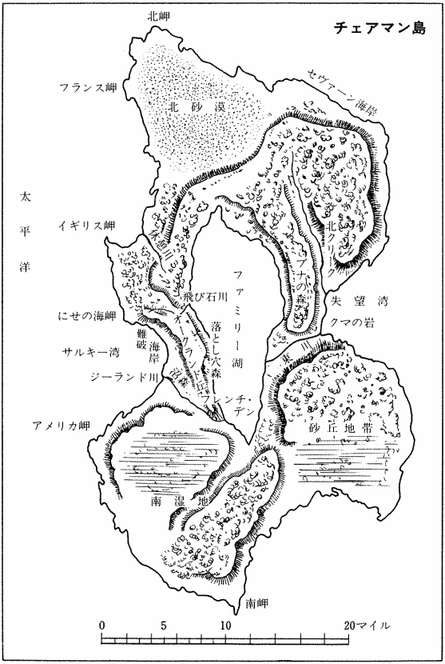
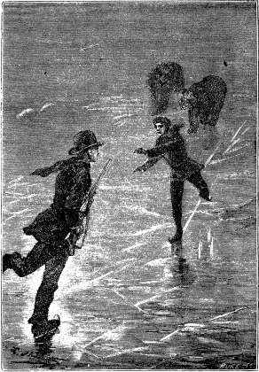

| 十五少年漂流記 〔完訳決定版〕 (創元SF文庫) | |
| ジュール・ヴェルヌ | |
| 東京創元社 (1993) | |
この本は縦書きでレイアウトされています。
また、ご覧になる環境により、表示の差が認められることがあります。
本作品を電子書籍版に収録するにあたり、一部の漢字が簡略体で表記されている場合があります。
作中、現在からすれば表現に穏当を欠く部分がありますが、訳者が他界している現在、みだりに内容に手を加えるのは慎むべきことであり、かつ古典として評価されている作品であるとの観点から、原文のまま掲載しました。
十五少年漂流記
ジュール・ヴェルヌ
南太平洋を吹き荒れる嵐が、小さな帆船をまるで木の葉のように弄んでいた。その帆船はどうしたわけか、舫綱がとけてニュージーランドの港から沖へ、外洋へと漂い出たのだった。しかも嵐と闘い必死になって船を操っているのは、最年長でも十四歳でしかない十五人の少年たちなのだ。やがて彼らは陸地を発見し、船はその海岸近くに座礁する。十五人が漂着したのは、いったいどんな所なのだろう、そしてどんなことが彼らを待ちうけているのだろうか。ヴェルヌが若き読者に贈る、勇気と情熱に満ちた不朽の冒険小説完訳版、初刊本の挿絵も多数再録。
登場人物
ブリアン
頭のいいフランス人の少年、十三歳
ジャック
ブリアンの弟、十歳
ゴードン
沈着冷静で公平なアメリカ人、十四歳
ドニファン
成績優秀だがいばっている、十三歳
クロス
...ドニファンのいとこ、十三歳
バクスター
勤勉で器用な少年、十三歳
ウェッブ
ドニファン派の少年、十二歳半
ウィルコックス
ドニファン派の少年、十二歳半
ガーネット
アコーデオンに熱中している、十二歳
サーヴィス
最も陽気な少年、十二歳
ジェンキンズ
学校では優等生、九歳
アイヴァースン
やはり優等生、九歳
ドール
...強情な少年、八歳半
コスター
食いしん坊な男の子、八歳
モコ
黒人の見習水夫、十二歳
東京創元社
ジュール・ヴェルヌ
荒川浩充 訳
DEUX ANS DE VACANCES
by
Jules Verne
1888
挿絵
レオン・ベネット
十五少年漂流記

１
一八六〇年三月九日の夜、雲は海面と見分けのつかないくらい低く垂れ、視界はわずか数尋にも達しなかった。
大波が鉛色に光って砕ける荒れ狂った海の上を、ほとんど帆を広げていない軽装備の船が一隻走っていた。
百トンのヨット――イギリスやアメリカでの帆船の呼び方によればスクーナーだった。
そのスクーナーはサルキー号という名だったが、船尾の船名板に書かれた名を読もうとしても読めなかっただろう。強い波によるのか衝突によるのか、なんらかの事故によって船尾の手すりから下が一部引きちぎられていたからである（あとがき参照）。
時刻は夜の十一時。その緯度では、三月の初めは、まだ夜が短い。夜明けの光は、午前五時ごろにならなければ見られない。それにしても、太陽が昇って明るくなるときまでに、サルキー号を襲っているこの危険は、もっと小さくなっているだろうか？ それとも、この弱々しい船は、依然として波にもてあそばれているだろうか？ おそらくそうだろう。高波が静まり突風が止むことだけが、最も恐ろしい難破からこの船を救うことができる。たどりついて生命の助かることのできそうな陸地から遠く離れた大海の真ん中での難船なのだから！
サルキー号の船尾で、四人の少年が舵をとっていた。十四歳の少年が一人、十三歳が二人、それに黒人で十二歳の見習水夫だった。彼らは力を合わせて船首が振れるのを防いでいた。船首が振れると、ヨットが横波を受ける危険があるからだった。舵輪は勝手に回転して彼らを手すりから外へ投げ出しそうになるから、非常に困難な仕事だった。それどころか、十二時少し前には、ひときわ大きな波が船腹にたたきつけて、舵をもぎ取られなかったのが奇跡と言えるくらいだった。
その打撃で倒れた少年たちは、すぐに立ち上がった。
「舵はだいじょうぶだったかい、ブリアン？」と一人が訊ねた。
「だいじょうぶだよ、ゴードン」と、すぐに舵輪を握っていたブリアンが落ち着いた声で答えた。それから彼は、もう一人の少年に声をかけた。
「しっかりしろよ、ドニファン、勇気をなくすなよ！......ほかの仲間も助けなければならないんだから！」
そのことばは英語だったが、ブリアンのアクセントにはフランス人らしいところがあった。
ブリアンはまた見習水夫のほうを向いて、
「けがはしなかったか、モコ？」と言った。
「いいえ、ブリアンさん」と見習水夫は答えた。「とにかく船首を波に向けるようにしましょう。そうしないとすぐに沈没してしまいます！」
そのとき、船室へ降りる昇降口の扉が、勢いよく開いた。甲板の高さに小さな顔が二つ現われ、それに犬も顔を出して吠えた。
「ブリアン、ブリアン......どうしたの？」と九歳の少年が叫んだ。
「なんでもないよ、アイヴァースン、なんでもないよ！ 船室にもどっていなさい、ドールも......早く！」
「こわいんだもの！」と二人めの、もう少し年下の少年が言った。
「ほかの子たちはどうだい？」とドニファンが訊ねた。
「皆もこわがってる！」とドールが答えた。
「さあ、もどるんだ！」とブリアンが言った。「その扉を閉めて、毛布をかぶって、目をつぶっていなさい。そうすればこわくないから！ 心配しなくていい！」
「気をつけて！......また大波です！」とモコが叫んだ。
激しい衝撃がヨットの船尾に当たった。今度は、幸いにも、甲板は波をかぶらなかった。もし開いている昇降口から水が船室に流れ込んでいたら、ヨットは重くなり、波に乗っていられなくなっただろう。
「なかに入っていろ！」とゴードンが叫んだ。「入っているんだ！......さもないと、かんべんしないぞ！」
「さあ、もどっていなさい、きみたち！」とブリアンがやさしく言った。
二人が顔を引っ込めたと思うと、もう一人の少年が顔を出して言った。
「ぼくたちも手伝わなくてもいいのかい、ブリアン？」
「いいんだ、バクスター」とブリアンは言った。「クロス、ウェッブ、サーヴィス、ウィルコックス、それにきみは、小さい子どもたちといっしょにいてくれ！......四人で、ぼくたちは十分だ！」
バクスターは内側から扉を閉じた。
「皆もこわがってる！」とドールが言ったではないか。
すると、暴風にもてあそばれているこのスクーナーには、子どもしかいないのだろうか？――そう、子どもだけなのだった！――それで、何人いるのだろうか？――十五人。ゴードン、ブリアン、ドニファン、それに見習水夫を含めて。――どういう経過で、彼らはこの船に乗ったのだろうか？――それは、やがてわかるだろう。
そして、このヨットに、おとなは一人もいないのだろうか？ 指揮をする船長もいないのだろうか？ 操船を助ける船員も？ この嵐のただなかで舵をとる舵手も？――いないのだった！......たった一人も！
それだから、サルキー号がこの大海のなかの正確にどの位置にいるかを、乗っている誰一人として言うことはできなかっただろう！......では、どういう大海だろうか？ あらゆる海のなかで最も広い海である！ オーストラリアとニュージーランドの陸地から南アメリカの沿岸まで、二千里にわたって広がっている太平洋なのだった。
では、何があったのだろうか？ このスクーナーの乗組員たちは何か大きな事故のために、いなくなってしまったのだろうか？ マレー諸島の海賊が彼らを連れ去り、最も年長でもわずか十四歳でしかない少年たちだけが残されたのだろうか？ 百トンのヨットは、少なくとも船長一人、甲板長一人、船員五、六人は必要である。操船に不可欠なこの人員のうち、見習水夫一人しか残っていない！......いったい、このスクーナーはどこから来たのだろう？ オーストラリアの海域か、あるいはオセアニアのどこかの群島からだろうか？ どのくらいの時間、航海しているのだろうか？ 目的地はどこだろうか？ 陸から遠く離れたこの海でサルキー号に出会ったら、どんな船長でもこういう質問をしたことだろう。そして、少年たちもそれに答えることができただろう。しかし、オセアニアの海を航行する太平洋航路の船も、ヨーロッパやアメリカから太平洋の多くの港に向かう何百という商船――蒸気船もあれば帆船もある――も、ひとつも見えなかった。それに、機関や帆が強力なそういう船がその海域にいたとしても、嵐と戦うのに精いっぱいで、漂流でもしているように海にもまれているこのヨットを救助することはできなかっただろう！
しかし、ブリアンとその仲間たちは、船首がどちらの側へも振れないように、最善を尽くして注意していた。
「どうしようか！......」とドニファンが言った。
「助かるためにできるすべてのことをしよう、神さまのご加護で！」とブリアンは言った。
この少年はそう言った。最も気力のあるおとなでさえ希望を失わないでいられるかどうかというのに！
実際、嵐は激しさを増していた。風は、船員の言い方によれば、雷のように凄まじく吹いていた。この表現はまったく正しい。サルキー号は突風によって《雷に撃たれた》ようになる危険があったからである。そのうえ、四十八時間前に、メーンマスト（大檣）はマストホールから四フィート上のところで折れてしまっていた。トライスル（荒天帆）を張ることができたら、もっと確実に操船することができただろう。フォーマスト（前檣）は先端が折れただけでまだだいじょうぶだったが、支檣索がゆるんでしまっていて、いつ甲板の上に倒れてくるかわからなかった。船首では、ぼろぼろになった三角帆が、銃声のような音をたててはためいていた。帆のなかではフォースル（前檣帆）だけが残っていたが、子どもたちはそれを縮める力がないので、今にも破れそうだった。もしフォースルが破れでもしたら、スクーナーは風のなかで安定を保つことができず、波をかぶって転覆し沈没してしまうだろう。そうなれば、乗っている子どもたちも海底に消えてしまう。
そのときまで、沖のほうには島影ひとつなく、東のほうにも大陸は現われていなかった！ 海岸に接近すると恐ろしい事故が起こるかもしれなかったが、子どもたちは、荒れ狂う広大な海よりも恐ろしいとは思わなかっただろう。浅瀬や暗礁や恐ろしい大波や、岩をたたく返し波はあるにしても、海岸があれば自分たちは助かると彼らは考えていた。足下に口を開いているこの大海ではなく、海岸ならば確実な大地なのに、と彼らは考えていた。
そのため彼らは何か灯が見えないかと探していた。灯が見えれば、その方向へ船を向けるのだが......
しかし、真っ暗な夜の闇のなかに、光は現われなかった！
突然、午前一時ごろ、何かの裂ける恐ろしい音が、風の唸る音よりも大きく響いた。
「フォーマストが折れた！......」とドニファンが叫んだ。
「違います。帆が縁索からちぎれたんです」とモコが言った。
「取り除かないといけない」とブリアンは言った。「ゴードン、きみはドニファンといっしょに、ここで舵をとっていてくれ。モコは、いっしょに来て手伝ってくれ！」
モコは見習水夫だったから、航海に関する知識を当然いくらかもっていたが、ブリアンにもまったくないわけではなかった。ヨーロッパからオセアニアに来たときに大西洋と太平洋を横断していたので、船の操縦に多少ではあるが親しんでいた。船の知識のないほかの子どもたちが、スクーナーの操縦をモコと彼に任せなければならなかったのは、そのためだった。
ブリアンとモコは、勇敢に、すぐ船首へ行った。船が横倒しにならないようにするには、下のほうがふくらんでそのためスクーナーを傾かせる危険のあるフォースルを、どうしても取り除かなければならなかった。もし傾くようなことになったら、金属製の支檣索を切りそれからフォーマストを根元から切り倒さないかぎり、スクーナーは立ち直れないだろう。子どもたちに、どうしてそんなことができるだろうか？
そういう状態のなかで、ブリアンとモコはすばらしい巧妙さを示した。突風が吹きつづいている間サルキー号が追風を受けつづけるように帆をできるだけ残しておこうとして、彼らは、甲板から四、五フィートまで下がっていた動索を巧みにゆるめた。帆の破れたところをナイフで切りとり、二本の転桁索で、下の隅を舷檣の索止め栓に結びつけた。その間、二人の勇敢な少年は二十回も大波にさらわれそうになった。
こうして帆を非常に小さくしたため、スクーナーは、それまでずっと進んでいた方向に走りつづけることができた。ほとんど船体だけのような状態だったが、風を受けて水雷艇のようなスピードで走った。重要なことは、船尾の手すりを越えるような波を受けないようにするために、波よりも速く進むことだった。
この仕事を終えると、ブリアンとモコは、ゴードンとドニファンのところへ戻って舵をとるのを手伝った。
そのとき、昇降口の扉がまた開いた。一人の子どもが顔を見せた。ブリアンの弟で三歳年下のジャックだった。
「来て！ 来て！」とジャックは叫んだ。「船室に水が入ったよ！」
「ほんとうか？」とブリアンも大きな声で言った。
昇降口へ走り、ブリアンは急いで階段を下りた。
船室は、船体の横揺れのために大きく揺れているランプでぼんやり照らし出されていた。その光で、子どもたちが十人ほど長椅子や寝台に横になっているのが見えた。最も年少の子どもたち――八歳か九歳のものもいた――は恐ろしそうに身を寄せ合っていた。
「だいじょうぶだよ！」と、まず彼らを安心させたいと思っていたブリアンは言った。「ぼくたちがいるから！......こわがらなくていい！」
それから、角灯で床を照らしてみると、両側の舷側の間を多少の水が行ったり来たりしているのがわかった。
どこから来た水だろうか？ 船体を覆っている板のどこかに隙き間ができて、そこから入ったのだろうか？ それを確かめなければならなかった。
船室の前のほうに大きな部屋があり、その先に食堂、さらに船員室があった。
ブリアンはその部屋をすべて回って見て、吃水線より上からも下からも浸水していないことを確かめた。船体の後ろのほうに集まったこの水は、船首に打ち寄せた海水が船員室の昇降口から少量流れ込んだものだった。したがって、危険なものではなかった。
ブリアンは船室へ行って仲間たちを安心させ、自分もいくぶん安心して舵のところへ戻った。このスクーナーは頑丈に建造されており、船底に新しく銅板を張っているので、水は決して浸入しないし、波にも耐えられるはずだった。
時刻は午前一時ごろで、雲が厚くなってあたりはいっそう暗く、強い風が狂ったように吹きつづけた。船は、鉛色の空と海に飲み込まれて行くように進んでいた。ウミツバメの鋭い鳴き声が空気を引き裂いた。ウミツバメがいるのだから陸は近いと判断していいだろうか？ いや、それはできない。沿岸から数百里離れたところで、しばしばウミツバメに出会うこともあるからである。それに、この鳥は風に逆らう力が弱いので、人間の力では速度を抑えられないこのスクーナーと同じく、嵐にまかせて飛んでいるのである。
一時間後、再び帆の裂ける音が聞こえた。残っていたフォースルが裂け、ぼろぼろになった切れ端が、大きなカモメのように、空中に飛び散った。
「もう帆もなくなったよ」とドニファンが叫んだ。「別の帆を張ることもできない！」
「かまわないさ！」とブリアンは言った。「スピードは変らないよ！」
「なんてことを言うんだい！ きみは、そんな調子で操縦するのかい......」とドニファンが答えた。
「後ろの波に注意して！」とモコが言った。「しっかりつかまっていないと、波にさらわれてしまいます......」
モコが言い終らないうちに、数トンの海水が船尾の手すりを越して襲いかかり、ブリアンとドニファンとゴードンは昇降口のほうへ投げとばされ、ようやく昇降口にしがみついた。しかし、見習水夫の姿が消えていた。サルキー号の船尾から船首までを洗うように通り過ぎた大波は、マストや帆桁の用材、小型ボート二隻、大型ボート一隻、それに羅針盤の箱までも押し流したが、そのうちのいくつかは船の外にまで押し流されずにすんだ。波の打撃で舷檣がこわれたために水がすぐに流れ出たので、船は海水の重みで沈没することはまぬがれていた。
「モコ！......モコ！......」と、口をきけるようになるとすぐブリアンは叫んだ。
「海に落ちたのかな？」とドニファンは言った。
「いや、そうじゃない！......姿も見えないし......声も聞こえないから！」と船べりから海をのぞき込んで、ゴードンが言った。
「助けなければいけない......ブイと......綱を投げよう！」とブリアンは言った。
そして、嵐が数秒の間こやみになると、よく響く声でもう一度叫んだ。
「モコ？......モコ？......」
「助けて！......助けて！......」と見習水夫が答えた。
「海じゃないよ」とゴードンが言った。「船首のほうで声がしている！」
「ぼくが行って助ける！」とブリアンは叫んだ。
そして、すぐに腹ばいになると、緩んだ綱の先で揺れている滑車に当たったり、滑りやすい甲板のために横揺れによって海にころげ落ちたりしないように注意しながら、進んで行った。
見習水夫の声がもう一度聞こえ、それから聞こえなくなった。
ブリアンは、苦心の末、船員室の昇降口にたどり着いた。
ブリアンは呼んでみた。
返事はなかった。
モコは、最後に叫んだ後、次に来た波にさらわれてしまったのだろうか？ もしそうだとすると、不幸な少年水夫は遠く離れてしまっているに違いなかった。波のうねりは、このスクーナーと同じくらいの速さでモコを運ぶことはできないに違いないからである。すると、もうだめで......
いや！ ごく弱い叫び声がブリアンの耳にとどいた。ブリアンは急いで錨巻上げ機のほうへ行った。その縦枠には第一斜檣の脚が組み込まれている。ブリアンの手は、もがいている人間の身体に触れた......
見習水夫だった。舷檣が船首に接した挟い隅にはまってしまっていた。動索が首にかかって、もがけばもがくほど首を締めつけていた。あの大波にさらわれたときにこの動索がひっかかったのだが、このままでは首を締められて死んでしまうだろう！
ブリアンはナイフを取り出し、見習水夫を捕えている綱をようやく切ることができた。
それから、モコを船尾のほうへ連れて行った。モコは話すことができるようになると、
「ありがとう、ブリアンさん、ありがとう！」と言った。
モコは再び舵のところへ戻った。四人は、サルキー号に襲いかかろうとする大きな波に立ち向かうため、互いに身体をつなぎ合った。
ブリアンが考えたのとは反対に、フォースルがなくなってから船の速度はやや減少していた。それはまた、新たな危険だった。船よりも波のほうが速く走ることになるから、波が船尾から船に襲いかかり、船が水びたしになるかもしれないからだった。どうすればよいか？ わずかな帆さえも張ることはできないのだ。
南半球では、三月は北半球の九月に相当し、夜の時間は中間的な長さである。時刻は午前四時ごろになっていたから、東のほう――つまりサルキー号が嵐のために運ばれて行く方向――の水平線が、間もなく明るくなるはずだった。朝になったら、強い風は弱まるだろうか？ あるいはまた、陸地が見えて、子どもたちの境遇は、たちまち好転するだろうか？ 夜明けの光が遠い空を染めるとき、それはわかるだろう。
四時半ごろ、ぼんやりした光が天頂にまでとどいた。残念ながら、靄のために視界は四分の一マイルに限られていた。雲がものすごい速さで走っているのが感じられた。暴風の力はまったく衰えず、海は大きなうねりが砕けて泡だっていた。スクーナーは、波頭へ押し上げられたり、波の谷間に投げ込まれたりを繰り返していた。もし横波を受けていたら、二十回も転覆したことだろう。
四人の少年たちは、荒れ狂う波を見つめていた。嵐がおさまるのが遅れたら、自分たちの状況は絶望的になるだろう、と彼らは感じていた。サルキー号は、今からさらに二十四時間、甲板に打ちつける波に耐えることはできないだろうし、やがて昇降口も破られてしまうだろう。
そのときだった。
「陸だ！......陸だ！......」とモコが叫んだ。
靄の切れ目から、見習水夫は、東のほうに海岸線を見たと思ったのだった。見まちがいではないのか？ 渦巻く雲とたちまち入りまじってしまう、ぼんやりした海岸線を見分ける以上に困難なことはない。
「陸だって？......」とブリアンが言った。
「そうです......」とモコは答えた。「陸が......東のほうに！」
モコは、今はもう靄に隠れてしまった水平線の一点を指さした。
「ほんとうかい？......」とドニファンが言った。
「ええ、そうです！......確かです！......」と見習水夫は答えた。「もう一度靄に切れ目ができたら、よく見てください......あそこです......フォーマストの少し右......ほら！ ほら！......」
靄が切れて、海面から離れ、高いほうへのぼり始めた。まもなく、船の前方数マイルの広さにわたって、海が現われた。
「そうだ！......陸だ！......確かに陸だ！......」とブリアンは叫んだ。
「とても低い陸だ！」と、海岸を注意深く見つめていたゴードンがつけ加えた。
今度こそ、疑う余地はなかった。大陸なのか島なのか、とにかく水平線上に、六、七マイルほどの陸が見えていた。現在進んでいる方向を、このまま強い風によって進めば、サルキー号は一時間以内にまちがいなくそこに着くに違いなかった。陸地に着く前に暗礁にでも当たって船がこわれてしまうことを、気をつけなければならなかった。しかし、少年たちは、そんなことは夢にも考えなかった。思いもかけず眼前に現われたその陸地を、彼らはただ救いとしか考えられなかったのである。
そのとき、風が再び激しく吹き始めた。サルキー号は、白い空を背景にインクで線を一本引いたようにくっきりと見えている海岸に向かって、まるで羽毛のように軽々と走って行った。海岸線のむこうは、高さ百五十フィートから二百フィート程度の崖になっていた。崖の前面には黄色っぽい砂浜が広がっており、砂浜の右のほうは奥地の森につづいているらしい丸味を帯びた木立ちで区切られていた。
ああ！ もしサルキー号が暗礁に当たらずにその砂浜に着くことができたら、もし河口でもあってそこに避難することができたら、少年たちは無事に危難を逃れることができることだろう！
ドニファンとゴードンとモコに舵をまかせて、ブリアンは船首へ行って陸地を眺めた。船の速度が早いので、陸地は見る見る近づいていた。船が安全に着岸できそうな場所を探したが、だめだった。河口も、いっきに乗りあげることのできそうな浅瀬さえも見えなかった。それに、砂浜の手前には、暗礁が一列に連なって大きくうねる波の上に黒い頭を見せ、それをものすごい返し波が休みなくたたいていた。そこに当たろうものなら、サルキー号はたちまちこっぱみじんに砕けてしまうだろう。
そこで、ブリアンは、坐礁したときのために、仲間がすべて甲板に出ていたほうがよいと考えた。彼は昇降口の扉を開いて叫んだ。
「みんな上がって来い！」
真っ先に犬が飛び出し、つづいて船尾のほうにいた十人ほどの子どもたちが出て来た。最も幼い子どもたちは、海底が浅くなったためにいっそう激しく逆巻く波を見て、恐ろしさに悲鳴をあげた......
午前六時少し前、サルキー号は暗礁に近づいた。
「しっかりしろ！......しっかりしろ！」とブリアンは叫んだ。
そして彼は、上半身裸になって、波にさらわれるものがいたらすぐにも助けようと用意していた。船が今にも暗礁に乗りあげようとしていたからである。
突然、最初の衝撃が感じられた。船尾の龍骨が暗礁に触れたのである。船全体が揺れたが、海水が船内に入ることはなかった。
次に来た大きな波で船はもち上げられ、約五十フィートほど前進したが、無数に突き出している岩角には当たらないですんだ。それから船は、左舷に傾いたまま、泡だつ返し波のなかで、動かなくなった。
もう海の真ん中にいるわけではなかったが、それでも砂浜まで四分の一マイルはあった。
２
そのとき、靄が晴れて、スクーナーの周囲の広い範囲が見渡せた。雲は、依然として非常な速さで走っていた。強い風は、まだ少しも衰えていなかった。風は、太平洋上のどことも知れないこの海岸に、その最後の力で吹きつけていた。
それが最後の力であることを望みたかった。サルキー号はまだ海の猛威にもまれているのだから、夜の間とくらべて危険が少なくなったわけではなかった。大きな波が甲板の手すりを越えて砕け、そのしぶきを浴びせられたとき、互いに身体を寄せ合っていた少年たちはもうだめかと思ったに違いない。スクーナーが動けなくなっていただけに、波の衝撃はいっそう激しかった。波が当たるたびに船の肋材までぶるぶると震えたけれども、船底が暗礁に触れたときも、岩角の間にはさまったときも、船体の被覆が破れることはなかったようだった。ブリアンとゴードンは船室へ下りて行き、船倉の内部に海水が浸水していないことを確かめた。
そこで、二人は、仲間――とくに小さい子どもたち――を、できるだけ安心させた。
「こわがらなくていいんだよ！」とブリアンは繰り返して言った。「この船は頑丈だから！......海岸も遠くないんだから！......待っていてくれ、岸にたどり着く方法を見つけるから！」
「どうして待っているんだい？」とドニファンが言った。
「そうだよ......どうしてなんだい？」と、ウィルコックスという十二歳くらいの少年も言った。「ドニファンの言うとおりだよ......どうして待っているんだい？」
「海がまだひどく荒れているし、今船を離れたら岩にたたきつけられるからだよ！」とブリアンは答えた。
「もし船がこわれたら？」と、ウィルコックスと同じくらいの年齢のウェッブという名の少年が大きな声で言った。
「その心配はないと思うよ」とブリアンは答えた。「潮が引いてしまえばね。潮が引いたら、風のぐあいがよければ、助かる作業を始めよう！」
ブリアンの言ったことは正しかった。太平洋では潮汐はさほど大きくはないが、それでも満潮と干潮の差はかなりある。だから、数時間待つべきだったろう。それに風も弱まるかもしれなかった。干潮になれば、おそらく暗礁の一部が現われるだろう。そのときになれば、スクーナーを離れてもずっと危険は少ないだろうし、岸までの四分の一マイルを渡るのも、ずっと容易だろう。
このブリアンの忠告は正しかったけれども、ドニファンとほかの二、三の少年はそれに従いたくないようだった。彼らは船首に集まって、低い声で話し合っていた。ドニファン、ウィルコックス、ウェッブ、それにもう一人のクロスという名の少年はブリアンと仲がよくないらしいことが、はっきり表われていた。サルキー号が長い間海上を走っている間、彼らがブリアンに従っていたのは、すでに言ったようにブリアンには航海の経験があるからだったのである。上陸したら自由行動をとろうと、彼らはずっと考えていた。なかでも、教育と知能の点ではブリアンよりも、ほかの仲間よりもすぐれていると自負していたドニファンはそうだった。ブリアンに対するドニファンのねたみは以前からあるものだった。ブリアンがフランス人だというだけで、イギリス人の少年たちは彼の指示に従いたがらなかったのだった。
そういう傾向は、そうでなくても不安な状態をいっそう悪くする恐れがあった。
しかし、ドニファン、ウィルコックス、クロス、ウェッブの四人は、渦巻いたり流れたりして一面に泡立っている海を見つめていた。その海を渡ることは、きわめて危険と思われた。つまり、数時間待とうという忠告は、まことに妥当だったのである。ドニファンとその仲間たちも、明らかな事実には屈服せざるを得ず、とうとう幼い子どもたちのいる船尾へもどって来た。
ブリアンは、周りにいたゴードンたちに言った。
「どんなことがあっても、離れないようにしよう！ いっしょにいることにしよう、さもないと生命を失うことになるよ！」
「ぼくたちに命令するつもりかい！」と、それを聞いたドニファンが大声で言った。
「そんなつもりはないよ」とブリアンは答えた。「皆が助かるためには、心を合わせて行動しなければならないって言いたかっただけだよ！」
「ブリアンの言うとおりだよ！」とゴードンも言った。彼は冷静でまじめで、よく考えたうえでなければものを言わない少年だった。
「そうだよ！ そうだよ！」と、自然にブリアンのほうに心を惹かれていた二、三人の子どもたちも叫んだ。
ドニファンは何も言わなかった。しかし、彼と仲間たちは、船を離れる作業が始まるまで、意地を張って皆から離れたところにいた。
ところで、その陸地はどんなところだろう？ 太平洋の多くの島のひとつなのだろうか、それとも大陸なのだろうか？ サルキー号の位置があまり海岸に近く周辺を十分に眺めることができなかったので、その疑問は解決されないままだった。海岸はくぼんで広い湾になっており、湾の両端は岬になっていた。北の岬は切り立ったかなり高い崖で、南の岬は細く突き出していた。しかし、その二つの岬のむこう側は、海が島の周囲をまるく囲んでいるのだろうか？ ブリアンは、舷側から望遠鏡を使ってそれを確かめようとしたが、わからなかった。
島だとした場合、スクーナーを離礁させられなかったら、どうして島を去ることができるだろうか？ やがて満潮になればスクーナーは暗礁の上を引きずられて、こわれてしまうに違いなかった。そして、もし島が無人島だったら――太平洋には無人島がある――船から運び出し得るもの以外に何ももたない少年たちは、どうやって生きて行くのに必要なものを手に入れることができるだろう？
反対に大陸だった場合、南アメリカ大陸である以外に考えられないから、救われるチャンスはずっと多いに違いない。チリかボリビア（この時代には太平洋岸に領土を持っていた）だろうから、その領域内で、すぐにではないにしても上陸後数日中には、助けを得ることができるだろう。南アメリカの大草原に近いこの海岸では、確かにいろいろ恐ろしい出来事に出会う恐れがある。しかし、今のところ上陸することがまず問題だった。
天候がかなりよくなって、細かい部分まで見えるようになった。海岸、その後ろの崖、崖の下にいくつかかたまって生えている灌木の茂みなどを、はっきり見分けることができた。海岸の右のほうに河口があることまで、ブリアンにはわかった。
要するに、この海岸は眺めはまったくよいところはなかったが、緑の草木が茂っていることは、ほかの中緯度の地帯と同じくらい土地が肥沃だということを示していた。おそらく崖のむこう側は、海からの風があたらないので、土地もよく、植物はかなりよく育っているに違いなかった。
人間が住んでいるかどうかについては、海岸のあたりには、住んでいる様子はなかった。河口のあたりにも、家も小屋も見えなかった。原住民がいたとしても、強い西風を受けない内陸のほうにおそらく住んでいるのだろう。
「小さな煙さえも見えない！」と、望遠鏡をおろしながらブリアンは言った。
「海岸にも船は一隻もありませんよ！」とモコが言った。
「あるものか。港じゃないんだから......」とドニファンが言った。
「港の必要はないんだ」とゴードンが言った。「漁船は河口に避難できる。嵐のために上流のほうに船をもって行っているかもしれないよ」
ゴードンの観察は的確だった。しかし、理由はともあれ、船は一隻も見えず、この海岸付近には人の住んでる様子はまったくなかった。難船した少年たちが数週間滞在しなければならないとなっても、住むことができるのだろうか？ 彼らには、何よりもまずそれが気がかりだった。
そうしている間にも、潮は少しずつ引いていった。海からの風が――北西の風に変り衰えているようだったが――妨害しているために、潮はごくゆっくりとしか引いていかなかった。だから、暗礁が現われて渡れるところがはっきりするまでに、準備をしておいたほうがよかった。
七時近くになっていた。おのおのが最も必要なものを甲板に運び出した。それ以外のものは、満潮になって海岸にまで運ばれて来たときに拾い集めることにした。小さな子どもも大きな少年も、その仕事をした。船には、かん詰、ビスケット、くん製あるいは塩づけの肉がかなりたくさん貯蔵されていた。それを包みにし、大きな少年たちが陸まで運ぶことになった。
しかし、その運搬作業を行うためには、暗礁が現われなければならなかった。海岸までずっと岩が現われるくらいに潮が引くだろうか？
ブリアンとゴードンは注意深く海を観察しつづけた。風向きが変るとともに、嵐が弱まるのが感じられ、泡立って砕ける波もおさまり始めていた。突き出した岩を見ていると、海面が下がって行くのがはっきりわかるようになった。しかし、スクーナーもその影響を受けて、さらに左舷に傾いた。傾きが大きくなれば、横倒しになる恐れがあった。速度の早いヨットなので、船底の龍骨と肋材が大きく、洗練された形をしているからだった。もし皆が船を離れる前にスクーナーが横倒しになって船内に浸水するようなことがあったら、重大な事態になるだろう。
嵐の間にボートが流されてしまったことが惜しまれた。皆が十分に乗れるあのボートがあったら、ブリアンたちは今すぐにでも海岸にまで行けるように試みただろう。それに、ひとまず船に残して行かなければならない役に立つ品物を運搬するためにも、海岸とスクーナーの間を往復できるボートがあったらどんなに便利だったろう！ もし今夜にでもサルキー号がこわれてしまったら、その断片は返し波のために暗礁の間でもまれて、どうなってしまうだろう？ それでもなお、その断片は利用できるだろうか？ 残った食糧は完全にだめになってしまうのではないだろうか？ そうなったら、難船した少年たちは、この陸地の産物だけに頼らなければならなくなるのではないだろうか？
脱出作業のためのボートがなくなったということは、実に残念なことだった。
突然、船首で叫び声が起こった。バクスターが重大な発見をしたのだった。
なくなったと思っていた大型ボートが、第一斜檣の支索にひっかかっていたのだった。そのボートには、確かに五、六人しか乗れない。しかし、甲板に引き上げて調べてみるとどこもこわれていなかったので、海岸まで歩いて渡れなかった場合に利用することができそうだった。だから、潮がもう少し引くのを持てばよかった。ところが、そのボートのことで激しい議論になり、ブリアンとドニファンの間でつかみ合いの争いになってしまった。
ドニファン、ウィルコックス、ウェッブ、クロスの四人がそのボートを海へおろそうとしているところへ、ブリアンが近づいて行ったのだった。
「きみたち、何をするんだい？」とブリアンは言った。
「思いついたことをやるのさ......」とウィルコックスが答えた。
「ボートに乗ろうっていうのかい？」
「そうさ」とドニファンが答えた。「じゃまをしないでくれよ！」
「ぼくや......みんなを、きみは見捨てようっていうのかい？」
「見捨てるだって？......何を言っているんだ......」とドニファンが高慢な調子で言った。
「ぼくは誰も見捨てたりしないよ！......海岸に着いたら、一人がボートを戻しに来るよ......」
「もし戻って来られなかったら？」と、怒りを懸命に抑えてブリアンは大声で言った。
「もし岩に当たってこわれてしまったら......」
「乗ろう！......乗ろう！」と、ブリアンを押しのけてウェッブが言った。
そして、ウィルコックスとクロスに手伝わせて、海におろそうとしてボートを持ち上げた。
ブリアンはボートの端をおさえて言った。
「乗っちゃいけない！」
「じゃまをするなよ！」とドニファンが言った。
「乗っちゃいけない！」と、皆のためにもがんばらなくてはいけないと決心して、ブリアンはもう一度言った。「ボートは小さい子どもたちのために残しておかなければいけないよ。潮が引いても、海が深くて岸まで歩いて渡れないかもしれないから......」
「ほっといてくれ！」とドニファンが怒ってどなった。「もう一度言うぞ、ブリアン、じゃまをしないでくれ！」
「ぼくももう一度言うよ」とブリアンも大声で言った。「ぼくはじゃまをするよ、ドニファン！」
二人の少年は今にもつかみ合いを始めそうになった。そうなれば、ウィルコックス、ウェッブ、クロスの三人は当然ドニファンの味方をする。バクスター、サーヴィス、ガーネットの三人はブリアンの側につくだろう。いよいよ大変なことになりそうになったとき、ゴードンが中に入った。
最も年長で、最も冷静なゴードンは、そんなことになったら困ったことになるとわかっていたので、仲裁をし、その場は良識の上からもブリアンを支持した。
「さあ！ さあ！ もう少しがまんしろよ、ドニファン！ 海がまだあんなに荒れているし、ボートがこわれてしまうかもしれないことは、きみだってわかるだろう！」
「ぼくはブリアンに命令されたくないんだよ」とドニファンは大声で言った。「しばらく前から命令するようになっているだろう！」
「そうだ！......そうだ！」とクロスとウェッブも言った。
「ぼくは命令なんかしていないよ！」とブリアンは答えた。「でも、皆のことにかかわる問題には、誰にだって勝手なことをさせておくことはできないよ！」
「きみだけじゃない。ぼくたちだって心配しているんだ！」とドニファンが言い返した。「それにもう陸地に着いたんだから......」
「残念ながら、まだだよ」とゴードンは言った。「ドニファン、強情を張るなよ。ボートを使うのは、もっといいときが来るまで待つことにしようよ！」
ゴードンは、ドニファンとブリアンの間の仲裁役をうまく果たした。それは今までにも何度かあったことで、仲間たちはゴードンの意見に従ったのだった。
潮は二フィート引いていた。暗礁の間に、船の通れる水路はあるだろうか？ それを確かめることが必要だった。
ブリアンは、フォーマストから見れば、岩の位置がもっとよくわかるだろうと考えた。そして、船首へ行き、右舷の支檣索をつかむと、マストの横木まで登った。
暗礁のなかに、海面に突き出た岩に両側をはさまれた水路が見えた。ボートを使って上陸しようと思ったら、そこを通って行くのがよさそうだった。しかし、暗礁の付近にはまだ渦や逆流が非常に多く、ボートでうまく通り抜けるのはむずかしそうだった。岩に当たって、ボートはたちまちこわれてしまうだろう。潮が引いて安全に通れる水路がはっきりわかるまで、待つほうがよかった。
ブリアンは、横木にまたがって、海岸をもっと詳しく調べ始めた。望遠鏡を、砂浜沿いから崖のほうにまで向けた。二つの岬にはさまれた八マイルないし九マイルの海岸には、人の住んでいるらしい様子はまったくなかった。
三十分ほど観察してから、ブリアンは甲板に下り、見たことを仲間に説明した。ドニファン、ウィルコックス、ウェッブ、クロスの四人は、何も言わず、聞いている振りをしているだけだったが、話をよく聞いていたゴードンは訊ねた。
「ブリアン、サルキー号が坐礁したのは、午前六時ごろじゃなかったかい？」
「そうだよ」とブリアンは答えた。
「潮が引くのには、どのくらい時間がかかるのだったかな？」
「五時間......だと思う。そうだろう、モコ？」
「ええ......五時間から六時間です」と見習水夫は答えた。
「そうすると、海岸まで行こうとするのにいちばんいい時間は、十一時ごろというわけだね？......」とゴードンは言った。
「ぼくもそう計算していたんだ」とブリアンは答えた。
「それなら」とゴードンは言った。「そのときのための用意をしよう。少し食べることにしようよ。もし海に入らなければならないとしたら、少なくとも数時間前に食べていたほうがいいからね」
いかにもこの慎重な少年らしい、いい忠告だった。そこで、かん詰とビスケットで朝食をした。ブリアンは小さい子どもたちに気をくばった。ジェンキンズ、アイヴァースン、ドール、コスターは、幼い子どもらしいのんきさで、もう安心し始めており、二十四時間ほとんど何も食べていなかったので、食べ過ぎるかもしれなかったからである。しかし、朝食はとにかく無事に終り、水に数滴のブランデーを加えた飲物は、元気を回復させた。
朝食の後、ブリアンはまた船首へ行き、舷檣に肘をついて、再び暗礁を観察し始めた。
潮の引くのは、なんとゆっくりしているのだろう！ しかし、船の傾きが大きくなっているから、海面が低くなりつつあることは明らかだった。モコは水深を測定するための測鉛をおろし、暗礁までまだ少なくとも八フィートの深さがあることを確かめた。暗礁がすっかり現われるくらいに、潮が引くと考えてよいだろうか？ モコはそうは考えなかった。それで、皆を心配させないように、こっそりブリアンにそのことを話しておいたほうがいいと考えた。
ブリアンは、そのことをゴードンに話した。二人は、風が――やや北寄りに変ってはいたが――潮が引くのを妨げていて、凪のときほどは引かないのだと考えた。
「どうしよう」とゴードンが言った。
「わからない......ぼくにはわからない！......」とブリアンは答えた。「困ったなあ......子どもしかいないんだからな。おとながいればわかるんだろうけれど！」
「必要に迫られれば、わかるよ！」とゴードンは答えた。「あきらめてはいけないよ、ブリアン。慎重に行動しよう！......」
「そうだね、やってみよう、ゴードン！ 満潮になるまでサルキー号を離れないでいて、もう一晩ここで過ごさなければならないことになったら、ぼくたちは助からないよ......」
「それは、はっきりしている。船はばらばらになってしまうだろうからね！ だから、どうしても船を離れなければならないんだ......」
「そうだ、どうしてもだよ、ゴードン！」
「渡し舟になる筏をつくったらどうかな？」
「ぼくもそれは考えたよ」とブリアンは答えた。「でも、残念なことに、マストなどの予備材はほとんど全部が嵐にさらわれてしまったよ。舷檣をこわして、それを材料にして筏をつくるだけの時間はないよ！ 残るのはボートだけれど、海が荒れているから、使えないね！ できるかもしれないのは、綱を、海底の暗礁を越して、突き出ている岩まで張って結びつけることだよ。そうすれば、たぶん綱を伝って海岸まで行けるかもしれない......」
「誰がその綱を張る？」
「ぼくだよ」とブリアンは答えた。
「ぼくも手伝おう！......」とゴードンは言った。
「いや、ぼく一人でやるよ！」とブリアンは言った。
「ボートを使うのかい？」
「あのボートをなくしてしまったら大変だよ、ゴードン。最後の手段にとっておいたほうがいい！」
その危険な計画を実行に移す前に、ブリアンは、どんな事件が起こってもいいように、必要な予防策を立てておきたいと考えた。
船には救命胴衣がいくつかあったので、ブリアンはすぐにそれを小さい子どもたちに着用させた。船を離れることになったとき、幼い子どもたちには深くて足が立たなくても、それを着けていれば浮いていられるだろうし、そうすれば大きな少年たちが、綱を伝わりながら彼らを海岸まで押して行けるはずだった。
十時十五分だった。四十五分以内に、潮が最も引くだろう。船首のほうでは、もう水深は四、五フィートしかなかった。しかし、海面はそれ以上低くなるようには見えなかった。六十ヤードほど前方で、明らかに海底が高くなっていた。海の水が黒っぽく見えること、海岸に沿って岩の先端がたくさん海面に突き出していることで、それがわかった。しかし、船首付近の目立って深くなっているところは、渡るのがむずかしいに違いなかった。けれども、もしブリアンがその方向に綱を伸ばして岩の一つにしっかりと固定することに成功し、その後で錨巻上げ機を使って綱をぴんと張れば、その側を伝って背の立つところまで行くことができるだろう。それに、食糧や必要な道具の包みを綱を滑らせて行けば、無事に陸まで運ぶことができるだろう。
ブリアンは、自分の試みがどんなに危険でも、ほかの仲間に代わってもらおうという気はなく、そのための準備を着実に進めた。
船には長さ百フィートほどの綱が何本かあり、係船あるいは曳航に用いるものだった。ブリアンは、そのなかから手ごろな中くらいの太さの綱を選び、服を脱いでから、その綱の端をバンドに結びつけた。
「さあ、みんな」とゴードンが叫んだ。「船首に来てくれ！......綱を繰り出すんだ！」
ドニファン、ウィルコックス、クロス、ウェッブの四人も、その作業の重要さを理解したから、協力することを拒まなかった。そこで、気持ちはさまざまではあったが、皆は、ブリアンの力を配慮して少しずつたるむようにしながら、巻いてある綱を伸ばして行く用意をした。
ブリアンが海に降りようとしたとき、弟が近づいて来て、叫んだ。
「兄さん！ 兄さん！」
「心配するな、ジャック。ぼくのことは心配しなくていいんだよ！」とブリアンは答えた。
そしてすぐ海に入り、力強く泳ぎ始めた。綱はするすると伸びて行った。
ところで、この仕事は海がおだやかなときでさえも、むずかしかっただろう。たくさんの岩の間で、打ち返す波が激しく砕けていたからである。海水がさまざまな方向に流れ、勇敢な少年も真っ直ぐに進むことはむずかしく、流れにはまるとそこから抜け出すのに非常な苦心を要するのだった。
それでも、ブリアンは少しずつ岸に向かって進んで行き、仲間たちはそれに合わせて綱を繰り出していった。しかし、スクーナーからようやく五十フィートほど行っただけで、ブリアンの力が弱まり始めているのがはっきりわかった。彼の目の前に、二つの大きなうねりが出会って、渦を巻いていた。その渦を迂回することができれば、そこから先は海がおだやかだから、おそらく目標に到達することができるだろう。ブリアンは、力を振りしぼって、左へ回ろうとした。しかし、その試みは失敗に終った。力の強い、おとなが泳いだとしても、成功することはできなかったろう。うねりに捕えられて、ブリアンは渦の中心のほうへ引き寄せられて行った。
「助けてくれ！......綱を引いてくれ！ 引いてくれ！」と叫んだ後、ブリアンの姿は見えなくなった。
船から見ていた少年たちは不安にどよめいた。
「引っ張れ！」とゴードンが冷静に命令した。
仲間たちは、ブリアンがあまり長い間水のなかに沈んでいて窒息しないうちに甲板へ引き上げようと、急いで網を引いた。
一分もしないうちに、ブリアンは甲板へ引き上げられた。気を失っていたが、弟の腕に抱かれて、すぐに意識をとりもどした。
暗礁の上に綱を張り渡そうという試みは失敗に終った。誰かがもう一度やっても、成功しなかっただろう。そうなると、この不運な少年たちは、待つほかなくなってしまった......何を待つのか？......助けをだろうか？......その助けは、どこから、どういうふうに来るのだろうか？
正午を過ぎていた。上げ潮が始まり、打ち返す波が大きくなっていた。新月だから、波は昨夜よりももっと強くなるに違いなかった。だから、沖のほうから風が吹くようになったら、船は海底の岩から離れる恐れがあった。......そして、もう一度船底が岩に当たり......転覆するだろう！......決定的な難船で、誰一人生き延びることはできないだろう！ 何もできなかった！ 何も！
皆が船尾に集まり、小さい子どもたちは大きな少年たちをとり囲むようにして、海を見つめていた。海はふくれ上がり、岩の先端が一つ一つ水の下に沈んで見えなくなった。困ったことに、風はまた西から吹くようになっていて、昨夜と同じように吹き荒れていた。水深が増すにしたがって、波は高くなり、サルキー号にしぶきを浴びせた。やがて波が襲いかかるだろう。幼い難船者たちを助けられるのは、神だけだった。恐れて叫ぶ声と祈りの声が入り交じった。
二時少し前、上げ潮で押し上げられたスクーナーは、もう左舷に傾いていなかった。しかし、縦揺れのため、船尾はまだ岩にひっかかっているのに、船首は海底に当たったりした。そのうちに、龍骨の後端につづけざまに衝撃があり、サルキー号は左右に揺れ始めた。少年たちは、船外へ投げ出されないように、互いにつかまり合っていなければならなかった。
そのとき、沖のほうから押し寄せて来た泡立った大波が、船から二鏈（一鏈は約二百メートル）のところで、山のようにぐっともり上がった。海嘯（満潮のとき潮流の前面が壁のようになって川を上流に遡る現象）か津波のような巨大な波で、高さは二十フィートを越えた。波は狂ったような激しい勢いで押し寄せ、暗礁を大きく包み込むと、サルキー号を押し上げ、岩の上を押し流した。船底は岩にかすりもしなかった。
巨大な泡立つ波に乗ったサルキー号は、一分とたたないうちに、海岸まで運ばれ、砂の山にぶつかった。崖の下に生えている灌木の茂みまで約二百フィートのところだった。そして、サルキー号は止まった。今度は、固い大地の上だった。波が引いて行くと、砂浜が広く現われた。
３
そのころ、太平洋にあるイギリスの重要な植民地ニュージーランドの首都オークランド（現在の首都は同じ北島のウェリントン。一八六五年に移った）では、チェアマン寄宿学校は最も評判のいい学校の一つだった。在校生は約百人ほどで、その地方の上流家庭の子どもたちだった。原住民マオリ族の子どもは別の学校に入ることになっており、この寄宿学校には入れなかった。チェアマン寄宿学校にいるのはイギリス人、フランス人、アメリカ人、ドイツ人だけで、この地方の地主、資産家、商人、あるいは官吏の息子たちだった。彼らはそこで、イギリス本国の同種の学校で与えられるのと同じような立派な教育を受けていた。
ニュージーランド群島は二つの主要な島からできており、北の島はイカ・ナ・マウイ（さかなの島）、南の島はタワイ・ポナムー（緑色の硬玉の島）である。二つの島は、クック海峡でへだてられており、南緯三十四度から四十五度にまたがっている。その位置は、北半球のフランスとアフリカ北部の緯度に相当する。
北島は不規則な台形で、南部は凹凸が多く、北西に曲線を描いて突き出し、その先端がマリア・ヴァン＝ジーメン岬である。
その曲線のほぼ起点にあたる、北島の幅がわずか数マイルしかないところに、オークランドがある。つまり、ギリシアのコリントのような位置にあり、そのため《南のコリント》という名を与えられている。オークランドには、東西に二つの港がある。東の港はハウラキ湾に面しており、湾の水深が浅いためイギリス式の長い埠頭をいくつか突き出させる必要があった。その埠頭に、中くらいのトン数の船が接岸する。そのなかでも、商業用埠頭が最も長く、またそれは市の中心的な通りの一つであるクイーン・ストリートに通じていた。
チェアマン寄宿学校があったのは、このクイーン・ストリートの中ほどである。
さて、一八六〇年二月十五日の午後、この寄宿学校から、両親につき添われた百人ほどの少年が、元気よく楽しそうに出て来た。まるで籠を放たれた小鳥のようだった。
じつは、休暇の始まりだったのである。二か月の独立、二か月の自由である。何人かの生徒には航海に出る計画があり、寄宿学校でかなり前からそのことを話し合っていたのだった。ニュージーランドを一周するサルキー号に乗船するという計画は、富裕な家庭の子どもたちの心をどれほど興奮させたか、それは付け加える必要もないだろう。
生徒たちの親が借りた、この美しいスクーナーは、六週間の航海をする予定になっていた。船の持主は、生徒の一人の父のウィリアム・Ｈ・ガーネット氏で、もと商船団の団長で、信頼できる人物だった。数家族で分担した契約金が航海の費用になるはずで、航海は完全に安全・快適に行われることになっていた。少年たちにとってみれば、非常な喜びだった。数週間の休暇を、これ以上楽しく過ごすこともむずかしいだろう。
イギリスの寄宿学校で行われる教育は、フランスの寄宿学校で行われるものとはかなり違っている。生徒たちに、はるかに自主性、つまり相対的な自由が与えられており、それが生徒たちの将来によい影響を与えるのである。生徒たちは、フランスと比べて、早くおとなになるのである。一言でいえば、人間的な教育が知的な教育と並行して進められる。その結果、大部分の生徒が礼儀正しく、他人に対して思いやりがあり、きちんとした服装をしている。そして、これは注目に価することだが、受ける罰が正当なものであれば、それを逃れるためにごまかしをしたり嘘をついたりすることは少ないのである。また、学校内で、共同生活のための規則、それに基づくおしゃべり禁止の規則にも、少年たちがあまり厳格に従わされることがないのは注目する必要がある。一般に、少年たちは個室をもち、そこで食事をする。食堂で食事をするときも、彼らはまったく自由に話をすることができるのである。
生徒たちは、年齢に応じてクラスに分けられる。チェアマン寄宿学校には、五クラスあった。一年と二年のクラスの子どもたちは、まだ両親の頬にキスをすることができるが、三年になるともうキスの代わりにおとなと同じに握手をする。また、生徒たちを監視する自習監督もいないし、小説や新聞を読むことも許されているし、休日もしばしばある。勉強の時間も多くはなく、体育の時間も含まれており、体操、ボクシング、そのほかあらゆる種類の競技が行われる。こういう自主独立を悪用する生徒がまれにあるが、それに対する懲罰として、体罰――おもに鞭打ちの罰――がきめられている。しかし、アングロ・サクソン民族の少年たちにとって、鞭打たれることは少しも不名誉なことではないのである。彼らは、自分がそれに価すると認めたときには、抵抗することなくその罰を受ける。
誰でも知っているように、イギリス人は、私生活にも公的な生活にも、伝統を尊重する。学校でも、伝統は――それが理屈に合わないときでも――やはり尊重される。ただ、その場合の伝統というのは、フランスの学校における新入生いじめとは違う。上級生は新入生を保護する責任があり、それに対して新入生は上級生に日常生活で奉仕をしなければならず、それを逃れることはできないのである。その奉仕というのは、朝食を運んだり、服にブラシをかけたり、靴を磨いたり、お使いをしたりすることで、それらは《雑用》と呼ばれ、それをしなければならない新入生は《雑用係》と呼ばれる。上級生に対して《雑用係》の役をするのは、最下級の子どもたちである。服従することを拒むと、ひどい目に遭うことになる。しかし、そんなことを考えるものはまったくいない。そのことが少年たちに規律に従う習慣を与えるのであり、それはフランスの高等中学校には見られないところである。しかしとにかく、伝統はそれに従うことを要求しており、すべての人間がそれを守っているのが大英帝国なのである。大英帝国では、最も身分の低いロンドン子から上院議員にいたるまで、伝統に従うことを要求されているのである。
サルキー号の航海に参加することになっていたのは、チェアマン寄宿学校の各クラスの生徒たちだった。すでに見たように、八歳から十四歳までの少年たちだった。そして、見習水夫一人を含めた、この十五人の少年たちは、家を遠く離れて、長い時間、恐ろしい冒険をすることになるのである！
まず、少年たちの名、年齢、能力、性格、家庭の状況、それに休暇が始まった時の学校での相互の関係を記しておく必要がある。
フランス人であるブリアン兄弟、アメリカ人であるゴードンを除くと、ほかはすべてイギリス人である。
ドニファンとクロスは、ニュージーランドの上流社会に属する豊かな地主の子だった。二人とも年齢は十三歳と数か月、いとこ同士で、第五学級に属していた。ドニファンは上品で身なりもよく、皆のなかで、文句なく最もすぐれた生徒だった。聡明で勉強熱心である彼は、学問好きであると同時に負けず嫌いから、決して成績が下がらないように努めている。貴族的な尊大な態度から《ドニファン卿》というあだ名をつけられており、その高圧的な性格から、いつでも人を支配したがる傾向があった。ブリアンと彼とが数年前から対立しているのはそこから起こっているのであり、今度の航海で仲間たちへのブリアンの影響力が大きくなるようになって以来、その対立関係はいっそう強まっていたのだった。クロスは、ふつうの生徒だが、いとこのドニファンが考えたり、言ったり、したりすることにすべて感心するのである。
同じ第五学級で、十三歳のバクスターは、冷静で、思慮深く、勤勉で、創意に富み、器用だが、ごくささやかな商人の子である。
ウェッブとウィルコックスは、年齢は十二歳六か月、第四学級の生徒である。成績は中くらいで、強情で、けんか好きで、《雑用》をいつも厳格に実行させようとするほうである。家庭は裕福で、父は裁判所の高い地位を占めている。
ガーネットとサーヴィスは、第三学級で、ともに十二歳。ガーネットの父は退役した海軍大尉、サーヴィスの父は富裕な入植者で、二人ともワイテマタ港北岸のノース・ショアに住んでいる。両方の家族が仲がよいので、二人はいつもいっしょにいる。二人とも気はいいのだが、働くことが嫌いなので、自由にさせておいたらどんなことになるかわからない。ガーネットは、イギリス海軍で愛好されているアコーデオンに熱中しており――困った熱中ではあるが――、暇があればこの好きな楽器を弾き、サルキー号にも持ち込むのを忘れていなかった。サーヴィスのほうは、仲間のなかでまちがいなく最も陽気で、最もそそっかしく、チェアマン寄宿学校のおどけ者で、愛読する『ロビンソン・クルーソー』や『スイスのロビンソン』（あとがき参照）にすっかり感化されて冒険旅行ばかり夢見ているのである。
次に、九歳の二人の少年を紹介することにしよう。その一人、ジェンキンズは、ニュージーランド王立協会という科学協会の会長の子である。もう一人のアイヴァースンは、聖パウロ首都大司教座聖堂の牧師の子である。二人はまだ第三学級と第二学級だが、学校では優等生とされている。
それから、二人の少年――八歳と六か月のドールと八歳のコスターである。二人ともニュージーランド陸軍士官の子で、両親はオークランドから六マイル離れた、マヌカウ港沿岸のウーチャンガという小さな町に住んでいる。二人はまだ《ちび》だから、ドールは強情、コスターは食いしんぼうという以外、何も言うことはない。二人は第一学級で、とくに成績が優秀というわけでもないのに、読み書きができるといって非常に進歩したように思っている――その年齢では別に得意になるほどのことでもないのに。
以上に記した少年たちは、すべてニュージーランドに長く住んでいる立派な家庭の子どもである。
スクーナーに乗り込んだ少年には、ほかに三人――アメリカ人が一人、フランス人が二人――いる。
アメリカ人というのはゴードンで、十四歳。顔や態度に、《ヤンキー》ふうのある種の荒々しさがもう現われている。少し無器用で動作はのろいが、第五学級の生徒のなかで最も落ち着いている。仲間のドニファンのように頭はよくないが、公平な精神と実際的な感覚をもっていることをすでに何度か証明している。冷静で、ものごとをよく観察し、まじめである。細心すぎるくらいきちんとした性格で、机のなかのものをすべて分類し整理し手帳に書きとめているのと同じように、頭のなかで考えることもきちんと整理されている。同級生たちは彼の長所を認めて彼を尊敬し、イギリス生まれではないけれども彼と仲よくしていた。彼はアメリカのボストンで生まれ、父も母もいない孤児で、身寄りの人としては後見人しかいない。後見人は、もと領事で、財産をつくってからニュージーランドに落ち着き、マウント・セント・ジョン村に近い丘に散在する美しい別荘のひとつに数年前から住んでいる。
二人のフランス人というのはブリアンとジャックの兄弟で、彼らは、二年半前にイカ・ナ・マウイの中央にある沼地を干拓するという大工事を指導するためにやって来た、優秀な技師の子だった。兄は十三歳。頭はいいのだが勉強が好きでなく、しばしば第五学級のびりになる。しかし、その気になれば、理解力とめざましい記憶力によって優等になってしまう。ドニファンが嫉妬するのはその点だった。そういうわけでブリアンとドニファンは、チェアマン寄宿学校でも決して仲がよかったことはなく、サルキー号に乗ってからでもその仲の悪さが表われたのはすでに見たとおりである。それから、ブリアンは、大胆で、物おじせず、体操がうまく、頭の回転が早く、そのうえ親切で、人がよく、ドニファンのような尊大なところはなく、少しだらしなく、身なりにかまわない――要するに、非常にフランス人らしく、その点でイギリス人の仲間たちとはかなり違っているのだった。また、大きい者が力ずくで従わせようとするとき彼はしばしば弱い者を守ってやり、彼自身も《雑用》の義務には従わなかった。そのため、反抗し、争いになり、けんかになるが、元気がいいし勇気もあるからほとんどいつも勝ってしまうのだった。そういうわけで、ブリアンは皆から好かれ、サルキー号の指揮についても仲間たちは――少数の例外を除いて――ためらうことなく彼に従った。それに、ヨーロッパからニュージーランドへ来る間に航海に関する知識を多少得ていることを、誰もが知っているためもあった。
弟のジャックは、第三学級のなかでも――サーヴィスがいるので、チェアマン寄宿学校のなかでも、とは言わないが――最もいたずらで、いつも新しいいたずらを考え出し、同級生を困らせて、ひどく罰を受けたりしていた。しかし、船が出発してからは、理由はわからないが、性格がすっかり変ってしまっていた。
嵐によって太平洋上の陸地の一つに漂着したのは、こういう少年たちだった。ニュージーランドの沿岸を数週間航海する間、サルキー号は、所有者であるガーネットの父が指揮をすることになっていた。彼はオーストラリア海域で最も勇敢なヨットマンの一人だった。このスクーナーは、ニューカレドニアやニューオランダ（オーストラリアをオランダでこう呼んだ）の沿岸に何回その姿を見せたことだろう。また、トレス海峡から、タスマニア島の南端の岬まで、さらに、大型の汽船でもしばしば危険だと言われるモルッカ諸島やフィリピン諸島やセレベス諸島の海にまでも！ けれども、頑丈につくられた、航海に適したヨットだったので、嵐に遭っても見事に海を乗りきってきたのだった。乗組員は、甲板長一人、船員六人、料理係一人、十二歳の黒人の見習水夫モコだった。モコの家族は、長い間ニュージーランドの入植者のところで働いているのだった。また、アメリカ産の美しい猟犬ファンの名も挙げておかなければならない。ゴードンの犬で、決してゴードンから離れようとしないのだった。
出発は二月十五日と決まっていた。出発のときまで、サルキー号は商業用埠頭の先端のほう――つまり湾のなかではかなり沖のほう――につながれていた。
十四日の夜、少年たちが乗り込んだとき、乗組員はまだ乗船していなかった。ガーネット船長は出航の直前に来ることになっていた。ゴードンと仲間たちを出迎えたのは、甲板長と見習水夫だけで、ほかの船員たちは最後のウィスキーを飲みに出かけていた。そして、少年たちが船室に落ち着いて寝てしまうと、甲板長も湾の酒場へ乗組員たちの仲間入りをしに行ってしまったのだった。そして、甲板長は、そこに午前一時過ぎまで腰を落ち着けるという失敗を犯してしまったのである。見習水夫は、自分の場所で眠っていた。
それから、いったいどういうことが起こったのだろうか？ おそらく、それは決してわからないだろう。確かなことは、手抜かりによるのか故意によるのか、ヨットの係留索が解けてしまったのである......。乗船していた少年たちは何も気づかなかった。
夜の闇が、港とハウラキ湾を包んでいた。陸からの風が強くなり、スクーナーは引き潮に乗って沖へ流され、外海へ向かって走り始めた。
見習水夫が目を覚ましたとき、サルキー号は、いつもの返し波とはまったく違う大きなうねりに揺られていた。モコは急いで甲板へ出た......ヨットは漂流していた！
見習水夫の叫び声を聞いて、ゴードン、ブリアン、ドニファン、そのほか数人が、ベッドから飛び下り、昇降口から甲板へ出た。助けを求めて叫んだが、だめだった！ 町の灯も湾の灯も、ひとつも見えなかった。スクーナーは、すでに岸から三マイル離れた、湾の真ん中にいた。
すぐに、少年たちは、ブリアンとモコの指示に従って、風を間切って港へ戻るために帆を張ろうとした。しかし、帆は重すぎて少年たちには適当に向きを変えることができず、かえって西風を受けて船はいっそう遠くへ流されてしまった。サルキー号は、コルヴィル岬を回り、岬とグレート・バリア島との間の海峡を通り抜けて、間もなくニュージーランドから数マイルも離れてしまった。
大変なことになってしまった。ブリアンたちは、もう陸からの助けを期待することはできなかった。救助のための船が出されたとしても、この真っ暗な夜のなかではスクーナーを発見するまでには数時間はかかるだろう。それに、朝になっても、広い海に漂流する小さな船を、どうして見つけられるだろうか？ 自分たちの力だけでこの危険を切り抜けることが、少年たちにできるだろうか？ 風向きが変らなかったら、彼らは陸地へ戻ることをあきらめなければならないだろう。
ただ、ニュージーランドのどこかの港に向かう船に出会うという望みは、確かに残っていた。そういう可能性は稀だったけれども、そのときのために、モコは急いでフォーマストの先端に角灯をぶら下げた。
小さい子どもたちは、この騒ぎでも目を覚まさなかった。彼らは眠らせておいたほうがよかった。目を覚ましてこわがったら、船内の混乱は増すばかりだったからである。
それでも、サルキー号を風上へ向かって進める試みが何回も行われた。しかし、すぐに針路が変ってしまい、早い速度で東へ流されてしまうのだった。
突然、二、三マイル離れたところに明かりが見えた。マストの先端につけた白い明かりだった――航行中の蒸気船だということを示す明かりだった。間もなく、赤と緑の位置標示灯が現われた。その二つが同時に見えているということは、蒸気船が真っ直ぐヨットのほうに進んでいるのだった。
少年たちは、声をかぎりに叫んだ。しかし、役に立たなかった。波の音、汽船のパイプから吹き出す蒸気の鋭い響き、強さを増した風の音などが、少年たちの叫びをかき消してしまった。
しかし、声は聞こえなくても、当直の船員は、サルキー号の角灯に気づかないだろうか？ それが最後の望みだった。
だが、不幸にも、船が縦揺れした衝撃で動索が切れ、角灯は海に落ち、サルキー号の存在することを示すものは何もなくなってしまった。蒸気船は、時速十二マイルで、サルキー号に向かって進んで来た。
数秒後、二つの船は接触した。もし真横から衝突されていたら、サルキー号はたちまち沈没していただろう。しかし、衝突されたのは船尾のほうだけだったので、船名板の一部がこわれただけで、船体は傷つかなかった。
衝撃は軽かったので、蒸気船は、強い風に揺られるサルキー号のすぐそばを通り過ぎてしまった。
船長たちが、衝突した相手の船を救助しようとしないことが、しばしばある。それは罪になる行為で、それによって罪に問われた例は数多い。しかし、この場合は、広い外海で、暗闇のために相手の姿を見ていなかったのだから、軽いヨットとの衝突を蒸気船の人々が感じなかったのは、むりもないことである。
それから、再び風のままに運ばれて行きながら、少年たちはもうだめだと考えないわけにはいかなかった。夜が明けてみると、かぎりなく広い海には、何ひとつ見えなかった。太平洋のそのあたりは、航行する船は少なく、オーストラリアからアメリカへ、あるいは逆にアメリカからオーストラリアへ行く船は、もっと南のほうか、もっと北のほうの航路を通るのだった。ヨットから見えるところを通る船は、一隻もなかった。夜になると、天候はさらにわるくなり、強い風が、ときどき休むことはあっても、西から吹きつづけた。
この航海がどのくらいつづくのか、ブリアンにも仲間の少年たちにも想像もできなかった。スクーナーを操縦してニュージーランドの海域へ引きもどすことは、とうてい望めなかった。帆を張る力も方向を変える知識も、彼らにはないのだった。
そういう状態のなかで、ブリアンは、年齢以上の力を発揮して、仲間たちを指揮し始めた。ドニファンさえも、それには従わざるを得なかった。船を西のほうの海域に引きもどすことはできなかったが、ブリアンは、モコに助けてもらって、わずかな知識を応用して船を沈没せずに航行できる状態に保っていた。骨おしみをせず、救助されるチャンスを求めて、昼も夜もしんぼう強く水平線を見張りつづけた。また、サルキー号の情報を知らせる紙を入れたびんを、何本も海に流すこともした。おそらく効果の期待できない方法だったが、ブリアンはやってみた。
そうしている間も、相変らず西風はスクーナーを押し流しつづけ、止めることも速度をゆるめることもできなかった。
それからどういうことが起こったかは、ご存じのとおりである。スクーナーがハウラキ湾の水路の外に押し流されてから数日後、嵐が起こり、二週間にわたって異常な激しさで吹き荒れた。山のような大波に襲われ、百回もばらばらになりかけ――船体が頑丈で性能がよかったから助かったものの、そうでなかったらほんとうに分解してしまっていただろう――、サルキー号は太平洋上の未知の土地に流れついたのである。
そして、今、ニュージーランドから千八百里も遠く運ばれた、難船した寄宿学校生たちの運命はどうなるのだろうか？ 自分たちではどうすることもできないだろうが、だからといって助けがどこからか来るのだろうか？......
いずれにしても、彼らの家族たちは、少年たちがスクーナーとともに海に沈んだと考える以外になかった。
それは次のようなわけである。
オークランドで、二月十四日から十五日にかけての夜にサルキー号が行くえ不明になったとわかったとき、その知らせがすぐにガーネット船長と少年たちの家族に伝えられた。町じゅうの人々が驚き、騒然となったことは、詳しく説明する必要もないだろう。
それにしても、係留してあった綱が解けるか切れるかしても、スクーナーが漂流して湾の外にまで出ることはないだろう、と人々は考えた。おそらく、スクーナーは見つかるだろう。ただ、強くなり始めた西風が心配だった。
港の監督官は、すぐに救助の対策を指示した。二隻の小型汽船が、ハウラキ湾の外を数マイルにわたって捜索するために出発した。二隻の救助の船は、非常に荒れ始めたそのあたりの海域を、一晩じゅう走り回った。朝になり、二隻が港に戻ったとき、この恐ろしい事件を悲しんでいる家族たちの希望は、完全に断たれてしまった。
それは、救助の船はサルキー号を発見できなかったが、その破片を回収して来たからだった。それは、ペルーの蒸気船キト号との衝突――キト号のほうはまったく気づかなかったのだが――の際、海中に落ちた船名板の一部だった。
その破片には《サルキー》という船名の文字がまだ三、四字ほど残っていた。スクーナーは大波のためにこわれ、ニュージーランド沖約十二マイルのところで乗客もろとも沈没したに違いないと思われたのだった。
４
ブリアンがフォーマストの横木から観察したように、海岸には人の気配はなかった。スクーナーが砂浜に坐礁して一時間たっても、原住民の姿はまだまったく見えなかった。崖の前面に密集している木立ちの下にも、上げ潮で水量が増している川の岸にも、一軒の家も小屋も見えなかった。砂浜にも人の足跡はなく、満潮のときに押し上げられた褐藻類の海藻が長々とつづいていた。川にも、漁のための船もない。南北の二つの岬にはさまれた湾の周辺一帯の空に、煙も立ちのぼっていなかった。
まず、ブリアンとゴードンは、崖まで行き、できればよじ登ってみようと、木立ちのなかに入って行こうと考えた。
「とにかく陸に上がったんだ。それだけでもしめたものさ！」とゴードンは言った。「それにしても、ここはどういうところだろう、人も住んでいないようだし......」
「大事なことは、住めなくはないということだよ」とブリアンは答えた。「さし当たっては、食糧も弾薬もあるしね！......ないのは寝るところだよ、それを見つけなければならない......少なくとも、小さな子たちのためにね......まず、小さい子たちのことを考えないといけない！」
「そうだ......きみの言うとおりだ！」とゴードンは言った。
「ここがどこだかを知るのは」とブリアンは言った。「急ぐ仕事をかたづけてからにしよう！ もしここが大陸だったら、おそらくぼくたちは助けてもらえる見込みもあるだろう！ もし島だったら！......無人島だったら！......そうだ、そのときは考えよう！......行こうよ、ゴードン、探険だよ！」
二人は間もなく、河口から三、四百歩ほど上流にある林の入口に着いた。林は川の右岸と崖の間に斜めに広がっていた。
林のなかには、細い道も、人の通った跡もなかった。年を経て倒れた老木の幹が地上に横たわっていた。ブリアンとゴードンが進むと、つもった枯葉のなかに足が膝までもぐった。小鳥たちが、人間を警戒しなければならないとすでに知ってでもいるように、恐れて飛び去った。そういうところを見ると、この海岸には人は住んでいないが、近くの原住民がときどき来るのかもしれなかった。
二人は、十分間くらいで、林を通り抜けた。林は、高さが平均して百八十フィートの壁のように切り立った崖の下に近いあたりで、いっそう繁茂していた。崖の下のほうに凹みがあれば、住めるかもしれなかった。それが見つかれば幸いなのだが。確かに、海からの風を林で防ぎ、荒天候のときでも波のしぶきのとどかないような洞穴があれば、いい隠れ場所になるだろう。そういうところが見つかれば、海岸をさらに詳しく調べた上で奥地のほうへ安心して入って行けるようになるまで、一時的に住むことができるに違いなかった。
しかし、残念なことに、城の塁壁のように切り立ったその崖に、ブリアンとゴードンは、洞穴をひとつとして見つけることはできなかった。崖の頂上まで登って行けそうな岩の割れ目もなかった。奥地に入って行くには、おそらくこの壁を迂回しなければならないだろう。その崖の配置を、ブリアンはサルキー号のフォーマストの上からすでに観察していた。
二人は、約三十分ほど、崖の下に沿って南のほうへ進んだ。すると、川の右岸に達した。川は、曲りくねりながら、東のほうから流れて来ていた。川のこちら側は木がよく茂っていたが、対岸はまったく様相が違い、木や草もなく、地面に起伏もなかった。南の地平線まで、広い湿地がつづいているらしかった。
ブリアンとゴードンは、崖の頂上へ登れたら、おそらく数マイル四方を見渡すことができるだろうと思ったのに、登れなかったので、がっかりしてサルキー号へもどった。
ドニファンとそのほか数人は、岩の上を行ったり来たりしていた。ジェンキンズ、アイヴァースン、ドール、コスターは、貝殻を拾って遊んでいた。
ブリアンとゴードンは、年上の少年たちに、探険の結果を話した。もっと詳しく調べてみるまでは、スクーナーを離れないほうがよいだろうということになった。スクーナーは船底がこわれ、左舷に大きく傾いていたが、坐礁したそのままの位置でも、仮りの住まいとして役に立ちそうだった。船首のほうの船員室の上の甲板は裂けていたが、船尾のほうの客室と寝室は強い風を十分に避けることができるだろう。暗礁に乗り上げたときも、調理室は少しも傷ついていなかったので、食事を何よりも楽しみにしている小さな子どもたちは、大喜びだった。
実際、生活の必需品を、海岸まで運ばないですんだのは幸いだった。もしサルキー号が最初の暗礁に坐礁したままだったら、どうやって物資を運ぶことができただろう？ たとえ運ぶことに成功したとしても、少年たちはどれほど苦心しどれほど疲労しなければならなかっただろう？ たとえ船がすぐにこわれなかったとしても、もしかん詰、武器、弾薬、衣類、寝具、そのほか生活に必要な道具がこわれて海岸に散乱してしまったら、どうして集めることができただろう？ 幸いなことに、上げ潮の大きな波のおかげで、サルキー号は暗礁を越えて海岸に打ち上げられたのだった。これに乗って航海することはもうできないにしても、そこに住むことはできる。吃水線から上の船体は突風にも衝撃にもこわれていなかったし、砂浜に食い込んだ龍骨はどんなことがあっても離れそうになかったからである。おそらく日光と雨に長い時間さらされれば、船は解体し、被覆は破れ、甲板には穴があき、今は住める部分も住めなくなってしまうだろう。しかし、そうなる前に、少年たちはどこかの町か村にたどり着くことができるだろうし、もし無人島だったら海岸近くの岩壁のなかに洞穴を見つけることができるだろう。
それだから、いちばんいいのは、さしあたってはサルキー号に住むことだった。その日から、住み始めることになった。傾いている右舷に綱ばしごを掛けると、小さな子どもたちも大きな少年たちと同じように甲板の昇降口まで行けるようになった。モコは見習水夫で少しは料理のことも知っていたので、料理をすることの好きなサーヴィスに手伝ってもらって、食事の準備をした。皆が大いに食欲を発揮して食べた。ジェンキンズ、アイヴァースン、ドール、コスターまでが、いくぶん陽気になった。ただ、寄宿学校ではおどけ者だったジャックは、仲間に入らなかった。性格や習慣があまりに変ってしまって、驚くほどだった。しかし、ジャックは無口になってしまい、そのわけを仲間たちから訊ねられても答えようとしなかった。
ところで、何日もの間嵐のなかで数知れないほどの危険を過ごした後だったから、皆は、疲れきっていて、眠ることしか考えられなかった。小さい子どもたちが寝室へ行き、それから大きな少年たちもそれにつづいた。ただ、ブリアンとゴードンとドニファンは、交代で見張りに立つことにした。野獣の群れか、あるいはそれに劣らず恐ろしい原住民の一隊が現われる心配があったからだった。しかし、そういうことは何もなかった。夜は何ごともなく過ぎた。太陽が昇ると、感謝の祈りを唱えた後、皆は仕事にとりかかった。
まず第一に、船にある食糧、それから武器、器具、道具、衣類などがどれくらいあるかを調べる必要があった。この海岸には人の住んでいる様子がなかったので、食糧の問題が最も重要だった。そのあたりで手に入るのは、釣りか狩猟をして得られるものしかなさそうだった。ただ、それも獲物がいるとしてのことで、狩猟の巧みなドニファンがそれまでに見たのは、暗礁や砂浜の岩の上にたくさんいる鳥の群れだけだった。海鳥しか食べるものがないということになれば、困ったことになりそうだった。それだから、船の食糧が、慎重に節約して食べることにして、どのくらいもつか知っておく必要があったのである。
調べた結果、ビスケットは相当な量があったが、かん詰、ハム、肉入りの堅パン――最高級の小麦粉と細かく切ったブタ肉と香辛料でつくったもの――、コンビーフ、塩づけにした食料、シチューのかん詰などは、どんなに節約しても、二か月以上はもちそうになかった。そこで、海岸の港か内陸の町までたどり着くために数百マイルも歩かなければならない場合にそなえて食糧を残しておくために、最初からこの土地で穫れるものを利用するほうがいいということになった。
「かん詰がだめになっていなければいいけれどね！」とバクスターが言った。「坐礁したときに、船倉に海水が入ったりしていたら......」
「いたんでいそうなのをあけてみればいいよ......」とゴードンが言った。「中身をもう一度煮れば、たぶん食べられるんじゃないかな？......」
「それはぼくが引き受けます」とモコが言った。
「さっそく、それをやってみてくれないか」とブリアンは言った。「最初の何日かは、サルキー号の食糧に頼らないわけにはいかないだろうからね」
「とにかく今日から、湾の北のほうにある岩のところへ行ってみたらどうかな、食べられる卵でも見つかるかもしれないだろう？」とウィルコックスが言った。
「そうだよ！ そうだよ！」とドールとコスターが叫んだ。
「それに、どうして釣りをしてみようとしないんだい？」とウェッブも言った。「船には釣り竿があるし、海には魚がいるだろう？ 誰か、釣りをしたいものはいないのかい？」
「ぼくがする！ ぼくがする！」と小さな子どもたちは大声で言った。
「よし、わかった！......」とブリアンは答えた。「しかし、遊びじゃないんだよ。まじめに釣るものにしか釣り竿は渡せないよ！......」
「安心してよ、ブリアン！」とアイヴァースンが言った。「ぼくたち、本気でするよ......」
「よし、わかった。しかし、船に積んであるものをまず調べよう」とゴードンが言った。「食べるもののことばかり考えていないで......」
「とにかく、昼食のために貝が拾えるよ！」とサーヴィスが言った。
「そうだね！」とゴードンが答えた。「小さい子どもたち三、四人で行くといい。モコ、きみもいっしょに行ってくれ」
「はい、ゴードンさん」
「よく気をつけてくれよ！」とブリアンもつけ加えた。
「だいじょうぶです！」
この見習水夫は、とても器用で勇気があり世話好きだったので、頼りにすることができたし、難船した少年たちのために非常に働いてくれることになるのである。彼はとくにブリアンに忠実で、ブリアンのほうも彼に共感をもっていることを隠そうとしなかった。そういう共感をもつことを、アングロ・サクソン系の仲間たちは恥ずかしいと感じていたようだった。
「出かけよう！」とジェンキンズが叫んだ。
「いっしょに行かないのかい、ジャック？」と、ブリアンは弟に声をかけた。
ジャックは、行かないと答えた。
ジェンキンズ、ドール、コスター、アイヴァースンの四人は、モコにつき添われて出発し、潮が引いて現われた暗礁を伝わって歩いて行った。きっと彼らは、岩の間で、ムール貝、ハマグリ、カキなどを拾うことができるだろうし、そういう貝類は、生でも煮ても、昼食のよい補いとなるだろう。子どもたちは、役にたつ仕事というよりむしろ楽しそうに、跳びはねながら出かけて行った。彼らの年齢では、それも当然だった。今までの苦しい経験の思い出も、これから待っている危険に対する心配も、ほとんど彼らにはないのだった。
小さい子どもたちが出かけてしまった後、大きな少年たちは船のなかのものを調べ始めた。ドニファン、クロス、ウィルコックス、ウェッブの四人は、武器、弾薬、衣類、寝具、船の道具を調べた。ブリアン、ガーネット、バクスター、サーヴィスの四人は、ぶどう酒、ビール、ブランデー、ウィスキー、ジンなどの飲物を調べた。そういった飲物は、それぞれ十ガロンから四十ガロンの樽につめて船倉の底のほうに収めてあった。調べが終ると、ゴードンはそれを手帳に記入した。その手帳には、船の備品や積荷に関する記録がぎっしり書き込まれた。このきちょうめんなアメリカ人――生まれながらの会計係と言ってもいいだろう――は、すでに船の物資のおおよその状態を調べており、それを確認するだけでいいらしかった。
まず、予備の帆、各種の操帆装置、ロープ、錨綱、係船用の大綱などが、ひと揃い完全にあることがわかった。もしスクーナーがまだ航行可能な状態にあったら、すっかり装備し直すのに不足しているものはないだろう。しかし、その上質の帆や新しい綱を船の装備に使うことはもうないので、生活を始めるために利用することになるだろう。釣り道具、たも網、底釣り用と引き釣り用の糸なども、リストのなかに加わった。もしこの海域に魚がたくさんいれば、これらは貴重な道具である。
武器に関しては、ゴードンの手帳に次のように記されている。猟銃八、鴨撃ち銃一、ピストル一ダース。弾薬については、実弾三百包、二十五ポンド入りの火薬樽二個、かなり多量の弾丸、散弾である。この弾薬は、サルキー号がニュージーランドの沿岸に寄港したときに狩猟をするためのものだったが、ここでは皆の生命を保つために、もっと実用的に使われることになるだろう。生命を守るために使わなければならないというようなことにならなければいいのだが！ 船倉にはまた、夜間の通信用の信号弾がかなり多量にあり、スクーナーの二門の小型砲のための砲弾が約三十発あった。これも、原住民の襲撃を撃退するために役立ったりするようなことにならないほうがいいのだが。
洗面用具や調理用具は、少年たちの滞在が長びいたとしても十分なだけあった。サルキー号が暗礁にぶつかった衝撃で食器の一部がこわれていたが、調理場や食卓で使うには十分なだけ残っていた。しかし、こういったものは絶対に必要というものでもなかった。それよりも、フランネル、ラシャ、木綿、リンネルなどがたくさんあり、気温の変化に応じて着換えができるのがありがたかった。実際、もしこの陸地がニュージーランドと同じ緯度にあるとしたら――オークランドを出てからスクーナーはずっと西風に流されつづけたのだから、その可能性が大きい――夏は非常に暑く、冬は非常に寒いと覚悟しなければならなかった。幸いなことに、船の上では着換えをすることも多いので数週間の航海のために必要な衣類がたくさん積んであった。また、船員用の衣類箱には、ズボン、毛のジャンパー、防水加工したコート、厚いセーターがあり、身長に合わせて直せば冬の寒さもしのげるだろう。スクーナーを離れて、もっと安全な場所に移らなければならない事態になったとき、各人がマットレスつきのハンモック、シーツ、枕、毛布などを持って行くことになるだろうが、注意して使えばそういうものも長い間もつに違いなかった......
長い間とは！......それは、もしかすると永久にということかもしれない！
次に、ゴードンが手帳に航海用具として記入したのは以下のものである。アネロイド気圧計二、アルコールを使ったセ氏温度計一、マリンクロノメーター二、濃霧のときに遠距離でも聞こえる銅製のラッパ数個、大小の望遠鏡三、大型羅針盤一、小型羅針盤二、嵐の近づいたことを示すストーム・グラス（密封したびんのなかの溶液の沈澱状態で天候の変化がわかる）一、イギリス国旗いくつか、船と船の間で連絡するための信号旗一式。それに、川や湖を渡るための折り畳み式のゴムボートが一つあった。
道具類では、大工箱に大工道具がそろっており、ほかにスクーナーを修理するための釘やねじ釘の袋、各種の金具があった。また、ボタン、糸、針もあった。それらは、服をつくろうためにと、少年たちの母親がわざわざ用意してくれたものだった。マッチ、火縄の束もたくさんあったから、火に不自由することはなく、火打石もあってずっと長い間役に立つだろうから、その点については安心できた。
船にはまた部分的に詳しい地図がいくつかあったが、ニュージーランド諸島沿岸のものだったので、こういう未知の海域では役に立たなかった。幸いなことに、ゴードンが、世界地図、厳密に言えば近代地理学で最も完全とされているスティーラーの地図をもっていた。それから、船の本棚にはイギリスやフランスの立派な本がかなりあり、とくに旅行記や科学書が多かった。もちろん、有名な二冊のロビンソン物語もあり、昔カモンイス（ポルトガルの詩人。一五二四―八〇）がその著書『ルジアダス』（カモンイスの代表作。叙事詩）を救い出したように、またスクーナーが坐礁したときガーネットがアコーデオンを持ち出したように、サーヴィスならばこの二冊のロビンソン物語を救い出すに違いなかった。さらに、読むものだけでなく、ペン、鉛筆、インク、紙など筆記用具もそろっていた。また、一八六〇年のカレンダーもあり、過ぎて行く日を一日ごとに消していく役をバクスターが引き受けた。
「サルキー号が海岸に打ち上げられたのは、三月十日だ」とバクスターは言った。「だから三月十日を消そう。それから、それ以前の一八六〇年の日も全部消そう」
船の金庫に金貨五百ポンドがあるのが見つかった。その金は、少年たちがどこかの港にたどり着き、そこからニュージーランドへ向かって出発するときに、きっと役に立つだろう。
それから、ゴードンは、船倉にきちんと積んであった樽を詳しく調べた。樽にはジンやビールやぶどう酒が入っていたが、その多くは船が暗礁に当たったときにこわれ、なかみは海に流れてしまっていた。失われたものは取り返しのつかない損失だが、残っているものをできるだけ節約して使わなければならなかった。
結局、まだ船倉には、クラレット（ボルドー産の赤ぶどう酒）とシェリー酒が百ガロン、ジンとブランデーとウィスキーが五十ガロン、二十五ガロン入りのビールの樽が四十あった。ほかに各種のリキュールが約三十本あり、わらでよく包んであったので暗礁に当たった衝撃でもこわれないでいた。
サルキー号の十五人の少年たちは、生活していく物資については当分の間心配ないということがわかった。この貯えを節約できるように、この土地でどんなものが手に入るかを調べなければならなかった。もしそこが島だったら、近くを船が通りかかり、少年たちが合図をして知らせないかぎり、島を離れることは望めなかった。船底の折れた肋材を直したり、船の被覆を張り直したりしてスクーナーを修理することは、少年たちの能力を超えた作業だし、道具類も使いこなすことはできなかった。スクーナーの破片を利用して新しい船を作ることは思いもよらないことだったし、航海の経験のない彼らがどうして太平洋を横切ってニュージーランドへ帰ることができるだろう？ けれども、近くに大陸か島があれば、スクーナーのボートを使ってたどり着くことも不可能ではないかもしれなかった。しかし、二隻の小型ボートは波にさらわれてしまい、残っているのは大型ボート一隻だけで、それだけでは沿岸を航行できるくらいでしかなかった。
昼ごろ、モコに連れられて行った小さい子どもたちが帰って来た。彼らは、熱心に働き、大いに役に立つことを示した。たくさん貝をとって来たので、それをモコが料理した。卵もかなりありそうだった。崖の高い凹みに食べられる種類のイワバトが無数にいて巣をつくっているのを、モコが認めたからだった。
「それはいい！」とブリアンは言った。「二、三日うちに狩りに行こう、きっとたくさんとれるだろう！」
「そうですとも！」とモコが答えた。「三、四発も撃てば、何ダースもとれます。巣だって、綱を使って崖の上からぶら下がれば、きっと簡単に取れるでしょう」
「よし、きまった」とゴードンが言った。「まず、明日、ドニファン、狩りに行く気はあるかい？」
「待ちかねたところさ！」とドニファンは答えた。「ウェッブ、クロス、ウィルコックス、いっしょに行くかい？......」
「喜んで行くよ」と、三人の少年は何千という鳥に向かって銃を撃てるので、うれしそうに答えた。
「だけれど、あまりたくさん殺さないほうがいいよ」とブリアンは言った。「必要になれば、いつでも獲れるんだからね。弾丸や火薬をむだにしないことが第一だよ......」
「わかった......わかった」とドニファンは答えた。他人から注意されることが嫌いで、ブリアンから言われるととくにそうなのだった。「ぼくたちはまだ一発も撃っていないんだよ。お説教はけっこうさ！」
一時間後、モコが昼食の用意ができたと知らせた。皆は急いでスクーナーに上り、食堂へ行った。船体が傾いているので、テーブルもかなり左舷に傾いていた。しかし、船の横揺れになれていた少年たちには気にならなかった。味つけはもう一息だったが、貝類――とくにムール貝は、皆がおいしいと言った。この年齢では、食欲が最良の調味料になるのではないだろうか？ ビスケット、コンビーフ、それに引き潮のとき河口で汲んでおきブランデーを数滴たらした水で、おいしい食事になった。
午後は、船倉の整理と手帳に記入したものの分類などの仕事を行った。その間、ジェンキンズと小さい仲間たちは、いろいろな種類の魚がたくさんいる川へ釣りに行った。夕食後、翌朝まで見張りをすることになったバクスターとウィルコックスを除いて、全員が眠りについた。
太平洋上の陸地での最初の夜は、このようにして過ぎて行った。
結局、この少年たちは、難船して無人鳥に漂着した人がしばしば体験する食糧などの物資の不足をまぬがれることができたのである！ 彼らが置かれたような状態ならば、健康で勤勉なおとなだったら切り抜けていくこともできるだろう。しかし、最年長のものでもわずか十四歳の少年たちが、もしこの状態で長い年月を過ごさなければならないとしたら、生きていけるだろうか？......それを心配しないではいられない！
５
島だろうか、大陸だろうか？ それが、ブリアン、ゴードン、ドニファンの頭を依然として離れない重大な問題だった。三人は、その性格からもその知性からも、この小さな団体のほんとうの指導者になっていたのである。小さな子どもたちは現在のことしか考えなかったが、三人は、将来のことを考え、何度もそのことを話し合った。この陸地が島であるにせよ、大陸であるにせよ、熱帯に属していないことは明らかだった。それは、この土地に育っている植物、カシワ、ブナ、カバノキ、ハンノキ、マツ、モミ、太平洋中央部の地域には決してみられない草木であるテンニンカ、ユキノシタなどを見れば明らかだった。この土地は、ニュージーランドよりはやや緯度が高く、したがって少し南極に近いらしかった。それだから、冬が厳しくなることが心配だった。崖の下につづいている森の地面は、もう落葉で厚くおおわれていた。季節ごとに葉が生え変って決して裸になることがないマツとモミだけに、葉が残っていた。
「だから、海岸のこの場所でいつまでも生活しようと考えないほうがいいと、ぼくは思うんだ」と、サルキー号に住むことに決めた日の翌日、ゴードンが言った。
「ぼくもそう思う」とドニファンも言った。「冬になってから、どこか住めるところまで何百マイルも歩かなければならないとしたら、もう遅過ぎるよ！」
「ちょっと待ってくれよ！」とブリアンは言った。「まだ、三月の半ばだよ！」
「そうだよ」とドニファンは答えた。「いい気候は四月末まではつづくだろう。だから、六週間歩けば......」
「道があればね」とブリアンが言った。
「ないと言えるのかい？」
「それはそうだね！」とゴードンが答えた。「しかし、道があったとしても、それがどこへ行くかわからないだろう？」
「ぼくは、方法は一つしかないと思う」とドニファンは言った。「寒さと雨の季節の来る前にスクーナーを離れないというのはばかげている。ぐずぐずしていたらだめだよ！」
「知らない土地を、狂ったみたいに進んで行くよりはいいよ！」とブリアンは答えた。
「言ったな」とドニファンは怒って言い返した。「自分と考えが違うものは狂ってるって言うのかい！」
ドニファンのことばにブリアンも言い返しかけて争いになりそうだったところを、ゴードンが中に入った。
「けんかをしても何の役にもたたないよ。なんとか切り抜けるには、まずよく話し合おう。人が住んでいるところが近かったら、すぐそこへ行くべきだというドニファンの考えは正しいよ。でも、それができるかどうかっていうブリアンの考えもまちがってはいないね！」
「何を言ってるんだ、ゴードン！」とドニファンは答えた。「北へ行ったり、南へ行ったり、東へ行ったりすれば、どこかに着くよ......」
「もしここが大陸ならばそうだね」とブリアンは言った。「でも、もしここが島で、無人島だったら、そうじゃないね！」
「だから、それを確かめればいい」とゴードンが言った。「東のほうに海があるかないかを確かめないでサルキー号を離れるというのは......」
「サルキー号のほうで、ぼくたちを見捨てるさ！」と、いつものように自分の考えをがんこに変えようとしないドニファンは大声で言った。「冬になって、この海岸に強い風が吹きつけたら、たちまちこわれてしまうさ！」
「そのとおりだね」とゴードンが答えた。「でも、奥地へ入って行く前に、行く先をよく知っておかないといけないよ！」
ゴードンのことばは理屈に合っていたので、ドニファンもしかたなく同意した。
「ぼくが偵察に行く」とブリアンが言った。
「ぼくも行く」とドニファンも言った。
「皆が行こうと言うだろう」とゴードンが言った。「でも、きっと長くて疲れることになる探険に小さい子どもたちを連れて行くのはよくないだろうね。二、三人がいいんじゃないかな」
「残念なのは」とブリアンは言った。「まわりを見渡すことのできるような高い山がないことだよ。ここは、土地が平らなんだ。沖から見たとき、地平線まで、山は一つも見えなかったからね。あの崖のほかには、高いところはなさそうだしね。崖のむこうには、きっと森や平原や沼地があって、ぼくたちが河口を探険したあの川が、そこを流れているんだろう」
「とにかく、このあたりを調べてみるのがいいんじゃないかな」とゴードンは言った。「あの崖は、ぼくとブリアンで行って洞穴を探したけれども、あれを越えて行こうとする前にね」
「それだったら、湾の北のほうへ行ってみたらどうかな？」とブリアンが言った。「あの岬に登ったら、遠くまで見えると思うよ......」
「ぼくもそう考えていたところなんだ」とゴードンが言った。「そう、あの岬は二百五十フィートか三百フィートはありそうだから、きっと崖を見渡すことができるだろう」
「ぼくが行こう......」とブリアンが言った。
「むだだよ」とドニファンが答えた。「あそこから、何か見えるものか！」
「とにかく......何かは見えるよ！」とブリアンは言った。
実際、湾の先端に、円丘の一種のような高い岩が突き立っていた。海側は切り立っていたが、反対側は崖につづいているらしかった。サルキー号からその岬までは、屈曲した海岸に沿って行っても七、八マイルくらいだし、アメリカ人の言い方による「ミツバチが巣に帰る」ように（直線コースで）行けばようやく五マイルというところだった。岬の高さは海抜三百フィートだろうというゴードンの推定は、大きく誤ってはいないに違いなかった。
その高さで、この地域を広く見渡すことができるだろうか？ 東のほうは、何か障害物があって、見通しがきかないのではないだろうか？ いずれにしても、岬のむこう側にあるもの、つまり北のほうへかぎりなく海岸がつづいているか、あるいは海になっているかは、わかるだろう。だから、湾の先端まで行って、その岩山に登ってみればよかった。東のほうへ視界が開かれていれば、数マイルまで見通すことができるに違いなかった。
その計画は実行に移されることに決まった。ドニファンはそれがあまり役に立つとは考えなかったが――思いついたのがブリアンで、自分ではないからだろう――、その計画はやはりよい結果をもたらしそうだった。
また同時に、坐礁したのが大陸の海岸かどうか――大陸だとすればアメリカ大陸以外にはあり得ない――がはっきりしないうちは、決してサルキー号を離れないということも決定された。
けれども、この計画は五日間実行できなくなってしまった。天候が変って靄がたちこめ、ときどき細かい雨も降ったからだった。風は冷たくならなかったが、地平線が靄で曇っているので見通しがきかなかった。
その五日間をむだに過ごしたわけではなく、皆がさまざまの仕事をした。ブリアンは、父親のように子どもをかわいがる性格だったので、いつも小さい子どもたちに注意をし世話をしてやるのだった。できるだけ子どもたちに気を配るように、彼はいつも心がけていた。だから、気温が下がり始めると、船員室の箱のなかにあった暖かそうな服を身長に合わせて着せてやった。それには仕立屋の仕事が必要で、針よりもはさみが働くほうが大きかったが、見習水夫だから何でもしなければならなかったモコが裁縫もでき大いに腕前を発揮した。コスターやドールやジェンキンズやアイヴァースンは、大き過ぎるズボンや作業服のすそや腕を切って着せられたが、それはとても品のいい姿とは言えなかった。しかし、そんなことは、大して重大なことでもなかった！ 着換えができたわけだし、子どもたちもその少し変な服装にすぐに慣れてしまった。
それに、子どもたちをぼんやりとさせてはおかなかった。ガーネットとバクスターが指図をして、潮が引いたときに海岸で貝を拾ったり、川岸で網や釣り糸を使って魚をとったりした。子どもたちにとっては楽しみになったし、皆の役にも立つことだった。そうやって好きな仕事をしていると、彼らは自分たちの境遇のことを考えなかった。その境遇の重大さを、彼らはまだ理解していなかったのかもしれない。両親のことを思い出すと、きっと悲しいに違いなかったが、それは年上のものだって同じだった。しかし、もう二度と両親には会えないだろうとは、たぶん誰も考えなかった！
ゴードンとブリアンは、ほとんどサルキー号を離れず、うまく生活していけるように努力していた。サーヴィスもときどきいっしょにいるようにしたが、いつも陽気な彼はとても役に立った。彼はブリアンが好きで、ドニファンの仲間には加わらなかった。だから、ブリアンのほうでも、彼をかわいがるのだった。
「ほんとうに、よかったよ！ よかったよ！......」と、サーヴィスは何度も言った。「大きな波が来て、サルキー号をこわさないで、ぐあいよく砂浜まで運んでくれたんだからね！......ロビンソン・クルーソーだって、スイスのロビンソンだって、島に着いたときに、あんなにうまくいかなかったもの！」
それから、ジャックは？ ジャックは、船の上のいろいろな仕事で兄を手伝ったけれども、何か訊ねられても返事をせず、見つめられると急いで目をそらせてしまうのだった。ブリアンは、ジャックのそういう態度を非常に心配していた。四歳年長だったので、いつもジャックのめんどうを見てやっていたのである。ところが、前にも言ったように、スクーナーが出発して以来、ジャックは何か後悔しているように見えるのだった。ジャックは、心にとがめる大きな過ち――兄にさえ告白できないような大きな過ち――を犯したのだろうか？ 確かなのは、ジャックが何度も目を赤くしていたことで、それは泣いたことを示していた。
ブリアンは、ジャックの身体のぐあいがわるくなったのだろうか、と考えた。もし病気になったら、どんな看病をしてやれるだろうか？ そこで、ブリアンは心配のあまり、ジャックに何を考えているのかと訊ねた。
「ううん......何も！......何でもないよ！......何でもないよ！......」と、ジャックは答えただけで、それ以上何も聞き出すことはできなかった。
三月十一日から十五日までの間、ドニファン、ウィルコックス、ウェッブ、クロスの四人は、岩に巣をつくっている小鳥を撃ちに行っていた。四人はいつもいっしょにいて、別の組をつくろうとしていることは明らかだった。ゴードンはそれを見て心配でいられなくなり、機会があるごとに四人のひとりひとりに、団結がどんなに必要かをわからせようとした。しかし、とくにドニファンは、ゴードンのことばに冷やかに答えたので、ゴードンもあまり言わないほうがいいかもしれないと考えた。けれども、不幸な結果を招きかねないこうした分裂の芽を断つことを、ゴードンはあきらめはしなかった。おそらく、何か事件が起こって、忠告だけでは得られない和解をもたらすことになるのだろう。
靄の濃かった数日の間、湾の先端への探険はできなかったが、狩猟のほうはかなり収穫があった。ドニファンはスポーツ好きで、銃の取扱いに巧みだった。その巧みなことが非常に自慢で――自慢し過ぎで――、銃以外による狩猟の方法、例えばウィルコックスの好んだ罠や網による狩猟をばかにしきっていた。少年たちのおかれている状況では、ウィルコックスの方法のほうが皆のためにもよかったのではないだろうか。ウェッブも射撃は巧みだったが、ドニファンにはかなわなかった。クロスは銃があまり得意でなく、いとこの手柄に拍手しているだけだった。犬のファンのことも言っておかなければならない。ファンは、暗礁のむこうに獲物が落ちるとためらうことなく波に躍り込むなど、大働きだった。
はっきり言っておけば、少年の狩猟家たちが撃ち落とした多くの海鳥のなかには、モコが料理の仕方を知らない、ウ、カモメ、カイツブリなどもあった。イワバト、ガン、カモが多く獲れて、ガン、カモの肉はとてもおいしかった。ここのガンはカオジロガンの一種で、銃声に驚いて飛び去る方向から判断して、内陸のほうに住んでいるらしかった。
ドニファンは、ミヤコドリもいくつか撃った。この鳥は、ジンガサ貝、ビース貝、ムール貝などを食べて生きている。鳥の種類は多かったが、たいていの鳥が脂っこい味を消すために特殊な料理法が必要で、モコは努力をするのだが皆を満足させることはできなかった。しかし、先のことを考えるゴードンが繰り返し言うので、誰も不平は言わなかった。船の食糧は、たくさん積んであるビスケットは別にして、節約しなければならないからだった。
岬に登ること――大陸か島かという重大な問題が決定されるのである！――が早く行われるといい、と誰もが考えていた。この問題に、将来が、つまりこの陸地に住むのは一時的なのか永久的なのかが、かかっていた。
三月十五日、計画が実行できそうな天候になった。数日つづいた無風状態のために厚く空を覆っていた水蒸気が、夜の間に消え始め、陸からの風が、数時間で、靄を吹き払ってしまった。崖の頂上が、太陽の光で金色に輝いた。午後になって太陽の光が東の地平線に斜めに射すようになれば、地平線はくっきりと見えると思われた。その地平線こそ、観察したい地平線なのだった。もしその方角に水平線が見えたら、この陸地は島だということになり、近くを通る船による以外に救われる方法はないのである。
湾の北のほうを探険するという案はブリアンが考えたもので、彼はそれを一人で実行する決心だった。ゴードンがいっしょに来てもいいとは思ったが、皆のことに気を配ってくれるゴードンがいなくなってしまうのは不安だった。
十五日の夕方、晴雨計が好天のつづくことを示しているのを確かめてから、ブリアンは、翌朝早く出発すると、ゴードンに告げた。往復十マイルから十一マイルの距離を歩くことは、疲れを気にしない元気な少年には心配するほどのものではなかった。探険は一日で十分に終るし、夜になる前に帰って来られるだろうと言って、ゴードンを安心させた。
そこでブリアンは、翌日の朝早く、誰も気づかないうちに出発した。武器として杖とピストルを持った。狩猟に行った仲間たちはそういう痕跡を見たと言ってはいなかったが、野獣にでも出会ったときのためだった。
護身用の武器のほかに、岬の頂上に登ったときに役立つ道具ももった。サルキー号にあった望遠鏡である。また、ベルトにつけたカバンには、ビスケット、塩づけの肉、少量のブランデーを加えた水を入れた水筒、つまり昼食と何らかの事件で船に戻るのが遅れたときの夕食の食糧が入っていた。
ブリアンは、まず海岸に沿って、元気よく歩いて行った。海岸は、引き潮が残して行ったまだ濡れている褐藻類の海藻が長々とつづいているところから暗礁の手前まで広がっていた。一時間後、ブリアンは、ドニファンたちがイワバトを撃ちに来たあたりを通り過ぎた。鳥たちも、ブリアンが銃を撃たないので、恐れて飛び去ったりしなかった。できるだけ早く岬に着きたかったので、ブリアンはのんびりしている気はなかった。天気はよく、空には雲ひとつなかった。この好天を逃してはならなかった。午後になって、東のほうに靄が出たら、探険はむだになってしまう。
最初の一時間、ブリアンは急いで歩いたので、道のりの半分を越えた。障害になるものがなかったら、朝の八時に岬に着けるとブリアンは思った。しかし、崖が海岸に迫るようになるにしたがって、海岸は歩きづらくなった。暗礁も近づいて、砂浜は狭くなった。川の近くの、海と森の間に広がる、やわらかく安全な土地とは違って、滑る岩やねばねばする海藻の上を渡ったり、水たまりやぐらぐらする石を遠回りしなければならなかった。そのため、非常に疲れたし、困ったことだったが二時間も遅くなってしまった。
「とにかく、満潮になる前に岬に着かなければいけない！」とブリアンは考えた。「このあたりの砂浜は上げ潮で隠れていたところだ。次の上げ潮になれば、崖の下まで潮で隠れてしまうだろう。もし後もどりしたり、岩の上に避難したりしなければならなくなったら、遅くなってしまう！ だから、砂浜が波で隠れないうちに、どうしても通り抜けなければいけない！」
そして、この勇敢な少年は、疲れで足が棒のようになり始めているのもかまわず、できるだけ近道を通るようにした。何度も靴や靴下をぬいで、脚の半ばまで海水につかる水たまりを越え、岩の上を大胆に、落ちそうになるのを恐れず身軽に進んで行った。
ブリアンが見たとおり、湾のその部分は海鳥が最もたくさんいるところだった。ハト、ミヤコドリ、カモなどが、うようよしていると言ってもいいくらいだった。二、三組のアザラシが暗礁の斜面でたわむれ合っていて、恐れるようすもなく海のなかへ逃げようともしなかった。人間を見ても平然としているのは、アザラシたちが、人間を恐れなければならないのを知らないからで、少なくとも最近数年は漁夫たちが彼らを捕えに来ていないと考えられた。
また、ブリアンは、アザラシがいるということは、この海岸が思っていたより緯度が高く、ニュージーランド諸島よりも南にあるに違いないと考えた。したがって、明らかにスクーナーは、太平洋を漂流している間、南東に向かって流されていたらしかった。
そして、その考えは、ようやく岬の下に着いて、南極海域に多いペンギンの群れを見たとき、さらに確かめられた。何百羽というペンギンは、翼を無器用に動かしながら、よちよち歩いていた。ペンギンの翼は、飛ぶよりはむしろ、泳ぐためにある。肉は匂いが強く、脂っぽくて食用にはならない。
午前十時になっていた。最後の数マイルを歩くのにどれだけ時間がかかったかわかるだろう。疲れて空腹だったので、岬を登る前に休んで体力を回復させたほうがいいと、ブリアンは考えた。岬の頂上は海抜八百フィートはあった。
そこでブリアンは、もう暗礁を隠してしまっている上げ潮を避けて、岩に腰をおろした。もう一時間遅かったら、まちがいなく崖と暗礁の間を通ることができなかったろう。しかし、もう潮を心配する必要はなかった。午後になれば、干潮で海水が引き、その場所は自由に通れるようになるはずだった。
肉を食べ、水筒の水を飲むと、空腹とのどの渇きがおさまり、疲れた足を休めることもできた。同時に、よく考える時間もあった。仲間から離れてひとりになっているそのとき、自分が中心になって皆が救われるようにしようと決心していたブリアンは、自分たちの境遇を冷静に眺めようとした。自分に対するドニファンとそのほか何人かの態度がずっと気になっていたのは、仲間割れという不幸な事態が起こりはしないかと思ったからだった。しかし、仲間たちを危険に陥らせるような行動には、絶対に反対しようと決心していた。それから、ブリアンは弟のジャックのことを考えた。ジャックが元気がないのが、非常に心配だった。ジャックは出発の前に何か過ちを犯し、それを隠しているらしかった。そのことを強く問いつめて、答えさせよう、とブリアンは決心した。
十分に元気をとりもどすために、ブリアンは一時間休んだ。それから、カバンを背に負い、岩を登り始めた。
湾の端にあって、先端が鋭くとがっている岬は、地質学上かなり奇異な形をしていた。地下深部の力の作用によってできた、噴火による結晶のようだった。この岬は、遠くから眺めたのとは違って、崖につながってはいなかった。そして、花崗岩から成っており、ヨーロッパ西部の英仏海峡沿岸の石灰岩質の地層とはまったく違っていた。
ブリアンは、そういうことを観察した。また彼は、岬と崖の間に、狭い水路があることにも気づいた。北のほうは、目のとどく限り砂浜がつづいていた。しかしとにかく、岬は、近くの崖より百フィートは高かったから、頂上に登れば、あたり一帯を広く見渡すことができそうだった。
登って行くのは困難だった。岩から岩を伝って――岩の背が高く、上の岩にようやく指先がとどくくらいだった――登って行かなければならなかった。しかし、ブリアンは山登り好きで、小さい頃からロッククライミングを好み、人なみはずれた勇気と身体の柔軟さと敏捷さをそなえていたので、何回もころげ落ちそうになりながら、ようやく頂上に立った。
まず、望遠鏡を目にあてて、東のほうを眺めた。
東は、視線のとどく限り、平坦だった。崖が最も高く、内陸へ行くにしたがって少しずつ低くなっていた。遠くのほうに、いくつか隆起したところがあったが、全体の様相を変えるほどのものではなかった。森があり、秋なので黄色っぽくなっており、そこから川が流れ出て海岸のほうに向かっている。平坦な地形は、地平線まで約十マイルはつづいている。したがって、その地帯のむこうに海があるかどうかはわからず、大陸か島かを確かめるためには、東のほうを長い時間をかけて探険しなければならないだろう。
北のほうは、海岸が一直線に七、八マイルのびており、どこまでつづいているかわからなかった。また、もう一つ長く突き出た岬があり、そのむこうは海岸線が彎曲していて、まるで砂漠かと思わせるような広い砂浜をなしている。
南のほうは、湾のはずれに細く突き出た岬があり、そのむこうに北東から南西に海岸線がつづき、その海岸は北の砂漠のような砂浜とは対照的に広い湿地になっている。
ブリアンは、広々とした周辺の全地点に望遠鏡を向けた。島だろうか、大陸だろうか？......まだ彼はそれを言うことはできなかった。いずれにしろ、もし島だとしたら、大きな島だった。彼が断言できるのは、それだけだった。
それから、ブリアンは西のほうを見た。西へ傾き始めた太陽の光を斜めに受けて、海がきらきら輝いていた。
突然、ブリアンは望遠鏡を目にあて、沖の水平線のほうに向けた。
「船だ......」と彼は叫んだ。「船が通る！」
確かに、きらきら光る海のはずれに、黒い三つの点が見えていた。距離は十五マイル以上あった。
ブリアンは烈しい混乱にとらえられた！ 幻覚だろうか？ ほんとうに三隻の船がいるのだろうか？
ブリアンは望遠鏡をおろし、レンズに息を吐きかけてよく拭き、もう一度目に当てた......
確かに、三つの点は船らしかった。だが、船体だけが見えていて、マストが見えなかった。とにかく、煙が見えないのだから、航行中の蒸気船ではなかった。
即座に、ブリアンは考えた。もしあれが船だとしても、非常に離れているので、彼が合図をしても、むこうからは見えないに違いない。また、仲間たちは当然あの船を見ていないだろうから、急いでサルキー号へもどって海岸で火を焚くといい。そうすれば......日が沈めば......
そう考えながら、三つの黒い点を観察しつづけた。そして、それが少しも動かないのを確かめたとき、ブリアンの失望はどれほど大きかっただろう！
再び望遠鏡を目にあて、しばらく見つめつづけた......やがて、海岸の西のほうにある、三つの小さな島だとわかった。嵐のためにこの海岸に打ち寄せられたとき、スクーナーはその近くを通過したに違いないが、靄のために見えなかったのだった。
失望は大きかった。
二時になっていた。潮が引き始め、崖の下につながっている岩が現われ、乾いていた。サルキー号にもどる時刻だと考えて、ブリアンは下る準備をした。
しかし、彼は東の地平線をもう一度眺めたいと思った。太陽の位置がもっと斜めになっているから、今まで見えなかったものが見えるかもしれなかった。
最後に東のほうを詳細に観察した結果、ブリアンの配慮はむだではなかった。
緑の森のむこうの、ようやく視線のとどくところに、青味がかった線がくっきり見えたのだった。線は北から南へ数マイルつづき、その両端は、ぼんやりとした木の繁みに隠れていた。
「あれは何だろう？」と彼は考えた。
いっそう注意を集中して眺めた。
「海だ！......そうだ！......あれは海だ！」
あやうく望遠鏡が手から落ちそうになった。
東のほうに海が広がっているのだから、もうまちがいなかった！
サルキー号が漂着したのは、大陸ではなかった。島だった。広大な太平洋のなかの孤立した島で、そこを離れることはできないのだった！......
そのとき、ありとあらゆる危難が、少年の頭に幻のように次々と浮かんだ。胸が締めつけられ、心臓の鼓動が止まりそうな気がした！......しかし、思わず弱まりかける気力を振るい起こし、未来がどれほど不安であっても、負けてはいけない、と彼は考えた。
十五分後、ブリアンは砂浜に下りた。それから、朝来た道を通って、五時前に、仲間たちが心配して待っているサルキー号に帰り着いた。
６
その日の夜、夕食後、ブリアンは大きな少年たちに探険の結果を報告した。その要点は次のとおりである。東のほうの、森のむこうに、北から南へ一筋の水が見えた。それが海の水平線であることは疑いがない。したがって、サルキー号が運わるく流れ着いたのは、大陸ではなく、島なのである！
はじめ、ブリアンの話を聞いて、ゴードンたちは驚いた。なんだって！ 自分たちがいるのは島で、そこから脱出する方法はまったくないのか！ 東のほうへ行って大陸へ通じる道を探そうという計画は、あきらめなければならないのか！ この海岸の沖を船が通るのを待つしかないというのか！ 救われるチャンスは、ほんとうにそれだけなのか？......
「だけど、ブリアンは見まちがえたんじゃないのかな？」とドニファンが言った。
「そうだよ、ブリアン、雲が横にのびているのを、きみは海だと思ったんじゃないのかい？」とクロスも言った。
「そんなことはないよ」とブリアンは言った。「まちがいじゃない。東のほうにぼくが見たのは、水平線が丸くなっている海の線だよ！」
「どのくらいの距離だい？」とウィルコックスが訊ねた。
「岬から約六マイルだよ」
「それで、そのむこうには、山はなかったのかい？ 高くなったところはなかったのかい？......」
「なかった！......空しかなかったよ！」
ブリアンのことばは確信に満ちていたので、それに関してはもう疑いの余地はなさそうだった。
それでも、ドニファンは、ブリアンと議論をするときはいつもそうなのだが、自分の考えに固執した。
「もう一度言うけれど、ブリアンはまちがえたのかもしれないよ。ぼくたちは、自分の目で確かめてみないと......」
「確かめてみよう」とゴードンが言った。「いちばん基本的な問題だからね」
「一日だってむだにしないほうがいいと、ぼくは思うよ」とバクスターも言った。「寒くなる前に出発しようと思うならね。ぼくたちがいるのが大陸だった場合のことを考えればね！」
「明日、出発しよう、天気がよければね」とゴードンが言った。「探険には何日間もかかると覚悟したほうがいい。だから、天気がよければだ。天気がわるいときに、内陸の深い森の奥を探険するのは、気狂いざただからね......」
「いいとも、ゴードン」とブリアンは言った。「島のむこう側の海岸に着いたら......」
「もし島ならね......」と平気で肩をすくめながらドニファンが言った。
「島だよ！」と、いらいらした身振りでブリアンは答えた。「見まちがえたりしないよ！......東のほうに、はっきり海が見えたんだよ！......ドニファンは、いつものとおり、ぼくに反対したいんだ......」
「へえだ！ きみは、まちがいを犯すことはないって言うのかい、ブリアン！」
「そんなことはないよ！ まちがいを犯さないなんてことはないさ。でも、今度ばかりは、ぼくがまちがいを犯したかどうか、皆もわかるだろう。ぼく自身で確かめに行こう。もしドニファンがいっしょに来てくれれば......」
「いいとも、行こう！......」
「ぼくたちも行くよ！」と三、四人が叫んだ。
「わかった！ わかった！」とゴードンが言った。「落ち着いてくれよ！ ぼくたちはまだ子どもだけれども、おとなのように行動しよう！ ぼくたちは危険な状態なんだ。軽はずみなことをしたら、もっと危険なことになってしまう。全員で、その森を探険するなんてことはできない。だいいち、小さい子どもたちは、ついて来られないだろう。だからといって、小さい子どもたちだけをサルキー号に残して行くことはできないね。ドニファンとブリアンでその探険をするといい。ほかに、二人いっしょに行けば......」
「ぼくが行く！」とウィルコックスが言った。
「ぼくも！」とサーヴィスも言った。
「よし、決まった！」とゴードンは言った。「四人で、十分だろう。もしきみたちの帰りが遅れるようだったら、また何人かで迎えに行けるだろう。それ以外のものはスクーナーに残ることにしよう。このスクーナーが、ぼくたちのキャンプだということを忘れないでもらいたい。ぼくたちの家で、《わが家》なんだ。ここが大陸だということがはっきりするまで、ここを離れてはだめだ」
「ここは島なんだよ！」とブリアンは答えた。「もう一度、はっきり言うけれど......」
「それを、ぼくたちは調べるんじゃないか！」とドニファンが言った。
ゴードンの理にかなった忠告によって、少年たちの不和は終った。確かに――とブリアンは考えた――遠くから見かけたあの一筋の海まで行くには、中央にある森を突っ切って行かなければならないだろう。しかしまた、東のほうに広がっているのが確かに海だったとしても、そのむこうにいくつか島があり、その島との間が、渡ることのできる水路だということもあり得るのではないだろうか？ その場合には、そういう島が群島なのかどうか、水平線に高い山が見えないかどうかを確かめることが、救助されるための方針を決定する前に、必要ではないだろうか？ 太平洋のこのあたりから西のほうへは、ニュージーランド海域に至るまで、陸地がないことは疑う余他のないことだった。だから、難船した少年たちが、人の住んでいるところへ行けるチャンスは、東のほうに求めるしかないのだった。
とにかく、探険をするのは、天気のよいときにするほうがよかった。ゴードンが言ったように、子どものようにではなく、おとなとして考え、行動することが必要だった。少年たちの置かれた境遇で、今後も危険な事件が起こってくるだろうが、おとなと同じように知恵を働かせることができなかったり、年齢相応の軽率さに走ったり、仲間割れを起こしたりしたら、今でさえ危険な状態をますます悪くしてしまうに違いなかった。仲間たちの間で混乱を起こすのを防ぐためにはどんなことでもしようと、ゴードンが固く決心しているのはそのためだった。
ドニファンとブリアンは出発したくていらいらしていたが、天気が変ったため延期せざるを得なかった。翌日から、冷たい雨が降ったりやんだりするようになった。晴雨計は下がりつづけ、強い風が吹いていることを示し、それがいつ止むともわからなかった。こういう悪条件のなかで探険に出かけるのは、無謀きわまるものだった。
果たして、探険に出発できないことを残念に思うべきだろうか？ いや、そんなことはない。皆が――小さい子どもたちは除いて――周囲が海かどうかを早く知りたがっているのは、理解できる。しかし、たとえ大陸だということが確かになったとしても、未知の土地へ、しかも寒い冬が近づこうとしているときに、出かけるなどということは考えられるだろうか？ もしその行程が数百マイルだったら、少年たちは疲労に耐えられるだろうか？ 最もたくましい少年にだって、目的地に到達できるだけの体力があるだろうか？ むりだ！ 賢明に行動しようと思ったら、そういう計画は、冬の不順な気候を恐れる必要のない時期まで、ずっと遅らせるべきだろう。だから、冷たい冬の季節は、サルキー号のなかで過ごすことに覚悟をきめるべきだった。
それにしても、ゴードンは、太平洋のどの部分で難破したかを確かめずにはいられなかった。スクーナーの本棚にあったスティーラーの地図帳には、太平洋の地図が何枚も含まれていた。オークランドからアメリカ大陸沿岸までの航路上を調べると、北のほうにはツアモツ諸島を越すとイースター島と、現実のロビンソンであるセルカーク（一六七六―一七二一。スコットランドの船員。ロビンソン・クルーソーのモデルと言われる）が生涯の一時期を過ごしたファン・フェルナンデス諸島しかない。南のほうには、果てしなく広い南極海まで、陸地はまったくない。東のほうに目を向けると、チリの沿岸に点在するチロエ諸島とマドレデディオス諸島しかない。もっと南に下ると、マゼラン海峡の島々とフエゴ島があり、ホーン岬の荒海が打ち寄せている。
したがって、もしスクーナーが、南アメリカ大陸の大草原地帯に近い、こういう無人島に打ち上げられたのだったら、チリ、ラプラタ、あるいはアルゼンチン共和国の人間の住む地方まで行くには、数百マイルあるだろう。広い海のなかにぽつんと存在するこういう島にいて、どんな助けが期待できるだろうか？ しかも、あらゆる種類の危険が難船した旅行者を待ちうけているのである。
どんな事件が起こるかわからないのだから、できるかぎり慎重に行動し、未知の土地へ向かって冒険し惨めな結果に終らないようにしたほうがよかった。
それがゴードンの考えたことだった。ブリアンとバクスターもその考え方を支持し、ドニファンとその仲間たちもそれを認めざるを得なかったのである。
けれども、東のほうに見えた海を確かめに行くという計画に変更はなかった。しかし、その後二週間は、その計画の実行は不可能だった。天候がひどく悪く、一日じゅう雨が降りつづき、強い風が烈しく吹き荒れた。森を通り抜けることなど、とうてい実現することではなかった。そのため、島か大陸かという重要な疑問を早く決着させたいという気持ちは強くても、探険は延期する必要があった。
強い突風が何日もつづいている間、ゴードンと仲間たちは船を離れることができなかった。しかし、彼らは何もせずに過ごしたわけではなかった。資材に気を配ったのは言うまでもなく、悪天候によってひどく傷んだスクーナーの損傷をたえず修理しなければならなかった。吃水線上部の船体の被覆が裂け始めていたし、甲板も水が漏るようになっていた。板の継ぎ目に詰めた槙皮が少しずつぼろぼろになって雨が漏るので、次々に塞いでいく必要があった。
そこで、もっと危険の少ない避難場所を急いで探さなければならなくなっていた。東のほうに移るとしても、それは五、六か月先になるだろうし、おそらくサルキー号はそれまでもちこたえられないだろう。もし冬の間に船を離れなければならなくなったら、どこに避難場所を見つけることができるだろうか？ なぜなら、崖の西側には、利用できそうな凹みはひとつもなかったからである。そうなると、海からの風の当たらない崖のむこう側を新たに探して、必要があれば、皆が住めるくらいの大きさの家を建てたほうがよいだろう。
それまでは、雨漏りの穴だけでなく、風が吹き込む船底の穴を塞いだり、はがれた内張りを直したりという、応急の修理をしていなければならなかった。船体を予備の帆で覆う方法もあったが、その厚い布地は野外にテントを張らなければならなくなったときに使えるので、ゴードンは使おうとしなかった。
その合い間に、積荷を小さな荷に分け、番号をつけてゴードンの手帳に記入し、いざというときにはすぐに木蔭へ運び出せるようにした。
数時間風がおさまっているときには、ドニファン、ウェッブ、ウィルコックスはイワバトを撃って来たので、モコがさまざまに料理して、なんとか食べられるようにした。また、ガーネット、サーヴィス、クロス、それに小さな子どもたちも加わって――ときどき兄に強く言われてジャックも――釣りをした。この海域には魚が多く、湾の暗礁にくっついている海藻のなかには、ノトセニアの類や大型のメルルーサがいた。巨大なヒバマタや長さが四百フィートにも達するケルプ（コンブ、アラメなどの類）の菌糸の間には、小さな魚が無数に群がっていて手ですくうこともできた。
暗礁の縁で網を引いたり、釣り竿を上げたりするとき、小さな漁師たちがそのたびごとに喚声をあげるのが聞こえた。
「釣れたよ！......すごいのが釣れたよ！ 大きいよ！」とジェンキンズが叫ぶ。
「ぼくのだって！......ぼくのほうが大きいよ！」とアイヴァースンが叫び、ドールに助けを求める。
「逃げられちゃうよ！」とコスターが叫ぶ。
すると大きな少年たちが助けに行く。
「しっかり持っていろよ！ しっかり持つんだ！......早く網を上げろ！」などと、ガーネットとサーヴィスは、次から次と子どもたちのところを回って繰り返す。
「だって、もうだめだ！ ぼくじゃだめだ！」と、引きずられながらコスターが叫ぶ。
そこで、皆が力を合わせて網を砂の上へ引き上げた。澄んだ海水には狂暴なヤツメウナギがいて網のなかの魚をたちまち食べてしまうので、急がなければならなかった。ヤツメウナギに食べられてしまった魚も多かったが、残った魚でも食べるに十分だった。メルルーサはおいしく、生で食べてもよく、塩漬けにして保存してもよかった。
河口で釣りをすると、カワハゼに似てありふれたイナンガしか釣れず、モコはそれをフライにするしかなかった。
三月二十七日には、おもしろい獲物がつかまって、愉快な事件があった。
午後になって雨がやんだので、子どもたちは釣り道具をもって川のほうへ出かけた。
突然、叫び声――楽しそうな叫び声だったが――が聞こえ、子どもたちが助けを求めた。
甲板で仕事をしていた、ゴードン、ブリアン、サーヴィス、モコの四人は、仕事をやめて声のしたほうへ走った。五、六百歩ほど走り、たちまち川のそばに来た。
「来てごらん！ 来てごらん！」とジェンキンズが叫んでいた。
「コスターが乗ってるものを見てごらん！」とアイヴァースンも言った。
「早く、早く、ブリアン。逃げちゃうよ！」とジェンキンズは言った。
「もういい！......もういいよ！......おろして！......こわいよ！」とコスターが恐ろしそうに叫んでいた。
「はいどう......はいどう！」と、大きな動くものに乗ったドールは叫んでいた。
動いていたのは、カメ目に属する大型のウミガメだった。こういうウミガメは、海面に浮かんで眠っているのをしばしば見かける。
海岸に上がっているところをつかまってしまったウミガメは、海にもどろうとしているのだった。
甲らから突き出た首に綱をかけて引っ張ろうとしているのだが、この力持ちの動物にはかなわないのだった。ウミガメは進みつづけ、早くはないけれども、強い力で子どもたちを引きずっていた。いたずら好きのジェンキンズが、甲らの上にコスターを乗せると、その後ろにドールもまたがり、ウミガメが海に近づいて行くと恐ろしがって悲鳴をあげるコスターを抱きかかえていた。
「しっかりつかまるんだ！......コスター、しっかりつかまるんだ！」とゴードンは言った。
「その馬があばれないように気をつけろよ」とサーヴィスも叫んだ。
ブリアンは思わず笑い出した。危険なことは何もなかったからだった。ドールが手を離したら、コスターは滑り落ちるだろうが、そうすればもうこわがることもなくなるだろう。
しかし、この動物をつかまえるなら、早くなんとかしなければならなかった。ブリアンたちも子どもたちといっしょになって引っ張ったが、ウミガメを止めることはできなかった。ウミガメが海のなかに入らないうちに、動けなくする方法を考えなければならなかった。
スクーナーを飛び出して来たとき、ゴードンとブリアンはピストルを持って来ていた。しかし、ウミガメの甲らは弾丸も通らないから役にたたない。斧で打とうと思っても、頭と手足を甲らのなかに引っ込めてしまうだろう。
「方法はひとつしかないな」とゴードンが言った。「これをひっくり返すことだよ！」
「どうやって？」とサーヴィスが言った。「三百ポンドはあるよ。ぼくたちにはむりだよ......」
「てこだよ！......てこを使おう！」とブリアンは言うと、モコを連れて大急ぎでサルキー号にもどった。
そのときには、ウミガメはもう海から三十歩くらいのところまで行っていた。ゴードンは、甲らにしがみついているコスターとドールを、急いで抱きおろした。そして、皆で綱をつかみ、力いっぱい引っ張ったが、ウミガメの歩みを止めることはできなかった。チェアマン寄宿学校の生徒全員で引っ張ってようやく止められるくらいだったかもしれない。
幸い、ブリアンとモコは、ウミガメが海に着く前にもどって来た。
二本の棒を甲らの腹の下に突っ込み、てこの方法を使うと、あまり力を入れずに、ウミガメをひっくり返すことができた。こうしてしまえば、ウミガメは元にもどれないから捕えたことになるのである。
そして、首をひっこめようとするところを、ブリアンが斧を打ちおろすと、ウミガメは死んでしまった。
「どうだい、コスター、まだこれがこわいかい？」とブリアンは言った。
「こわくないよ......ブリアン、だって、もう死んでいるんだから！」
「よし！......」とサーヴィスが言った。「でも、これを食べる気にはならないだろう？」
「じゃあ、これ、食べられるの？」
「もちろんさ！」
「じゃあ食べるよ、おいしければね！」とコスターはもう舌なめずりしながら言った。
「とてもおいしいですよ」とモコは答えた。ウミガメの肉はとても料理がむずかしい、とモコは言い、それ以上は言わなかった。
船まで運ぶことは思いもよらないので、その場で解体することにした。不快な仕事だったが、ロビンソンのようなこの生活のなかの不愉快だが必要な仕事に、少年たちは慣れ始めていた。いちばんむずかしかったのは、斧の刃もなまってしまいそうな、金属のように固い甲らを割ることだった。亀甲のすき間に平のみを打ち込むと、割ることができた。それから、肉を小さく切ってサルキー号に運んだ。その日、ウミガメのスープがとてもおいしいことを、皆は確かめることができた。サーヴィスが炭火で焼いて、少しこがしてしまったが、焼肉もおいしく、皆は大いに食べた。ファンもよく食べ、犬もウミガメが嫌いではないことを証明した。
そのウミガメからは五十ポンド以上の肉がとれ、かん詰を節約することができた。
三月は、こうして過ぎた。サルキー号が難船してから三週間たったが、その間、ここで長く過ごすことになりそうだと考えて、誰もができるだけ働いた。あとは、冬の来る前に、大陸か島かという重要な問題をはっきりさせることだった。
四月一日、天候がまもなく変ることがはっきりしてきた。晴雨計はゆっくり上昇し、地面が乾き、風が弱まり始めた。凪が近く、それも長くつづく徴候だった。内陸を探険する条件ができかけていた。
その日、大きい少年たちは探険のことを話し合った。討論の後、誰もがその重要性を認めている探険のための準備を始めることになった。
「明日の朝、出発できると、ぼくは思うけれど......」とドニファンが言った。
「できると思う」とブリアンも言った。「朝早く出かける用意をしないといけない」
「ぼくのメモによると」とゴードンが言った。「きみが東のほうに見た水平線は、岬から六、七マイルだったね......」
「そうだよ」とブリアンは言った。「でも、湾がかなり大きく彎曲しているから、この場所から出発すれば、距離はもっと短いはずだよ」
「そうすると」とゴードンは言った。「二十四時間後には、帰って来られるね？」
「そうだね、ゴードン。もし、東のほうへ真っ直ぐ進めればね。ただ、崖を迂回してみて、森のなかに道が見つかるかどうかだよ」
「なあに、道が見つからなくたって困らない」とドニファンが言った。
「そうかもしれないね」とブリアンは言った。「しかし、そのほかにも道をふさぐものがあるかもしれない。川とか沼とかね。だから、五、六日はかかると考えて、食糧を用意して行ったほうが安全だろうと思う」
「弾薬もね」とウィルコックスが言った。
「もちろんだよ」とブリアンは言った。「ゴードン、ぼくたちが二十四時間後にもどらなくても、きみは心配しなくていいということになるね......」
「きみたちのいないのが半日の間だって、ぼくは心配するよ」とゴードンは言った。「しかし、それはともかくとして、探険すると決まったんだから、やってくれよ。それに、探険の目的は、東に見えた海にたどり着くことだけじゃない。崖のむこうがどういうところかを確かめることだって必要だ。崖のこっち側には洞穴がないことがわかっているんだ。サルキー号を離れなければならなくなったとき、海からの風の当たらないところに移らなければならないだろう。この海岸で冬を越すということはできそうにないからね......」
「そのとおりだよ、ゴードン」とブリアンは言った。「住むのにいい場所を探して来よう......」
「ここが島だったとしても、この島から確実に離れられるってことが証明されるかもしれないさ！」と、いつも自分の考えにもどってしまうドニファンが言った。
「それもそうだね。でも、冬が近いから、季節がそれに向いているかどうかね！」とゴードンが答えた。「とにかく、できるだけのことをしよう。じゃあ、明日、出発だ！」
準備は、まもなく終った。
四日分の食糧を袋につめ、肩にかけて持って行くことにした。四人がそれぞれ小銃とピストルを持った。それから、斧二つ、小型の羅針盤、三、四マイルを見渡せる、性能のよい望遠鏡、旅行用の毛布、小型の用具、火縄、火打石、マッチ――これで、短期の探険には十分だろう。しかし、危険がないとは言えないから、ブリアンとドニファン、同行するサーヴィスとウィルコックスは、十分に警戒して慎重に前進し、決して離れないように注意しなければならなかった。
ゴードンは、ブリアンとドニファンの間に自分がいたほうがいいのだが、と考えた。しかし、小さい仲間たちを世話するためには、自分がサルキー号に残るのがいいと思ったのだった。それでゴードンは、ブリアンをわきへ呼んで、ドニファンと仲たがいをしたり争ったりしないように約束させた。
晴雨計の示した徴候は的中した。日の暮れる前に、最後に残った雲も西に消えてしまった。西のほうに、丸味を帯びた水平線がくっきり見えていた。南半球のすばらしく美しい星座が大空にまたたき、そのなかには南極地方に輝く南十字星もあった。
ゴードンも仲間たちも、この別れの前夜、胸が締めつけられるように感じた。たくさんの重大な事態が待ちうけているかもしれないこの探険の間、どんなことが起こるだろうか？ 空をじっと眺めているうちに、少年たちの思いは、もう決して会えないかもしれない両親、家族、故郷のことにもどって行った！
そのとき、小さい子どもたちは、礼拝堂の十字架の前でするように、南十字星に向かってひざまずいた！ このすばらしい天空を創造した万能の神に祈ることを、そしてその神に希望を托すことを、南十字星は少年たちに語りかけたのではないだろうか？
７
ブリアン、ドニファン、ウィルコックス、サーヴィスの四人は、朝七時、サルキー号を出発した。雲ひとつない空にのぼっていく太陽は、南半球の温帯地方の十月にときどき見られる、すばらしい一日を予告していた。暑くもなく寒くもなかった。前進を止めたり遅らせたりする障害があるとしたら、天候ではなく、もっぱら地形によるだろう。
まず、少年たちは、崖の下へ行こうとして、砂浜を斜めに横切った。ゴードンが連れて行くことを勧めたので、ファンも探険隊に加わっていた。その本能が非常に役に立つことがあるかもしれないからだった。
出発後十五分で、四人の姿は森のなかに見えなくなった。森は、あまり時間がかからずに通り抜けられた。小さい鳥が何羽か、木蔭を飛んでいた。しかし、そんな鳥を追いかけて時間をむだにすることはできないので、ドニファンも撃ちたい気持ちを抑えた。ファンも、むだに走り回ったりするのは浪費だと覚ったようで、主人たちから離れず、斥候の役を果たした。
崖の下に沿って進み、崖を越えられるところがあれば越し、なければ湾の北端にある岬まで行く、という計画だった。それから、ブリアンの見た水のほうに歩いて行こうというのである。近道ではないけれども、その道筋を行くのがもっとも確実だった。一、二マイル距離が長くなることは、元気のいい健脚の少年たちには苦労ではなかった。
崖の下に着いたとき、ブリアンは、ゴードンと最初に来たときもそこに来たことを思い出した。そこから南のほうへ行っても、この石灰岩質の崖には通れるところがなかったから、北へ進んで、崖が低くなって越えられそうな鞍部を探したほうが――岬まで行かなければならないかもしれないが――よかった。そのためには、一日かかってしまうかもしれなかった。しかし、崖の西側は登れないのだから、それ以外に方法はなかった。
ブリアンは、そのことを仲間に説明した。ドニファンも、斜面を登ってみようとしたがだめだったので、反対しなかった。四人は、崖に沿って茂っている木の下を歩いて行った。
約一時間、歩いた。岬まで行くことになるかもしれないので、ブリアンは、海岸が通れるかどうか心配になった。時間がたてば、上げ潮が砂浜を隠してしまうのではないだろうか？ 潮が引いて暗礁が乾くまで、半日はむだになってしまう。
「急ごう」と、上げ潮より前に通る利点を説明してから、ブリアンは言った。
「へえ！」とウィルコックスは言った。「足首まで濡れるだけのことだろう！」
「足首の次に胸、その次は耳だよ！」とブリアンは言った。「海面は、少なくとも五、六フィートは上がるんだよ。だから、岬へ真っ直ぐ行ったほうがいいと、ぼくは思うんだ」
「もっと前にそれを言うべきだよ」とドニファンは言った。「ブリアン、きみは案内役だろう。もし遅れるようなことになったら、きみひとりの責任だよ！」
「それならそれでもいいよ、ドニファン、とにかく一刻もむだにしないようにしよう。ところで、サーヴィスはどこへ行ったんだろう？」
ブリアンは呼んだ。
「サーヴィス？......サーヴィス？」
サーヴィスがいなくなっていた。ファンを連れて少し離れて行き、約百歩ほど右側の崖の突き出たところのむこうへ姿を消してしまったのだった。
するとすぐに、叫び声と犬の吠える声が聞こえた。サーヴィスは何か危険なことになったのだろうか？
すぐに、ブリアンとドニファンとウィルコックスはかけつけた。サーヴィスは、崖の一部が崩れたところに立っていた。今崩れたのではなく、昔崩れたものだった。雨水が浸透したためか、風雨が石灰岩質の岩を風化させたためか、崖の上から下まで達する漏斗状のくぼみができていた。切り立った崖に円錐形の峡谷ができた形で、その内壁の斜面は四、五十度以上はなかった。それに、斜面には凹凸があり、足をかけられそうだった。柔軟で敏捷な少年なら、新たな地崩れを起こさないように気をつけながら、どうやら上まで登って行けそうだった。
危険かもしれなかったが、少年たちはためらわなかった。
ドニファンが真っ先に、積み重なった岩の上に飛び上がった。
「待てよ！......待てよ！」とブリアンは叫んだ。「軽はずみなことをしてはいけないよ！」
しかし、ドニファンは聞こうとしなかった。仲間たちの――とくにブリアンの――先に立って進むことを誇りにしていたので、まもなく彼は漏斗の半ばあたりまで登った。
ほかの三人も、後につづいた。転げ落ちる岩の破片に当たらないように、ドニファンのすぐ下を避けて登った。
すべてうまくいった。ドニファンは真っ先に頂上に登りついて満足したようだった。皆も、少し遅れて頂上に着いた。
ドニファンは、すぐに望遠鏡をとり出し、東のほうに見渡すかぎり広がっている森を眺めた。
そこには、ブリアンが岬の上から見たのと同じ森の緑と空の展望が開けていた。ただ、岬のほうが百フィートほど高いので、岬の上で見るほど遠くは見えなかった。
「どう？」とウィルコックスが訊ねた。「何か見える？」
「何も見えないよ！」とドニファンは言った。
「ぼくが見てみよう」とウィルコックスが言った。
ドニファンは望遠鏡を渡したが、その顔には満足そうな表情がありありと浮かんでいた。
「水の線なんて、ちっとも見えないよ！」と、ウィルコックスも望遠鏡をおろして言った。
「そりゃあそうだよ」とドニファンは言った。「こっちには海なんてないんだから。ブリアン、見るといい。きみがまちがえたことがわかると思うよ......」
「見る必要はないよ！」とブリアンは言った。「ぼくは自信があるよ、ぼくはまちがえていない！」
「それじゃあむちゃくちゃだ！......ぼくたちには何も見えないんだよ......」
「それは当然だよ。だって、この崖はあの岬より低いんだからね。遠くまでは見えないよ。ぼくが前に登ったところからだったら、六、七マイルのところに、青い線が見えているはずだよ。ぼくの言ったとおり青い線があるのを、きみも見たはずだよ。雲なんかと見まちがえるはずはないんだ！」
「口で言うのは簡単だよ！......」とウィルコックスが言った。
「確かめるのだって簡単だよ」とブリアンは答えた。「この崖からつづく台地を越えて、森を通り抜けて、真っ直ぐに歩いて行けば、着くよ......」
「どうだかね！」とドニファンは言った。「ずっと遠くまで行ってしまうことになるんじゃないかい。そんなことをするだけのことがあるとは思えないね......」
「ドニファン、きみはここにいてくれよ」と、ゴードンの忠告を思い出し、ドニファンの意地が悪いことばにもがまんして、ブリアンは言った。「ここにいてくれよ！......サーヴィスとぼくで行くよ......」
「ぼくたちも行くよ！」とウィルコックスが言った。「行こうよ、ドニファン、出発だ！」
「昼食を食べてからにしようよ！」とサーヴィスが言った。
昼食をとろうというのは、確かにいい考えだった。三十分ほどで昼食をすませ、また歩き出した。
最初の一マイルは時間がかからなかった。草地で、障害になるものがなかったからである。ところどころ、高くなっている部分はコケや地衣類で覆われていた。何本かの灌木が、種類ごとにあちこちに群がって生えていた。木生シダ、ヒカゲノカズラ、ヒース、ヒロハヘビノボラズ、葉が鋭くとがったヒイラギモドキの茂み、緯度の高い地方に多い、葉が革質のヘビノボラズの茂みなどだった。
台地を通り越してから、崖の反対側の斜面を下るのは苦労だった。湾の側と同じくらい高く、切り立っていたからだった。曲りくねった急流があり、そこはやや傾斜がゆるく、それに川床が半ば乾いていたので、そこを伝って下ることができたが、そうでなかったらまた岬までもどらなければならなかったろう。
森に入ると、太い木や高く茂った草で、たちまち歩くのが困難になった。倒れた木に妨害されたり、やぶが深くて回り道をしなければならなかったりした。そういうとき、少年たちは、《新世界》の森林を切り開いて進んだ開拓者たちのように、斧を使った。一歩ごとに立ち止まるようなぐあいだったので、足よりも手が疲れたほどだった。こうしててまどったために、朝から夕方までで、進んだ距離は三、四マイルだった。
この森には、人間が一度も足を踏み入れたことがないらしかった。少なくとも、人間の痕跡は少しもなかった。ごく細い道でもあれば、人間が通ったことの証明になるのだが、そういうものはまったく見当たらなかった。倒れている木は、古くなったためか風のために倒れたもので、人間が倒したものではなかった。ところどころで草が踏みつけられているのは、あまり大きくない動物が最近通ったことを示していた。実際、そういう動物が――どういう種類かは見分けられなかったが――いくつか逃げて行くのが見えた。すぐに遠くへ逃げてしまうのだから、いずれにしろ恐ろしい動物ではなかった。
気の短いドニファンのことだから、銃をつかんで、逃げて行く動物に発砲したくて、腕がむずむずしていた！ しかし、銃を撃って、自分たちがいることをあたりに知らせるような軽率なことをしないように、ブリアンが止める必要もなかった。
愛用の銃を沈黙させていなければならないことを、ドニファンはよく知っていたけれども、その銃にものを言わせる機会はいくらでもあった。一歩進むごとに、食べるとおいしい、シギダチョウ科のヤマウズラ、アマツバメ、ツグミ、ガン、アカライチョウなどが飛び立つので、何百羽も撃ち落とすのは容易に見えた。
このあたりに住むことになったら、狩猟をすればいくらでも食料が手に入りそうだった。ドニファンは、探険が始まったときから、そう考えるだけでがまんしていた。ただし、後になったら、今がまんしている分を、たっぷり埋め合わせをするつもりだった。
この森の木は、主として各種のカバノキとブナで、薄緑色の葉が地上から百フィートの高さまで広がっていた。そのほかに、よく生長したイトスギ、木材が赤味がかって緻密なテンニンカ、樹皮がニッケイのような芳香を発し《ウィンターズ》と名づけられているすばらしい木などがあった（《ウィンターズ》は、おそらく英語名を winter's bark というシキミモドキ科の木をさすのであろう）。
二時ごろ、森のなかの狭い空き地で二度めに休んだ。北アメリカで《クリーク》と呼んでいるような浅い川が、空き地を流れていた。よく澄んだ水が、黒っぽい岩の上を静かに流れていた。枯枝や草の切れ端でじゃまされず、浅く穏やかに流れているところを見ると、水源は遠くないと思われた。渡るのは、あちこちに見える石を伝って行けば簡単だった。それに、ある場所では、平らな石がとても規則的に並んでいた。
「おかしいな！」とドニファンが言った。
確かに、両方の岸の間の通り道のようになっていた。
「まるで、渡るためにつくったみたいだね！」とサーヴィスも大声で言った。
「待て！ 持て！」とブリアンが言った。「石の並びぐあいを調べてみよう！」
「石がひとりでに、こんなふうに並ぶことなんてないよ！」とウィルコックスも言った。
「そうだね」とブリアンは言った。「川をここのところで渡るために、つくったみたいだな......そばへ行ってよく見よう」
皆で、その幅の狭い通り道のようになっている石を注意して調べた。石は水面から少し出ているだけで、雨期には水のなかにもぐってしまうに違いなかった。川を渡りやすいように、人間がこれを並べたと言えるだろうか？ いや、そうも言えない。水量が増して流れが激しくなったときに、少しずつ押し集められて、自然の堰ができた、と考えたほうがいいのではないだろうか？ 単純な考え方かもしれないが、それが詳しく調べた後でブリアンたちの得た結論だった。
川の右岸にも左岸にも、手がかりになるようなものはほかになく、この空き地に人間が足を踏み入れたことを証明するものは何もなかったことを、つけ加えておかなければならない。
このクリークの流れは、北東つまり湾とは反対の方向に流れていた。とすると、ブリアンが岬の上から見たと言っている海に流れ込んでいるのだろうか？
「もしかすると」とドニファンは言った。「この川は、西のほうへ流れるもっと大きな川の支流かもしれないな」
「それはやがてわかるだろうね」と、そのことでまた議論を始めてもむだだと思って、ブリアンは言った。「それにしても、東へ流れているんだから、この川に沿って行ったほうがいいと思うな。あまりひどく曲らなければだけど」
四人はまた歩き始めた。下流へ行ってもっと渡りにくくなってから渡らないでいいように、まずそのクリークを渡った。
川岸を歩いて行くのは楽だった。ところどころで、木の根が水のなかに浸っていたり、枝が反対側の岸まで伸びていたりした。川はときどき急カーブをしたが、羅針盤で測ると、常におおよそ東へ向かっていた。流れがゆるやかにもならず、川幅も広くならないので、河口はまだ遠いに違いなかった。
五時半ごろになって、ブリアンとドニファンは、川の流れがはっきりと北に向かっているのを、残念ながら認めざるを得なかった。もしこの川に沿って歩きつづけたら、目標から明らかにそれた方向へ遠くまで行ってしまうことになる。そこで、彼らは、川岸を離れて、東のほうへカバノキとブナが茂ったなかを進むことに意見が一致した。
非常に困難な前進だった！ 身長よりも高い草むらのなかで、少年たちは、互いに見失わないように声をかけ合って歩かなければならなかった。
一日じゅう歩いたが、海が近づいたことを示すものは何もなく、ブリアンは不安になった。岬の頂上から眺めたとき、幻覚にとらえられていたのだろうか？
「いや、そんなことはない！」とブリアンは心のなかで繰り返していた。「ぼくは見まちがってなんかいない！ そんなはずはない！ そんなことはないさ！」
しかしそれにしても、七時ごろになっても、まだ森はつづいていて、あたりはすでに真っ暗で前進することはもうできなかった。
ブリアンとドニファンは、休止して木蔭で夜を過ごすことに決めた。おいしいコンビーフがあるから、空腹に苦しむこともないだろう。よい毛布があるから、寒さに苦しむこともないだろう。ただ、枯枝を燃すことはできるし、そうすれば動物に対する用心にはとてもよいのだが、夜の間に原住民が近づいて来たとき危険かもしれなかった。
「見つかるような危険は冒さないほうがいいね」とドニファンが言った。
皆も同意見で、すぐに夕食ということになった。食欲は旺盛だった。もって来た食糧を大いに食べてから、大きなカバノキの下に横になる準備をしていると、サーヴィスが、少し離れたところにある深い茂みを見つけた。暗闇をすかして見たところ、その茂みのなかから一本のあまり高くない木が出ていて、その下のほうの枝は地上にまで垂れていた。四人は、その場所で、毛布にくるまると、積もった枯葉の上に寝た。少年たちの年齢では、眠れないということは決してない。彼らはすぐに眠り込み、見張りの役のファンまでいっしょに眠ってしまった。
しかし、ファンは、夜の間に一度か二度、長い唸り声をたてた。確かに、動物が――猛獣かどうかわからないが――森のなかを歩き回っていたのだった。しかし、少年たちの眠っているところには近づいて来なかった。
ブリアンたちが目を覚ましたのは、七時少し前だった。太陽の光が斜めに射し込んで、彼らが夜を過ごした場所をぼんやりと照らしていた。
サーヴィスがいちばん先に茂みを出ると、とたんに驚いて叫び声をあげた。
「ブリアン、ドニファン、ウィルコックス......来てごらんよ！」
「どうしたんだい？」とブリアンは言った。
「ほんとうに、どうしたんだい？」とウィルコックスも言った。「大きな声を出すのが、いつものくせなんだから。驚いてしまうよ！」
「いいから、いいから！......とにかく、ぼくたちの寝たところを見てごらんよ！」
そこは茂みではなかった。草や木で作った小屋――インディアンたちが《アジュパ》と呼ぶ、枝を組み合わせて作った小屋だった。そのアジュパは古いものらしく、屋根組みや壁はもう役にたたず、木に寄りかかってようやく立っていた。その木の葉が茂って小屋を新たに包み、南アメリカの原住民の住む小屋と似たものになっていた。
「住んでいる人がいるのかな？......」と、あたりをす早く見回しながら、ドニファンが言った。
「うん。少なくとも、いたようではあるね」とブリアンは答えた。「この小屋が、ひとりで建ったはずはないものね！」
「だからクリークを渡る通り道があったわけだよ！」とウィルコックスが言った。
「いいじゃないか！」とサーヴィスが言った。「住んでいる人がいるとしたら、いい人たちだよ。ぼくたちが眠れるように、わざわざ小屋を作っておいてくれたんだもの！」
しかし、実際には、この土地の原住民たちが、サーヴィスの言うように、いい人たちかどうかは疑わしい。確かなのは、かなり前に原住民たちがこの森に来たことがあるということだった。その原住民というのは、もしここが新大陸とつながっているとすれば、インディアン以外にあり得ない。もし太平洋上の島の一つだったら、ポリネシア人か、人食人種だろう！......もし人食人種だったら、非常に危険だ。島か大陸かという問題は、ますます重大になったわけである。
ブリアンが出発しようとすると、ドニファンが小屋を詳しく調べてみようと言い出した。小屋は長い間見捨てられていたらしかったが、食事用具や道具が何か見つかれば、どういう人間が住んでいたかわかるかもしれなかった。
アジュパの土の上に広げてあった枯葉の寝床を注意してひっくり返してみた。すると、サーヴィスが、隅のほうで土器の破片を拾った。碗か水筒の破片に違いなかった......人間がつくったものだという新しい証拠ではあるが、それ以上は何もわからなかった。そこで、再び出発することにした。
七時半に、少年たちは、羅針盤を手にして、真っ直ぐ東へ向かった。土地はゆるやかに傾斜しているのが認められるようになった。二時間ほど、入り組んだ草や灌木の茂みのなかを、ゆっくり進んだ。二、三度、斧で道を切り開かなければならなかった。
十時少し前、限りなくつづく森とは違うものが現われた。森を抜け出ると、広い平原が開け、ニュウコウジュ、タイム、ヒースなどがところどころに茂っていた。そこから東へ約半マイルあたりから砂浜になり、海が静かに打ち寄せていた。ブリアンが見た海だった。海は水平線にまでつづいていた......
ドニファンは黙っていた。ブリアンがまちがってはいなかったことを認めるのが、この虚栄心の強い少年は不愉快なのだった。
しかし、ブリアンは、勝ち誇りもしないで、望遠鏡であたりを調べていた。
北のほうは、海岸は太陽の光を受けて輝き、少し左へ曲っていた。南のほうは、沿岸がもっと大きく彎曲している点を除けば、同じような眺めだった。
もう疑う余地はなかった！ スクーナーが嵐によって打ち上げられたのは、大陸ではなく、明らかに島だった。外から助けが来ない限り、ここを離れることは絶望だった。
また、沖のほうにも、まったく陸は見えなかった。この島は、かぎりなく広い太平洋のなかで、孤立しているようだった。
ブリアン、ドニファン、ウィルコックス、サーヴィスの四人は、平原を横切って砂浜まで行き、砂丘の下でひと休みすることにした。昼食をすませ、それからまた森を通って帰るつもりだった。急げば、夜になる前に、サルキー号まで帰れそうだった。
昼食の間、少年たちは、悲しい気分になってしまって、ほとんど話をしなかった。
ようやくドニファンが、袋と銃をもって立ち上がると、ひとこと言った。
「行こうよ」
四人は、最後にもう一度海を眺めてから、また平原を横切って行こうとした。そのとき、ファンが砂浜のほうへ走って行った。
「ファン！......こっちだよ、ファン！」とサーヴィスが呼んだ。
しかし、ファンは、湿った砂浜の匂いをかぎながら走りつづけた。そして、打ち寄せる小さな波のなかに飛び込むと、勢いよく飲み始めた。
「飲んでいるよ！......飲んでいるよ！......」とドニファンは叫んだ。
すぐにドニファンは走って行き、ファンの飲んだ水をすくって口に当てた......真水だった！
東のほうに遠く水平線まで広がっているのは、湖だった。海ではなかった！
８
難船した少年たちの運命にかかわる重大な問題は、まだ解決されないことになった。海だと思っていたものが湖だという点については、疑いはなかった。しかし、この湖が、島のなかにある湖だということも、あり得ないことではない。この湖のむこうを探険して行けば、ほんとうの海があるかもしれない――渡ることのできない海が。
それにしても、かなり広い湖だった。空の水平線――ドニファンの言い方による――が、視野の四分の三を占めていたからである。だから、ここは島ではなく大陸だと考えたほうがよさそうだった。
「ぼくたちが難船して流れ着いたのは、アメリカ大陸かもしれないな」とブリアンは言った。
「ぼくはずっとそう思っていたよ」とドニファンは言った。「ぼくはまちがっていなかったらしいね！」
「とにかく」とブリアンは言った。「ぼくが東のほうに見たのは、確かに水だったんだ......」
「それはそうだね。でも、海じゃあなかったよ！」
その言い方には、虚栄心を満足させたいというドニファンの気持ちがはっきり表われていた。ブリアンは、それ以上は言わなかった。皆のためには、自分がまちがっていたほうがいいのだ、とブリアンは思った。島でなく大陸にいるのだったら、抜け出すことができないわけでもないだろう。それにしても、東のほうを探険するには、もっとよい時期を待つ必要があるだろう。船から湖までわずか数マイルの行程が非常な苦労だった。小さい子どもたちを連れて全員で長い間歩くとなれば、その苦労ははるかに大きいに違いなかった。今はもう四月の初めだった。南半球の冬は、北半球の冬より早い。再び春がめぐって来る以前に出発することは考えられなかった。
それにしても、絶えず沖からの風が吹きつける、あの西の湾のほとりでは、長い間暮らしていくことはできないだろう。四月が終るまでにスクーナーを離れる必要がありそうだった。ゴードンとブリアンは崖の西側に洞穴を発見できなかったので、この湖の岸のもっと条件のいいところに住めないかどうか確かめなければならなかった。だから、湖の岸をよく調べてみたほうがいい。調べていれば、帰るのが当然一日か二日遅れて、きっとゴードンを心配させることになるかもしれない。しかし、ブリアンとドニファンはためらわなかった。食糧はまだ二日分残っているし、大気もわるくなりそうな様子はなかったので、湖に沿って南のほうへ進んでみることに決まった。
探険をもっとつづけることになったのには、もうひとつの理由があった。
このあたりに、原住民が住んでいたか、あるいは少なくとも来たことがあるのは、確かだった。クリークに並んでいた石の通り道、さほど昔ではない時期に人間が住んでいたことを示すアジュパなどがあったのだから、近づく冬にそなえて新しく住むところを決める前に、十分に調べなければならなかったのである。すでに見つかったもののほかに、人間が住んでいたことを示すものが発見されるかもしれなかった。原住民ではないとしたら、難船した人が、この大陸のほかの町へたどり着くまで、ここに生活していたということにならないだろうか？ そう考えると、この湖の沿岸地方をもっと探険することは、まちがいなく意味のあることになる。
問題は、南へ行くべきか、北へ行くべきかだった。だが、南へ行くほうがサルキー号に近くなるということで、南へ行くことに決まった。湖の端まで行ったほうがいいかどうかは、先へ行って考えることになった。
そう決まると、四人は、八時半に、草の生えた砂丘が点在する平原を歩き始めた。平原の西側は森だった。
ファンが先に立って行くと、ウズラの群れが飛び立ち、ニュウコウジュやシダの茂みに隠れた。そのあたりには、赤や白のツルコケモモの茂みや、健康に役立つ野生のセロリなどが育っていた。原住民が湖の近くに来ることもあるかもしれないので、銃を撃って注意をひくことは避けなければならなかった。
少年たちは、湖の岸に沿って、砂丘の近くや砂浜を歩き、その日のうちに、あまり疲れもせずに十マイルほど進んだ。まだ、原住民の痕跡は見つからなかった。森から煙が上がるのも見えなかった。果てしなく広い湖から打ち寄せる波で濡れている砂浜にも、何の足跡もなかった。ただ、湖の西岸は南のほうへ曲っていて、湖が終りそうに見えた。しかし、人の気配はまったくなかった。水平線には帆も丸木舟も見えなかった。このあたりにかつては人が住んだことがあったとしても、今はもう住んでいるとは思えなかった。
猛獣も反芻動物も、まったく見られなかった。午後になって、二、三度、森のはずれに何か動物が現われたが、近づいて見ることはできなかった。それでも、サーヴィスが叫んだ。
「ダチョウだ！」
「ダチョウの子どもだな」とドニファンが言った。「あまり大きくないから！」
「もしあれがダチョウで、もしここが大陸なら......」とブリアンは言った。
「まだ疑っているのかい？」とドニファンが皮肉に言った。
「ダチョウがたくさんいるということになれば、ここはアメリカ大陸だということになるね」とブリアンは言った。「ぼくの言いたかったのは、そのことさ！」
夕方、七時ごろ、その日の探険を終ることにした。予想外の事件がないかぎり、明日じゅうにサルキー湾に帰れるだろう。スクーナーが打ち上げられた湾を、彼らはサルキー湾と名づけていたのである。
その夜は、それ以上南へ進むことは不可能だった。湖から川が流れ出ていて、川を越すためには泳ぐしかないからだった。暗くなっていたので、あたりの地形はよくわからなかった。川の右岸は崖が迫っているようだった。
ブリアン、ドニファン、ウィルコックス、サーヴィスの四人は、夕食を終ると、もう眠ることしか考えられなかった。今夜は、小屋がなかったから、野外で眠るわけだった。三日月が西に沈み、空には星がきらきら輝いていた。
湖も砂浜も、しんと静まり返っていた。四人は、ブナの木の大きな根元で眠った。雷が鳴っても目が覚めなかったに違いないくらい、ぐっすり眠った。かなり近い、ジャッカルらしい吠え声も、もう少し遠い猛獣らしい吠え声も、ファンにも少年たちにも聞こえなかった。野生のダチョウがいるこのあたりでは、ジャガーやピューマが近づいて来る恐れがあった。しかし、夜は何ごともなく過ぎた。ただ、水平線が白み始める前の明け方の四時ごろ、ファンは、低い声で唸ったり、何かを探そうとでもするように地面を嗅いだりしながら、不安そうな様子を見せていた。
毛布にくるまって小さくなって眠っている仲間たちをブリアンが起こしたのは、七時近くだった。
皆は、すぐに起きた。サーヴィスがビスケットをかじっている間に、三人は川のむこう側を見に出かけた。
「ゆうべのうちにこの川を渡ろうとしなくて、ほんとうによかったね」とウィルコックスが言った。「湿地に踏み込んでしまうところだったよ！」
「そうだね」とブリアンは言った。「南のほうへ、ずっと湿地が広がっているもの！」
「見てごらん！」とドニファンが言った。「カモやコガモやタシギが、たくさん水面を飛んでいる！ 冬の間ここに住めたら、獲物に困らないよ！」
「そうだね」とブリアンは言って、川岸のほうに歩いて行った。
背後の高い崖からほとんど直角に支脈が突き出ており、その片側は川に、反対側は湖に面していた。この崖は、北西にのびて行って、サルキー湾を囲んでいる崖につながっているのだろうか？ このあたりをよく調べてみないうちは、それはわからなかった。
川の右岸は、幅二十フィートほどで、崖の下につづいている。左岸は、土地が低く、水たまりや溝のようなものが入り交じった湿地が、目のとどく限りつづいている。川がどの方角に流れているかを調べるには、崖に登って見なければならないだろう。サルキー湾に向かって出発する前に、きっと崖に登って見ようと、ブリアンは思った。
まず、湖の水が川に流れ込む地点を調べた。川幅は四十フィートしかなかった。しかし、湿地や山から流れ込む支流があるだろうから、河口に近づくにしたがって、川幅も深さも増しているに違いなかった。
「ねえ！ あれを見てごらん！」と、崖の支脈の下まで来たとき、ウィルコックスが叫んだ。
ウィルコックスが気づいたのは、石を積み上げたもので、突堤のような形になっていた。森のなかで見たものと似ているようだった。
「今度こそ、もう疑いない！」とブリアンは言った。
「そうだね！......もう疑いない！」と、石の突堤の端にあった木の破片を指さして、ドニファンが言った。その破片は船の船体のものにまちがいなかった。いくつかある破片のなかに、半ば腐ってコケの生えたものがあり、その曲りぐあいから船首の一部らしく、しかも錆びた鉄の輪がまだぶら下がっていた。
「輪だよ！......輪だよ！」とサーヴィスが叫んだ。
四人はじっと身動きもせず、その突堤をつくった人間、そのボートを使っていた人間が今にも現われるのではないかと、あたりを見回した！
いない！......誰もいない！ そのボートがこの川岸に見捨てられてから、長い年月がたっているのだった。ここに住んでいた人間は、故郷の人々に再会できたのだろうか？ それとも、ここを離れられないまま、不幸な生涯を終ったのだろうか？
人が住んでいたという、もう疑うことのできない証拠を目の前にした少年たちの心の動揺は理解できる！
そのとき、ファンが奇妙な挙動をしていることに、彼らは気づいた。何かの跡を嗅ぎつけたらしかった。耳を立て、尾を烈しく振り、地面を嗅ぎながら、草むらにもぐり込んだ。
「見てごらん、ファンを！」とサーヴィスが言った。
「何か嗅ぎつけたんだ！」とドニファンも言って、ファンのほうに近づいて行った。
ファンは立ち止まると、一本の足をあげたまま、顔を突き出した。そして、突然、湖に近いほうの崖の下の木立ちに向かって走り出した。
ブリアンたちも、その後を追った。間もなく、彼らは一本のブナの老木の前で立ち止まった。その幹には、次の文字と年号が刻みつけられていた。
FB 1807
その前で、ブリアン、ドニファン、ウィルコックス、サーヴィスの四人は、身動きもせず黙ったまま立っていた。もし、ファンが引き返して行って崖の支脈の角に姿を消さなかったら、彼らはもっと長く立っていただろう。
「来い、ファン、来るんだよ！」とブリアンは叫んだ。
ファンはもどって来なかった。あわただしく吠える声が聞こえた。
「みんな、注意しろよ！」とブリアンは言った。「かたまって、警戒することにしよう！」
四人はきわめて慎重に行動した。原住民の一隊が近くにいるのかもしれない。もし南アメリカの大草原を荒らす狂暴なインディアンだったら、恐ろしいことになる。
四人は、銃に弾丸を込め、ピストルを片手に、いつでも防戦できる用意をした。
ゆっくりと前進し、支脈の角をまわって、川岸の狭い土手を進んだ。二十歩も行かないうちに、ドニファンが身体をかがめて地面から何かを拾い上げた。
それは、柄が半ば朽ちて取れかけたつるはしだった。アメリカかヨーロッパでつくられたもので、ポリネシアの未開人のつくった粗雑なものではなかった。さっきのボートの輪と同じように、そのつるはしも深部まで錆びついていたので、ずいぶん前にその場所に捨てられたに違いなかった。
崖の下には、耕作した跡があった。不規則に並んだ何本かの畝、手入れをしなくなったために荒れ果てた小さなヤマイモの畑だった。
不意に、気味悪い吠える声が聞こえた。と同時に、ファンが現われた。理由はわからないが、ひどく興奮しているようだった。ぐるぐる回ったり、四人の前を走ったり、見上げたりして、ついて来るようにうながしているように見えた。
「きっと、何か変ったことがあるんだ！」と、ファンを懸命に落ち着かせようとしていたブリアンが言った。
「ついて行ってみよう！」とドニファンが言って、ウィルコックスとサーヴィスにも後について来るように合図をした。
十歩ほど歩いたところで、ファンが立ち止まった。崖の下の枝がからみ合ったやぶの前だった。
ブリアンは、やぶに近づいて行った。そのやぶのなかに、動物の死体か、あるいは人間の死体かがあって、ファンが匂いを嗅ぎつけたのかもしれない......やぶをかき分けると、そこに小さな穴があった。
「洞穴かな？」と、二、三歩さがって、ブリアンは言った。
「そうらしいな」とドニファンが言った。「しかし、なかには何があるんだろう？」
「入ってみよう」とブリアンは言った。
ブリアンは、入口をふさいでいる枝を、斧を使って広く切りはらった。耳を澄ませてみても、洞穴からは何の怪しい音も聞こえて来なかった。
サーヴィスがすぐに前に進み出て穴に入ろうとしたので、ブリアンは言った。
「まず、ファンがどうするか見よう！」
ファンはあいかわらず無気味な唸り声をたてていた。
それにしても、洞穴のなかに人間がいたら、もうとっくに出て来ているはずだった！......
調べてみる必要がある。しかし、洞穴のなかの空気が汚れているかもしれないので、ブリアンは、枯草をつかんで火をつけ、洞穴のなかに投げ込んだ。枯草は散らばって、勢いよく燃えた。空気が悪くない証拠だった。
「入ろうか？......」とウィルコックスが言った。
「うん」とドニファンは答えた。
「ちょっと待って。明かりがないと何も見えないよ！」とブリアンは言った。
川岸に生えている樹脂の多いマツの枝を切って火をつけ、それからブリアンは、先に立って洞穴に入って行った。
洞穴の入口は、高さが五フィート、幅が二フィートくらいだった。しかし、なかはすぐに広くなり、高さは約十フィート、幅は二十フィートになった。地面には、乾いた細かい砂が広がっていた。
ウィルコックスが何かにぶつかった。木の腰掛けだった。そのそばにテーブルがあり、その上に、土器の水差し、大きな貝殻――皿として使ったのだろう――、刃がこぼれて錆びたナイフ、釣り針二、三本、ブリキのコップ、などがあった。反対側の壁ぎわには、板を荒っぽく継ぎ合わせた箱があり、なかにはぼろぼろになった服が入っていた。
この洞穴に人が住んでいたことは、もう疑いなかった。しかし、いつごろのことで、どういう人だろうか？ ここで生きていた人は、どこか近くにころがっているのだろうか？......奥のほうに粗末なベッドがあり、ぼろぼろの毛布が掛けてあった。その枕元の小さな台の上に、コップと木製の燭台があった。燭台の油皿には、黒い燈心の切れ端が残っていた。
毛布の下には死体があるのだと思って、少年たちは後ずさりした。
ブリアンは、思いきって毛布を剥いだ......
ベッドはからだった。
すっかり気味がわるくなった少年たちは、すぐに外へ出た。ファンは、あいかわらず悲しげな声で吠えていた。
川岸を二十歩ほど歩いたとき、不意に四人は立ち止まった。ぞっとして、少年たちはその場にくぎづけになった！
ブナの木の根元に、骸骨がばらばらになって散らばっていた。
あの洞穴でおそらく何年も暮らした不幸な人は、ここで死んだのだろう。彼が住んだあの粗末な隠れ家を墓とすることさえもできなかったのだった！
９
ブリアン、ドニファン、ウィルコックス、サーヴィスの四人は、じっと黙っていた。ここへ来て死んだのは、どういう人だろうか？ 最後まで救助を得られなかった難船者だろうか？ どこの国の人だろう？ ここに来たときは若かったのだろうか？ ここで年老いて死んだのだろうか？ 食物などを、どうやって得ていたのだろう？ もし難船してここに打ち上げられたのだったら、ほかの人は難船したときに生き残れなかったのだろうか？ 不運な仲間たちが死んだ後、この人一人が生き残ったのだろうか？ 洞穴にあったいろいろなものは、難船した前から持って来たものだろうか、それとも自分でつくったのだろうか？
たくさんの疑問がわいてくるが、おそらくその答えは永久にわからないままだろう！
数々の疑問のなかでも最も重大な疑問がひとつあった！ この人が打ち寄せられたのは大陸なのだから、どうして内陸の町か沿岸の港に行かなかったのだろうか？ 行くことがそれほど困難なのだろうか、障害が越えられないほどだったのだろうか？ 距離があまりにも長く、行き着けないと考えたのだろうか？ 確かなことは、その不幸な人が、病気か年齢のために弱って、洞穴にもどる力もなくなり、この木の根元で死んだということだった！......そして、もし助けを求めて東か北へ行く方法がこの人になかったとしたら、サルキー号の少年たちにもないのではないだろうか？
それはともかく、洞穴を詳しく調べてみる必要があった。この人の国籍やここにどのくらいいたか示す資料が見つからないとはかぎらない。
「行こう！」とブリアンは言った。
四人は、二本めのマツの枝のたいまつの光を頼りに、ファンを連れて洞穴へ入った。
右側の壁につけた棚の上でまず目についたのは、油脂と麻くずでつくった粗末なロウソクの包みだった。サーヴィスが、その一本にすぐ火をつけて木の燭台に差し、調査が始まった。
人間が住めることにはもう疑問はないので、まず洞穴の構造を調べなければならなかった。明らかに、地層が形成された年代に遡る、大きな洞穴だった。通気は川岸に面した入口によるだけだったが、少しも湿気はなかった。壁面は花崗岩の壁と同じように乾いており、斑岩や玄武岩の洞穴のなかで鍾乳石となるような数珠状の水滴やにじみ出た水の結晶はまったくなかった。しかも、洞穴の向きから考えても、海からの風は吹き込まない。ただ、日光がほとんど入らないのだが、壁にひとつかふたつ穴をあけてその欠点を改めれば、十五人の少年に必要な空気を入れることも容易にできるだろう。
幅二十フィート、奥行三十フィートという広さについて言えば、寝室、食堂、倉庫、調理場を兼用するにしては確かに十分ではない。しかし、要するに冬の五、六か月を過ごすだけなのである。その後は、北東に向かって進みボリビアかアルゼンチンのどこかの町にたどり着けばよいのである。それに、いよいよ住むことになったら、かなり軟らかい石灰岩質の部分を掘ってもう少し住みやすくすることもできるだろう。だから、再び夏が来るまで、この洞穴の状態に満足しなければならないだろう。
そう考えながら、ブリアンは洞穴にあるものを細かく調べた。実を言えば、あまりものはなかったのである。あの不幸な人は、ほとんど裸同様の状態で、ここに来たに違いなかった。難破した船から、何ももち出すことができなかったのだろうか？ 折れたマスト、船体を覆っていた板の破片といった残骸ばかりで、それを使ってベッド、テーブル、箱、台、腰掛けなど、このみじめな住居のわずかな家具をつくったのだった。サルキー号で難船した少年たちよりずっと運がわるく、使える材料もなかったのだ。最初に見つかったわずかばかりの道具といえば、つるはし、斧、調理用具二、三個、ブランデーが入っていたらしい樽、金づち、平のみ二個、のこぎりなどだった。こういう道具は、もちろんボートで運び出したのだろうが、そのボートも今は川岸で残骸となってしまっているのである。
ブリアンはそんなふうに想像し、それを仲間に話した。すると、骸骨を見てぞっとし、自分たちもきっと見捨てられたまま死ぬのだろうと考えていた仲間たちも、この不幸な人に比べれば自分たちはずっと多くのものをもっていると考え、また元気をとり戻した。
ところで、この人はどういう人だろうか？ どこの国の人だろうか？ 難船したのはいつごろだろうか？ この人が死んでから長い年月がたったことは疑いない。木の根元で発見した骨の状態が、そのことをはっきり示していた。また、つるはしやボートの鉄の輪の錆びぐあい、洞穴の入口のやぶの茂りぐあいなどが、この難船した人の死んだのはずっと昔だということを示してはいないだろうか？
新たな証拠となるものが出て来たら、そのことはもっと確実になるのではないだろうか？
調べをつづけると、それ以外のものも見つかった。刃がこぼれたナイフがもう一本、コンパス、湯わかし、鉄の大釘、水夫の道具である綱通し針などである。しかし、望遠鏡、羅針盤のような航海用具や、獲物を撃ったり猛獣や原住民から身を守る銃はなかった！
それにしても、この人は、生きて行くために、きっと罠をしかけたりしたに違いなかった。また、狩猟については、ウィルコックスが発見したものから、もう一つのことがわかった。
「これは何だろう」とウィルコックスが大声で言ったのである。
「それかい、何かな？」とサーヴィスは言った。
「ボールゲームの球だね」とウィルコックスが言った。
「ボールゲームの球だって？」とブリアンが驚いて言った。
しかし、ブリアンは、ウィルコックスが拾った二つの円い石は何に使うものかすぐにわかった。それは、一本のひもの両端に球を結びつけたもので、《ボラス》といい、南アメリカのインディアンの使う狩猟の道具だった。上手な人がこのボラスを投げると、動物の足にからみつき、動物は動けなくなって簡単に捕えることができるものだった。
この洞穴に住んでいた人がこれをつくったに違いなかった。また、ボラスと同じように使うのだがもっと近い距離用の、ラゾと呼ばれる長い革のひもも見つかった。
以上が、この洞穴で見つかった道具だった。道具に関しては、ブリアンたちのほうがずっと豊かだった。ただ、彼らは子どもであり、その人はおとなであるという違いはあったけれども。
この人は、単なる水夫だったのだろうか、それとも学問を学んだ上級船員だろうか？ 確かな証拠となるものが発見されなければ、それを決定することはむずかしい。
ベッドの枕元の壁に打ちつけた釘に時計がぶら下がっているのを、ウィルコックスが発見した。
それは、ふつうに水夫がもつものとは違った、立派な時計だった。ケースは銀製で二重になっており、銀の鎖に鍵がついていた。
「時間だ......時間を見よう！」とサーヴィスが大声で言った。
「時間を見てもなんにもならないよ」とブリアンは言った。「この人が死ぬ何日か前に、きっとこの時計は止まっていただろうからね！」
継ぎ目が錆びついているので少し苦労したが、ブリアンが蓋を開いてみると、針は三時二十七分を指していた。
「だけど」とドニファンが気づいて言った。「その時計には名前が書いてあるよ......それを見れば、きっと......」
「そうだね」とブリアンは答えた。
蓋の内側をよく見ると、次のように刻まれているのが読めた。
サン・マロ市、デルプーシュ
製作者の名と住所である。
「フランス人だ。ぼくの同国人だ！」と、ブリアンは興奮して叫んだ。
もう疑う余地はなかった。一人のフランス人が、その悲惨な生涯を終えるまで、この洞穴で生きていたのだった！
それに加えて、もう一つ、さらに決定的な証拠が見つかった。ドニファンがベッドを動かすと、地面に手帳が落ちているのが見つかったのである。その黄色くなったページには、鉛筆でぎっしり書き込まれていた。
残念ながらその大部分が読めなくなっていたけれども、いくつか読める部分があり、そのなかにフランソワ・ボードワンという名前があった。
木に刻まれていた頭文字と同じだった！ この手帳は、この島に打ち上げられた日からの日記なのだ！ 消え残った文章の断片のなかに、ブリアンは次の文字を読みとることができた――デュゲー・トルーアン。明らかに、この遠い太平洋の海で難破した船の名である。
それから、日記の最初に書いてある日付は、頭文字の下に刻まれていた数字と同じで、難破した年に違いなかった！
つまり、フランソワ・ボードワンがこの海岸に上陸したのは、五十三年前というわけだった。その後、彼は外部からの救助をまったく得ることができなかったのである！
ところで、フランソワ・ボードワンがこの大陸のほかの地点へ行くことができなかったのは、克服することのできない障害があったためではないだろうか？......
少年たちは、今まで以上に、自分たちの立場が深刻なことを理解した。困難な作業に慣れたおとなの船員が、疲れ果ててなしとげられなかったことを、少年たちがどうやってなしとげることができるだろうか？
そして、最後に発見したものによって、この場所を離れようとどんなに努力をしてもむだだということを、少年たちは知ることになった。
手帳をめくっていたドニファンは、一枚の折り畳んだ紙がはさんであるのを見つけた。
それは地図で、水とすすでつくったらしいインクで描かれていた。
「地図だよ！......」とドニファンは叫んだ。
「フランソワ・ボードワンが、自分で描いたものらしいね！」とブリアンは言った。
「もしそうだとすると、この人はただの水夫じゃないね」とウィルコックスも言った。「地図が描けるんだから、《デュゲー・トルーアン号》の高級船員だよ......」
「すると、この地図は？......」とドニファンが大声で言った。
そうだった！ この陸地の地図だった！ 一目見ただけで、サルキー湾、暗礁、スクーナーのある砂浜、ブリアンと仲間たちがその西岸を歩いて来た湖、沖の三つの島、湖から川に流れ込むところで彎曲している崖、中央部全体に広がる森などがわかった。
湖の対岸にはまた森があり、その森はもう一つの沿岸にまでつづいている。その沿岸を......海が囲んでいる。
東のほうに進んで救いを求めようという計画は絶望となった！ ドニファンではなく、ブリアンが正しかったということになる！ 大陸と考えていたのに、海に囲まれていたのだった！......ここは島なのだった。だからボードワンは脱出することができなかったのだ！
島の輪郭がかなり正確に描かれていた。もちろん距離は、歩いた時間から計算したもので、三角測量をしたものではないだろう。しかし、サルキー湾から湖までの部分についてブリアンたちがすでに知っていることと比べて判断して、大きな誤りはなかった。
また、彼が島全体を歩き回っていることがわかった。地理的な要点が記入されていたからである。きっと、アジュパもクリークの石の通り道も、彼がつくったものだろう。
フランソワ・ボードワンの描いたところによると、島の地形は次のようなものである。
島は細長く、羽を広げた大きな蝶に似た形をしている。中央部はサルキー湾と東の湾にはさまれて狭くなっている。南のほうに、もう一つ湾があり、これは二つの湾よりもっと広い。広い森の真ん中に、長さ約十八マイル、幅五マイルの湖がある。その西岸に着いたブリアンたちには、北岸も南岸も東岸も見えなかったくらい広かったわけである。少年たちが、最初、海だと思ったのはそのためだった。湖からは数本の川が流れ出ており、洞穴の前を流れている川はサルキー湾に流れ込んでいる。
この島のなかで高いところというのは、サルキー湾の北端の岬から、この川の河口の右岸まで、斜めにつづいている崖のようだった。島の北のほうについては、不毛の砂地であるように地図は記していた。川のむこうは広い湿地で、南端の切り立った岬までつづいている。北東と南東には長く砂丘がつづき、そのため沿岸はサルキー湾とは非常に異なった様相をしている。
地図の下部に示してある縮尺によれば、島は、南北の最大距離が約五十マイル、東西の最大距離が約二十五マイルである。輪郭の凹凸を考慮に入れれば、周囲は百五十マイルに達する。
この島がポリネシアのどの群島に属するのか、太平洋のなかで孤立しているのかそうでないのかについては、確かな判断をくだすことはできなかった。
それにしても、サルキー号の少年たちは、一時的にではなく、本格的にここに住まなければならなくなった。この洞穴はいい避難所になるから、冬の強い風が吹き始めてスクーナーがこわれてしまう前に、資材をここに運んだほうがよさそうだった。
そうなれば、早くスクーナーに帰ることだった。ブリアンたちが出発してから三日たっているので、ゴードンが心配しているに違いなかった。何か悪いことでも起こったのではないかと心配しているかもしれなかった。
ブリアンの意見で、その日の午前十一時に出発することに決まった。地図によれば、東西に流れるこの川の右岸に沿って行くのが最短コースだから、崖を越える必要はなかった。湾までせいぜい七マイルだったから、二、三時間で到着できるだろう。
しかし、出発する前に、四人は、難船したフランス人の弔いをしたいと考えた。フランソワ・ボードワンが頭文字を刻んだ木の下を掘るのにつるはしが役立った。そして、その場所に木の十字架を立てた。
弔いを終えると、少年たちは洞穴にもどり、動物が入らないように入口をふさいだ。そして、残った食糧をすべて食べてから、崖の下に沿って川の右岸を下って行った。一時間後、崖が斜めに北西の方向に向きを変え、川から遠くなる地点に出た。
川に沿って歩いている間は、岸に木や灌木や草が生えていないので、足どりははかどった。
歩いて行きながら、ブリアンは、川がサルキー湾と湖との間の交通路として役立つだろうと考えて、注意深く川を観察しつづけた。少なくとも川の上流では、ボートか筏を綱か鉤竿を使って引っぱったり押したりすることはできそうだった。それに加えて、湖にも影響が及んでいる潮の干満を利用すれば、物資を運ぶのが楽になるだろう。問題は、流れが急流になったり、深さや幅が足りなくなったりしないかということだった。そういう心配は少しもなかった。湖を流れ出てから三マイルの間は、川の状態がよく舟が通れそうだった。
午後四時ごろになると、川岸を離れなければならなくなった。川岸が広い沼地になっていて、踏み込んだら危険だった。そこで、森を横切って行くのが、最も賢明な方法だった。
ブリアンは、羅針盤を手にしながら、最短距離を通ってサルキー湾に着くように、北西に向かった。それからが、かなり時間がかかった。背の高い草がもつれ合って茂り、カバノキ、マツ、ブナなどが頭上を厚くおおっているために日没とともにほとんど真っ暗になってしまったからだった。
そういう悪路を二マイル歩いた。北に大きく広がっている沼地を迂回した後は、また川岸にもどったほうが道はよさそうだった。地図によれば、川はサルキー湾に注いでいるからだった。しかし、そうすれば遠回りになるので、ブリアンもドニファンも、川のほうへ行って時間をむだにしたくないと思った。少年たちは森のなかを歩きつづけ、七時ごろになって、道に迷ってしまったと気づいた。
木蔭でもう一夜を過ごさなければならないのだろうか？ ひどく空腹になっていた。食糧さえあれば、キャンプするのもわるくなかったろう。
「とにかく歩こう」とブリアンは言った。「西へ向かって進めば、スクーナーのあるところへ着くはずだから......」
「この地図がまちがっていなければね」とドニファンが言った。「それに、あの川がサルキー湾に注いでいる川ならばね！」
「どうしてこの地図が正確じゃないって言うんだい、ドニファン？」
「どうして正確だって言いきれるんだい、ブリアン？」
スクーナーへ帰れなくなりそうになったので、ドニファンはいらいらして、フランソワ・ボードワンのつくった地図を信用したくなくなっているのだった。しかし、少年たちが知っている島の部分についてはその地図が正確であることは否定できなかったから、ドニファンの言い方はまちがっていた。
ブリアンは、そのことで議論をしてもむだだと思った。四人は、また元気をとり直して歩き始めた。
八時になると、真っ暗になって、何も見えなくなった。どこまでも広いこの森を抜け出ることはできそうになかった！
突然、森の木の間に、明るい光が輝き、あたり一面に広がった。
「なんだろう？......」とサーヴィスが言った。
「流れ星かなあ？」とウィルコックスが言った。
「ちがうよ、信号用の打上げ花火だよ！......」とブリアンが言った。「サルキー号で打上げ花火を上げたんだよ！」
「そうすると、ゴードンの合図だな！......」とドニファンが言って、銃を撃って合図をした。
二発めの花火が打ち上げられたとき、その花火の星で見当をつけてブリアンたちは進んだ。十五分後、四人はサルキー号に着いた。
四人が道に迷ったのではないかと心配したゴードンが、スクーナーの位置を知らせるために打上げ花火を上げることを考えたのだった。
すばらしい名案だった。さもなければ、ブリアン、ドニファン、ウィルコックス、サーヴィスの四人は、その夜、スクーナーのベッドで疲れを休めることはできなかっただろう。
10
ブリアンたち四人がどんなに歓迎されたかは、誰にでも想像できる。ゴードン、クロス、バクスター、ガーネット、ウェッブは腕を広げて彼らに抱きついたし、小さい子どもたちは彼らの首に飛びついた。喜びの叫び声と握手の連続だった。ファンも、子どもたちのうれしそうな声に合わせて吠え、心からの喜びの仲間入りをした。実際、四人の留守の間は、とても長く感じられたのだった！
《四人は道に迷ったのだろうか？......原住民に捕えられたのだろうか？......猛獣に襲われたのだろうか？》と、サルキー号に残ったものたちは心配していたのだった。
しかし、ブリアン、ドニファン、ウィルコックス、サーヴィスはもどって来たのである。探険の話を早く聞きたくてたまらなかった。けれども、四人は長い間歩きつづけだったので疲れきっていたから、話は明日ということになった。
「ここは島なんだよ！」
ブリアンはそれだけ言った。それだけで、たくさんの恐ろしい事件が待ちうけている未来を、十分に想像することができた。しかし、ゴードンは、あまり失望の色も見せなかった。《よし！ そうじゃないかと思っていたよ。そうとわかったって、平気だ！》とでも言いたそうに見えた。
翌日――四月五日――朝早くから、年長のゴードン、ブリアン、ドニファン、バクスター、クロス、ウィルコックス、サーヴィス、ウェッブ、ガーネット、それによい相談役となるモコは、船首に集まった。小さい子どもたちはまだ眠っていた。
ブリアンとドニファンが、かわるがわる話をして、探険の説明をした。小川のなかに並んでいた石の通り道と茂みに隠れていたアジュパの跡から、昔ここには人が住んでいたとわかった話。最初は海だと思ったものが湖だった話。いろいろなものが手がかりになって川のそばの洞穴までたどりついた話。フランス人であるフランソワ・ボードワンの骨を発見した話。その彼の描いた地図で、サルキー号が漂着したのは島だとわかったという話。
ブリアンとドニファンは、どんな小さな点も省略せず、詳しく説明した。そして、皆は、その地図を眺め、救いが来るとしたら島の外から来る以外にないということを、よく理解した。
未来が暗いとわかり、希望を神にゆだねるしかないとわかっても、少しも恐れる色を見せなかった――その点を強調しておいたほうがいい――のは、ゴードンだった。このアメリカの少年には、ニュージーランドに待っている家族はいなかった。だから、ここにいわば小さな植民地を建設しなければならないということを、現実的で、きちょうめんで、組織力のあるゴードンは少しも恐れなかったのである。そして、これこそ自分のもって生まれた能力を発揮できる機会だと考えて、皆が協力してくれればなんとかいい生活ができるようにすると約束して、仲間たちを元気づけた。
島はかなりの広さがあるから、太平洋の地図に南アメリカ大陸の近くにのっていないはずはないと思われた。スティーラーの地図を詳しく調べてみたが、フエゴ諸島、マゼラン諸島、デソラシオン島、レイナ・アデライダ島、クラレンス島以外に目立った島はのっていなかった。もしこの島がそういう島々の一つで、南アメリカ大陸と狭い海峡でへだてられているだけだとしたら、フランソワ・ボードワンはきっと地図にそれを記入していただろう。ところが、それはなかった。そうなると、この島は孤立した島で、そういう海域よりも北か南のほうに位置していると結論しなければならなかった。しかし、十分な資料もなく、十分な器具もないので、太平洋上のこの島の位置を決めることは不可能だった。
そこで、冬になって移転できなくなる前に、本格的に住むところを決めなければならなくなった。
「あの湖のそばで見つけた洞穴に住むのがいちばんいいよ。とてもいい隠れ家になるよ」とブリアンは言った。
「ぼくたち皆で住めるくらい広いのかい？」とバクスターが訊ねた。
「いや、それほど広くはないよ」とドニファンが答えた。「だけど、もう一つ穴を掘れば広くできるさ！ 道具もあるしね！......」
「まず、そのままで住むことにしよう」とゴードンが言った。「狭いかもしれないけれども......」
「とにかく、できるだけ早く移ることにしようよ！」とブリアンは言った。
確かに、急がなければならなかった。ゴードンの言うところによると、スクーナーは一日ごとに住みにくくなっていた。かなり暑い日がつづいた後、雨が降ったので、船体や甲板の継ぎ目が非常に開いていた。覆いにしていた帆が破れて、雨や風が吹き込むようになっていた。船底が腐って穴があき、貯まった水が砂の上に流れ出し、船体の傾きがひどくなると同時に、砂にいっそうめり込んでいた。秋分の時期に起こる突風がこの海岸に吹きつけたら、サルキー号は数時間でばらばらになってしまう危険があった。だから、急いでこの船から離れるだけでなく、きちんと解体して、フレンチ・デン――フランス人の洞穴――の設備をするために、梁、板、鉄、銅など役に立ちそうなものを持って行けるようにしたほうがよかった。フレンチ・デンというのは、難船したフランス人を記念して、洞穴につけた名である。
「移転するまでは、どこに住むことになるのかな？」とドニファンが言った。
「テントだね」とゴードンが言った。「川岸の木立ちのなかにテントを張ろう」
「それはいいね」とブリアンは言った。「さあ、一時間でもむだにしないようにしよう」
事実、スクーナーを解体し、資材や食糧を運び出し、荷物の運搬のための筏を組み立てるには、少なくとも一か月は必要だろう。サルキー号を離れるのは五月の初めになり、それは北半球の十一月初めで、冬の始まる時期になる。
テントを張る場所としてゴードンが川岸を選んだのは正しかった。運搬には、川を利用しなければならなかったからである。それ以外の道は使えそうになかった。スクーナーを解体した後のものすべてを、森のなかや川岸を通って運ぶのは、ほとんど実行不可能だったろう。湖にまで影響の及ぶ上げ潮を利用すれば、筏はさほど苦労せずに目的地にまで到着するに違いなかった。
川の上流には、ブリアンが確かめたように、滝や急流や堰などの障害はなかった。沼地から河口までの下流を調べるための探険が行われた。ブリアンとモコが、大型ボートを使って、下流を航行できることを確かめた。つまり、サルキー湾―フレンチ・デン間には、うってつけの交通路があるということになった。
川岸にキャンプをつくるのに数日かかった。三本のブナの枝にマストをわたし、そこに予備の大きな帆をかけ、端を地面まで垂らし、綱でしっかり固定した。そのテントのなかに、寝具、必需品の道具、武器、弾薬、食糧の包みなどを運んだ。筏はスクーナーの残骸でつくることになるので、解体が終るのを待たなければならなかった。
乾燥した日がつづいていたので、天候の心配はなかった。ときどき風が吹いたが、陸のほうから吹く風だったので、作業はよい条件のなかで行うことができた。
四月半ばごろ、解体後でなければ運び出せない重いもの――そのなかには器械を使わなければもち上げられないバラスト用の鉄塊、船倉に置いてある船の部品、錨巻上げ機、調理器具なども含まれていた――を除いて、スクーナーには何も残っていなかった。操帆装置、フォーマスト、帆桁、支檣索、後支索、鎖、錨、綱、係船索、引き綱、麻糸などもかなりたくさんあったが、少しずつテントの近くへ運んだ。
こういう作業はもちろん急がなければならなかったが、毎日の食糧の補給も怠らなかったことは言うまでもない。ドニファン、ウェッブ、ウィルコックスは、毎日数時間、イワバトや湿地のほうから来る鳥を撃ちに行った。小さい子どもたちも、潮が引いて暗礁が現われると、せっせと貝を集めた。ジェンキンズ、アイヴァースン、ドール、コスターたちが、水たまりのなかを、まるで小鳥のひなのように動いているのを見ているのは気持ちがよかった。そんなとき、子どもたちはひざの上まで水に入ったりして、厳格なゴードンは叱ったが、ブリアンはできるだけ許してやるようにしていた。ジャックも小さい仲間たちといっしょに働いていたが、いっしょになって笑い声をあげたりすることはなかった。
こうして、作業は、きちんと予定したとおりに進んだ。ゴードンの実用的な才能が役立ったのである。ドニファンも、ブリアンやそのほかのものの言うことだったら聞こうとしなかっただろうが、ゴードンの言うことには従っていた。要するに、この小さな世界は仲よくやっていたのである。
それにしても、急がなければならなかった。四月の下旬は、天候があまりよくなかった。平均気温はぐんぐん下がった。早朝には、何回か、温度計が零度まで下がった。冬が近づいているのだった。太平洋の高緯度の海域では非常に恐ろしい、雹、雪、疾風などが、やがて始まろうとしていた。
用心をして厚着をすることにし、厳しい冬にそなえて用意してあったセーター、厚い布地のズボン、毛織のジャンパーなどを着た。そういう衣服は種類や大きさ別に整理してあったので、ゴードンの手帳を調べればすぐにわかった。ブリアンは、とくに小さい子どもたちの世話をした。彼らの足が冷たくなっていないか、汗をかいたときに風にあたったりしていないかなどに、ブリアンは気を配った。少しでもかぜを引いていると、外出をさせず、一日じゅう火を焚きそのそばで寝かせた。ドールとコスターが、何度かテントから出てはいけないことになり、モコが船の救急箱にあった薬を煎じて飲ませた。
船内が空になると、すでにあちこちでこわれ始めている船体の解体作業にとりかかった。
船底にはってある銅板はフレンチ・デンの改造に使うので、ていねいに剥がされた。釘やくさびで肋材に打ちつけてある張り板は、釘抜き、ペンチ、かなづちを使って剥がした。むずかしい作業だったから、経験もなく力も足りない少年たちにとっては困難だった。そのため解体作業はなかなか進まなかった。ところが、四月二十五日、突風が吹いて、少年たちの仕事を手伝ってくれる結果になった。
季節はもう冬に入っていたが、その日の夜、烈しい嵐――ストーム・グラスが濁ってすでにそれを予告していた――が起こった。稲妻があたり一面を明るく照らし、雷鳴が夜中から夜明けまで鳴り響きつづけた。小さい子どもたちはひどくこわがった。幸い雨は降らなかったが、風が強く吹くので、二、三度テントを支えなければならないほどだった。
木に結びつけてあったおかげでテントは風に耐えることができたが、沖からの強い風にさらされ、打ち寄せる大波に打たれたスクーナーは耐えることができなかった。
スクーナーは完全に解体してしまった。張り板は剥がれ、肋材はばらばらになり、龍骨は折れて、やがて残骸のようになった。波が引いて行くとき残骸の一部を運び去ったが、大部分は暗礁にひっかかって残ったので、助かった。金具も、砂のなかから見つけ出すのはむずかしくなさそうだった。
後かたづけの仕事に、数日間、全員が従事した。梁、板、船倉にあったバラスト用の鉄塊など、器械がなくて持ち上げられなかったものが、あちこちにころがっていた。それらを、川の右岸のテントの近くまで運べばよかった。
大仕事ではあったが、時間をかけ、身体を大いに使って、やりとげることができた。重い木材に綱をかけ、全員でかけ声をかけて励まし合いながらいっせいに引っ張っている姿は、気持ちのよいものだった。てことしてマストを使ったり、重いものを運ぶのに丸太をころとして使ったりした。最も困難だったのは、かなりの重さがある錨巻上げ機、調理場のかまど、鉄板でできた水槽を運ぶことだった。指図するおとながいないから、大変だった！ ブリアンの父かガーネットの父がいれば、技師や船長なのだから、少年たちが何日も繰り返す失敗を、しないですむようにしてやったことだろう。けれども、機械に関してはとても賢いバクスターが、熱中して腕前を発揮した。彼の意見とモコの助言によって、地面に杭を打ち込みそれに滑車をつけたために、少年たちの力が十倍にも働き、作業を完了することができた。
二十八日の夕方、サルキー号の残骸はすべて川岸まで運び終えた。最も困難な仕事は終った。その物資をフレンチ・デンまで川が運んでくれるはずだったからである。
「明日から、筏をつくり始めよう......」とゴードンが言った。
「そうだ」とバクスターが言った。「つくってから川まで運ぶのは大変だから、川のなかでつくったらどうかな......」
「それはやりにくいよ！」とドニファンが言った。
「かまわないよ、やってみよう！」とゴードンが答えた。「つくるのは大変かもしれないけれど、川に入れる苦労はないんだから」
そのやり方のほうが、よさそうだった。そこで、翌日から、筏の材料を並べた。重い大きな荷物を積むので、大きな筏でなければならなかった。
スクーナーの梁、二つに折れた龍骨、フォーマスト、甲板の上三フィートのところで折れたメーンマスト、ビームと格子、第一斜檣、フォースルの帆桁、帆のブーム、スパンカー（後檣縦帆）の斜桁などが、干潮のときには海水の上がらない川岸へ運ばれた。満潮になると、木材が水面に浮いた。そこで、長いものを並べ、短いものを横にわたして、互いにしっかり結び合わせた。
こうして、長さ約三十フィート、幅十五フィートのがっしりした筏ができた。一日じゅう休みなしに働いて、でき上がったのは夜になってからだった。ブリアンは、筏を、満潮で上流のほうに干潮で海のほうに流されたりしないように、川岸の木につないでおいた。
よく働いて疲れきっていたので、皆は、猛烈な食欲を発揮して夕食を食べ、翌朝までぐっすり眠った。
翌三十日、夜が明けるとすぐに、皆はまた働き始めた。
次は、筏の骨組みの上に床をつくる仕事だった。サルキー号の甲板や船体を覆っていた板が、これに使われた。ハンマーで釘を打ち込み、綱で結びつけると、がっしりとした筏ができ上がった。
皆が一所懸命に働いたが、その作業に三日かかった。もう、わずかな時間もむだにはできなくなっていた。水たまりの表面、暗礁の間、川岸などに氷が張り始めていた。火を焚いても、テントのなかは寒くなった。身体を寄せ合い、毛布にくるまって、少年たちはようやく気温の低下に耐えることができた。フレンチ・デンに住むために、早くしなければならなかった。この高緯度ではきわめて厳しい冬の寒さも、そこならばどうにかしのぐことができるだろう。
筏の床ができるだけ頑丈につくられたことは言うまでもない。もし途中でばらばらにでもなったら、物資は川に沈んでしまうからである。そんな事故が起こらないように、出発は何日か遅らせてもよかった。
「だけど」とブリアンが言った。「五月六日までには出発したほうがいいよ」
「どうしてだい？」とゴードンが訊ねた。
「あさっては、新月になるからだよ」とブリアンは答えた。「何日かの間、上げ潮は大きくなるよ。上げ潮が大きければ大きいほど、ぼくたちが川を遡るのを手伝ってくれるよ。考えてみたまえ、ゴードン。この重い筏を綱で引いたり鉤竿で押したりして、流れにさからってのぼるなんて、ぼくたちにはできないよ！......」
「そのとおりだね」とゴードンは答えた。「遅くとも三日後には出発しよう！」
そこで、仕事が終るまでは休まないことに、全員が賛成した。
五月三日、筏に荷物を積み始めた。筏が釣り合いを失わないように、注意してきちんと積んで行くことが必要だった。皆が、力に応じて、その作業を行った。ジェンキンズ、アイヴァースン、ドール、コスターは、小さな道具を運ぶ役だった。ブリアンとバクスターが、ゴードンの指示どおり、それを筏の床にきちんと積み上げた。調理用のかまど、水槽、錨巻上げ機、金具類、船底を被覆していた金属板などのような重いもの、肋材、船体の張り板、甲板の格子、昇降口の扉などサルキー号の残骸を積み込む困難な仕事は、大きい少年たちが担当した。食糧の包み、ブドウ酒、ビール、アルコールの樽、湾の岩の間で集めた塩なども積み込んだ。積み込み作業が楽になるように、バクスターは、マスト用の円材を二本立て、それを四本の綱で支えた。こうしてつくった一種の起重機の先端に滑車をつけ、それに巻上げろくろ――スクーナーにあった小型の水平ウインチ――をつけた。これを使って、荷物を地面から持ち上げ、筏の床の上に静かにおろすことができるようになった。
皆が、非常に慎重にしかも非常に熱心に仕事をしたので、五月五日の午後、荷積み作業は終った。あとは、筏をつないであるもやい綱を解くだけだった。それは、河口に上げ潮が現われ始める明日の八時ごろになるはずだった。
仕事が終ったので、小さな子どもたちは、夕方までゆっくり休める、と考えたかもしれなかった。ところが、そうではなく、ゴードンがもう一つ仕事を提案した。
「この湾を離れることになったから、ぼくたちはもう海を見張ることができなくなるし、島の近くを船が通っても合図をすることができなくなってしまうんだ。だから、崖の上にマストを立てて旗を掲げておくといいと思うんだよ。そうすれば、沖を通る船が気がつくこともあると思うんだ」
この提案は採用されて、筏を組み立てるのに使わなかったスクーナーのトップマストを崖の下まで引っ張って行った。河口の近くの崖の傾斜はあまり急ではなかったが、頂上近くの曲りくねった道を、マストを運び上げるのは大変な苦労だった。
しかし、ようやく頂上に着き、マストを地面にしっかりと立てた。それから、バクスターが動索を使ってイギリス国旗を掲揚し、同時にドニファンが銃で礼砲を撃った。
「やれやれ」とゴードンはブリアンに言った。「イギリス代表のドニファンが、この島を所有するってことになるわけか！」
「そんなことだろうと思っていたよ！」とブリアンも言った。
ゴードンは顔をしかめた。ときどき《ぼくの島》と言ったりしていたところを見ると、ゴードンはアメリカの島と考えていたらしかったからである。
翌日、日が昇ると、全員が起きた。急いでテントを畳み、寝具を筏に運んだ。目的地に着くまで寝具を保護するため、テントで覆った。しかし、天候は心配ないようだった。けれども、風向きが変ると、沖の靄が島に流れて来るかもしれなかった。
七時、準備は完了した。いざとなれば二、三日そこで過ごせるように、筏の上を整理した。食物に関しては、火を使えないので、モコが移動中に必要なものを用意しておいた。
八時半、全員が筏に乗り込んだ。大きな少年たちは、鉤竿か長い棒を握って、立っていた。上げ潮に押されて進むときには舵はきかないから、筏を操るには鉤竿か長い棒を使うしかないからだった。
九時少し前、上げ潮が始まった。筏の骨組みが、鈍くきしる音をたて、つなぎ合わせた木材が少し動いた。しかし、筏がばらばらになる心配はなかった。
「用意！」とブリアンが叫んだ。
「用意！」とバクスターも叫んだ。
二人は、筏の前と後ろのもやい綱のそばに立ち、綱を握っていたのだった。
「よし！」と、筏の前のほうに立っていたドニファンとウィルコックスが叫んだ。
筏が上げ潮に乗ったのを確認して、ブリアンが叫んだ。
「もやい綱を解け！」
命令はすぐに実行され、もやい綱を解かれた筏は、船尾にボートを曳きながら、ゆっくり川を遡り始めた。
重い筏が動き出すと、皆が歓声をあげた。大きな船をつくったとしても、皆はこれほど満足することはなかっただろう！ 少年たちのささやかな誇りを、許してやっていただきたい。
すでにわかっていたように、木が並んで立っている右岸のほうが、湿地に沿って狭い土手が通っている左岸より、かなり高くなっていた。左岸は切り立っていないので坐礁する危険があったから、筏を左岸から遠ざけることに、ブリアン、バクスター、ドニファン、ウィルコックス、モコは全力を注いだ。川の深さから考えて、右岸に沿って進んだほうが安全だった。
そこで、できるだけ右岸近くを進むようにした。潮の流れも右岸のほうがよく、鉤竿も右岸のほうが使いやすかった。
出発後二時間、約一マイル進んだようだった。筏は一度もぶつからなかった。この調子なら、無事にフレンチ・デンまで着けそうだった。
しかし、あらかじめブリアンがたてた推測によれば、この川は湖から流れ出たところから河口まで六マイルあり、一度の上げ潮で二マイルしか進まないとなると、目的地に着くまでに二、三回の上げ潮が必要ということになる。
事実、十一時ごろになると、下げ潮のため筏は下流に流され始めた。海まで流されてはいけないので、急いで岸にしっかりとつないだ。
もちろん、日が暮れてからまた上げ潮が来るが、真っ暗いなかを進むのは危険だろう。
「それは無謀だと思う」とゴードンは言った。「何かにぶつかるかもしれないし、そうしたら筏はこわれてしまう。昼間の上げ潮を利用することにして、明日まで待ったほうがいいと、ぼくは思うよ！」
その提案は道理にかなっていたので、皆も賛成した。二十四時間待たなければならないとしても、貴重な積荷を川に落としてしまう危険を冒すよりも、遅れるほうがよかった。
というわけで、半日と一夜を、その場所で過ごすことになった。ドニファンたちは、ファンを連れて、すぐに右岸に上がった。
ゴードンがあまり遠くへ行かないようにと言い、ドニファンたちもその勧めに従わざるを得なかった。しかし、ノガン四羽とウズラをたくさん獲って帰り、彼らの自尊心は満たされることになった。モコの意見によって、この獲物はフレンチ・デンでの最初の食事――朝食、昼食、夕食のどれになるかわからないが――のためにとっておくことになった。
この狩猟の間、森のそのあたりに人間が最近にしろ昔にしろいたことを示すものを、ドニファンはまったく発見しなかった。動物については、大きな鳥が茂みのなかを逃げて行くのを見かけたが、何の鳥かわからなかった。
日が暮れて夜になると、バクスター、ウェッブ、クロスが見張りに立ち、上げ潮と下げ潮が交代するとき、もやい綱をいつでも張ったりゆるめたりできるように一晩じゅう用意していた。
警戒するようなことは何も起こらなかった。翌日、九時四十五分ごろ、上げ潮とともに出発し、昨日と同じように進んだ。
夜の間は寒く、昼もかなり寒かった。早く着かなければならなかった。川の水が凍ったり、湖の氷がサルキー湾へ向かって流れて来たりしたら、どうなるだろうか？ フレンチ・デンに着くまでは、その大きな不安から解放されないだろう。
しかし、上げ潮より早く進むことはできず、流れを遡って進むことはできないので、潮が引き始めると一時間半かかって一マイル以上進むことはできなかった。まだ昼ごろだった。午後一時ごろ、ブリアンたちがサルキー湾にもどって来るときに迂回した沼のあたりで休むことにした。休んでいる間に、その付近を探険することにした。モコとドニファンとウィルコックスがボートに乗って沼を北のほうへ進み、水がなくなるところまで行ってみた。その沼は、左岸に広がっている湿地帯の延長のようなもので、水鳥がとても多いようだった。ドニファンはタシギを二、三羽撃ったが、それもノガンやウズラと同じくフレンチ・デンまでとっておくことになった。
夜は静かだったが、川の上を吹き抜ける風は刺すように冷たく、凍りつくように寒かった。川には薄い氷が張ったが、軽くたたいただけですぐに割れた。広げてあった帆の下にちぢこまるなど、寒さを防ぐ方法をいろいろやってみたが、筏の上では寒くてたまらなかった。とくにジェンキンズとアイヴァースンは不機嫌になって、サルキー号を離れなければよかったなどとぐちを言った。ブリアンが何度も勇気づけることばをかけて、慰めてやらなければならなかった。
翌日の午後、三時半ごろまでつづいた上げ潮で、筏はようやく湖の見えるところまでたどり着き、フレンチ・デンの前の川岸に横づけになった。
11
小さい子どもたちは、うれしそうに大声で叫びながら上陸した。生活が変ることは、子どもたちにとっては新しい遊びに等しいのである。ドールは、まるで子ヤギのように土手に飛び移った。ジェンキンズとアイヴァースンは湖のほうへ走って行った。コスターは、モコを呼んで、言った。
「きみは、おいしい夕食をつくってくれるって約束したよね？」
「ところが、夕食はなしにしてください、コスターさん」とモコは言った。
「どうして？」
「夕食をつくる時間がないからです」
「なんだって？ 夕食を食べないのかい？......」
「ええ。でも、夜食は食べましょう。ノガンがおいしい夜食になりますよ！」と言って、モコは白いきれいな歯を見せて笑った。
コスターは、親しみを込めてモコをたたくと、仲間たちのほうへ行った。ブリアンは子どもたちに、目のとどかない遠くへは決して行かないようにと言った。
「おまえはいっしょに遊ばないのかい？」と、ブリアンはジャックに訊ねた。
「うん。ぼくはここにいたほうがいいんだ！」とジャックは答えた。
「少し運動もしたほうがいいよ」とブリアンは言った。「どうも変だよ、ジャック......おまえは何か隠しているね！......それとも、身体のぐあいがよくないのかい？」
「そんなことない、兄さん、なんでもないよ！」
相変らずの同じ答えなので、ブリアンは不満だった。がんこな弟とけんかになってもいいから、はっきりさせよう、とブリアンは固く決心した。
しかし、その晩からフレンチ・デンで過ごそうと思ったら、わずかな時間もむだにはできなかった。
第一に、初めて来た仲間たちを、洞穴に案内しなければならなかった。岸に沿って逆流する流れがあったが、筏を岸にしっかりとつないでから、ブリアンは仲間たちについて来るように言った。モコはスクーナーの角灯を持った。レンズがついているので、角灯の炎の光はとても明るかった。
まず、入口をかたづけた。ブリアンとドニファンが置いた木の枝がそのままになっていた。だから、人間も動物も、フレンチ・デンには入っていないわけだった。
木の枝を取りのけて、皆は狭い入口から入った。角灯の光で照らすと、たいまつや難船したフランス人の粗末なロウソクの光で照らしたよりも、洞穴のなかはずっと明るくなった。
「やあ！ これは狭いなあ！」と、洞穴の奥行きを測って、バクスターが言った。
「いいさ！」とガーネットが大声で言った。「船のように、ベッドを重ねれば......」
「そんなことをして、どうなるんだい？」とウィルコックスが言った。「ベッドは地面に並べればいい......」
「そんなことをしたら、歩くところがなくなるよ」とウェッブが言った。
「それだったら、なるべく行ったり来たりしないようにすればいいんじゃないのかい！」とブリアンは言った。「ほかにいい考えはあるかい、ウェッブ？」
「ないよ。でもね......」
「とにかく、重要なのは、ちゃんとした住むところがあったってことだよ！」とサーヴィスが言った。「ウェッブだって、客間と食堂と寝室と玄関と喫煙室と浴室が完全にそろったアパルトマンを想像していたわけじゃないだろう......」
「それにしたって」とクロスが言った。「料理をする場所は必要だよ......」
「外でしますよ」とモコが言った。
「天気のわるいときに、それでは不便だろう」とブリアンは言った。「明日にでも、ここにサルキー号のかまどを入れたらどうかな......」
「かまどをかい？......食事をしたり寝たりするところに！」と、いかにも不快そうにドニファンが言った。
「それだったら、きみは気つけ薬でも嗅いでいるといいよ、ドニファン卿！」とサーヴィスは言って笑った。
「そうしたっていいさ、このコック見習いめ！」と高慢なドニファンは眉をひそめながら言った。
「まあ、まあ！」と急いでゴードンが言った。「居心地がいいにしてもわるいにしても、まずここで生活していく決心をしたほうがいいね！ かまどがあれば、料理だけでなくて、洞穴のなかを暖める役にも立つだろうね。ほかにも穴を掘って広々と生活できるようにするのには、もしよければ冬の間その仕事をすればいいよ。とにかく、今のままで、できるだけぐあいよく住むことにしよう！」
夜食の前に、ベッドを運び込み、砂の上にきちんと並べた。ベッドはくっつき合っていたが、スクーナーの狭い船室に慣れていた少年たちはあまり気にならなかった。
運び込んで整理するのに、夕方までかかった。洞穴の中央に大きなテーブルが置かれ、小さな子どもたちがいろいろな道具を運んで来ると、ガーネットが食器を並べた。
モコは、サーヴィスに手伝ってもらって、すばらしい食事を用意していた。崖の下の大きな二つの石の間に置いたかまどでは、ウェッブとウィルコックスが川岸で集めて来た枯枝が燃えていた。六時ごろになると、スープのよい匂いがあたりに流れ始めた。それから、羽毛を抜いて鉄串に刺した一ダースほどのウズラが、ぱちぱちと音をたてる火の前で焼け始め、下の受け皿に脂がしたたり落ちた。その脂にパンを浸して食べたい、とコスターは思った。ドールとアイヴァースンは、鉄串を回転させる道具を熱心に動かしていた。それを、ファンがひどくもの珍しそうに眺めていた。
七時前に、フレンチ・デンにただ一つの食堂兼寝室に、全員が集まった。サルキー号のいす、折り畳みいす、船員室の長いすなどが運び込まれていた。少年たちは、モコに給仕してもらったり自分たちで給仕したりしながら、たっぷりした食事をとった。熱いスープ、コンビーフ、ウズラの丸焼き、パンの代わりのビスケット、ブランデーを加えた水、チーズ、デザートのシェリー酒などは、数日間の粗末な食事を埋め合わせてくれた。現在の立場は深刻なものだったが、小さい子どもたちは、年齢のためか、すっかり陽気になった。ブリアンも、子どもたちがにぎやかにさわいだり笑ったりするのを止めようとはしなかった。
昼の仕事で疲れていたので、腹がいっぱいになると、皆はもう寝ることしか考えられなかった。しかし、ゴードンが、宗教上の儀礼を守りたいと考えて、この洞穴のかつての住人であるフランソワ・ボードワンの墓に詣ることを提案した。
日がすっかり暮れて、湖の表面も真っ暗だった。崖の支脈を回って、小さな木の十字架を立ててあるところに着いた。その墓の前で、小さな子どもたちはひざまずき、大きな少年たちは立ったまま頭を垂れ、亡くなった難船者の霊のために神に祈りを捧げた。
九時に、ベッドに入り、毛布にくるまると、たちまち誰もがぐっすりと眠り込んだ。ただ、不寝番にあたったウィルコックスとドニファンだけは、洞穴の入口のところで火を燃やしつづけていた。火は、危険な動物を近づけないためにも、洞穴のなかを暖めるためにも役立ったのである。
翌五月九日とその後の三日間、全員が筏の荷を下ろす作業を行った。すでに、雨あるいは雪の季節の近いことを告げる西風が吹き、靄が次々と湧いて消えなかった。気温は零度以上には上がらず、緯度の高いこのあたりは非常に寒くなるに違いなかった。そのため、役に立たなくなってしまう恐れのある弾薬や食糧はフレンチ・デンへ運び込まなければならなかった。
数日の間、仕事が忙しくて、狩猟の好きなものたちも遠くまで出かけることはできなかった。しかし、湖にも湿地にも川の左岸にも獲物がたくさんいたので、モコは材料に不足することはなかった。タシギ、カモ、オナガガモ、コガモなどがいて、ドニファンはたくさん獲物を撃ち落とすことができた。
しかし、ゴードンは、狩猟をすれば、獲物があったとしても、弾丸と弾薬を消費することになると考えていた。ゴードンは、自分の手帳に弾薬の量を正確に記録し、できるだけ節約したいと思っていたので、銃を撃つのを減らしてもらいたいとドニファンに言った。
「今後のこともあるわけだからね」とゴードンは言った。
「わかった」とドニファンは答えた。「だけど、かん詰だって大切にしなければならないよ！ この島を離れるときになって、かん詰がなかったら後悔するよ......」
「島を離れるだって？......」とゴードンは言った。「海を越えられるような船をつくれるって言うのかい？」
「そうとも、ゴードン、近くに大陸があればだけれどね......とにかく、ぼくは、あのフランス人みたいに、ここで死にたくはないよ！......」
「それはそうだね」とゴードンは答えた。「でも、この島を出て行くことを考える前に、ここで何年も何年も暮らさなければならないかもしれないって考えたほうがいいんじゃないか？......」
「けっこうだね！」とドニファンは大声で言った。「ゴードン、植民地を開拓しようっていうのはまったくすばらしいよ......」
「そのとおりさ。そのほかにできることがないんだから！」
「ゴードン、きみが味方を集めようとしたって、たいして集まらないとぼくは思うけどね......ブリアンだってそうだよ」
「その話はまたこの次にしよう」とゴードンは答えた。「ところで、ブリアンのことだけれど、言わせてもらえば、きみのブリアンに対する態度はよくないよ。ブリアンは、いい仲間だよ、皆のために何度も献身的に働いたじゃないか......」
「なんだって、ゴードン？」と、いつものばかにした調子でドニファンは答えた。「ブリアンが立派な人間だって言うのかい？......英雄だって言うのかい？......」
「そんなことを言ってはいないよ、ドニファン。ブリアンだって、ぼくたちと同じように、欠点はあるさ。でも、ブリアンに対するきみの気持ちが元になって、仲間割れが起こってしまうかもしれないんだ。そうなったら、ぼくたちはもっと困ったことになってしまうよ！ ブリアンは、皆に尊敬されているし......」
「へえ、皆にだって！」
「少なくとも、仲間の大多数にね。ウィルコックスやクロスやウェッブやきみが、どうしてブリアンを全然理解しようとしないのか、ぼくにはわからないんだ！ そのことは、また話すことにしよう。ドニファン、きっときみもわかってくれると思うよ......」
「よくわかっているさ、ゴードン......」
この高慢な少年が自分の忠告に耳を傾ける気がないことが、ゴードンにはわかった。そして、将来きっと非常に困ったことが起こるだろうと考えて、ゴードンは心を痛めた。
筏の積荷をすっかり下ろすには、四日かかった。その後は、床や骨組みを解体する作業だった。その床板などは、フレンチ・デンの内部を改造するのに役立つはずだった。
困ったことに、資材をすべて入れる余地が洞穴にはなかった。洞穴を広げることができないとしたら、荷物が雨に濡れないように倉庫をつくって入れなければならない。
さしあたり、ゴードンの意見に従って、甲板の明かりとり窓や昇降口を保護していた防水布で包んで、崖の支脈の角に積み重ねておくことにした。
十三日、バクスターとブリアンとモコは、調理用のかまどを設置することにした。かまどは、ころを使ってフレンチ・デンのなかへ運び込み、通風がいいように、入口の近くの右側の壁に寄せかけるようにして置いた。煙を外に出す煙突をつけるのがむずかしかったが、バクスターが石灰岩質の軟らかい壁に穴をあけたので、そこに煙突を通し、煙が洞穴の外に出るようにすることができた。午後になって、モコがかまどに火を焚いてみると、よく燃えたので安心した。これで、天気のわるいときにも料理はできることになった。
次の週、ドニファン、ウェッブ、ウィルコックス、それにガーネットとサーヴィスも加わって、大いに狩猟を楽しんだ。ある日、彼らは、湖のほうへ向かって、フレンチ・デンから半マイルのあたりまで、カバノキとブナの森のなかを進んで行った。ところどころに、明らかに人間のつくったと思われるものがあった。地面に穴を掘って、木の枝など編んだものをかぶせてあり、穴がかなり深く、そこに落ちた動物は出られないようになっていた。しかし、穴の状態から、それがずいぶん昔のものだということがわかった。そのうちの一つにはまだ動物の死体があったが、どういう種類の動物かはもうわからなかった。
「とにかく、大きな動物の骨だよ！」と、すぐに穴のなかに滑り下り白くなった骨を拾い上げて、ウィルコックスが言った。
「四本足の動物だよ、足の骨が四つあるから」とウェッブが言った。
「この島に五本足の動物はいないだろうからね！」とサーヴィスが言った。「とにかく、羊か、妙な子牛ぐらいじゃないのかい！」
「いつも冗談ばかり言うんだから、サーヴィスは！」とクロスが言った。
「笑うのはいいことさ！」とガーネットが言った。
「確かなことは、猛獣に違いないってことだよ」とドニファンが言った。「見てごらん、頭は大きいし、顎に牙がついているだろう！ サーヴィスも、市場の見世物の羊や子牛とだったら、遊びたければ遊べばいいさ！ でも、この動物が生き返ったら、きっと笑ってはいられないね」
「なるほどね！」と、いとこのドニファンの言うことにいつも感心するクロスが大声で言った。
「そうすると、肉食獣だって、きみは思うんだね？」とウェッブがドニファンに言った。
「そうだよ、まちがいなくね！」
「ライオンかな？......トラかな？......」と、心配になったらしいクロスが言った。
「トラやライオンではないにしても、ジャガーかピューマだろう！」とドニファンは答えた。
「警戒しないといけないね！......」とウェッブが言った。
「あまり遠くへ行かないほうがいいよ！」とクロスも言った。
「わかったかい、ファン」と、サーヴィスは犬のほうに振り向いて言った。「ここには大きな動物がいるんだよ！」
ファンはうれしそうに吠えた。その声には少しも不安は感じられなかった。
少年たちは、フレンチ・デンへもどる用意を始めた。
「いいことを考えた」とウィルコックスが言った。「この穴を新しい枝で隠してみたらどうかな？......また、何か動物がかかるかもしれないよ」
「好きなようにすればいいよ、ウィルコックス」とドニファンは言った。「ぼくなら、穴に落ちた獲物を殺すより、自由でいる獲物を撃ちたいけれどね！」
ドニファンのことばは、いかにもスポーツマンらしいことばだった。しかし、罠に興味をもったウィルコックスのほうが、ドニファンより現実的なのである。
ウィルコックスは、考えをすぐに実行に移した。仲間たちも手伝って、近くの木の枝を切ると、長い枝を穴の上に渡し、木や草の葉をのせて穴をすっかり隠した。ごく初歩的な罠だが、大草原の住民たちがしばしば用いて成功しているものである。
穴の場所がわからなくならないように、ウィルコックスは、そこから森の端までの木の枝を折った。それから、少年たちはフレンチ・デンへもどった。
狩猟をすれば、獲物は多かった。鳥はたくさん獲れた。ノガン、ウズラのほか、ホロホロチョウに似た白い斑点が羽毛にあるウミツバメ、群れをなして飛ぶモリバト、脂っこさを除くように調理するとおいしくなる南極地方のガンなど。猟獣では、ウサギのクリーム煮のウサギの代わりに使えるツコツコ、オオテンジクネズミと同様に食用になる、尾に黒い半月状の模様のある赤灰色のノウサギ《マーラ》、肉がとてもおいしい、うろこ状の甲殻のあるアルマジロ属のヒメアルマジロ、小型のイノシシであるヘソイノシシ、敏捷でシカに似ているグアスリなど。
ドニファンは、こういう動物をいくつか撃つことができた。しかし、動物たちに接近することはむずかしく、弾丸や弾薬を消耗する割には成果は得られず、ドニファンは残念がることが多かった。そして、その結果、ゴードンから注意されることになるのだった。けれども、そういう注意を、仲間たちは彼ほど受けることはなかった。
そういう狩猟に出かけたときに、最初に湖を探険したときにブリアンが見つけた、貴重な二種類の植物を発見した。湿地帯に密生している野生のセロリ、地表に芽を出したばかりの若芽が壊血病のよい薬になるクレソンである。これは、健康のために、全員の食物となった。
また、湖や川の表面が凍るほどまだ寒くなかったので、マスが釣れた。カワカマスの一種も釣れたが、これは食べるとおいしいけれども、骨が多いのでのどに刺さらないように気をつけなければならなかった。また、ある日には、アイヴァースンが、すばらしく大きなサケを抱えて得意そうに帰って来た。釣り竿を折りそうになりながら、長い間格闘して釣り上げたものだった。サケが河口から遡って来る時期にはたくさん獲れるので、冬にそなえて貴重な食糧の貯えを確保できそうだった。
ウィルコックスが罠をしかけた穴には、何度か行って見た。肉食動物をおびき寄せるように大きな肉の塊りを入れておいたのに、動物がまったく落ちなかった。
ところが、五月十七日、事件が起こった。
その日、ブリアンと何人かの仲間が、崖の近くの森へ出かけた。フレンチ・デンに入れられなかった資材を入れるための倉庫として使えるような自然の洞穴がフレンチ・デンの近くにないか、探すためだった。
ところが、ウィルコックスが罠をしかけた穴の近くへ行くと、穴から、しゃがれた鳴き声が聞こえてきたのである。
ブリアンが走り出すと、負けずぎらいなドニファンがすぐに追いついた。そのほかのものも、銃をかまえて、二、三歩後からつづき、ファンも耳を立て尾をぴんと伸ばして進んだ。
穴まで二十歩ほどに近づいたとき、鳴き声はいっそう大きくなった。穴の上にのせた葉の中央に大きな穴があるのが見えた。動物が落ちたときにできたものに違いなかった。
「行け、ファン、行け！......」とドニファンが叫んだ。
すると、すぐにファンは、少しも恐ろしがらずに、吠えながら走り出した。
ブリアンとドニファンも走って行き、穴をのぞき込んで叫んだ。
「来てごらん！......来てごらん！」
「ジャガーじゃないのか？......」とウェッブが言った。
「ピューマじゃないのか？......」とクロスも言った。
「ちがうよ！」とドニファンが答えた。「二本足の動物だよ。ダチョウだよ！」
確かにダチョウだった。こういう鳥が内陸の森のなかを走り回っているとしたら、よろこんでいい。ダチョウの肉――とくに胸の部分の脂肪の多い肉――は、とてもおいしいからである。
しかし、ダチョウであることはまちがいないけれども、背の高さは中くらいで、頭はガチョウに似ており、全身をおおっている灰色の短い羽毛から考えて、南アメリカの大草原にたくさんいるレアの一種だった。レアは、アフリカのダチョウと比較すべきものではないが、やはり珍しい動物である。
「生けどりにしようよ！......」とウィルコックスが言った。
「それがいい！」とサーヴィスも大声で言った。
「やさしくはなさそうだよ！」とクロスは言った。
「やってみよう！」とブリアンが言った。
この力の強い動物が逃げられなかったのは、羽根を使って地上まで飛び上がれず、穴の垂直な壁に足がかりがなかったためである。そこで、ウィルコックスが穴の底まで下りて行かなければならなかった。くちばしで突つかれたらひどい傷を受ける危険があった。しかし、その頭にジャンパーをうまく投げて目かくしをしてしまうと、少しも身動きしなくなってしまった。そこで、ハンカチを二、三枚つなぎ合わせて脚をしばってしまうことも容易だったし、頭と脚を持って力を合わせて穴から引き上げることができた。
「さあ、つかまえたぞ！」とウェッブが大声で言った。
「これをどうするつもりだい？......」とクロスが訊ねた。
「きまってるさ！」と、楽天的なサーヴィスは言った。「フレンチ・デンへ連れて行って飼いならすんだよ。馬の代わりにするのさ！ ぼくがやるよ、『スイスのロビンソン』のジャックのようにね！」
サーヴィスの言った先例はあるけれども、レアをそういうふうに利用できるかどうか、疑わしかった。しかし、フレンチ・デンへ連れて行くことには差し支えがないので、そのとおりにした。
レアが来たのを見て、ゴードンは、食べさせなければならないものが一つ増えたと、心配した。しかし、草や木の葉があればいいだろうと考えて、ゴードンも快く受け入れることにした。この動物を長い綱でつないでから、小さい子どもたちは、眺めたり、近づいてみたり――あまり近くまでは行かなかったが――するのを楽しみにした。そして、乗って走れるようにサーヴィスが飼いならすつもりだと聞いて、自分たちも乗せてもらいたいと彼に頼むのだった。
「いいよ。きみたちがおりこうにしていればね、坊やたち！」と、もう小さい子どもたちから英雄視されているサーヴィスは答えた。
「おりこうにするよ！」とコスターが大声で言った。
「おや、きみもかい、コスター？」とサーヴィスは言った。「きみも乗る気かい？......」
「きみの後ろにね......きみにしっかりつかまっているよ！......」
「おやおや！ ウミガメの背中に乗ったとき、あんなにこわがったのを忘れてしまったのかい？」
「ウミガメとは違うよ」とコスターは答えた。「だって、これは海に入らないもの！......」
「それはそうさ。だけど、空を飛ぶかもしれないよ！」とドールが言った。
そんな話をしながら、二人の子どもはあれこれと空想をめぐらせていた。
フレンチ・デンに住むようになってから、ゴードンとその仲間たちは、毎日の生活を規則正しく過ごすようにしていた。ゴードンは、うまく生活していけるようになったら、おのおのの仕事をできるだけはっきりと決め、とくに小さい子どもたちを怠けさせないようにしようと考えていた。子どもたちも、力に応じて、共同作業に加えれば、喜んで熱心にやるだろう。それに、チェアマン寄宿学校で始めていた勉強をつづけさせてもいいはずだった。
「本があるんだから、勉強をすることもできる」とゴードンは言った。「ぼくたちがすでに勉強したことやこれから勉強することを、小さい子どもたちに教えてやればいいじゃないか」
「そうだね」とブリアンは答えた。「いつかこの島を離れて家に帰るのだから、時間をむだにしないようにしよう！」
こうして、計画表をつくることに決まった。全員が賛成すれば、その計画表を正しく守るように努力すればよいのである。
確かに、冬になれば、天気がわるくて外に出られない日が多いだろうから、むだに過ごさないことが大切だった。それにしても、フレンチ・デンには部屋が一つしかなくて狭く、全員がそこに詰め込まれているような状態が、少年たちの悩みの種だった。だから、洞穴を十分な大きさに広げる方法を考えなければならなかった。
12
狩猟に出かけたとき、ほかに洞穴を見つけようとして、少年たちは何度も崖を調べた。もしあれば、倉庫にして、フレンチ・デンの外に置いてある資材を入れることができる。しかし、いくら探しても見つからないので、フレンチ・デンの隣りに穴を掘って、現在住んでいる場所を広げるという計画にもどることになった。
花崗岩だったら、この作業は実現不可能だったろう。しかし、つるはしでも楽に傷をつけることのできる石灰岩だったから、むずかしくはなさそうだった。作業に長期間かかるかもしれないが、それはかまわなかった。冬じゅうかかって、春になるまでに終ればいいわけだった。崩れたりしないか、水が浸み出たりしないかが心配だった。
火薬を使って爆破する必要はなさそうだった。調理用のかまどの煙突を通すために壁に穴をあけたときと同じように、道具を使ってできるだろう。すでにバクスターは、あまり苦労せずにフレンチ・デンの入口を広げて、サルキー号のドアをとりつけていた。そのうえ、バクスターは、入口の左右にも小さな窓をあけ、日光もよく入り通気もよくなるようにしていたからである。
しかし、一週間前から天気がわるくなっていた。強い風が島に吹きつけていた。けれども、フレンチ・デンの入口は南東に向いているので、風をまともに受けることはなかった。雨や雪をまじえた突風が、うなりをあげて崖の頂上をかすめて通った。少年たちは湖の近くで狩猟をして、カモ、タシギ、タゲリ、クイナ、オオバン、南太平洋ではシロバトと呼ばれているサヤハシチドリなどを獲った。湖や川はまだ凍っていなかったが、突風が終った後に冷たい乾燥した空気が来て晴れた夜には、きっと凍るに違いなかった。
洞穴から出られない日が多くなったため、少年たちは拡張計画を実行できるようになり、五月二十七日に着工した。
まず、右側の壁に、つるはしを打ち込んだ。
「斜めに掘って行けば、きっと湖に面したところに出るだろう」とブリアンは言った。「そこをフレンチ・デンの第二の入口にしよう。そうすれば湖の付近を今までよりもずっとよく見張ることができるし、天気が悪くて片方の出口が使えないときでも、もう一方の出口から出入りすることができるから」
そうなれば、皆の生活にとって非常に役に立つ構造になるし、実現できない作業ではなかった。洞穴から崖の東側の面までは、直線距離にして四、五十フィートというところだった。羅針盤で方向を測って、その方向へ坑道を掘って行けばよいのである。作業中、落盤を起こさないようにすることが大切だった。バクスターは、まず細い坑道を掘り、適当な距離に達したところで幅や高さを広げることを提案した。そうすれば、二つの部屋が一本の通路で結ばれた形になり、通路の両方の端をドアで閉じるようにすればよいのである。まだ、通路の側面に、一つか二つ、光の入らない物置を掘ってもよい。明らかに、この案は最もよい案だった。慎重に調べながら掘ることができるし、もし急に水が浸出したりしたら掘るのを止めればよいからだった。
五月二十七日から、三十日までの三日間、作業は順調に進行した。石灰質砂岩は、ナイフでも掘れると言ってよいくらいだった。そのため、坑木で補強する必要があり、それがかなりむずかしい仕事だった。掘った土は、じゃまにならないように、すぐに外へ運び出した。狭いので全員が同時に作業することはできなかったが、残ったものも休んではいなかった。雨や雪がやむと、ゴードンとそのほか何人かは、筏を解体し、床や骨組みがフレンチ・デンを新たに改造するために使えるようにした。それから、崖の支脈の角に積んであった資材を包んであった防水布が、強い風で飛ばされていないかどうかも注意していた。
仕事は、暗中模索で、骨が折れたが、少しずつ進んだ。細い坑道を四、五フィートほど掘り進んだ三十日の午後、思いがけない事件が起こった。
鉱山の坑夫のように、うずくまって掘っていたブリアンは、壁の奥にかすかな音が聞こえたように思った。
ブリアンは仕事を中断して、耳を澄ませた。また、音が聞こえた。
すぐに坑道を離れると、ブリアンは、洞穴の入口にいたゴードンとバクスターにそのことを話した。
「錯覚じゃないかな！」とゴードンは言った。「聞こえたような気がしたんじゃないのかな......」
「きみも行ってみるといいよ、ゴードン」とブリアンは言った。「壁に耳をあてて聞いてみるといい！」
ゴードンは細い坑道に入って行ったが、すぐに出て来た。
「きみの言うとおりだ！......」とゴードンは言った。「遠くで唸っているような声が聞こえたよ！......」
バクスターも入って行ったが、出て来ると言った。
「なんだろう？」
「わからない！」とゴードンが言った。「ドニファンたちにも知らせないといけないな......」
「小さい子たちには知らせないほうがいい！」とブリアンは言った。「こわがるからね！」
ちょうどそのとき、夕食のために全員がもどって来たので、小さな子どもたちも事件を知ってしまった。やはり、子どもたちは恐ろしがった。
ドニファン、ウィルコックス、ウェッブ、ガーネットが、一人ずつ坑道に入ってみた。しかし、音はしなかった。何も聞こえなかったので、ドニファンたちは、ブリアンたちが勘違いをしたのだろうと言った。
とにかく、仕事は中断しないことに決まり、夕食後に再開した。
初めのうちは何の音も聞こえなかったが、九時ごろになると、また唸るような音が壁を通してはっきりと聞こえた。
ファンが坑道に走り込むと、すぐに飛び出て来た。壁の奥で聞こえる唸るような音に答えようとでもするように、毛を逆立て、歯を剥き出していた。
そうなると、子どもたちの不安は恐怖に変った。イギリスの少年たちは北国の伝説で想像力を育てられているから、小人や小妖精や空気の精や水の精やあらゆる地方の妖精が、いわば少年たちの揺り籠のまわりをさまよい歩いているようなものである。そのため、ドール、コスターはもちろん、ジェンキンズ、アイヴァースンまでも、激しい恐怖を隠しきれなかった。いくら安心させようとしてもだめなので、ブリアンは子どもたちをベッドにつかせたが、彼らはなかなか眠れないでいた。ようやく眠っても、崖の奥にひそんでいるらしい亡霊や幽霊やこの世のものでない生き物を夢に見て――要するに、悪夢に苦しめられて――いたのだった。
ゴードンたちは、この奇妙な低い音について相談しつづけた。確かに、音はときどき繰り返し、ファンも異様な興奮を示していた。
やがて、疲れのために全員が床についたが、それでもブリアンとモコはなかなか眠れないでいた。フレンチ・デン内部は、次の朝まで、ひっそりと静まり返っていた。
翌日、皆が朝早くから起き上がっていた。バクスターとドニファンは坑道の奥まで這って行った......。何の音も聞こえなかった。ファンは、さかんに歩き回っていたが、もう不安そうではなく、昨夜のように坑道の壁に飛びかかろうとすることはしなくなっていた。
「仕事を始めよう」とブリアンが言った。
「そうだね」とバクスターが答えた。「変な音が聞こえたら、中止すればいいんだから」
「あの音は、壁の奥に泉があって、水が湧き出ている音じゃないかな」とドニファンが言った。
「それだったら、今だって聞こえるはずだよ」とウィルコックスが言った。「でも、今は聞こえないよ」
「そうだね」とゴードンが言った。「それよりも、崖の頂上のどこかに割れ目があって、そこから風が吹き込むんじゃないかな......」
「崖に登ってみよう」とサーヴィスが言った。「何か見つかるかもしれないよ......」
その提案は承認された。
洞穴の前の土手を五十歩ほど川下のほうへ行くと、そこから崖の屋根へ通じている曲りくねった細い道があった。バクスターとそのほか二、三人が、すぐにその細い道を登って行き、フレンチ・デンの真上まで行った。しかし、苦労したかいはなかった。背の低い草が茂っているその山の上には、風が吹き込んだり、水が浸み込んだりしそうな割れ目は見つからなかった。大きな少年たちも、怪奇現象だと無邪気に思い込んでいる小さな子どもたちと同じく、この不思議な現象についてまだ何もわからなかった。
坑道を掘る作業は再開され、夕方までつづけられた。昨日の音は聞こえなかった。しかし、掘っている壁の音が、昨日までは鈍い音だったが、空ろに響くようになっている、とバクスターが指摘した。すると、坑道の進む方向に、自然にできた空洞でもあるのだろうか？ そして、あの奇妙な現象は、その空洞のなかで起こっているのだろうか？ フレンチ・デンの隣りに第二の空洞があるという仮定も、あり得ないことではなかった。むしろ、そうあって欲しいくらいだった。そうなれば、坑道を広げる作業が省けるからだった。
そこで、皆はそれまで以上に熱心に働いた。そのため、その日は今までにないくらい疲れた。しかし、その日は、目立った事件もなく過ぎた。ただ、夕方になって、ファンの姿が見えないことに、ゴードンは気づいた。
いつもは、食事のときには、ファンは必ず飼い主のゴードンのそばに坐っていた。ところが、その晩はそこにいないのだった。
ファンを呼んでみたが......返事はなかった。
ゴードンは入口へ行ってもう一度呼んだが......あたりはしんと静まりかえっているだけだった。
ドニファンとウィルコックスが、川の土手のほうと湖のほうに走って行った......。しかし、ファンはいなかった。
フレンチ・デンの周辺を数百歩ほど離れたあたりまで探したが......ファンは見つからなかった。
ゴードンの声を聞いたら必ずそれに答えるはずだから、ファンが声の聞こえる範囲にいないことは明らかだった。道に迷ったのだろうか？......そんなことはあり得ない。野獣に噛み殺されたのだろうか？......それはあり得ることだし、最も考えられそうなことである。
九時になった。崖も湖も、すっかり夜の闇に包まれていた。探すのはあきらめて、フレンチ・デンへ戻らなければならなかった。
もどってはみたが、不安だった。不安なだけではなく、あの賢い犬がもう永久にいなくなってしまったのかと考えると、誰もが悲しくてたまらなかった！
ベッドに横になったものも、テーブルのまわりに腰をおろしたものも、とうてい眠る気にはなれなかった。自分たちの国や家族から、これまで以上に遠く離れ、見捨てられてしまったように感じられたのだった。
突然、静まり返っていたなかに、また唸る音が響いた。今度は、吠えるような音で、その後、苦しそうな悲鳴が聞こえ、それが一分間ほどつづいた。
「あそこからだ......あそこから聞こえて来る！」とブリアンは大声で言って、坑道に飛び込んだ。全員が立ち上がって、何かが現われるのかと待ちかまえた。小さな子どもたちは、恐ろしがってまた毛布にもぐり込んだ。
ブリアンが坑道から出て来て、言った。
「むこうに、まちがいなく空洞があるんだよ。入口は崖の下のほうにあるんだろう......」
「夜になると、きっと動物がそこにもどって来るんだよ！」とゴードンが言った。
「きっとそうだね！」とドニファンも言った。「明日、もう一度探してみることにしよう......」
そのとき、犬の吠える声が聞こえた。同じように、坑道の奥から聞こえて来た。
「ファンじゃないかな？」とウィルコックスが言った。「何かの野獣と闘っているんじゃないかな？......」
ブリアンは、また坑道へ入って行き、奥の壁に耳を押し当てた......何も聞こえなかった！......しかし、ファンがそこにいるにしろいないにしろ、第二の洞穴があることはもう疑いなかった。おそらく、崖の下の草の茂みのなかに穴が隠れているのだろう。
その夜は、もう唸る声も吠える声も聞こえなかった。
夜が明けると、また川のほうと湖のほうを探したが、前の日に崖の上を探したときと同じように、何もわからなかった。
いくら探しても呼んでも、ファンは姿を見せなかった。
ブリアンとバクスターは交代で掘り、つるはしを休めなかった。午前中に、二フィート近く掘り進んだ。ときどき、手を休めて耳を澄ませたが......何も聞こえなかった。
昼食のために中断したが、一時間後にまた作業を始めた。つるはしの最後の一撃で壁に穴があいたとたんに、何かの動物が飛び出して来るかもしれないので、十分に用心をした。小さい子どもたちは、土手のほうへ連れて行かれた。ドニファンとウィルコックスとウェッブが、手に銃とピストルをもって、いざというときのために身構えていた。
二時ごろ、ブリアンが叫び声をあげた。彼のつるはしが石灰岩を貫き、かなり大きな穴があいたからだった。ブリアンは仲間たちのところへもどった。
彼が仲間たちに説明しようと口を開きかけたところへ、坑道から一匹の動物が飛び出して来た......
ファンだった！
ファンは、真っ直ぐに水を満たしたバケツへ走って行き、むさぼるように水を飲み始めた。それから、尾を振りながら、気が高ぶっている様子もなく、ゴードンのそばへ行ってそのまわりを飛び回った。心配するようなことはなさそうだった。
ブリアンは角灯をもって坑道へ入って行った。ゴードン、ドニファン、ウィルコックス、バクスター、モコが、その後につづいた。岩が崩れ落ちてできた穴を踏み越えて通ると、外からまったく光の射し込まない暗い洞穴だった。
その第二の洞穴は、高さや幅はフレンチ・デンと同じくらいだったが、奥行はもっと深かった。五十平方ヤードほどの地面は細かい砂でおおわれていた。
この洞穴は外部と通じていないようだったので、空気が呼吸できるものかどうか心配だった。しかし、角灯の火が明るく燃えているので、空気はどこからか入っているようだった。それに、入口がなければ、ファンが入ったはずがなかった。
そのとき、ウィルコックスが何かにつまずいた。手で触れてみて、死んで冷たくなった動物の死体だとわかった。
「ジャッカルだ！」とバクスターが叫んだ。
「ほんとうだ！ ジャッカルだ！......ファンが噛み殺したんだ！」とブリアンが言った。
「これでやっとわかったよ！」とゴードンも言った。
それにしても、ジャッカルがここに住んでいたとしたら、どこから入ったのだろう？ ぜひともそれを見つけなければならなかった。
そこで、ブリアンは、フレンチ・デンから出て、崖に沿って湖のほうへ歩いて行った。歩きながら何度も大声で叫んでいるうちに、ようやく崖の奥から叫ぶ声が返って来た。こうして、茂みのなかの、地面にすれすれのところに、ジャッカルが出入りしていた狭い穴が見つかった。ただ、ジャッカルの後を追ってファンが入ったときに穴の一部が崩れていたので、見つかるまでに時間がかかった。
結局、ジャッカルの唸る声、犬の吠える声、ファンが二十四時間もどって来られなかった理由など、すべてが判明したわけだった。
皆は大喜びだった。ファンがもどって来ただけでなく、仕事が省けたからである！ あのフランソワ・ボードワンがその存在を夢にも知らなかった広い洞穴の――ドールの言い方を借りると――既製品が、あったわけである。小さな入口を広げれば、湖に面した第二の入口になる。その入口を使えば、洞穴での生活も、大いに楽になるに違いなかった。小さい子どもたちが新しい洞穴に集まって万歳を唱えると、それに合わせてファンもうれしそうに吠えた。
細い坑道を実用的な廊下に改造するために、全員が実に熱心に働き始めた。第二の洞穴は《広間》と名づけられたが、その広さから言って当然だった。廊下がきちんと整う前に、資材を広間に運び込んだ。そこを寝室、勉強部屋として使い、第一の洞穴を調理場、会議室、食堂にあてることにした。ただ、そこを食糧や弾薬の倉庫としても使うつもりだったので、《貯蔵室》と呼ぶことをゴードンが提案し、皆もそれに賛成した。
まず、ベッドを移した。広いので整然と並べることができた。それから、サルキー号にあった家具を運び込んだ。いす、テーブル、戸棚などで、それに最も重要なものとして、広い部屋を暖めるために、サルキー号の寝室と船室のストーブを備えつけた。同時に、湖に面した入口を広げて、サルキー号のドアを取りつけた。それはむずかしい仕事だったが、バクスターがなんとかそれを仕上げた。また、入口の両側に窓もつけたので、広間には十分に光が入るようになった。夜になれば、天井から釣り下げた角灯が広間を明るく照らした。
こういう整備の仕事には、二週間かかった。しばらく穏やかだった天候が変り始めたので、早く完成させなければならなかった。まだ非常に寒いというほどではなかったが、風が強いため、外出は禁止となった。
崖が風をさえぎってはいるのだが、強く吹くので、湖の水はまるで海のように波立ち、大きな音をたてて岸に打ち寄せていた。小舟や丸木舟で湖に出ていたら、きっと遭難してしまうだろう。波にさらわれないように、ボートは岸に引き上げられた。ときどき、川の水が逆流して、土手にあふれ、崖の支脈までとどきそうになった。幸い風は西風だったので、貯蔵室も広間も強い風にまともにさらされることはなかった。そのため、ストーブも調理場のかまども、たくさん集めておいた薪で、よく火が燃えていた。
サルキー号から運び出したものは、すべて風雨にさらされずにすんだ！ 食糧についても、天気がわるいことを心配する必要は少しもないほど貯えがあった。天気がわるいために外に出られなくなった少年たちは、もっと快適に生活できるように、時間をかけて洞穴を改造した。廊下を広げ、深い物置を二つ掘った。物置の一つに扉をつけ、弾薬庫にして、爆発事故の危険を避けるようにした。狩猟には出られなかったが、水鳥だけで日常の食事は確保できた。ただ、水鳥の泥臭い味はモコもどうしてもなくすことができず、文句を言ったり顔をしかめたりするものもあった。レアは、外に囲いをつくるまで、貯蔵室の一隅で飼われていた。
この期間に、ゴードンは、全員が承認したうえで全員がそれに従うような計画表をつくりたいと考えついた。物質的な生活についてはいろいろと工夫したが、精神的な生活についても考える必要があるからだった。この島にいつまでいることになるかわからないが、その時間を効果的に使うことができたら、この島を離れるときに、非常な満足が得られるのではないだろうか？ スクーナーの本棚にあった数冊の本を使って、上級生は自分の知識を増し、同時に下級生を教えることもできるのではないだろうか？ 冬の長い時間を有効に楽しく過ごすことのできる立派な仕事ではないか！
しかし、この計画をたてる前に、もう一つの方針が次のようにして決められた。
六月十日の夜、夕食の後、音をたてて燃える広間のストーブのまわりに全員が集まっていたとき、島の主要な場所に名前をつけてはどうかという話になったのである。
「それは便利だろうね」とブリアンが言った。
「うん、名前か......」とアイヴァースンが言った。「きれいな名前をつけようよ！」
「ロビンソンもそうしたよ！」とウェッブが言った。
「ぼくたちだってロビンソンなんだよ......」とゴードンが言った。
「ロビンソン寄宿学校だ！」とサーヴィスが大声で言った。
「とにかく」とゴードンが言った。「湾や川や森や湖や崖や沼や岬に名前をつければ、お互いが話し合うときにわかりやすいね！」
もちろんこの案は承認されて、適当な名前を考えるために大いに想像力を働かせた。
「スクーナーが坐礁した湾を」とドニファンが言った。「サルキー湾ってぼくたちは呼んでいるよね。あの名前はそのままにしたほうがいいと思うな！」
「もちろんだよ！」とクロスが応じた。
「フレンチ・デンという名前も」とブリアンが言った。「ぼくたちの前に住んでいた人を記念して残すことにしよう！」
これにも異論はなかった。ブリアンの提案だが、ドニファンも反対しなかった。
「それじゃあ」とウィルコックスが言った。「サルキー湾に注ぐ川は？」
「ジーランド川」とバクスターが言った。「ぼくたちの国を思い出すように！」
「賛成！ 賛成！」
全員一致だった。
「湖は？......」とガーネットが言った。
「川をジーランドにしたのだから」とドニファンが言った。「家族のことを思い出す名前にして、ファミリー湖にしよう！」
これも拍手喝采で承認された。
崖にはオークランド丘、その先端の岬――ブリアンが東のほうに海を発見したと思った岬――には、ブリアンの提案によって、にせの海岬という名が、満場一致で決められた。
そのほかの名も、次々と決められた。
落とし穴の見つかった森は落とし穴森、サルキー湾と崖の間の森は沼森、島の南に広がる湿地は南湿地、石の通り道のあった川は飛び石川、スクーナーが坐礁した海岸は難破海岸、広間の前の、湖の岸と川岸にはさまれた草地は計画表で体育の場所と決められたようにスポーツ広場と名づけられた。
そのほかの地点については、発見されるごとに、そのときに起こった事件の名をつけることになった。
しかし、フランソワ・ボードワンの地図に記されている主要な岬にも名前をつけたほうがよいと思われた。そこで、北の岬は北岬、南の岬は南岬となった。また、西に向かって太平洋に突き出した三つの岬には、この小さな植民地に住むものの三つの祖国の名誉のために、フランス岬、イギリス岬、アメリカ岬という名がつけられた。
植民地だって！ そうとも！ この島に住むのはもう一時的ではないのだということを思い出すために、そういう言い方になったのである。当然、それは、この島を離れることばかり考えるよりも、ここで立派に生活して行くようにしようと常に心がけているゴードンの考え方によるものだった。十五人の少年たちは、もうサルキー号の難船者ではないのだ、この島の植民者なのだ......
ところで、この島だって？......この島に名をつけることが残っていた。
「そうだ！......そうだ！ いい名前があるよ！」とコスターが言った。
「へえ......きみがかい？」とドニファンが言った。
「いいぞ、コスター」とガーネットが大声で言った。
「きっと、赤ちゃん島って言うんじゃないかい！」とサーヴィスが言った。
「コスターをからかうのはやめろよ！」とブリアンが言った。「さあ、言ってごらん！」
コスターはまごついて黙っていた。
「言ってごらんよ、コスター」と、はげますような身振りをしてブリアンが言った。「きっといい考えだと思うよ......」
「あのね」とコスターが言った。「ぼくたちはチェアマン寄宿学校の生徒なんだから、チェアマン島って呼ぶことにしようよ！」
確かに、これ以上いい名前はなかった。そこで、全員の喝采によって、この名が承認された。コスターはとても得意そうだった。
チェアマン島！ 確かに、地名らしくて、いい。将来、地図にのるようになっても、おかしくない名だろう。
全員が満足して、命名式が終り、ベッドへ入ろうというときになって、ブリアンが話したいことがあると言った。
「諸君、島に名がついたのだから、リーダーを選んでもいいんじゃないか？」
「リーダーだって？」とドニファンが大声で言った。
「うん、そのほうがうまく行くと思うんだ」とブリアンは答えた。「誰か一人、指揮する人間がいたほうがね。どこの国でもやっていることを、チェアマン島でもやってみようじゃないか」
「そうだよ！......リーダーを選ぼう！」と全員が叫んだ。
「それはいいけれど」とドニファンが言った。「ただし、任期をきめよう......たとえば、一年とか......」
「再選もあっていいことにしよう」とブリアンがつけ加えた。
「賛成！......ところで、誰を選ぼうか？」と心配そうな口調でドニファンが言った。仲間たちが自分ではなくブリアンを選ぶことを、ドニファンは心配しているらしかった。しかし、それは彼の思いちがいだった。
「誰を選ぶかだって？......」とブリアンが言った。「いちばん賢いゴードンさ！」
「そうだ！......そうだ！......ゴードン、万歳！」
初め、ゴードンは、自分は指揮をするよりも組織だてる仕事をしたいと言って、指名された名誉を辞退したいと思った。しかし、少年たちの感情はおとなと同じくらい激しく、そのため将来どんな混乱が生まれるかもしれないと思い、自分がリーダーになることはむだではないだろうと、ゴードンは考えた。
こうして、ゴードンは、チェアマン島の小さな植民地のリーダーとなったのである。
13
五月になると、チェアマン島は、すっかり冬になっていた。冬はどのくらいつづくのだろうか？ もしニュージーランドより緯度が高ければ、少なくとも五か月はつづく。長い冬の間に起こるかもしれない恐ろしい事故に備えて、ゴードンはいろいろと準備をすることにした。
ゴードンは、彼の気象観測のなかですでに次のように記していた。冬は五月に、つまりオーストラリアやニュージーランド地帯では七月（北半球の同緯度の一月に相当する）だが、それよりも二か月早く始まる。そして、九月半ばに終ると考えられる。しかし、この期間に対してだけでなく、春分のころに多い嵐に対しても十分に配慮しなければならないだろう。つまり、この少年の植民者たちは、おそらく十月の初めまでフレンチ・デンに閉じ込められ、チェアマン島の島内や周辺に長期の探険をすることはできないだろう。
ゴードンは、フレンチ・デンのなかにいて最もよい状態で生活できるように、毎日の仕事の計画表をつくらなければならないと考えた。
チェアマン寄宿学校について述べたときに触れた《雑用》の習慣などは、当然、この島では認めることはできなかった。ゴードンの努力は、少年たちが、おとなとして行動することができるようになるために、自分たちはもうおとななのだと自覚することに向けられた。したがって、フレンチ・デンには《雑用係》は存在せず、最も幼い子どもも年長のものに奉仕する必要はなかった。それ以外は、イギリスの学校生活の伝統を尊重することになった。
日課は、上級生と下級生とでは、当然、同じではなかった。フレンチ・デンの本棚には、旅行記以外には、科学書が少数あるだけだった。旅行記では、あまり勉強の役には立たないだろう。しかし、困難な生活、食糧などの生活必需品を手に入れるための戦い、あらゆる種類の事件に直面した際の判断力や想像力の働きなどは、真剣に人生を生きることを上級生たちに教えるに違いなかった。また、当然、小さな子どもたちの教師となって教えることが、上級生たちの仕事となるはずだった。
下級生には年齢以上の仕事を与え過ぎないようにし、知性とともに肉体も鍛練する機会をもたせるように留意することになる。天気のよいときには、十分に厚着をしたうえで、外に出て、走ったり、おのおのの力の範囲内の手作業をさせたりする。
要するに、その計画表は、アングロ・サクソン人の教育の基礎をなしている、次のような原則に基づいてつくられていた。
恐れることなく、行え。
つねにできるだけ努力せよ。
疲労を軽視するな、疲労は決してむだにはならない。
この教訓を実行すれば、身体も心もたくましくなることだろう。
全員の賛成を得て、以下のように決まった。
朝と晩に、二時間ずつ、全員が広間で勉強をする。第五学級のブリアン、ドニファン、クロス、バクスター、第四学級のウィルコックス、ウェッブは、順番で、第一、二、三学級の仲間に教える。本棚の数冊の本や自分たちの得ている知識を利用して、数学、地理、歴史を教える。教えることは、上級生にとって、すでに学んだことの復習になるはずだった。また、週に二度、日曜と木曜に討論会を開き、科学、歴史、あるいは毎日の出来事に関連した問題が議題にされる。上級生は、賛成あるいは反対に分かれて意見を出し合って討論する。そうすることで、教育にも役立ち、皆の楽しみにもなるはずだった。
ゴードンは、植民地のリーダーとして、この計画が実行されるよう努力し、新たな事故でも起こらない限り変更しないということにした。
まず、時間に関連する処置が決められた。サルキー号のカレンダーがあったので、毎日きちんと消して行く仕事があった。また、船の時計もあったので、正確な時刻を示すように規則正しく巻く仕事があった。
二人の上級生がその仕事をすることになり、ウィルコックスは時計、バクスターはカレンダーを担当した。二人が立派にその役を果たすことはまちがいなかった。晴雨計と温度計の毎日の数字を記録する役は、ウェッブが引き受けることになった。
もう一つ、チェアマン島にいる間に起こった出来事をすべて日記につける仕事があった。この仕事は、バクスターが担当したいと申し出た。バクスターのおかげで、『フレンチ・デンの日記』は、詳しく正確なものになることだろう。
こういう仕事に劣らず重要で、遅らすことのできないのは、洗濯だった。幸い石けんは十分にあったが、小さい子どもたちは、ゴードンにいくら注意されても、スポーツ広場や川岸で釣りをするときに、服を汚してしまうのだった。子どもたちは、何度しかられたり、罰を与えると脅されたりしたかわからなかった！ その作業は、モコがよくやってくれていたが、一人では間にあいそうになかった。それで、フレンチ・デンの下着類などを清潔に保つために、上級生たちは、好きではなかったけれども、モコの仕事を手伝わなければならないことになった。
日曜日のしきたりが、イギリスやアメリカではどんなに厳格に守られているかは、誰もが知っているとおりである。村でも町でも、生活は中断したようになってしまう。《日曜日には、あらゆる気晴らしや娯楽が、慣習によって、禁止される。何もしないで退屈していなければならないというだけではなく、退屈しているという態度を示さなければならないのである。おとなと同じように、子どももこの規則を厳格に守らなければならない》と言うことができるだろう。伝統というわけである！ いつでもどこでも、伝統の厳守なのである！
しかし、チェアマン島では、それがいくぶん緩められることになっていた。その日曜日にも、少年たちはファミリー湖の岸へ遠足に出かけるのを許された。しかし、非常に寒かったので、二時間散歩をし、それから小さい子どもたちがスポーツ広場の草原で競走した後、フレンチ・デンにもどると、暖かい広間に入って全員がほっとした。それに、貯蔵室にはコック長がとくに念入りにつくった暖かい夕食が待っていた。
夜にはコンサートだった。オーケストラ代わりにガーネットがアコーデオンを演奏し、ほかのものはいかにもサクソン人らしく大まじめに、いささか調子はずれの歌を歌った。少年たちのなかで、一人だけ声のいいのは、ジャックだった。しかし、ジャックは、あいかわらず不機嫌で、仲間たちの楽しみに加わろうとしなかった。チェアマン寄宿学校では得意にしていた子どもの歌を、いくらすすめられても歌おうとしないのだった。
サーヴィスがふざけて呼ぶ《ゴードン牧師》の短い訓辞で始まったその日曜日は、一同がそろって唱えるお祈りで終った。十時ごろ、見張りをファンにまかせて、全員が深い眠りについた。
六月になると、寒さはますます厳しくなった。ウェッブの観測によれば、晴雨計は平均して二十七インチ以上、セ氏気温計は零下十度ないし十二度までを示した。南から吹きつづけている風が西風に変ると、温度は少し上がった。フレンチ・デンの付近は深い雪におおわれた。そういうとき、小さい子どもたちは、イギリスでよく行われる雪合戦をした。そのため、ときどき軽いけがをすることもあった。ある日、雪合戦に加わらないで見物をしていたジャックに雪のたまが当たった。クロスが力いっぱい投げた雪のたまが、わざとねらったわけではなかったが、猛烈な勢いで当たったのだった。ジャックは、痛さに悲鳴をあげた。
「わざとやったんじゃないよ！」とクロスは言った。これは、へたな人間の決まり文句である。
「そうかもしれないね！」と、弟の悲鳴を聞いて走って来たブリアンが言った。「だけれど、あんまり力まかせに投げるのはよくないよ！」
「だけれど、どうしてジャックはそんなところにいるんだい？」とクロスも言った。「いっしょに遊びもしないのに！」
「なんて大げさなんだい！」とドニファンも言った。「ちょっと当たっただけじゃないか！」
「まあ、たいしたことはないさ！」と、ドニファンが言いがかりをつけようとしているなと感じて、ブリアンは言った。「ただ、クロスに、これからは気をつけてもらいたいと思ったんだよ！」
「気をつけてもらいたいだって？......」とドニファンは嘲るような口調で言い返した。「クロスはわざとやったんじゃないんだよ！」
「どうしてきみが口を出すんだい、ドニファン？」とブリアンは言った。「クロスとぼくだけのことじゃないか......」
「きみがクロスにあんな言い方をするから、ぼくだって言いたくなるのさ！」とドニファンは答えた。
「好きなようにしたらいいじゃないか！......」と、ブリアンも腕組みをして答えた。
「ようし！」とドニファンは大声で言った。
そのとき、まことに折よくゴードンが駆けつけて来たので、なぐり合いにならないですんだ。ゴードンは、ドニファンがよくないと言った。ドニファンも、ゴードンの言うことには従わざるを得ず、ぶつぶつ言いながらフレンチ・デンへもどって行った。しかし、また何か事件が起こって、ライバル同士の二人が対立するのが心配だった。
雪は四十八時間降りつづいた。子どもたちを喜ばせようとして、サーヴィスとガーネットは大きな雪だるまをつくった。大きな頭に、大きな鼻、大きな口をつけると、まるでおばけのようだった。ドールとコスターは、昼間はそれに雪のたまをぶつけたりしていたが、薄暗くなってそれがひどく大きく見えるようになると、二人は恐ろしがって見ないようにするのだった。
「やあい、弱虫！」と、いかにも平気そうな顔でアイヴァースンとジェンキンズは大声で言ったけれども、彼らだってドールたちと同じくらいびくびくしていたのである。
六月末になると、そういう遊びもできなくなった。雪が三、四フィート積もって、歩くことがほとんどできなくなったからだった。フレンチ・デンからわずか百歩ほど離れても、もうもどって来られなくなりそうだった。少年たちは、二週間――七月九日まで――閉じこめられてしまった。そのかわり、勉強のほうは進んだ。毎日の日課はきちんと守られた。討論会は決まった日に開かれ、皆がそれを楽しみにしていた。ドニファンは学業もすでに進んでいるし、話術も巧みだったので、彼がいちばんよくできても不思議ではなかった。しかし、どうして彼は、あんなに偉そうにするのだろうか？ 高慢さが、彼のすべての長所をだいなしにしていたのである。
休暇時間も広間で過ごさなければならなかったが、廊下を通して二つの部屋が換気されるので、皆の健康がわるくなることはなかった。衛生上の問題は重要だった。もし一人でも病気になったら、必要な手当てをどうやって加えられるだろうか？ 幸い、かぜをひいたり、のどが痛くなったりしたものがいたくらいで、それも休息させて暖かい飲物を与えると、すぐによくなった。
もう一つ、解決しなければならない問題が起こった。ふだんは、フレンチ・デンに必要な水は、塩気が混じらないように、干潮のときに川から汲んでいた。しかし、川がすっかり凍ったら、そういうことができなくなるだろう。ゴードンは《専任技師》のバクスターと、どうすればよいかを相談した。バクスターは、しばらく考えてから、川から貯蔵室まで、土手の地下二、三フィートのところに管を通すことを提案した。これはむずかしい作業だった。サルキー号の洗面所に使ってあった鉛管がなかったら、バクスターもできなかっただろう。何度かやり直した後、ようやく貯蔵室まで水が来るようになった。照明に関しては、角灯の油はまだ十分残っていた。しかし、冬を越したら、貯えを補給する必要があるだろう。あるいは、モコがためている脂肪でロウソクをつくらなければならないだろう。
冬の期間の心配の種は、食糧の補給だった。狩猟や釣りで、それまでのように獲物を得ることはもうできなかった。ときどき、腹をへらした数頭の動物がスポーツ広場をうろついていることがあった。しかし、ジャッカルばかりなので、ドニファンとクロスは銃を撃って追い払うだけにした。ある日、ジャッカルの群れ――二十頭くらい――が来たことがあった。そのときは広間と貯蔵室のドアを厳重に閉じておかなければならなかった。飢えのために狂暴になっているジャッカルの群れに侵入されたら大変なことになっていたろう。しかし、ファンが知らせてくれたおかげで、ジャッカルもフレンチ・デンに入ることはできなかった。
こういう困難な状況だったので、モコも、できるだけ節約していたスクーナーの食糧に少しずつ手をつけないわけにはいかなくなった。ゴードンも、止むを得ずその使用を許可した。彼の手帳の支出の欄の記入が増えて行くのに、収入の欄の記入はそのままなのを見て、ゴードンは心配せざるを得なかった。それでも、少し火を通してから樽に密閉して置いたカモやノガンの貯えが十分あったし、塩漬けにしたサケもかなりあったので、モコはそういうものを使うことができた。それにしても、フレンチ・デンには八歳から十四歳までの食欲旺盛な少年が十五人もいるのである！
けれども、冬の間、新鮮な肉がまったく手に入らないわけでもなかった。狩猟の道具に詳しいウィルコックスが、川の土手に罠をしかけたのである。数字の４の形に板を組み合わせた単純な罠だったが、ときどき小さな獲物がかかった。
また、ウィルコックスは、仲間に手伝ってもらってサルキー号の漁業用の網を長い釣り竿の先につけ、川岸に立ててみた。南湿地の小鳥が一方の岸から対岸へ移動するときに、この横に長い網にかなりかかったが、鳥を捕えるには網目が小さ過ぎるので、大部分は逃げてしまった。けれども、二回の食事に役立つくらい捕れる日もあった。
ところで、レアに食べさせるものには大いに苦労した！ その飼育を担当しているサーヴィスはいろいろ言ったけれども、この野生の動物を飼い慣らすことはうまくいかなかった。
「これに乗って走らせたら、きっと速いよ！」と彼は繰り返し言っていたが、とても彼が乗れるようになりそうもなかった。
レアは肉食獣ではないので、その食糧に、サーヴィスは二、三フィート積もった雪の下から草や木の根を探して来なければならなかった。しかし、サーヴィスは、かわいがっている動物の食物を得るためにはできるだけのことをした。長い冬の間にレアが少しやせたとしても、決してこの誠実な飼育係のせいではない。それに、春になれば、また元のとおり太ってくるに違いなかった。
七月九日の朝早く、ブリアンは、フレンチ・デンの外に出てみて、風が急に南風に変っていることに気づいた。
寒気が非常に強くなっており、ブリアンは急いで広間にもどらずにはいられなかった。この温度の変化を、ブリアンはゴードンに知らせた。
「ぼくはそれを心配していたんだ」とゴードンは言った。「この厳しい寒さにあと数か月耐えなければならないとわかっても、ぼくは驚かないよ！」
「つまり、サルキー号は、ぼくたちが想像していたよりずっと南へ流されていたわけだね！」とブリアンが言った。
「そうだろうね」とゴードンが言った。「しかし、ぼくたちのもっている地図では、南極海の端のほうには島は一つもないんだ！」
「わけがわからないね、ゴードン。それにしても、このチェアマン島を離れることができるとしたら、どの方角へ行ったらいいんだろう？......」
「この島を離れるだって！」とゴードンは大きな声で言った。「すると、きみはいつもそのことを考えているのかい、ブリアン？」
「いつも考えているよ、ゴードン。なんとか航海できる船がつくれたら、ぼくはためらわずに海へ乗り出すよ！」
「わかった！ わかった！」とゴードンは答えた。「でも、急ぐことはないよ！......その前に、せめてこの小さな植民地を立派につくり上げよう......」
「そうだね、きみはえらいよ、ゴードン！」とブリアンは言った。「でも、ぼくたちには故郷に家族がいることを、きみは忘れているよ......」
「確かにそうだね、ブリアン......でも、ぼくたちはここで、そんなに不幸でいるわけでもないだろう！ なんとかやっているじゃないか......それはそうと、不足しているものはあるかい？」
「あれもこれもだよ、ゴードン」と、この話題をつづけないほうがいいと考えて、ブリアンは言った。「そうだ、薪がもうほとんどないんだ......」
「なあに！ まだ島の森をすっかり燃やしてしまったわけでもないだろう！......」
「それはそうだね、ゴードン。でも、早く貯えをつくっておかないといけないよ、もうなくなりかけているんだ！」
「今日のうちにもね」とゴードンは言った。「よし！ 温度計を見よう！」
貯蔵室の温度計は、かまどの火を勢いよく燃しているのに、五度しかなかった。外に出してみると、すぐに零下十七度に下がった。
ひどい寒さだった。晴れて乾燥した天候が数週間つづいたら、寒さはもっと厳しくなるだろう。広間のストーブと調理場のかまどは音をたてて燃えているのに、フレンチ・デンの内部の温度は明らかに下がっていた。
九時ごろ、朝食を終って、落とし穴森へ行ってできるだけ薪を取って来ることに決まった。
風がなければ、温度がかなり低くても、なんとか耐えることができる。手や顔を刺すような激しい風は耐えがたく、身を守りようもないほどである。幸いこの日は、風がほとんどなく、空は快晴で、空気は凍りついたようだった。
昨日は腰のあたりまでもぐってしまうほどやわらかかった雪も、かちかちに固くなっていた。足元に気をつけさえすれば、凍ったファミリー湖やジーランド川の表面と同じように、歩けるはずだった。極地帯の原住民が使うかんじきか、犬やトナカイに引かせるそりがあれば、湖を南の端から北の端まで数時間で歩くこともできるだろう。
しかし、当面はそういう長い探険ではなかった。近くの森へ行って薪を集めることが、今すぐ必要なことだった。
それにしても、手で持ったり背負ったりして、たくさんの薪をフレンチ・デンまで運ぶのは、骨の折れる作業である。そこでモコが名案を思いつき、すぐに実行に移された。スクーナーの板を使って台をつくるまでの間、長さ十二フィート、幅四フィートはある貯蔵室の頑丈なテーブルをひっくり返しにして、雪の上を滑らせようというのである。この原始的なそりに綱をつけて年長の少年が引き、落とし穴森へ向かった。
小さな子どもたちは、冷たい空気のために頬や鼻を赤くしながら、先に立ってまるで子犬のように跳ね回っていた。ファンもいっしょになって跳ね回った。ときどき、小さな子どもたちは争ってテーブルに登ったり、ころげ落ちたりしたが、大したけがをするわけでもなく、楽しそうだった。冷たく乾いた空気のなかで、子どもたちの叫び声が、びっくりするほどよく響いた。実際、小さい子どもたちが健康で快活でいるのを見るのは楽しいことだった！
オークランド丘からファミリー湖まで、見渡すかぎり真っ白だった。霧氷の結晶がきらきら光る木立ちが遠くに群がり、まるで妖精の国を眺めるようだった。湖の上を、小鳥が群れをなして崖のほうへ飛んで行った。ドニファンとクロスは、忘れずに銃をもって来ていた。ジャッカルやピューマやジャガーやそのほかの動物らしい足跡もあったから、賢明な用意だった。
「たぶん。パプロって呼ばれている野生のネコだろう」とゴードンが言った。「恐ろしい動物だよ！」
「なんだい！ ネコじゃないか！」とコスターが肩をすくめながら言った。
「そうかな、トラだってネコの一種だよ！」とジェンキンズが言った。
「ねえ、サーヴィス、そのネコっていうのは恐ろしいの？」とコスターが訊ねた。
「恐ろしいとも！」とサーヴィスが答えた。「ネズミを食べるみたいに、子どもをがりがり食べてしまうんだから！」
この答えを聞いて、コスターは恐ろしがった。
フレンチ・デンから半マイルほどで、すぐに落とし穴森に着いた。少年たちは、木こりの仕事にとりかかった。斧を使って大きな木を倒し、細かい小枝を切り落とした。すぐに燃えてしまう柴ではなくて、かまどやストーブで十分に燃える薪を貯えたいからだった。やがて、テーブルにはたくさんの薪が積み込まれたが、よく滑るので凍った地面の上を楽に引っぱることができ、昼前に二往復することができた。
昼食後、また仕事を始め、四時ごろになって暗くなるまでつづけた。とても疲れたし、むりな仕事をする必要もないので、ゴードンは仕事を翌日に延ばすことにした。ゴードンが命令すると、皆がすぐにそれに従った。
フレンチ・デンに戻ると、皆で木をのこぎりで切ったり、割ったり、積み重ねたりした。その仕事は寝るまでつづいた。
六日間、休まずに薪を集めて運び、数週間分の燃料は確保された。当然、貯蔵室には入りきれなくなったが、残りは崖の支脈の下に置くことにした。
七月十五日、カレンダーによれば、この日は聖スウィジンの祝日だった。イギリスの聖スウィジンの祝日は、フランスの聖メダールの祝日に相当する。
「そうすると、今日もし雨が降ったら、四十日間雨が降りつづくんだな」とブリアンが言った（スウィジンは九世紀のイギリスの聖職者。彼が埋葬された七月十五日に雨ならば四十日間は雨、晴れならば四十日間は晴れるという伝説がある）。
「そうだね」とサーヴィスが答えた。「だけど、いいじゃないか。今は冬なんだから。もし夏だったら困るけれども......」
実際、南半球の人々は、聖メダールや聖スウィジン――南半球の人々には冬の聖者ということになる――の影響をあまり気にはしない。
雨は長つづきせず、風はまた南東の風に変った。また寒さが強まり、ゴードンは小さい子どもたちが外に出るのを禁止した。
八月の第一週の半ばごろに、温度計は零下二十七度を記録した。少しでも外気に触れたら、吐く息が凍ってしまうだろう。金属製のものに触れると、火傷のような烈しい痛みを感じて、つかむことができなかった。室内を適当な温度に保つために、細心の注意を払わなければならなかった。
非常に苦しい二週間だった。全員が、多かれ少なかれ運動不足だった。ブリアンは、小さい子どもたちの顔が血色がわるくなり青白くなるのを見て心配になった。しかし、暖かい飲物があったので、少年たちは、かぜや気管支炎になったくらいで、大きな病気もせずに、この危険な期間を越すことができた。
八月十六日ごろ、風が西風に変るとともに、大気の状態が和らぎ始めた。温度計は零下十二度まで上った。風がなければ、耐えられる温度だった。
ドニファン、ブリアン、サーヴィス、ウィルコックス、バクスターの五人は、サルキー湾へ行ってみようと考えた。朝早く出発すれば、夕方には帰って来られるはずだった。
坐礁したときにも二、三頭見かけた南極地方に住む両生動物が、沿岸にたくさんいるかもしれないので、それを確かめるためだった。それに、旗が冬の強い風でぼろぼろになっているだろうから、取り替える必要があった。また、ブリアンの意見で、旗を見かけて上陸して来る船員がいるかもしれないので、そのときのために、フレンチ・デンの位置を示す小さな板を、旗竿に釘で打ちつけて来ることになっていた。
ゴードンも出かけることに賛成し、夜になる前に帰って来るように注意した。八月十九日の朝、日の出前に、一行は出発した。空は晴れ、下弦の月が青白く輝いていた。湾までの六マイルは、十分休養をとっている少年たちには、苦労するほどではなかった。
どんどん歩き進むことができた。沼森の沼は凍っていたので、遠回りする必要がなく、そのため行程が短縮された。午前九時には、ドニファンたちは砂浜に着いていた。
「たくさん鳥がいる！」とウィルコックスが叫んだ。
くちばしがムール貝のように長く、太ったアヒルのような鳥が、何千羽も暗礁の上に並んでいた。その鳴き声は金切り声で、いやな声だった。
「まるで小人の兵隊の閲兵式みたいだね！」とサーヴィスが言った。
「あれはペンギンさ」とバクスターが言った。「撃ったってしようがないよ！」
脚が身体の後方についているために直立した姿勢でいるこの愚かな鳥は、逃げようともしないので、棒で打ち殺すこともできる。おそらくドニファンは、そういう無益な殺生をしたかったに違いない。しかし、ブリアンが、逆らわないように気をつけていたので、ペンギンたちは無事だった。
この鳥は役に立たないが、翌年の冬のフレンチ・デンの照明に役立つ脂がとれそうな動物が、ほかにたくさんいた。
厚い氷におおわれた暗礁の上で遊んでいたゾウアザラシとよばれるアザラシである。しかし、こういうアザラシを獲るためには、逃げ道を断たなければならないのである。ブリアンたちが近づいて行くと、アザラシは猛烈な勢いで跳ね上がって逃げ、海のなかに消えてしまった。だから、この両生動物を捕えるためには、あらためて特別な探険隊を組織して来る必要があった。
持って来た食糧で簡単な昼食をすませると、少年たちは湾の周囲を詳しく調べて回った。
ジーランド川の河口からにせの海岬まで、一面に真っ白だった。ペンギン、ウミツバメ、カモメ以外の鳥は、食物を求めて、この海岸を離れて内陸のほうへ移っているらしかった。海岸には二、三フィートの厚さに雪が積もっていたので、スクーナーの残骸は雪におおわれて見えなかった。上げ潮が残して行った褐藻類などの海藻が暗礁の手前にあるのは、秋分の大きな潮汐がサルキー湾には起こらないことを示していた。
三か月ぶりに見る海には、はるかに遠い水平線まで、やはり船影は見えなかった。その水平線の数百マイルかなたにはニュージーランドがあるのだった。いつの日か、そこに帰る希望を、ブリアンは決して失ってはいなかった。
バクスターは、持参した新しい旗を掲げ、河口から六マイル上流のフレンチ・デンの位置を示す板を釘で打ちつけた。そして、午後一時ごろ、少年たちは、右岸を引き返した。
帰り道で、ドニファンは、川の上を飛んでいたオナガガモ二羽とタゲリ一羽を撃ち落とした。日が暮れかける四時ごろに、五人はフレンチ・デンに帰り着いた。ゴードンは、話を聞いて、天候がよくなったらサルキー湾にアザラシを獲りに行くことに決めた。
確かに、冬は間もなく終ろうとしていた。八月の最後の週と九月の最初の週に、海からの風がまた吹いた。強い風のために、温度が急に上がり、雪が解け始め、湖の表面は大きな音をたてて割れた。氷は折り重なるようにして川に押し寄せ大きな塊りをつくっていたが、その氷塊は九月十日ごろになってようやく完全に解けた。
こうして、冬は終った。用心を重ねていたので、この小さな植民地はあまり大きな苦労をすることもなく冬を過ごすことができた。全員の健康状態もよく、勉強も熱心につづけられた。
しかし、ある日、ゴードンはドールを罰さなければならなくなった。ドールの行いは、罰を必要とするものだったからである。
強情なドールは、何度も《義務を果たす》ことをしなかったので、ゴードンが叱ったが、言うことを聞こうとしなかった。食事をパンと水だけにするという罰はイギリスの学校の制度にはないので、ドールはその罰は受けなかったが、代わりに鞭で打たれた。
そういう種類の罰を、フランス人は嫌うだろうが、イギリスの少年はいやがらない。そのときも、ブリアンはそういう罰の与え方に反対したかったが、ゴードンの決めたことは尊重しなければならなかった。フランス人の生徒は体罰を受けることを恥と思うだろうけれども、イギリス人の生徒は体罰を恐れているように見られることのほうを恥と思うようである。
結局、ドールは、くじでその役にあたったウィルコックスに、何回か鞭で打たれた。それがよい見せしめになり、再び同じようなことは起こらなかった。
九月十日、サルキー号がチェアマン島に坐礁してから六か月たっていた。
14
春めいてきたので、少年たちは、長い冬の間に考えておいた計画をいよいよ実行することにした。西のほうに陸地がないことは、もうはっきりしていた。北、南、東も、そうなのだろうか？ この島は太平洋の群島に属しているのだろうか？ フランソワ・ボードワンの地図によれば、そうではないらしい。しかし、この海域には、陸地があるかもしれない。オペラグラスも望遠鏡ももっていなかったフランソワ・ボードワンは、オークランド丘の頂上から眺めても、数マイル先の水平線しか見えなかったに違いないからである。少年たちは、遠い海を見るためのよい道具をもっているのだから、デュゲー・トルーアン号の生存者が見ることのできなかったものを発見できるかもしれなかった。
地図によれば、チェアマン島の中央部の東西の長さは十二マイル以上はない。サルキー湾と反対側の東岸は半月状の湾になっており、この方面を調べておいたほうがよいだろう。
しかし、島のあちこちを調べる前に、オークランド丘、ファミリー湖、落とし穴森などを含む地域を調べるほうがよさそうだった。何か資源があるかもしれないからだった。役に立ちそうな木や灌木がたくさんあるのではないだろうか？ それを調べるために、十一月の初めに出発することに決まった。
暦のうえでは春が始まったが、緯度の高いチェアマン島ではまだ春になってはいなかった。九月と十月前半は、非常に天気がわるかった。ひどく寒い日もあったが、風向がよく変るので寒さは長つづきしなかった。春分の時期には、大気の混乱が極端に現われるのである。このときの大気の混乱も、サルキー号を太平洋上で押し流したときのものとそっくりだった。強い風が休む間もなく吹きつけて、オークランド丘全体が震動するように思われた。さえぎるもののない南湿地を吹き抜けて、南極海の氷のような冷たい南風が猛烈に吹きつけた。フレンチ・デンの入口を閉じておかなければならなかったが、それがむずかしかった。何度となく、風はドアを押しあけて、広間や貯蔵室に吹き込み、冬の間の氷点下三十度よりも激しい寒気に苦しめられた。強い風だけではなく、雨や雹とも戦わなければならなかった。
最も困ったのは、鳥や獣が、強い風の当たらないところへ避難したらしく、姿を消してしまったことだった。魚も、岸で大きな音をたてて荒れ狂う波を恐れたように、隠れてしまっていた。
しかし、フレンチ・デンではぼんやり過ごしてはいなかった。固く凍っていた雪がなくなってテーブルを運搬用に使えなくなったので、バクスターは、重いものを運ぶ道具をつくる方法を工夫していた。
バクスターは、スクーナーの錨巻上げ機についていた大きさの等しい二つの車を利用することを思いついた。それは、専門家でさえしたがらないような、むずかしい仕事だった。その車は歯車になっていて、バクスターはその歯を折ろうとしたができないので、歯と歯の間を堅い木で埋め、その上を金属製のベルトで巻いた。それから、この二つの車に鉄の棒を通して車軸をつくり、その上に木製の頑丈な台をとりつけた。まことに原始的な車だが、それでも大いに役に立った。言うまでもないが、馬もラバもロバもいないので、少年たちのなかで力の強いものがこれを引くのだった。
ああ！ 車を引くように仕込める四足獣をつかまえることができたら、どれくらい苦労がはぶけることだろう！ チェアマン島の動物には、骨と足跡が見つかった肉食獣を除けば、反芻動物より鳥類のほうが多いらしいのは、なぜなのだろう？ それに、サーヴィスの飼っているレアは家畜の仕事をするようになるのだろうか？
実を言うと、レアは野性的な性質を少しもなくしていなかった。人が近づこうとすれば、必ずくちばしと脚を使って身を守ろうとするし、つないである綱を切ろうとばかりしていた。もし綱が切れたら、たちまち落とし穴森に消えてしまうことだろう。
しかし、サーヴィスはあきらめていなかった。彼はもちろん『スイスのロビンソン』のジャックのように、レアに烈風号という名をつけた。頑固なレアを必ず飼いならすことができると彼は信じていたが、どうやってもうまくいかなかった。
「でも、ジャックはダチョウを飼いならして乗ったんだよ！」と、サーヴィスは繰り返し読んだ『スイスのロビンソン』を引き合いに出して、言った。
「そうだね」とゴードンは答えた。「しかし、ジャックときみの間にも、ジャックのダチョウときみのレアとの間にも、同じような違いがあるよ！」
「どういう違いだい、ゴードン？」
「空想と現実の違いさ！」
「何を言ってるんだい！」とサーヴィスは言った。「ぼくはきっと飼いならして見せるよ......絶対に！」
「そうかなあ」とゴードンは言った。「このレアがものを言うことはあっても、きみの言うことを聞くことはないと思うけれどね！」
仲間たちにからかわれても、サーヴィスは、天気がよくなったら、レアに乗ろうと決心していた。そして、帆の布で馬具と目隠し革のついたフードまでつくった。ジャックは両方の目隠し革を上げたり下げたりしてダチョウを右や左へと歩かせたではないか？ ジャックにできたことを、自分にできないわけがあるだろうか？ サーヴィスは麻綱で首輪をつくってレアの首につけた。レアにすれば、そんな首輪はどうでもよかっただろう。フードのほうは、どうしてもレアの頭にかぶせることはできなかった。
フレンチ・デンをもっと住みよくするための改善作業をつづけている間に、月日は過ぎて行った。屋外へ出られない時期には、勉強の時間を減らさないようにさえすれば、こういうふうにして過ごすのが最もよい方法である。
春分の時季は終りに近づいていた。日光が強くなり、空も晴れてきた。十月も半ばになっていた。大地の暖かさが樹木にも伝わり、木々は芽をふき始めた。
一日じゅうフレンチ・デンの外に出ていられるようになった。暖かい服、厚いラシャのズボン、毛のセーターやジャンパーをぬいで、繕い、畳み、ゴードンが札をつけ、ていねいに箱に収めた。身軽になった少年たちは、よい季節の到来をうれしそうに迎えた。それに、自分たちの立場を変えるようなものを何か発見できるかもしれないという希望が、いつも少年たちの念頭を離れなかった。夏になれば、この海域に船が来ることもあるのではないだろうか？ もしチェアマン島の近くを通ったら、オークランド丘の頂上にひるがえっている旗を見て島に近づいて来ないだろうか？
十月の後半、フレンチ・デンの周囲二マイルの範囲に何度も探険を試みた。探検には、銃を使いこなせるものだけが参加した。それ以外のものたちは、弾丸や弾薬をむだにしてはいけないとゴードンから厳しく言われてはいたけれども、探険に加われないのを残念がった。ウィルコックスは罠をしかけて、ウズラやノガン、ときにはオオテンジクネズミに似たマーラを捕えた。ジャッカルやパプロが獲物をさらって行くので、昼間、何度も罠を見回りに行かなければならなかった。こういう肉食獣のために苦心して罠をしかけたというような結果になるのは、実に腹が立つことで、いつかつかまえてやろうという気になってしまうのだった。こういう性質の悪い動物も、昔の落とし穴を直したものや森のはずれにつくった新しい落とし穴に落ちて、何頭か捕えることができた。猛獣の足跡も何度か見つけたが、危険なので警戒して、ねらわないことにしていた。
ドニファンは、ヘソイノシシとグアスリ――小型のイノシシと鹿――を撃った。その肉は味がよかった。レアについては、サーヴィスが飼いならそうとしてもうまくいかないので、誰も捕えようとしなかった。
二十六日の朝、がんこなサーヴィスは、馬具をつけるだけでも苦労だったのに、そのレアに乗ると言い出した。
この興味深い実験を見ようと、全員がスポーツ広場に集まった。小さい子どもたちは、少し不安そうだったが、うらやましそうに眺めていた。いよいよとなると、後ろに乗せてくれとサーヴィスに頼むものもいなかった。大きな少年たちは肩をすくめ、ゴードンは危険だと考えてやめさせようとしたほどだった。しかし、サーヴィスが言い張るので、やらせることになった。
フードの目隠し革で目を隠したレアをガーネットとバクスターにおさえてもらって、何度か失敗した後、サーヴィスはレアの背にまたがった。それから、あまり自信のなさそうな声で、「離して！」と叫んだ。
レアは、目が見えないし、身体をサーヴィスの両足で強く締めつけられていたので、初めはじっと動かなかった。けれども、手綱を引いて目隠し革がはずれると、猛烈な勢いで跳ね上がり、森へ向かって走り出した。
まるで矢のように走るこの乗り物を、サーヴィスは制御することはとてもできなかった。目に目隠し革をかぶせて止めようとしても、レアが強く首を振るとフードは首のほうまで下がってしまった。サーヴィスは首にしがみついていたが、あまり烈しく揺れるのでずり落ちかけ、レアが落とし穴森へ姿を消そうとする直前にころげ落ちてしまった。
仲間たちが駆けつけたときには、もうレアの姿は見えなくなっていた。
幸い、サーヴィスは茂った草の上に落ちたので、けがもしなかった。
「ばかな鳥だ！......ばかな鳥だ！」と、くやしそうにサーヴィスはどなった。「よし！ 今度つかまえたら......」
「つかまえられっこないよ！」と、からかうように笑いながらドニファンが言った。
「ジャックのほうが、きみよりうまく乗れたっていうわけだね」とウェッブが言った。
「あのレアがよくなれていなかったからさ！......」とサーヴィスは言い返した。
「レアは飼いならせないんだよ！」とゴードンは言った。「あきらめたほうがいいよ、サーヴィス。あの鳥はどうしようもないのさ。ヴィス（『スイスのロビンソン』の作者）の小説には、実際にできることとできないことがあるのを覚えておくといいね」
実験はこうして終った。小さい子どもたちはレアに乗らなくてよかったわけだった。
十一月の初めになると、天候がよくなり、かなり長期の探険もできそうになった。探険の目的は、ファミリー湖の西岸を湖の北の端まで調べることだった。空は晴れ、暑さもまださほど烈しくなかったので、何回かキャンプしても心配はなさそうだった。そこで、出発の準備を始めた。
この探険には銃を使えるものが参加することになった。ゴードンも、今度は、自分もいっしょに行ったほうがいいと考えた。フレンチ・デンに残るものの世話は、ブリアンとガーネットがすることになった。ブリアン自身は、春の終るころに、湖の南のほうを探険するつもりだった。ボートで岸に沿って行くか、あるいはフレンチ・デンのあたりでは湖の幅は四、五マイルしかないのでボートで横断することもできそうだった。
予定が決まって、十一月五日の朝、ゴードン、ドニファン、バクスター、ウィルコックス、ウェッブ、クロス、サーヴィスの七人は、仲間たちに別れを告げて出発した。
フレンチ・デンの生活は変らなかった。勉強の時間以外には、アイヴァースン、ジェンキンズ、ドール、コスターは、いつものように湖や川に行って釣りをした。それが彼らの好きな気晴らしだった。モコが探険に加わらなかったからといって、探険隊の七人が食事に困るだろうなどと考えなくていい！ モコが料理をするのをいつも手伝っていたサーヴィスがいるのだから。自分は料理ができるからと言って、彼は探険隊に加わったのである。ことによると、逃げたレアを見つけたいという気があったのかもしれない。
ゴードン、ドニファン、ウィルコックスが銃を持ち、全員が腰にピストルをつけていた。道具はほかに、狩猟用のナイフと手斧があった。弾丸と弾薬は、野獣に襲われて身を守るときや、ほかに獲物を倒す方法がない場合以外には、できるだけ使わないことにしていた。そのため、投げなわと投げ玉をバクスターは持って行くことにした。バクスターは、しばらく前から、こういう道具を使う練習をしていたのだった。彼はおとなしい少年だが、とても器用だったので、たちまちうまく使いこなせるようになっていた。実を言えば、そのときまで動かないものばかりを相手に練習していたので、全速力で逃げる動物に対してうまくいくかどうかは、わからないのだった。その腕前はやがてわかるだろう。
ゴードンは、ゴム製の持ち運びできるボートを持って行くことにしていた。折り畳むとトランクのようになって持ちやすく、重さも十ポンドくらいしかなかった。地図によれば、湖から流れ出ている川が二本あり、歩いて渡れないときにそのボートを使って渡るつもりだった。
ゴードンは、フランソワ・ボードワンのつくった地図の写しを持って来ていた。その地図を頼りに進むためでもあり、またそれが正確かどうかを確かめるためでもあった。その地図によれば、ファミリー湖の西岸は、彎曲していることを考慮に入れて、約十八マイルの長さだった。探険には、何らかの事故によって遅れることがないとしても、少なくとも往復三日はかかるだろう。
ゴードンたちは、落とし穴森を左に見ながら、岸の砂の上を、ファンを先頭にして、快調に進んで行った。
二マイルを越すと、フレンチ・デンに住むようになってからそのときまでに探険したことのある範囲を通り過ぎた。
そのあたりには、コルタデールという背の高い草が群がって茂っていた。その草むらのなかに入ると、最も背の高いものでも頭まで見えなくなってしまうほどだった。
そのため進むのに時間がかかったが、残念がる必要はなかった。ファンが急に立ち止まったので見ると、動物の巣穴が六つくらいあったからだった。
明らかに、ファンは、楽につかまえられる動物だと覚っていた。ドニファンが銃をかまえようとしたので、ゴードンが言った。
「弾薬をむだにしないようにしよう、ドニファン」
「だけど、ゴードン、このなかにいるのが昼食になるかもしれないんだよ」とドニファンは言った。
「夕食にもなるかもしれないな......」と、巣穴をのぞき込んで、サーヴィスが言った。
「もしこの穴のなかにいれば」とウィルコックスが言った。「弾薬を使わなくても、追い出せばいいじゃないか」
「どうやってだい？」とウェッブが訊ねた。
「いぶして追い出すのさ。イタチやキツネの巣穴でやるように」
コルタデールの茂みのなかには枯草がたくさんあったので、ウィルコックスはすぐに集めて巣穴の入口で火をつけた。一分もすると、煙にむせた齧歯類の動物が十二匹くらい出て来た。ツコツコだった。逃げようとするのを、サーヴィスとウェッブが手斧で打ち殺し、ファンも三匹を噛み殺した。
「これはいい焼肉になりそうだな！......」とゴードンが言った。
「それはぼくにまかせてくれ」と、腕前を示したがっていたサーヴィスが大声で言った。「もしよければ、今すぐにでもいいよ......」
「今度休むときにしよう！」とゴードンが答えた。
小さな森くらいもあるコルタデールの茂みを抜けるのに、三十分かかった。その後は砂浜になり、砂丘がつづき、わずかな風にも細かい砂が舞い上がった。
そのあたりになると、オークランド丘から東へ二マイル以上離れていた。フレンチ・デンからサルキー湾の方向へ、オークランド丘は斜めに走っているからだった。ファミリー湖の砂浜とオークランド丘の間は、最初の探険のときにブリアンたちが通り抜けた深い森で、そのなかを飛び石川が流れているのだった。
地図に記されているとおり、その川は湖へ流れ込んでいた。午前十一時ごろに少年たちが着いたのは、その河口だった。出発してから六マイル歩いたわけだった。
見事なカサマツの根元で休息することにした。大きな石を二つ並べ、その間で枯枝を燃した。間もなく、サーヴィスが毛をむしり内臓を抜いたツコツコが二匹、ぱちぱち音をたてる火で焼けた。サーヴィスが何度もひっくり返して焼いていると、火のそばに坐ったファンはその焼肉のよい匂いを嗅いでいた。
皆の食欲は旺盛で、サーヴィスの初めての料理に不満を言うものもなかった。
ツコツコの肉が十分あったので、カバンに入れて来た食糧のうちパン代わりのビスケットだけを食べた。齧歯類の食べる香りのよい草もあり、ツコツコのおいしい肉も十分にあったので、食糧が節約できたのだった。
食事が終ると、飛び石川を渡った。歩いて渡れたのでゴム製のボートを使う必要がなく、そのため余分な時間がかからなかった。
湖岸は次第に沼地になってきたので、森の端を歩かなければならなくなった。しかし、地面が固くなると、また東へもどって湖岸を進んだ。木の種類は同じで、よく育っていた。ブナ、カバノキ、セイヨウヒイラギガシ、各種のマツなどだった。たくさんの美しい鳥が枝から枝へ飛んでいた。冠羽の赤いクマゲラ、冠羽の白いヒタキ、シタロープ種のキクイタダキ、葉蔭で笑うような声で鳴くキバシリなどである。それに、アトリ、ヒバリ、ツグミが声をかぎりに鳴いており、高い空にはコンドル、クロコンドル、南アメリカに多い貪欲なワシが舞っていた。
サーヴィスは、ロビンソン・クルーソーを思い出して、この島にオウムがいないことにがっかりしていた。レアを飼いならすことはできなかったが、そのおしゃべりな鳥ならもっとおとなしいかもしれないからだった。しかし、オウムは一羽も見かけなかった。
要するに、獲物はたくさんいた。マーラ、ヒメアルマジロ、それにオオライチョウによく似たアカライチョウがとくに多かった。ドニファンが中くらいの大きさのヘソイノシシを撃ちたがると、ゴードンも止めなかった。夕食には使わないかもしれないが、明日の朝食に役立つからだった。
森のなかは歩きづらいので、なかには入らないようにして、夕方五時ごろまで森の縁を歩いた。すると、幅四十フィートほどの二番めの川があり、行く手をふさいでいた。
その川は湖から流れ出ており、オークランド丘の北を回ってサルキー湾つまり太平洋に注いでいるのだった。
ゴードンは、そこでキャンプすることに決めた。十二マイル歩いたというのは、一日の行程としてはかなりのものだった。とにかく、この川にも名前をつけなければならず、そこで休んだので休憩川と命名した。
湖に最も近い、土手の木の下にキャンプを設営した。アカライチョウは明日にとっておくことにして、ツコツコを食べることにした。今度も、サーヴィスはなかなかうまく料理係の役を果たした。しかし、食欲よりも眠気のほうが強く、食べながら眠ってしまうほどだった。それで、赤々と火をたき、そのまわりで毛布にくるまって横になった。ウィルコックスとドニファンが交代で火の番をしたので、猛獣も火を恐れて近づかないはずだった。
その夜は無事に過ぎ、次の日の早朝には全員が出発できるようになっていた。
しかし、名前をつけただけでなく、その川を渡らなければならないのだった。歩いては渡れないので、折り畳み式ボートが役に立つことになった。そのボートはあまり頑丈ではなく、一度に一人しか乗れないので、左岸から右岸へ七回往復しなければならず、全員が渡るのに一時間以上かかってしまった。しかし、そのお蔭で食糧や弾薬が濡れなかったので、時間がかかったくらい何でもなかった。
ファンは濡れても平気なので、飛び込んでたちまちむこう岸へ泳ぎついた。
対岸は沼地ではなかった。斜めに進んで、十時ごろ再び湖の岸に着いた。ヘソイノシシの焼肉で食事をした後、北へ向かって歩き出した。
湖の北端が近づいた気配はまったくなかった。東の水平線は、依然として空と水の接する線が弧を描いていた。昼ごろ、望遠鏡で見ていたドニファンが言った。
「むこう岸だ！」
皆がその方向を見た。水の上に、何本かの木の先端が見えていた。
「立ち止まらないようにしよう」とゴードンが言った。「夜になる前に着くようにしよう！」
北のほうには、ところどころにイグサとアシの茂みがあるだけで、長く砂丘がつづく不毛の砂地が見渡すかぎり広がっていた。チェアマン島の北部は広大な砂地らしく、中央部の緑に富んだ森とは対照的だった。その砂地に、ゴードンは、北砂漠というまことにぴったりした名をつけた。
三時ごろ、対岸が北東二マイル弱まで近づいて、はっきり見えた。そのあたりにはまったく生物はいないようで、海岸に向かって飛ぶウミツバメやウやカイツブリなどの海鳥がわずかに通り過ぎるだけだった。
もしサルキー号がこのあたりの海岸に坐礁していたら、少年たちは、この荒涼とした土地を見て、とうてい生きていくことはできないと思ったに違いない！ この砂漠に、フレンチ・デンのような居心地よく住めるところを探し求めてもむだだったろう！ スクーナーに住めなくなったとき、どこに避難場所を求めればよいかわからなかったことだろう！
その方向にさらに進み、そこには住めないことをはっきり確かめる必要があるだろうか？ それより、第二回の探険隊を組んで湖の右岸を探険したほうがいいのではないだろうか？ 右岸の森には、新たな資源があるかもしれない。それに、チェアマン島の隣りにアメリカ大陸があるとすれば、島の東側にあるはずだった。
しかし、ドニファンの提案に従って、湖の北端まで行ってみることに決めた。両岸が曲線を描いていることが次第にはっきりしてきているので、北端はもう遠くないはずだった。
歩きつづけて、日没ごろ、ファミリー湖の北端の小さな入江に到着した。
そこには、一本の木も、草の茂みも、苔も地衣類もなかった。燃すものがないので、カバンに入れて来た食糧で夕食をすませ、木蔭がないので砂の上に毛布を広げて眠った。
北砂漠の夜は、もの音ひとつしなかった。
15
入江から百歩ほどのところに、高さ五十フィートくらいの砂丘があった。そのあたりを広く見渡すのに打ってつけの場所だった。
太陽が昇ると、少年たちは急いでその砂丘の頂上まで登った。
そして、早速、望遠鏡を使って北のほうを眺めた。
地図のとおり海岸まで広く砂漠がつづいているとしたら、砂漠の終るところは見えないはずだった。海は、北のほうで十二マイル以上、東のほうで七マイル以上先にあるからだった。
したがって、チェアマン島の北部へさらに進んでも意味はないように思われた。
「そうすると」とクロスが言った。「これからどうしようか？」
「引き返すのさ」とゴードンが答えた。
「朝食を食べてからにしよう！」とサーヴィスが急いで言った。
「すぐに用意をしてくれないか！」とウェッブが言った。
「帰るならば」とドニファンが言った。「フレンチ・デンまで、別の道を通って帰れないかな？」
「そうしよう」とゴードンが答えた。
「ファミリー湖の右岸を回って行ければ、ぼくたちの探険は完璧だと思うけれどね」とドニファンがつけ加えた。
「ちょっと遠すぎるよ」とゴードンが言った。「地図で見ると、三十マイルから四十マイルくらいはあるね。事故がなかったとしても、四、五日はかかりそうだよ。フレンチ・デンで皆が心配するよ。そんな心配はさせないほうがいい！」
「だけど」とドニファンが言った。「いずれそのうち、湖の東岸も調べるんだろう！」
「もちろんさ」とゴードンは言った。「そのために、また探険隊を組織するつもりだよ」
「だけど、ドニファンの言うとおりだよ」とクロスが言った。「別の道を帰ったほうが役に立つんじゃないのかい......」
「そうだね」とゴードンが言った。「休憩川までは湖岸に沿って歩いて行って、それから真っ直ぐ崖のほうへ行って崖の下を通って行こう」
「なぜ川に沿って下るようなことをするんだい？」とウィルコックスが言った。
「そうだよ、ゴードン」とドニファンも言った。「落とし穴森まで、砂地を真っ直ぐに突っ切って行ったらどうなんだい？ 南西の方角に三、四マイルくらいだよ！」
「いずれにしても休憩川を渡らなければならないのだから」とゴードンは答えた。「昨日渡った場所ならまちがいなく渡れるよ。下流で流れが速かったりしたら、渡るのにきっと苦労することになるよ。だから、休憩川を渡るまでは、森には踏み込まないほうがいいと思うんだ！」
「あいかわらず慎重だね。ゴードン！」と、少し皮肉を込めてドニファンが言った。
「慎重すぎるってことはないからね！」とゴードンは答えた。
それから、砂丘の斜面をすべり下り、キャンプした場所にもどると、ビスケットとヘソイノシシの肉を食べ、毛布をまるめ、武器を身につけ、昨日の道を元気よく歩き始めた。
空はみごとに晴れわたり、そよ風が湖面にかすかなさざ波を立てていた。よい天気の一日になりそうだった。このよい天気が三十六時間つづいてくれればいいが、とゴードンは思った。翌日の夕方にはフレンチ・デンに帰るつもりだからだった。
朝の六時から十一時までに、湖の北端から休憩川までの九マイルを、何の苦もなく歩いてしまった。途中、湖の近くでドニファンが二羽のすばらしいノガンを撃ったこと以外、何の事件も起こらなかった。ノガンは冠羽があり、上半身の羽毛は黒と焦茶色、下半身の羽毛が黒と白の交ざった色だった。ドニファンは上機嫌になり、サーヴィスも鳥を料理したいと思っていたので大喜びだった。
一時間後、一人ずつボートを使って川を渡り終えてから、サーヴィスは料理にとりかかった。
「さあ森だよ」とゴードンが言った。「バクスターが投げなわと投げ玉を使うのを見たいよ！」
「今までは役に立たなかったけれどね！」と、銃以外は信用しないドニファンが言った。
「これで鳥を捕れないって言うのかい？」とバクスターが言った。
「鳥だろうと四つ脚の動物だろうとね。バクスター、ぼくはそれを信用していないよ！」
「ぼくもだよ！」と、いつもいとこの肩をもつクロスも言った。
「あれこれ言うのは、とにかくバクスターが使ってみるまで待ちたまえ！」とゴードンが言った。「ぼくは、きっとうまくいくと思うよ！ 弾薬はいつかなくなるかもしれないけれど、投げなわと投げ玉はそういうことはないんだから！......」
「だけど、獲物は獲れないと思うな！......」と、なおもドニファンは言った。
「まあ、やがてわかるさ」とゴードンは言った。「それはともかく、昼食にしよう！」
しかし、サーヴィスが、ノガンがちょうどいいぐあいに焼けるまで待ってもらいたいと言うので、昼食の準備に時間がかかってしまった。ノガンはかなり大きかったので、少年たちの胃袋を満腹にすることができた。実際、ノガンは、重さが約三十ポンド、くちばしから尾までが三フィート近くあり、キジ科のなかで最も大きいものに属する。それでも、少年たちは最後の一片まで肉を食べ、ファンも負けずに骨をきれいに食べてしまった。
昼食が終ると、少年たちは、落とし穴森のなかでもまだ入ったことのないところへ入って行った。休憩川は、その森を通過して太平洋に注いでいるのである。地図によれば、流れは北西に曲り、崖の端を回って、にせの海岬のむこうに注いでいる。そこで、ゴードンは、流れに沿って進んで行けばフレンチ・デンと反対の方向へ行ってしまうので、休憩川の岸から離れることに決めた。オークランド丘の崖に沿って南下できるように、そのふもとへ最短距離を通って行こうと、ゴードンは考えたのだった。
羅針盤で方角を調べた後、ゴードンは真っ直ぐに西に向かって進んだ。落とし穴森の南の部分よりも木が疎らで、地面にも草ややぶは少なく、ずっと歩きやすかった。
ブナとカバノキの間にところどころ小さな空き地があり、太陽の光がいっぱいに射していた。野生の花のあざやかな色彩が、灌木や一面に密生した草の緑のなかに入り乱れていた。ところどころに、二、三フィートほどの高さの茎の先端で、みごとなノボロギクが揺れていた。その花を摘んで、サーヴィス、ウィルコックス、ウェッブは服に飾った。
そのとき、ゴードンが役に立つ発見をした。彼の植物学の知識は、何度も皆のためになっていたのである。小さい葉がよく茂り、刺のある枝にエンドウマメくらいの大きさの赤い小さな実のついた灌木に、ゴードンは注意を惹きつけられた。
「これはトルルカだよ、もしぼくの目にまちがいがなければ」と彼は大声で言った。「この実をインディアンはよく使うんだよ......」
「食べられるなら食べよう。ただなんだから」とサーヴィスは言って、ゴードンが止める前に、その実を二つ、三つ口に入れた。
たちまちサーヴィスは顔をしかめ、そのがっかりした顔がおかしいので、仲間たちは思わず笑い出してしまった。その酸っぱい実に舌の味蕾を刺激されて湧き出た多量の唾液を、サーヴィスはさかんに吐き出した。
「きみは食べられるって言ったじゃないか、ゴードン！」とサーヴィスは大声で言った。
「食べられるとは言わなかったよ」とゴードンは答えた。「インディアンが使うって言ったけれど、発酵させて酒をつくるんだよ。これで酒をつくっておけば、ブランデーがなくなったときに、代わりになるね。ただ、強い酒だから、飲み過ぎないように注意しないといけないよ。このトルルカを一袋もって帰って、フレンチ・デンで試してみよう！」
実を囲むように刺がたくさん生えているので、摘むのはむずかしかった。しかし、バクスターとウィルコックスが枝を軽くたたくと地面にたくさん実が落ちたので、皆でカバン一つがいっぱいになるくらい集めた。それから、また歩き始めた。
さらに進んだところで、南アメリカに近い地方に特有の灌木の莢果を集めることができた。キャベの莢果で、この実も発酵させると強い酒ができる。今度は、サーヴィスも口には入れなかった。もしこの実を噛んだら、最初はあまいけれども、やがてひどくのどが乾いてくる。慣れないで噛むと、ひどいめに遭うことになる。
同じその日の午後、オークランド丘のふもとに着く四分の一マイルほど手前で、もう一つ重大な発見をした。そのあたりは、森の様子が変っていた。森のなかの空き地は風もよく通り、太陽の光も十分に受けて温度も高くなるので、植物がすばらしくよく育っていた。木々の枝が六十フィートから七十フィートも広がり、その下でたくさんの鳥が騒がしく鳴いていた。最も目につくのは、一年じゅう薄緑色の葉が繁っている南極のブナだった。それに、少し背は低いけれどもみごとなのは、群がって生えているウィンターズだった。その樹皮はニッケイの代わりになり、フレンチ・デンのコック長はこれを使ってソースをつくれるに違いなかった。
また、ゴードンは、茶の木であるペルネッティアを見つけた。これはスノキ属の木で、高緯度のところでも見られることがあり、その香りのよい葉を煎じると健康によい飲物ができる。
「これは貯蔵してあるお茶の代わりになるよ！」とゴードンは言った。「この葉を少し取って行こう。冬のために、また後で取りに来ることにしよう！」
四時ごろ、オークランド丘の北の端に近いところに到着した。そのあたりの崖はフレンチ・デン付近の崖よりは少し低かったが、垂直に切り立っていて、登ることはできなかった。オークランド丘に沿ってジーランド川のほうへ進めばいいのだから、丘に登る必要はないわけだった。
二マイルほど歩くと、水の音が聞こえた。崖の間の狭い峡谷を急流が泡立って流れており、流れに沿って少し下流へ進むと歩いて渡ることができた。
「最初に湖まで探険したときに発見した川に違いない」とドニファンが言った。
「渡れる石のあったという、その川だろうね」とゴードンが言った。
「きっとそうだよ。飛び石川って名をつけた川さ」とドニファンは言った。
「それじゃあ、この右岸でキャンプをしよう」とゴードンは言った。「もう五時だし、もう一晩、キャンプをしなければならないんだから、この川のそばで、大きな木の木蔭で寝ることにしよう。明日の晩は、事故がなければ、広間のベッドで寝られると思うよ！」
サーヴィスは、もう一羽残っていたノガンを使って、夕食の用意を始めた。あいかわらず丸焼きの料理だった。しかし、料理に変化がないと言ってサーヴィスを咎めてはいけないだろう。
その間、ゴードンとバクスターは森へ入って行った。ゴードンは新しい灌木か草を探すためだった。バクスターは投げなわか投げ玉を使ってみるため――ドニファンにからかいを言わせないためにも――だった。
森のなかを百歩ほど進んだとき、ゴードンが身振りで合図をして、草の上で遊んでいる動物の群れを指さした。
「ヤギかな？」とバクスターが低い声で言った。
「そう、とにかくヤギに似てはいるね！」とゴードンが言った。「つかまえてみよう......」
「生きたままかい？」
「そうだよ、バクスター、生きたままだよ。ドニファンがいっしょに来なくてよかったよ。ドニファンが一頭撃ったら、残りは逃げてしまうからね！ 隠れて、そっと近づいてみよう！」
その美しい動物は、六頭ほどいたが、感づいていなかった。しかし、一頭が――たぶん母親だろう――危険を感じて、空気の匂いを嗅ぎ、耳をそばだて、今にも群れを引き連れて逃げ出しそうになった。
突然、ヒューという音がした。群れまで二十歩ほどのところまで近づいていたバクスターが投げ玉を投げたのだった。巧みに投げられた玉は、勢いよく一頭の身体に巻きついた。ほかのヤギは森の奥に逃げ込んだ。
からみついた投げ玉をはずそうともがいているヤギのほうへ、ゴードンとバクスターは駆け寄った。逃げられなくなったヤギを捕えることができたし、それに母親から離れようとしない二頭の子ヤギも捕えることができた。
「万歳！」と、うれしくなったバクスターは大げさに叫んだ。「万歳！ しかし、これはヤギかなあ？......」
「ちがうよ！」とゴードンは答えた。「ビクーナだと思うよ！」
「乳は出すかな？......」
「出すとも！」
「それなら、ビクーナでもいいよ！」
ゴードンはまちがっていなかった。実際、ビクーナはヤギに似ている。しかし、脚は長く、その毛は短くて絹のように細く、頭は小さく、角がない。主としてアメリカの大草原に住んでいるが、マゼラン海峡近くにいることもある。
ゴードンとバクスターが、投げ玉の綱でビクーナを引っ張り、その子を両脇に一頭ずつ抱えて戻ってきたとき、キャンプがどんなに大騒ぎになったかは、想像できるだろう。母親がまだ子に乳を与えているところなので、育てるにはあまり苦労しないだろう。きっと、将来、少年たちの役に立つのではないだろうか？ 当然、ドニファンは銃を撃つよい機会を逃したことを残念がった。しかし、獲物を殺さずに生きたまま捕えるということについては、銃より投げ玉のほうが優れていることを、ドニファンも認めないわけにはいかなかった。
皆は夕食を、というよりはむしろ楽しく夜食をした。ビクーナは、木につなぐと、おとなしく草を食べていた。そのまわりを、子どもが跳ね回っていた。
その夜は北砂漠の夜ほど穏やかではなかった。そのあたりの森には、ジャッカルより恐ろしい動物がやって来るのだった。ジャッカルなら、その吠える声ですぐわかるのである。午前三時ごろ、すぐ近くで野獣の吠える声が響いて、危険が迫った。
火のそばで見張り番をしていたドニファンは、手の届くところに銃があり、初めは仲間たちを起こす必要はないと思っていたが、吠える声がいよいよ烈しくなって、ゴードンたちも目を覚ました。
「なんだろう？......」とウィルコックスが言った。
「野獣の群れが近くをうろついているんだ」とドニファンは言った。
「たぶんジャガーかピューマだろう」とゴードンも言った。
「どっちにしても、恐ろしいやつだよ！」
「そうでもないよ、ドニファン。ピューマはジャガーほど恐ろしくはないよ。しかし、群れになっていたら、とても恐ろしい」
「いつでも来いだ！」とドニファンは言った。
そして、ドニファンは銃をかまえ、仲間たちもピストルを握りしめた。
「よくねらってから撃てよ！」とゴードンは言った。「それに、火があるから、近づいて来ないだろう......」
「近いぞ！」とクロスが叫んだ。
確かに、ファンのようすから見て、群れはかなり近くまで来ているらしかった。ファンは、ゴードンが押さえきれないくらいに興奮していた。しかし、森の深い暗闇のなかでは、何かを見分けることはむずかしい。
おそらく野獣たちは、夜、ここに水を飲みに来る習慣があるのだろう。その場所を奪われ、怒って恐ろしい唸り声をあげているのだった。それ以上近づいて来ないだろうか？ 襲いかかって来たら恐ろしいことになるが、果たして襲って来るだろうか？......
突然、二十歩ほど離れた闇のなかに、ぎらぎら輝く目が現われた。同時に、銃声が響いた。
ドニファンが撃ったのだ。吠える声がいっそう烈しくなった。皆がピストルを握り、近づいて来たらいつでも撃てるようにかまえた。
らんらんと輝く目が現われ、バクスターが燃えている薪を力いっぱい投げつけた。
たちまち、野獣たちは、落とし穴森の奥深くへ姿を消した。そのなかの一頭はドニファンに撃たれて傷ついているにちがいなかった。
「逃げて行ったぞ！」とクロスが叫んだ。
「さよならだ！」とサーヴィスが言った。
「また来るかな？......」とクロスが言った。
「たぶん来ないだろう」とゴードンは答えた。「しかし、朝まで見張っていよう」
火に薪を加え、夜明けまで火をあかあかと燃やしつづけた。キャンプの道具をかたづけてから、少年たちは、銃に撃たれた野獣が倒れていないかどうか見るために、森へ入って行った。
二十歩ほど行ったところで、地面に大きな血の跡があった。傷ついた野獣は逃げたらしかった。その跡をファンに追跡させたら見つけられたかもしれないが、ゴードンはそれ以上深く森に入るのはむだだと考えた。
ジャガーかピューマか、あるいはほかの肉食獣かは、わからずじまいだった。いずれにしても、ゴードンとその仲間たちが無事だったことが何よりだった。
午前六時に出発した。フレンチ・デンまでの九マイルをその日のうちに歩くためには、時間をむだにできなかった。
サーヴィスとウェッブが子どものビクーナを抱き、母親はバクスターに綱を引かれておとなしくついて来た。
オークランド丘に沿った道は、変化が少なかった。左側は森で、入れないくらい密生しているところがあったり、疎らで空き地のあるところもあった。右側は切り立った崖で、石灰岩のなかに小石を含んだ地層が縞模様になっていた。崖は、南へ行くほど高くなっていた。
十一時、昼食のために休んだ。時間がないので、カバンに入れてあった食糧を食べただけで、また歩き出した。
どんどん歩いて行き、手間どることはないだろうと思っていたところが、三時ごろ、また銃声が響いた。
ドニファン、ウェッブ、クロスの三人は、ファンを連れて百歩くらい前を歩いていて、後ろの仲間からはその姿が見えなかった。
「そっちへ行ったぞ！......」という声が聞こえた。
ゴードンたちに気をつけろと言っているらしかった。
突然、茂みのなかから、背の高い動物が現われた。バクスターは、投げなわを頭上で回してから、投げた。
ぐあいよく、長いなわの先端の輪が動物の首にかかった。動物はその輪をはずそうとしたが、はずれなかった。しかし、力が強かったので、ゴードン、ウィルコックス、サーヴィスがなわの端をつかんで木の幹に巻きつけなかったら、バクスターは引きずられて行ってしまったかもしれない。
そのとき、ウェッブとクロスが森から現われ、ドニファンもつづいて出て来た。ドニファンは不機嫌そうにどなった。
「ちくしょう！......どうして撃ちそこなったんだろう！」
「バクスターは逃さなかったよ」とサーヴィスが言った。「ぼくたちは生けどりにしたんだよ、生けどりに！」
「そんなことどうだっていいだろう。いずれにしろ殺すんだから！」とドニファンは言った。
「殺すだって！」とゴードンが言った。「車を引かせるのにちょうどいいのに！」
「あれにかい！......」とサーヴィスが大声で言った。
「あれはグアナコだよ」とゴードンは答えた。「グアナコは南アメリカの種馬飼育場ではとても大事にされているんだよ！」
ドニファンにすれば、グアナコがどんなに役に立つ動物でも、撃ちそこなったのが残念なのだった。しかし、彼もそんなことは何も言わず、そのチェアマン島の動物に近づいて調べた。
グアナコは、博物学ではラクダ科に分類されるが、北アフリカにたくさんいるラクダとは少しも似ていない。首は細長く、頭は小さく、脚はひょろ長く――そのため非常に敏捷である――、白い斑点のある黄褐色の毛皮はアメリカ産の最も美しい馬にも劣らないだろう。確かに、よく飼いならしてから仕込めば、速く走るために使えるかもしれなかった。アルゼンチンの大草原の農場では、そういうふうに使われているようである。
それに、この動物はおとなしく、あばれようともしなかった。バクスターが、首にかかっていた輪をゆるめると、その綱を手綱のようにして引いて歩くことができた。
確かに、ファミリー湖の北端への探険旅行は、皆の役に立つものだった。グアナコ、ビクーナ、その二頭の子、茶の木とトルルカとキャベの発見などによって、ゴードンたちは、大いに歓迎されるだけの価値があった。成功しても、ドニファンのようにいばらないバクスターは、とくにそうだった。
ゴードンは、投げなわと投げ玉が実際に役に立ったのを見て、喜んだ。確かにドニファンは射撃がうまく、いざというときには彼に頼らなければならない。しかし、ドニファンは弾丸や弾薬をどうしても使い過ぎるところがあった。そこで、ゴードンは、インディアンたちが巧みに利用している投げなわや投げ玉を使うように、仲間に勧めようと考えていたのだった。
地図によれば、フレンチ・デンまでまだ四マイルあった。日の暮れる前に帰り着くためには急がなければならなかった。
サーヴィスは、グアナコにまたがって《堂々たる帰還》をしようとした。しかし、ゴードンは、よく仕込んでからにしたほうがいいと言って、許さなかった。
「グアナコはあまり反抗はしないと思うよ」とゴードンは言った。「どうしても乗れなくても、きっと車は引くようになるよ！ だから、サーヴィス、レアのときの教訓を忘れずに、しんぼう強くやるんだね！」
六時ごろ、フレンチ・デンの見えるところまで来た。
スポーツ広場で遊んでいたコスターが、ゴードンたちが帰って来たことを知らせた。すぐにブリアンたちも急いで駆けつけ、数日間留守にした探険隊の帰着を万歳でうれしそうに迎えた。
16
ゴードンがいない間も、フレンチ・デンではすべてがうまくいっていた。小さい子どもたちはブリアンに心服しており、そういうブリアンをゴードンは誇りに思った。ドニファンも、高慢で嫉妬深くなかったら、ブリアンの長所を正当に評価しただろう。しかし、そうではなかった。そして、ドニファンの影響を受けて、ウィルコックス、ウェッブ、クロスの三人も、アングロ・サクソン系の仲間たちとは性格も態度も違うフランスの少年と対立するときには、ことさらドニファンを支持するのだった。
しかし、ブリアンはそんなことを気にかけなかった。人が自分のことをどう考えているかを気にせず、自分がしなければならないと考えることを、彼はやっていた。彼の大きな心配の種は、弟のジャックの不可解な態度だった。
最近も、ブリアンはジャックにいろいろと訊ねてみたが、
「なんでもないよ......兄さん......何もないよ」という答えしか得られなかった。
「話したくないのかい、ジャック？」とブリアンは言った。「それは違うよ！......話してしまえば、ぼくもそうだけれど、おまえも気が楽になるんだよ！......おまえは、ますます陰気で、ふさぎ込むようになっているよ！......さあ！......ぼくはおまえの兄さんだよ！......おまえが苦しんでいる理由を、ぼくは知る権利があるんだ！......心に咎めるものがあるんだろう？......」
「兄さん！......」と、後悔を抑えられなくなったように言った。「ぼくが何をしたか......兄さんはきっと......許してくれるだろうけれど......ほかの仲間は......」
「ほかの仲間だって？......」とブリアンは大声で言った。「どういう意味だい、ジャック？」
ジャックの目から涙があふれ出た。しかし、ブリアンが問いつめても、
「そのうちにわかるよ......そのうちに......」と答えるだけだった。
こういう返事を聞いて、ブリアンがどんなに心配したか、理解できる。ジャックの過去に、どんな重大なことがあったのだろうか？ ブリアンは、どうしてもそれを知りたいと思った。ゴードンが帰って来ると、ブリアンはさっそくジャックがもらしたことばを話し、助力してくれるように頼んだ。
「しかたがないよ」とゴードンは言った。「ジャックの好きなようにさせておいたほうがいいね！ 何をしたのか知らないけれど......たぶん、ちょっとしたことを大げさに考えているんじゃないのかな！......ジャックが自分から話そうとするまで待つことにしようよ！」
翌日――十一月九日――から、少年たちはまた仕事を始めた。仕事はいくらでもあった。まず、モコの要求に応じなければならなかった。フレンチ・デンの周囲に仕かけた罠には何度も獲物があったが、貯蔵庫は空になり始めていたのだった。大きな獲物がないからだった。そこで、弾丸や弾薬を使わずに、ビクーナやヘソイノシシやグアスリを捕えることのできるような、がっしりとした罠をつくる必要があった。
年長の少年たちは、十一月――北半球の五月にあたる――いっぱい、この仕事にあたった。
捕えて帰って来たグアナコ、ビクーナ、ビクーナの子二頭は、さしあたり、フレンチ・デンのすぐ近くの木につないでおいた。長い綱をつけたので、動物たちはかなりの広さを動き回ることができた。昼間が長い季節にはこれで十分だろうが、冬になったら、もっといい小屋がどうしても必要になる。そこで、ゴードンは、湖に面して、広間の入口から遠くないオークランド丘の崖の下に、小屋と高い柵をめぐらした囲いをつくることに決めた。
その作業が始まり、バクスターが指揮をして、本格的な建築現場が設営された。のこぎりや斧などスクーナーの道具箱にあった大工道具をなんとか使いこなして、少年たちが熱心に働いている姿は、ほほえましい光景だった。ときどき失敗することはあっても、彼らは投げ出したりしなかった。中くらいの大きさの木を根元から切り倒し、枝を落としてたくさんの杭をつくり、十二頭くらいの動物がゆったり生活できるくらいの広さの囲いをつくるのだった。杭を地面にしっかりと立て横木で互いに結びつけて、動物たちが倒したり乗り越えたりできないようにした。小屋は、サルキー号の船腹の張り板でつくった。その板があったために、切り倒した木から板をつくるというむずかしい仕事をしないですんだわけだった。屋根は、嵐が来ても心配ないように、タールを塗った防水シートで覆った。ひんぱんに交換してやれる敷わら、草や苔や木の葉などの新鮮な食物なども十分な貯えが必要だった。動物たちを健康な状態で飼うためには、いくらあっても足りないくらいだった。囲いのほうを主として担当したガーネットとサーヴィスは、グアナコとビクーナが日に日に慣れてくるので、その苦労も報われるようになった。
囲いには、間もなくさらに新たな客が加わることになった。まず、森の落とし穴に落ちた二頭めのグアナコ、次に、投げ玉をうまく扱えるようになったウィルコックスとバクスターが捕えた雄と雌のビクーナだった。それに、ファンがレアを追いつめたことがあったが、前のレアと同じことになることはわかっていた。それで、サーヴィスは飼いたがっていたが、捕えるのをやめた。
小屋ができ上がるまでの間、毎晩、グアナコとビクーナを貯蔵室に入れるようにしたことは言うまでもなかった。ジャッカルの吠える声、キツネの鳴く声、野獣の吠える声がフレンチ・デンのすぐそばで聞こえるので、用心して動物たちを外に出しておかないようにしたのだった。
ガーネットとサーヴィスは動物たちの飼育を担当していたが、一方ウィルコックスとその他数人は罠を仕かけて毎日見回りに行っていた。また、幼いアイヴァースンとジェンキンズにも仕事が与えられていた。ゴードンが囲いの一隅につくることにした家禽飼育場に入れたノガン、雌のキジ、ホロホロチョウ、ウズラなどの世話が必要で、それを担当することになった幼い二人は非常に熱心にその仕事をした。
今ではモコは、ビクーナの乳や鳥の卵も使えるようになっていた。ゴードンが砂糖を節約するように言わなかったら、きっとモコは何度も甘いデザートをつくったに違いなかった。日曜日と祝日だけに特別の料理が出されることになり、ドールとコスターはそれを腹いっぱい食べるのだった。
砂糖はつくれなかったが、その代わりになるものは見つからないだろうか？ サーヴィスは、例のように『ロビンソン・クルーソー』を根拠として、探せばきっと見つかるはずだと言い張った。そこで、ゴードンは探して歩き、ようやく落とし穴森の茂みのなかに、三か月過ぎて秋の初めになると葉が美しい赤い色に変る木を発見した。
「これはカエデだよ」とゴードンは言った。「サトウカエデだ！」
「砂糖の木なの？」とコスターは叫んだ。
「ちがうよ、食いしんぼうだなあ！」とゴードンは答えた。「砂糖がとれるんだよ！ だから、舌を引っこめたほうがいいね！」
フレンチ・デンに住みついて以来、最大の発見だった。ゴードンは、そのカエデの幹に刻み目をつけ、にじみ出た樹液を固めて砂糖に似たものをつくった。甘さの点でサトウキビやサトウダイコンに劣るけれども、少年たちの生活では貴重なものだった。春にカバノキから得られる類似したものより、ずっと良質だった。
砂糖ができたら、次は酒である。ゴードンの指示にしたがって、モコはトルルカとキャベの粒を発酵させてみた。粒を桶に入れ重い木の杵でつぶすと、アルコールを含んだ液体ができる。サトウカエデからとれる砂糖がなくても、この液体を使って温かい飲物に甘い味をつけることも十分にできるだろう。茶の木から取った葉は、中国の茶の木のものとほとんど変らないことがわかった。そこで、森へ行ったときには必ず、その葉をたくさん取って帰ることにした。
要するに、チェアマン島では、余分なものはないが、少なくとも必要なものは手に入れることができた。欠けているのは、新鮮な野菜だった。野菜は、百個ほどのかん詰しかなく、ゴードンはそれをできるだけ節約するようにした。難船したフランソワ・ボードワンが崖の下に植えていたヤマイモが今は荒れ果てた状態になっていたものを、ゴードンは育ててみようとしたが、その試みは成功しなかった。幸い、セリが――皆は決して忘れていなかった――ファミリー湖の岸にたくさん生えていた。これは節約する必要もなく、新鮮な野菜の代わりになるので、大いに役に立った。
冬の間、川の左岸に張ってあった網が、春になると狩猟用の網に変ったことは言うまでもない。この網で、小型のヤマウズラ、おそらく遠い陸地から来たコクガンなどが獲れた。
ドニファンは、ジーランド川のむこう側の広い南湿地を探険したいと考えていたようだった。しかし、増水期になると湖の水と海水に大部分が覆われるこの地域に足を踏み入れるのは危険だろう。
ウィルコックスとウェッブは、ノウサギと同じくらいの大きさのオオテンジクネズミをかなりたくさん捕えた。白っぽくて少しぱさぱさしたその肉は、ウサギの肉とブタの肉との中間ぐらいだった。オオテンジクネズミは走るのが早く、さすがのファンでも追いつけなかった。けれども、巣穴にいるとき、そっと口笛を吹くと、それに引かれて出て来るので、そのときに捕えるのだった。また、何度かスカンク、灰色のクズリ、毛皮が白い縞のある黒い色でテンに少し似ているけれども悪臭を発するゾリラも捕えた。
「この動物たちは、こんな匂いをどうしてがまんできるんだろうなあ？」とコスターが言った。
「それはそうさ！......習慣の問題だよ！」とサーヴィスが言った。
川ではイナンガが獲れた。ファミリー湖には大きな魚がいろいろいたが、なかでも美しいマスが捕れた。マスは、焼いても、塩からい味が少し残っていた。また、サルキー湾の藻類やヒバマタの間に隠れている無数のメルルーサを釣りに行った。それに、サケがジーランド川を遡って来る時期になれば、モコは塩漬けにして貯蔵することだろう。それは冬の間のよい食糧を確保することになるはずだった。
そのころ、ゴードンに頼まれて、バクスターは、トネリコの弾力のある枝で弓をつくり、アシで矢をつくって先端に釘をつけた。これを使って、ウィルコックスとクロス――ドニファンの次に狩猟が得意だった――は、ときどき小さな獲物を射落とすことができた。
弾薬を浪費することにゴードンはいつも反対していたが、節約ばかりしていられない事態が起こった。
ある日――十二月七日のことだった――、ドニファンがゴードンを皆から離れたところへ連れて行って、言った。
「ゴードン、ジャッカルやキツネの荒らし方が、ひどいんじゃないのかい！ 夜の間に群れになって来て、罠をこわすし、かかっていた獲物まで取って行くんだ！......一度、やっつけないといけないよ！」
「落とし穴はつくれないかな？」と、ドニファンの言おうとすることを察して、ゴードンが言った。
「落とし穴だって？......」と、平凡な狩猟の道具は軽蔑しきっているドニファンは答えた。「ジャッカルだったら、ばかだからときどきかかるだろうから、まあいいけれどね。キツネは、そうはいかないよ！ ウィルコックスがいくらうまくつくったって、キツネは抜け目がなくて用心深いからね！ 近いうちに、囲いがこわされて、家禽飼育場の鳥は全部もって行かれてしまうよ！......」
「そうだね。どうしても必要なことなんだから、薬包を何ダースか渡すよ」とゴードンは答えた。「確実に命中するときだけ撃つようにしてくれよ！......」
「いいとも！......ゴードン、まかせてくれよ！ 今夜、あいつらの来る時刻に待ち伏せして、一匹残らずやっつけてみせるよ！」
この動物退治は緊急を要するものだった。南アメリカのキツネは、ヨーロッパのキツネよりも、ずっと悪賢いようである。実際、南アメリカのキツネは農場の近くを絶えず荒らし回り、放牧場につないである馬の革ひもを切ってしまうほどだということである。
夜になると、ドニファン、ブリアン、ウィルコックス、バクスター、ウェッブ、クロス、サーヴィスは、《カヴァート》――ところどころに草や灌木の茂みのある広い場所をイギリスではこう呼んでいる――に出かけて待ちかまえた。そのカヴァートは、落とし穴森の湖に近いところにあった。
ファンは連れて行かなかった。ファンがいるとキツネが気づいてしまって、かえってじゃまになるかもしれないからだった。それに、キツネの通った跡を探すということは問題にはならなかった。キツネは全速力で走って身体が熱くなっても匂いを残さないし、残したとしてもごくかすかなので、どんなにいい犬でも嗅ぎあてることはできないからだった。
十一時ごろ、ドニファンたちは、カヴァートの縁に生えている野生のヒースの茂みのなかで待ちかまえた。
真っ暗な夜だった。
あたりはしんと静まりかえっていた。風もまったくなかった。枯草の上を歩くキツネのかすかな足音も聞こえそうなほどだった。
十二時少し過ぎ、ドニファンが、キツネの群れが近づいたという合図をした。キツネたちはカヴァートを横切って、湖へ水を飲みに行こうとしていた。
少年たちは、いらだつ気持ちを懸命に抑えて、動物たちが二十匹くらいになるのを待った。待ち伏せされているのを感じてでもいるように、用心深く歩いて来るので、かなりの時間がかかった。突然、ドニファンの合図で、銃が火を吹いた。命中した。五、六匹が地面に転がり、残りは気が狂ったように右往左往したが、その大部分が撃ち倒されてしまった。
朝になって見ると、カヴァートの草の上に、十匹ほどのキツネがころがっていた。
このキツネ退治は三晩つづけて行ったので、家畜をねらう危険な来客はいなくなった。その上、銀ギツネの美しい毛皮が五十枚もとれて、敷物や服になったので、フレンチ・デンの生活を楽しくする役にも立った。
十二月十五日、サルキー湾の大探険を行った。天気がよかったので、ゴードンは全員が参加することに決めた。小さい子どもたちは大喜びだった。
夜明けとともに出発し、日の暮れる前に帰って来る予定だった。もし遅れたとしても、木の下でキャンプしてもよかった。
この探険の主な目的は、難破海岸に来るアザラシを獲ることだった。長い冬の間に使ったために、灯油がなくなりかけていたからだった。難船したフランソワ・ボードワンのつくったロウソクも、二、三ダースしか残っていなかった。サルキー号に積んであった樽の油も、広間の角灯に使ったので、大部分なくなっていた。ゴードンは、今後のことを考えて、心配していたのだった。
確かに、モコは、獲物の動物の脂をかなり貯えてはいた。しかし、毎日使えば、たちまちなくなってしまうのは明らかである。自然が与えてくれるもので代用することはできないだろうか？ 植物の油はないが、動物の油なら、いわば無限というくらいに、得ることができるのではないだろうか？
そのとおりだった。夏の間、サルキー湾の岩に来て遊んでいるアザラシやオットセイを獲ることができればいいのである。そのためには、急がなければならなかった。こういう両生動物は、間もなく、もっと南の南極海へ移動してしまうからだった。
だから、この探険は非常に重要で、よい結果が得られるように各種の準備が進められていたのだった。
しばらく前から、サーヴィスとガーネットは、二頭のグアナコを荷を引くように仕込んでいた。バクスターは、厚い帆の布で細長い筒をつくり、そのなかに草を詰めて輪にし、グアナコの首に掛けられるようにした。乗ることはできなくても、それを使って車につなぐことはできた。人間が引くよりはよさそうだった。
その日、車には弾薬、食糧のほか、大きな鍋や帰りにはアザラシの油を入れる半ダースほどの樽など、いろいろな道具を積み込んだ。確かに、アザラシは、運んで帰るよりも、その場で解体したほうがよかった。フレンチ・デンで解体すれば、臭い匂いが残るからだった。
日の出とともに出発し、最初の二時間は楽に進んだ。あまり速く進めなかったのは、ジーランド川の右岸は地面がでこぼこで、グアナコが車を引いて進むにはぐあいが悪かったからだった。ところが、沼森の沼を迂回して森の木の間を進むときには、いよいよ歩きにくくなった。幼いドールとコスターは、足が痛そうだった。そこでゴードンは、ブリアンの頼みもあって、二人を車に乗せて休ませてやることにした。
八時ごろ、苦労して沼の縁を進んでいたとき、少し前を歩いていたクロスとウェッブが大声で叫んだ。すぐに、ドニファンを先頭に、何人かが駆けつけた。
百歩ほど離れた泥のなかに、大きな動物が寝そべっていた。ドニファンは、それが何かすぐにわかった。太った、バラ色のカバだった。カバは、幸いにも、ドニファンが撃とうとする間もなく、沼のなかに姿を消してしまった。それに、撃ったとしても、何の役にも立たなかっただろう！
「あの大きな動物はなんだったの？」と、ちょっと見ただけだったのに、ドールは恐ろしそうに言った。
「カバだよ」とゴードンが答えた。
「カバ！......変な名前だね！」
「川の馬っていう意味だよ」とブリアンが答えた。
「馬には似ていなかったよ！」とコスターが言った。
「似ていなかったね」とサーヴィスが大声で言った。「川のブタって言ったほうがいいね！」
なかなかうまい言い方なので、小さい子どもたちは楽しそうに笑った。
サルキー湾の砂浜に着いたのは、十時少し過ぎだった。河口近くの、スクーナーを解体したときにキャンプした場所で休んだ。
百頭ほどのアザラシが、岩の間で跳ね回ったり、日なたぼっこをしたりしていた。岩より手前の砂の上で遊んでいるものさえあった。
アザラシは人間にあまり慣れていないに違いなかった。難船したフランス人フランソワ・ボードワンは二十年以上前に死んでいるのだから、彼らは人間を見たことがないのである。そのためか、南極や北極の海域で捕獲される動物たちは、群れのなかの最年長のものが見張りをしていて仲間たちに危険を知らせるのが習慣なのに、アザラシたちはそういうことをしていなかった。しかし、それにしても早くから脅したら、たちまち逃げてしまうだろう。
少年たちは、サルキー湾に着くと、まずアメリカ岬とにせの海岬の間の広い水平線を眺めた。
海上には、まったく何も見えなかった。この海域が航路をはずれたところに位置しているらしいことを、再び認めなければならなかった。
しかし、この島の見えるところを船が通ることはあるかもしれなかった。そういう場合のために、オークランド丘の尾根かにせの海岬の頂上に見張り台をつくれば――スクーナーの大砲を一門押し上げられればもっとよい――、今のように旗を立てているよりも、注意を引くのにいいだろう。しかし、そのためには、フレンチ・デンから遠く離れた見張り番に昼も夜も誰かがいなければならない。その方法は実行できない、とゴードンは考えた。故郷に帰ることを片時も忘れたことのないブリアンも、それに同意せざるを得なかった。フレンチ・デンが、サルキー湾を見渡せるオークランド丘のこちら側にないのが残念だった。
急いで昼食をすませると、ちょうど真昼の太陽にさそわれてアザラシたちが日なたぼっこをするために砂浜へ上がって来ていたので、ゴードン、ブリアン、ドニファン、クロス、バクスター、ウェッブ、ウィルコックス、ガーネット、サーヴィスは狩猟の用意をした。狩猟の間、アイヴァースン、ジェンキンズ、ジャック、ドール、コスターは、モコに預けられてキャンプに残ることになった。ファンも、アザラシの群れのなかに放してやらないほうがよかった。五人の子どもたちとファンは、森の木の下で草を食べ始めたグアナコの番をすることになった。
銃とピストルを全部と弾薬も十分に持って来ていた。全員の利益になることなので、今度はゴードンも惜しがらなかった。
海のほうへ逃げようとするアザラシの退路を断つことを、まず考えなければならなかった。作戦の指揮を任されたドニファンは、皆を、土手に身を隠しながら川沿いに河口まで進ませた。それから、海岸を囲むようにして、岩に沿って並ばせた。
作戦はきわめて慎重に実行された。間もなく、少年たちは、三十歩から四十歩の間隔をおいて、砂浜と海の間に半円形をつくった。
そして、ドニファンの合図で、いっせいに立ち上がり、同時に発砲した。百発百中だった。
弾丸の当たらなかったアザラシは、尾とひれをばたばたさせて起き上がると、銃声におびえて、跳ね上がりながら暗礁のほうへ逃げ出した。
それを、ピストルを発射しながら、皆が追いかけた。銃にかけてはもって生まれた才能のあるドニファンはすばらしい働きを示し、仲間たちも彼にならって活躍した。
いちばん遠い暗礁までアザラシを追跡したが、攻撃はわずか数分しかつづかなかった。生き残ったアザラシは、最後の暗礁を越えると、海に姿を消した。海岸には、二十頭ほどのアザラシの死体が残っていた。
大成功だった。少年たちは、キャンプに戻ると、もう一日半そこで過ごせるように、木の下のキャンプを準備した。
午後は、ひどく嫌な仕事をしなければならなかった。ゴードン自身もその仕事に加わったし、ぜひとも必要な仕事だったので、全員が進んで働いた。まず、岩の間に落ちたアザラシを砂浜に引き揚げなければならなかった。アザラシは中くらいの大きさだったが、かなり骨が折れた。
その間に、モコは大きな石を二つ並べてかまどをつくり、火を焚いて、その上に鍋をかけた。鍋には、引き潮のときに川で汲んでおいた水がいっぱいに入っていた。そこへ五、六ポンドの塊りに切ったアザラシの肉を入れた。沸騰すると、透明な油が水の表面に浮かんで来るので、それを次から次へと樽に移した。
あたりに臭い匂いが広がって、がまんできないくらいだった。皆は鼻をつまんで働いた。耳はつまめなかったけれども、おかげで嫌な仕事をするときに言い合う冗談を聞くことができたわけだった。上品な《ドニファン卿》さえも、この仕事を嫌がらずにやった。仕事は翌日もつづいた。
二日めの終りには、数百ガロンの油がとれた。次の冬の間のフレンチ・デンの灯油は確保されたので、それで十分だった。もうアザラシは暗礁にも砂浜にも姿を現わさなかった。きっと、時間がたって恐怖が静まるまでは、サルキー湾の沿岸には近づかないに違いない。
翌日、朝早くキャンプをまとめた。全員が満足していた。前の晩に、樽やいろいろな道具を車に積んであった。来たときよりも荷がずっと重いので、グアナコはあまり早く歩くことはできないだろう。それに、ファミリー湖へ向かって、道は明らかに上りになっていた。出発しようとしていると、空には無数のチュウヒやハヤブサなどの猛禽類の群れが集まり、騒がしい鳴き声をあたり一面に響かせていた。島の奥地のほうからアザラシの残骸をねらって来たもので、やがて食いつくしてしまうことだろう。
最後に、オークランド丘の尾根にはためいているイギリス国旗に敬礼し、太平洋の水平線を眺めてから、少年たちはジーランド川の右岸を歩き始めた。
帰路には、とくに事件はなかった。道は困難だったが、グアナコはよく役目を果たし、道がとくに悪いところでは年長のものたちがグアナコを助けた。そのため、夕方の六時前には、全員がフレンチ・デンに帰着することができた。
翌日以降は、再びいつもの作業を行った。アザラシの油を角灯で試してみると、光の明るさはふつう程度で、広間や貯蔵室に十分使えそうだった。つまり、長い冬の間も、暗闇のなかで過ごすことになる心配はなくなったわけだった。
そのうちに、イギリスやアメリカの家庭で楽しく祝うクリスマスの日が近づいていた。当然、ゴードンは、おごそかに祝いたいと考えた。それは、遠い故郷の思い出となり、離れてしまった家族へ心を伝えようとするものとなるだろう！ ああ！ もし聞こえるなら、少年たちはこう叫んだことだろう。《ぼくたちはここにいます！......みんな、元気です！......ぼくたちは、きっと帰ります！......神さまがぼくたちを、あなたたちのところへ連れもどしてくださるでしょう！》そのとおりだった！ オークランドの両親たちはもう失っているかもしれないが、少年たちは、希望を――いつかまた会えるという希望を――まだ失ってはいないのだった！
そこで、ゴードンは、十二月二十五日と二十六日を、フレンチ・デンでは休日にすると発表した。二日間、仕事は休みだった。チェアマン島での最初のクリスマスは、ヨーロッパのいくつかの国と同じように、一年の最初の日となるわけだった。
皆がこの提案をどんなに喜んで迎えたかは想像できるだろう！ もちろん二十五日に豪華な祝宴が開かれることになり、モコはすばらしい御馳走を約束した。サーヴィスとモコはどんな料理にするかを誰にも聞かれないように何度も相談をした。ドールとコスターは、もう御馳走のことばかりが気になって、二人の相談を盗み聞きしようとしていた。盛大な食事のための材料は、倉庫に十分に貯えられていた。
いよいよ、その日が来た。バクスターとウィルコックスは、広間の入口のドアの上に、サルキー号の旗――長旗、三角旗、国籍旗――をきれいに飾りつけた。それで、フレンチ・デンはすっかりお祭り気分になった。
朝、一発の砲声がオークランド丘ににぎやかにこだました。広間の入口の両側の窓にすえてあった大砲の一つを、クリスマスを祝って、ドニファンが撃ったのだった。
小さい子どもたちは、早速、大きい少年たちのところへ行って、新年のあいさつをした。大きい少年たちも、優しくそれに応えてあいさつをした。チェアマン島のリーダーに対しての祝辞もあったが、それをコスターがなかなか上手に述べた。
誰もが、いちばんよい服を着ていた。天気は快晴で、午前と午後に、湖のまわりを散歩し、それから皆が参加してスポーツ広場でいろいろな遊戯をした。スクーナーには、イギリスでよく行われる遊戯の道具がすべて積み込まれていた。ゴルフ、フットボール、ボーリング、ファイブズ（二人または四人でコートの壁にボールを当てて得点を争うスカッシュに似たゲーム）などの大小のボールやクラブやラケットなどである。
楽しい一日だった。とくに、小さい子どもたちは楽しそうだった。すべてうまくいき、口論や争いもなかった。ブリアンは、ドール、コスター、アイヴァースン、ジェンキンズなどの相手になってやって遊んだ――弟のジャックは仲間に入ろうとしなかったけれども。ドニファンは、いつもの仲間であるウェッブ、クロス、ウィルコックスなどといっしょに、別の遊戯をしていた。そういう姿を、ゴードンは黙って見ていた。そして、また一発、砲声が響いて、夕食の時刻を知らせた。少年たちは、元気よく、貯蔵室に用意されたお祝いのテーブルについた。
真っ白い布をかけた大きなテーブルの中央に、大きなつぼに入れたクリスマス・ツリーが置いてあり、そのまわりを草や花で飾ってあった。ツリーの枝には、イギリス、アメリカ、フランスの小さな国旗がつるしてあった。
モコは、その夕食の献立に、日頃を越える腕前を示し、皆にほめられると、助手のサーヴィスとともにとても得意そうだった。オオテンジクネズミの蒸し煮、ウズラのサラミ、トリュフを添えたノウサギの丸焼き、美しいクジャクのように翼を広げ、くちばしを上に向けたノガン、野菜のかん詰三個、それにプディングだった。そのプディングというのが、コリント産レーズンとキャベを加えてピラミッド形につくり、一週間以上もブランデーに浸しておいたものなのだった！ さらにデザートには、赤ワイン、シェリー酒、リキュール、紅茶、コーヒーがあった。まったく、チェアマン島でクリスマスを楽しく祝うのには、申し分がなかった。
そこで、ブリアンがゴードンに向かって心をこめて乾杯した。するとゴードンは、皆の健康と、遠く離れた家族のために乾杯した。
それからコスターが立ち上がり、小さい子どもたちの代表として、ブリアンがいつも子どもたちのためによく尽くしてくれることへの感謝を述べた。とても感動的だった。
子どもたちが彼のために万歳をすると、ブリアンは深い感動を抑えられなかった。しかし、その万歳の声は、ドニファンの心には響かなかったようだった。
17
一週間後、一八六一年が始まった。南半球のこのあたりでは、夏の真っ最中に新しい年が始まる。
サルキー号の少年たちが、ニュージーランドから千八百里も離れたこの島に漂着してから、十か月近くたっていた。
その間に、生活は少しずつ改善された。これから先も、日常生活に必要なものはすべて得られそうだった。それにしても、依然として見知らぬ土地に見捨てられたままだった！ 島の外からの救い――少年たちが期待できるのはそれしかなかった――は来るのだろうか？ 寒さが始まる前に来るだろうか？ 少年たちは、二度めの厳しい南極の冬に耐えなければならないのだろうか？ 今までのところ、確かに病人は出なかった。年長のものも幼いものも、皆が元気だった。ゴードンの慎重さのおかげで――ときどき厳し過ぎるといって非難されることはあったが――軽率な行動や行き過ぎた行動をするものもなかった。しかし、この年齢の少年たち――とくに小さな子どもたち――に欠くことのできない、愛情という点について考える必要があるのではないだろうか？ 現在の状態は受け入れられるものであったとしても、今後については依然として不安に満ちているのだった。なんとしてもチェアマン島を脱出したい、とブリアンは考えつづけていた！ ところで、たった一隻の、しかも心もとないボートで、航海に乗り出すことなどできるだろうか？ しかも、この島が太平洋にある群島に属していないとしたら、あるいは大陸が数百マイルも離れているとしたら、航海はどれほど長くなるかわからないのである。もし最も勇気のある者が二、三人、決死の覚悟で東へ向かって陸地を求めて出発したとしても、陸地へたどり着くチャンスはどれだけあるだろうか！ といっても、太平洋を横断できるような大きな船を建造することが、彼らにできるだろうか？ もちろん、できない！ それは、少年たちの力を超えることだった。自分たち全員が救われる方法を、どう思い描けばよいのか、ブリアンはわからなかった！
つまり、待つしかなかった。フレンチ・デンをできるだけ住みよいものにするように努力しながら、さらに待つほかなかった。それに、この夏は、寒い季節のために食糧などを貯える仕事に追われてしまったが、次の夏には、島全体を調べるという仕事もあった。
各人が熱心に仕事に励んだ。この緯度の冬がどんなに厳しいか、経験によってわかっていた。数週間、いや数か月、広間に閉じ込められてしまうのだった。寒さと飢えという最も恐るべき敵に対して、あらかじめ準備をしなければならなかった。
フレンチ・デンで寒さと戦うには、何よりも燃料の問題にかかっていた。ゴードンは、短い秋が終る前に、ストーブを一日じゅう燃やしつづけられるだけの薪を貯えるつもりだった。それに、囲いと飼育場に入れてある家畜のことも考えなければならなかった。家畜を貯蔵室へ入れるのは、貯蔵室が狭くなって不便になるし、衛生の点から言ってもよくなかった。だから、囲いのなかの小屋を改善し、内部の温度を常に適温に保つために火を焚けるようにして、低温から守る必要があった。一月の間、バクスター、ブリアン、サーヴィス、モコは、その仕事に専念した。
冬の間の食糧の問題もこれに劣らず重要であり、ドニファンとその仲間が、その問題を担当した。彼らは、毎日、落とし穴や罠を見て回った。その日の食糧にあてられなかった分は、モコが念入りに塩漬けにしたり燻製にしたりして、倉庫に貯えた。長く厳しい冬の間の食糧も、こうして確保した。
また、探険もしなければならなかった。チェアマン島の未知の地域全体を探険するのではなく、ファミリー湖の東側の部分だけを探険するものだった。そこには、森があるのか、沼地があるのか、砂丘があるのか？ 役に立つような新しい資源が得られないだろうか？
ある日、ブリアンは、そのことをゴードンと相談した。その探険を、ブリアンは別の方向からも考えていたのだった。
「ボードワンのつくった地図がかなり正確だということはわかったけれど」とブリアンは言った。「島の東側の太平洋を調べたほうがいいと思うんだ。ボードワンはもっていなかったけれども、ぼくたちは、いい望遠鏡をもっているだろう。だから、ボードワンには見えなかった陸地が見えるかもしれないよ。ボードワンの地図だと、この島は離れ小島になっているけれども、実際はそうではないかもしれないんだ」
「きみはいつもそのことを考えているんだな」とゴードンは言った。「少しでも早く、この島を離れたいんだね？......」
「そうだよ、ゴードン。結局のところ、きみだってぼくと同じように考えていると、ぼくは思うよ！ 皆が努力しているのも、できるだけ早く故郷へ帰るためだろう？......」
「そうだね」とゴードンは答えた。「きみがやってみようと言うのなら、探険してみようじゃないか......」
「全員が参加するのかい？......」とブリアンは訊ねた。
「いや、六、七人でいいだろう......」
「それでも多すぎるよ、ゴードン！ そんなに人数が多くなったら、湖の北か南を回らなければならないよ。そんなことをしたら、疲れるばかりだし、時間もかかってしまう」
「じゃあ、どうするつもりだい、ブリアン？」
「ボートで湖を横断するんだよ。フレンチ・デンから出発して、むこう岸へ着くのさ。それには、二、三人しか行けないよ」
「誰がボートをこぐんだい？」
「モコだ」とブリアンは答えた。「モコはボートの扱い方を知っているよ。ぼくも少しは知っているつもりだ。追い風だったら、帆を張るし、向かい風だったら、オールをこぐよ。地図によると、東側の森を川が横切っているね。湖からあの川へ流れ込むところまで、こちら側から五、六マイルしかないから、楽に横断できるよ。むこう岸に着いたら、そこからは川を下って河口まで行くんだ」
「わかったよ、ブリアン」とゴードンは答えた。「ぼくも、きみの考えに賛成だ。それで、モコのほかに誰が行くことにしようか？」
「ぼくだよ、ゴードン。だって、湖の北への探険には加わらなかったんだからね。今度はぼくが、皆の役に立つ番だよ......」
「役に立つだって！」とゴードンが大声で言った。「きみはもう何回も皆のために働いているじゃないか！ きみは誰よりも一所懸命やっているじゃないか！ 皆が、きみには感謝しているじゃないか！」
「もう、いいよ、ゴードン。皆が義務を果たしているんだよ！......じゃあ、いいね？」
「いいとも、ブリアン。もう一人は誰にする？ ドニファンではないほうがいいね。きみとドニファンとはあまりうまく行っていないから......」
「いや、ドニファンだっていいんだよ！」とブリアンは答えた。「ドニファンは悪い人間じゃないよ。勇敢だし、器用だよ。あのねたみ深い性格がなかったら、すばらしい仲間になるだろう。それに、ぼくが誰の上に立とうと思っているわけでもないことを、ドニファンがわかってくれば、少しずつ彼も変るだろうし、きっとぼくたちはいちばんの親友になれるだろうと、ぼくは思っているよ。でも、今度の探険には、別の人間を考えているんだ」
「誰だい？」
「弟のジャックだよ」とブリアンは答えた。「あの子のことが、ますます心配になっているんだよ。何か心に咎めることがあって、それを言えないでいるんだ。だから、この探険で、ぼくたちだけになっている間に......」
「そのとおりだね、ブリアン。ジャックを連れて行きたまえ、今からでも、出発の用意を始めよう」
「二、三日のことだろうから、そんなに用意はいらないよ」とブリアンは言った。
その日、ゴードンは、皆に探険の計画を話した。ドニファンは自分が加われないのが、とても残念そうだった。ゴードンにその不満を言ったが、ゴードンは、この探険は三人でよいこと、ブリアンが考えブリアンが実行することを説明して、ドニファンを納得させた。
「結局、ブリアンのことだけを考えているんだね」とドニファンは言った。「そうだろう、ゴードン？」
「きみは公正じゃないよ、ドニファン。ブリアンに対しても、ぼくに対しても、公正じゃないよ！」
ドニファンもそれ以上は言わず、仲間のウィルコックス、クロス、ウェッブのところへ行って、思いきり不満を言った。
モコは、しばらくコックの役の代わりにボートの船長の役をつとめることになるのを知って、喜びを隠そうとしなかった。いっしょに出かけるのがブリアンだというので、喜びはいっそう大きかった。モコに代わって貯蔵室のかまどの前に立つのは、当然サーヴィスだった。サーヴィスは、誰の助けも借りないで好きなようにシチューをつくることができると考えて、大喜びだった。ジャックはどうかと言うと、数日間フレンチ・デンを離れて、兄といっしょに行くというのが、嫌ではないようだった。
ボートは、すぐに用意ができた。大三角帆をとりつけることになり、モコがそれを結びつけ、マストに巻きつけた。銃を二つ、ピストルを三つ、十分な量の弾薬、旅行用毛布三枚、飲物と食糧、雨が降ったときのために防水した頭巾付きのコート、オール二本（予備に二本）、これが短期の探険に必要な物資だった。もちろん、フランソワ・ボードワンのつくった地図の写しも忘れなかった。新たな発見があるごとに、これに書き加えていくことになっていた。
二月四日、午前八時ごろ、ブリアン、ジャック、モコは、仲間たちに別れを告げ、ジーランド川の突堤からボートに乗り込んだ。よい天気で、南西の微風が吹いていた。帆を張って、モコが船尾で舵をとり、ブリアンが帆綱をにぎった。ときどき風が吹いても湖面にはほとんど波が立っていなかったが、少し沖に出ると、ボートは風の効果をはっきり受けるようになった。ボートの速度が増した。三十分後、スポーツ広場で見送っていたゴードンや仲間たちの目には、ボートはもう小さな黒い点になり、やがて見えなくなった。
モコが船尾に、ブリアンが中央に、ジャックが船首のマストの下にいた。一時間ほど、オークランド丘の高い尾根が見えていたが、水平線に消えてしまった。湖の対岸はさほど遠くないはずだったが、まだ見えなかった。困ったことに――日が高くなるとそうなることが多いのだが――風が弱まり始めた。昼ごろになると、風はもう思い出したようにときどき吹くだけになってしまった。
「困ったな」とブリアンは言った。「風に、一日じゅう吹いてもらいたかったのに......」
「向かい風になったらもっと困りますよ、ブリアンさん！」とモコは言った。
「きみは哲学者だね、モコ！」
「哲学者だっていうのは、どういう意味ですか？」とモコは言った。「ぼくは、どんなことがあっても、腹を立てないことにしているんです！」
「そうさ、それが哲学者だって言ってるんだよ」
「哲学者でもいいですよ、とにかくオールを使いましょう、ブリアンさん。夜になる前に、むこう岸に着きたいですね。もし着けなければ、それまでですけれど」
「きみの言うとおりだよ、モコ。ぼくも漕ぐよ。だから、きみも漕いでくれ。ジャックは舵をにぎるんだ」
「それがいいです」とモコは言った。「ジャックさんが舵をうまくとってくれれば、よく進みます」
「どう動かせばいいか言ってくれれば、できるだけ言うとおりにするよ」とジャックも答えた。
風がまったくなくなって、帆が少しも動かなくなっていたので、モコは帆を下ろした。三人の少年は、急いで食事をすませた。それから、モコが船首のほうに移り、ジャックが船尾に坐った。ブリアンはそのまま中央にいた。力いっぱい漕ぐと、ボートは、羅針盤によれば少し北東へ向かいながら、進んで行った。
ボートは広い湖の中央にいた。まるで大海の真ん中にでもいるように、見渡すかぎり、空と湖面とが接する線だった。ジャックは、フレンチ・デンの対岸が見えて来ないかと、注意深く東の方向を見守っていた。
三時ごろ、モコは望遠鏡で見て、陸地らしいものが見えると言った。それから少したって、ブリアンは、モコがまちがっていなかったのを知った。四時、木々の先端が、かなり低い岸の上に現われてきた。にせの海岬の頂上から見たとき、ブリアンにはこの岸が見えなかったのはそのためだった。つまり、チェアマン島には、サルキー湾とファミリー湖の間にそびえているオークランド丘以外には、山はないことになる。
あと二マイル半か三マイルで東岸に着くだろう。暑いので疲れていたが、ブリアンとモコは懸命に漕いだ。湖の表面は鏡のように滑らかだった。湖の水は澄んでいて、十二フィートか十四フィートくらいの深さの湖底に生えている水草が見え、そのなかをたくさんの魚が泳いでいるのが見えた。
六時ごろ、ボートはようやく岸に着いた。岸の土手には、セイヨウヒイラギガシとカイガンショウが茂っていた。岸の土手はかなり高くて上陸できそうになかったので、岸に沿って半マイルほど、さらに北へ進まなければならなかった。
「これが地図にのっている川だよ」と、湖から多量の水が流れ出ている川を指さして、ブリアンは言った。
「それじゃあ、名前をつけなければいけませんね」とモコが言った。
「そうだね、モコ。島の東を流れているのだから、東川としよう」
「いいですね」とモコは言った。「じゃあ、東川を下って河口まで行きましょう」
「それは明日にしよう、モコ。今夜は、ここで過ごしたほうがいい。明日は、夜が明けたら、ボートで下って行こう。そうすれば、両岸がどういうところかわかるだろうからね」
「上陸するの？......」とジャックが訊ねた。
「もちろんさ」とブリアンは答えた。「木蔭でキャンプすることにしよう」
ブリアン、モコ、ジャックは、小さな入江の土手に飛び上がった。木の株にしっかりとボートをつないでから、武器や食糧を運び上げた。大きなセイヨウヒイラギガシの下で枯枝を燃した。ビスケットと冷肉で夕食をすませ、地面に毛布を広げると、少年たちはすぐにぐっすりと眠り込んだ。万一のために、銃とピストルには弾丸をこめておいた。しかし、夜がふけてから、何かの動物の吠える声が聞こえたが、夜は何ごともなく過ぎた。
「さあ、出発だよ！」と、午前六時、真っ先に目を覚ましたブリアンが大声で言った。
数分後には三人ともボートに乗り込んで、川を下り始めた。
流れはかなり早かったので――引き潮が三十分前から始まっていた――オールを使う必要はなかった。ブリアンとジャックは船首のほうに坐り、モコは船尾に坐って、一本のオールを櫓のように使ってボートが流れからそれないようにした。
「東川の長さが五、六マイルしかないとしたら、たぶん、この引き潮で河口まで行けそうですね」とモコは言った。「この流れは、ジーランド川の流れよりずっと早いですから」
「そうだといいがな......」とブリアンは言った。「帰りには、二、三回、上げ潮を利用しなければならないだろうな......」
「そうですね、ブリアンさん。もしよければ、なるべく早く引き返すことにしましょう......」
「そうしよう、モコ」とブリアンは答えた。「チェアマン島の東に陸地があるかないかわかったら、すぐにね」
そう言っている間にも、ボートは、モコの推定で時速一マイル以上の速度で、進んだ。東川はほとんど一直線に流れており、羅針盤で調べると東北東に向かっていた。ジーランド川よりも両岸は切り立っていて、川幅は狭く――わずか三十フィートくらい――、流れが早いのはそのためだった。流れが急流になったり渦を巻いたりして、河口まで行けなくならないだろうか、とブリアンは心配だった。いずれにしても、何か障害が現われないか、注意しなければならなかった。
両岸は森で、かなり樹木が密生していた。落とし穴森とほとんど同じ種類の木だったが、セイヨウヒイラギガシ、コルクガシ、マツ、モミなどが多い点が違っていた。ゴードンほど植物学に詳しくはなかったが、ブリアンは、ニュージーランドでたくさん見かける木があることに気づいた。その木は地上約六十フィートあたりのところで枝を日傘のように広げ、その実は円錐形で長さ三、四インチ、先端が尖り、光沢のある鱗片でおおわれている。
「あれはカサマツだよ！」とブリアンが大声で言った。
「まちがいないかどうか、ちょっと止まって見て行きましょう」とモコが言った。「それだけの値うちがありますよ！」
モコが櫓を使ってボートを左岸へ寄せた。ブリアンとジャックは土手に飛び上がった。数分後、二人はその実をたくさん集めて来た。実のなかには、薄い膜で包まれ、ハシバミのような香りのする、楕円形の核が入っている。フレンチ・デンの食いしんぼうたちのためには、貴重な発見だった。それに――帰ってからゴードンに教えられたのだが――その実からは良質の油がとれるのだった。
それに、この森は、ファミリー湖の西にある森と同じくらいに、獲物が多いかどうかを確かめておくことも重要だった。驚いたレアやビクーナの群れが茂みのなかを通って行くのが見えたし、すばらしい速度で二頭のグアナコが走り去るのをブリアンは見たから、獲物は多いにちがいなかった。ドニファンがいたら、鳥をたくさん撃ったことだろう。しかし、ブリアンは、ボートに十分な弾薬があったが、むだに使うことはしなかった。
十一時ごろになると、密生していた木が疎らになり始めるのがわかった。森のなかに、いくつか空き地も見えるようになった。同時に、潮の香りを含んだ風が、海の近いことを告げていた。
数分後、突然、みごとなセイヨウヒイラギガシの木立ちのむこうに、青みを帯びた水平線が現われた。
ボートはあいかわらず流れに乗って進んでいたが、ずっとゆっくりになっていた。川幅が四十フィートないし五十フィートになっていた東川に、間もなく波が寄せて来るようになるだろう。
海岸に突き出ている岩に近づいたので、モコはボートを左岸へ寄せた。それから、モコは多爪錨を取り出して砂のなかにしっかりと突きさした。その間に、ブリアンとジャックは上陸した。
チェアマン島の西岸とは、なんという違いだろう！ サルキー湾と同じ緯度のあたりに、湾が深く入り込んでいる。広い砂浜の前に暗礁が並び、背後に崖がそびえているという西海岸とは違って、岩が積み重なっており、洞穴がたくさんあることに、ブリアンは気づいた。
この海岸は住むに適していた。もしスクーナーがこの場所に坐礁し、その後で離礁することができるような状態だったら、東川の河口で嵐を避けられたかもしれなかった。そこは言わば小さな自然の港になっており、潮が引いても、川だから水がなくなることはなく坐礁する恐れもなかった。
まず、ブリアンは、湾の沖に視線を向け、水平線を調べた。湾は約十五マイルほどの広さがあり、両端は砂地の岬で、湾というにふさわしかった。
湾には、人影はなかった。おそらく、長い長い間、このままの姿なのだろう。空を背景にくっきり弧を描いている海には、一隻の船も見えなかった。陸地か島の影さえもなかった！ 沖の靄としばしば混じり合ってしまう遠い漠然とした輪郭を見るのに慣れたモコが、望遠鏡を使って見ても、何も見えなかった。チェアマン島の東側も、西側と同じく、陸地から遠く離れているようだった。フランソワ・ボードワンの地図で、東側に陸地が記されていなかったのは、そのためなのだった。
ブリアンが非常に落胆したと言ったら、言い過ぎになるだろう。こういうことだろうと、彼は予期していた。だから、彼はあっさりと、この湾に失望湾という名をつけただけだった。
「さて」と彼は言った。「こっち側からも帰れそうにないな！」
「ブリアンさん」とモコは言った。「どこにいたって、帰れるときには帰れますよ！ とにかく、食事をしたらどうかと思いますが......」
「そうだね」とブリアンは言った。「急いで食事をしよう。......何時ごろに、ボートで東川を遡れるかな？」
「上げ潮を利用するなら、今すぐボートに乗らなければならないでしょうね」
「それはむりだよ！ ぼくは、もっといい条件で水平線を眺めたいんだ。この海岸を見渡せるような、岩の上からね」
「それだったら、ブリアンさん、次の上げ潮を待たないといけませんね。この東川では、夜の十時前ごろに始まるでしょう」
「夜の間に、船で行くのはだいじょうぶかな？」とブリアンは訊ねた。
「だいじょうぶです。行けますよ」とモコは答えた。「満月ですからね。それに、川は真っ直ぐですから、上げ潮の間は、オールを櫓にして使えばいいです。潮が引き始めたら、オールを漕いで遡ってみましょう。もし引き潮が強かったら、明日まで待てばいいんです」
「よし、モコ、そう決めよう。今から十二時間あるんだから、その間によく探険しよう」
昼食が終ってから夕食の時間まで、岩のすぐ近くまで森が迫っている海岸を調べて回った。獲物については、フレンチ・デン付近と同じくらい豊富なようだった。ブリアンも、夕食のために、ウズラを数羽撃ち落とした。
この海岸の特徴は、花崗岩が堆積している点である。巨大な岩が雑然と積み重なってまことに壮大な景観をなしており、人間が手を加えたものではない自然のままの不規則な地形のカルナックの原（フランスのブルターニュ南部カルナック村にある巨石記念物）さながらだった。そこに、ケルト人の住む地域でチムニーと呼んでいるような深い穴があいていて、住みやすそうだった。ここならば、貯蔵室も広間もいくらでもありそうだった。わずか半マイルのほどの間に、ブリアンは、住み心地のよさそうな穴を十二くらい見つけた。
そこで、あのフランソワ・ボードワンはどうしてこのあたりに住もうとしなかったのだろうかという疑問を、当然ながらブリアンはもった。地図にこの海岸線が正確に描かれているのだから、彼がここに来たことは疑いなかった。彼がここに住んだ痕跡がまったく見あたらないのは、つまり、彼がフレンチ・デンに住むことに決めた後、この東部を探険したのだろう。そして、フレンチ・デンのほうが沖からの強い風を受けないので、そのままそこに住むことにしたのだろう。妥当な判断であり、ブリアンも容認せざるを得ないと思った。
二時ごろ、太陽が天頂を通過し、沖を詳しく観察するのによい時刻だと思われた。ブリアン、ジャック、モコは、巨大なクマにそっくりの形をした岩山によじ登った。岩山は海面から百フィートくらいの高さで、頂上まで登り着くのに、かなり苦労した。
頂上に立って、背後をふり返ると、ファミリー湖までつづいている広々とした緑の森が見渡せた。湖の表面は、森に隠れて、見えなかった。南のほうは、黄色味がかった砂丘が連なり、ところどころに黒いモミの木の林があって、北方の不毛なカンピーヌ地方（ベルギー北部）に似ていた。北のほうは、湾の先端に低い岬があり、そのむこうは広い平坦な砂地になっていた。結局、チェアマン島で土地が肥沃なのは、湖から東と西に水が流れ出ている中央部だけだった。
ブリアンが望遠鏡を東へ向けると、水平線がくっきりと浮かび上がっていた。半径七、八マイル以内に陸地があれば、まちがいなくレンズを通して見えるはずだった。
東には、何もなかった！......広大な海と空とが半円形を描いて接している線が見えるばかりだった！
一時間ほど、三人は注意深く観察しつづけた。それから、海岸へ下りようとしたとき、モコがブリアンを引き止めた。
「あれはなんでしょう？......」とモコは言って、北東のほうを指さした。
ブリアンは、モコの指さした点に望遠鏡を向けた。
確かに、水平線より少し上に、白っぽいものが光っているように見えた。このときは雲一つなく晴れていたから見えたが、雲があったら、雲と区別がつかなかっただろう。長い間望遠鏡で見つめてから、その白っぽい点は動かないし、形もまったく変化しないことを、ブリアンは確かめた。
「なんだかわからないな」とブリアンは言った。「ことによると、山かもしれない！ しかし、山はあんなふうには見えないね！」
太陽は次第に西へ傾き、その白い点は消えた。あそこに、高い山のある陸地が存在するのだろうか？ それとも、海の水が反射したのだろうか？ ジャックとモコは、後のほうの仮説を支持したが、ブリアンには疑問として残った。
探険は終ったので、三人は、ボートをつないである東川の河口にもどった。ジャックは森で枯枝を集めて、火を焚いた。その間に、モコは、ウズラの丸焼きの用意をした。
七時ごろ、たっぷり食べた後、上げ潮が始まるまでの間、ジャックとブリアンは海岸を散歩に出かけた。
モコは、カサマツの実を集めようと考えて、東川の左岸を歩いて行った。
モコが河口にもどって来たときには、もう暗くなり始めていた。海岸はすでに薄暗がりに包まれていたが、海面は最後の光できらきら輝いていた。
モコがボートのところへ行っても、ブリアンとジャックはまだもどっていなかった。遠くへ行っているはずはないから、心配する必要はなかった。
ところが、すすり泣く声が聞こえて、モコは驚いた。同時に、どなる声がした。その声は、まちがいなくブリアンの声だった。
二人に何か危険が迫っているのだろうか？ モコは、ボートをつないである小さな入江の岩を回って、海岸を走った。
突然、モコは立ち止まった。
ジャックが、ブリアンの膝にとりすがっていた！......
ブリアンに哀願し、許しを求めているようだった！......ジャックがすすり泣いていた。
モコはそっとその場を立ち去ろうとした。......しかし、もう遅かった！......モコは、すべて聞いてしまい、すべてを知ってしまった！ ジャックが犯した罪を、ジャックが兄に向かって告白した罪を、モコは知ってしまったのだった！
ブリアンが大声で叫んでいた。
「なんてことをしたんだ！......おまえだったのか！......そんなことをしたのは！......おまえのせいで、こんなことに......」
「ごめんなさい、兄さん......ごめんなさい！」
「それで、おまえは、仲間たちから離れていたんだな！......それで、皆をこわがっていたんだな！......いけない！......決して言ってはいけない！......誰にも言ってはいけない！」
モコは、そんな秘密は聞かなければよかったと思った。しかし、ブリアンと顔を合わせて、何も知らぬふりをしていることは、モコにはできなかった。間もなく、もどって来たブリアンとボートのそばで二人だけになったとき、モコは言った。
「ブリアンさん、わたしは聞いてしまいました......」
「なんだって？ 知ってしまったのか、ジャックが......」
「はい、ブリアンさん......でも、許してあげなければいけません......」
「ほかの仲間たちは、許してくれるだろうか？......」
「たぶん！」とモコは答えた。「でも、知らせないほうがいいでしょう。安心してください、わたしは話しませんから！......」
「ああ！ モコ！」と、ブリアンはうめくように言って、モコの手を握りしめた。
ボートに乗り込むまでの二時間、ブリアンはジャックに話しかけなかった。ジャックは、じっと岩に腰かけていた。兄に問いつめられ、すべてを告白してしまって、いっそう打ちひしがれた気持ちになっているに違いなかった。
十時ごろ、上げ潮が始まり、三人はボートに乗った。綱を解くと、ボートは潮に乗って早い速度で進んだ。日が沈んでから間もなく昇った月が東川を明るく照らし、十二時半ころまで進むことができた。それから、引き潮が始まったので、止むを得ずオールを使って漕いだ。一時間かかって、一マイル進んだだけだった。
ブリアンが、朝になって次の上げ潮の始まるまでボートをつないで持つことにしようと提案し、そうすることになった。午前六時に、再び上げ潮に乗って進み始め、九時ごろ、ボートはファミリー湖に着いた。
モコが帆を張った。ボートは、心地よい微風を受けて、フレンチ・デンへ向かった。
ファミリー湖を横断している間、ブリアンとジャックは黙ったままだった。六時ごろ、湖で釣りをしていたガーネットが、ボートに気づいた。間もなく、ボートは湖の突堤に接岸し、ゴードンが大喜びで仲間の帰りを迎えた。
18
弟との間であった事件のことは、モコには知られてしまったが、誰にも言わないほうがいい、とブリアンは考え、ゴードンにも話さなかった。探険については、広間に仲間たちが集まったときに、話をした。失望湾の周辺、東川の流れ、さまざまな種類の木がある湖のむこう岸の森など、チェアマン島の東部について詳しく説明した。それから、ブリアンは、東の海岸のほうが西の海岸より住みやすいとはっきり言ったが、だからといってフレンチ・デンを離れる必要はないとつけ加えた。海については、陸地はまったく見えなかったと言い、沖に見えた白い点についても話した。そして、何があるかわからなかったと言い、たぶん靄が渦を巻いていたのではないか、この次に失望湾に行ったときに確かめたほうがいいと言った。結局、確かなことは、チェアマン島の近くには陸地はなく、おそらく最も近い大陸あるいは群島も数百マイル離れているというわけだった。
したがって、自分たち自身の力で島を脱出することはできないから、島の外から救いが来るまで、生きるための戦いに勇気をもって取り組まなければならないことになった。少年たちおのおのが、再び仕事にとりかかった。近づいて来る厳しい冬のために、できるだけの備えをしなければならなかった。ブリアンは、それまで以上に熱心に働いた。しかし、ブリアンがそれまでよりは仲間たちと親しく交わることがなくなり、ジャックと同じように仲間たちから離れようとする傾向があることが目についた。ゴードンは、そういう変化に気づくと同時に、何か勇気の必要なことや危険なことがあると、ブリアンが必ずジャックにそれをさせるようにし、ジャックも懸命にその仕事を果たすことに、気づいた。けれども、ジャックのことについてブリアンが何も言わないので、ゴードンも、二人が何か話し合ったに違いないと思いながら、そのことには触れないようにしていた。
二月は、さまざまな種類の仕事をして過ごした。ファミリー湖にサケが遡って来るのにウィルコックスが気づき、ジーランド川の両岸の間に網を張って、かなりの量のサケを獲った。その貯蔵には、大量の塩が必要だった。そのため、バクスターとブリアンは何度もサルキー湾へ行き、砂地に小さな四角い塩田をつくり、海水を太陽の光で蒸発させて塩をつくった。
三月の前半には、三、四人が、ジーランド川の左岸に広がっている南湿地の一部を探険した。この探険は、ドニファンの考えたものだった。ドニファンの意見に従って、バクスターは、この探険のために、マストの用材の軽い木を使って竹馬をつくった。南湿地には水たまりが多いので、これを使えば、足も濡らさずに進むことができるはずだった。
四月十七日の朝、ドニファン、ウェッブ、ウィルコックスは、ボートでジーランド川を横切り、左岸に上陸した。三人は銃を肩にかけていた。ドニファンは、フレンチ・デンの武器庫にあったカモ撃ち銃を、きっと使うときがあるだろうと考えて、持って行った。
岸に着くと、上げ潮のため湿地は水に浸っていたので、高くなったところへ行くまで、三人は竹馬を使った。ファンもいっしょに行ったが、ファンには竹馬は必要ではなかった。脚が濡れるのもかまわず、水たまりのなかを跳ね回っていた。
南西のほうに一マイルほど行くと、地面の乾いたところに着いた。三人は、獲物を追いやすいように、そこで竹馬を下りた。
南湿地は広々として、終るところが見えなかった。ただ、東のほうだけは、水平線に青い海が見えていた。
湿地には実に鳥が多かった。タシギ、オナガガモ、カモ、クイナ、チドリ、マガモ、それに多数のクロガモなどだった。このクロガモというのは、食用としてよりは羽毛が珍重されるが、上手に料理すれば、なかなかおいしいご馳走になる。ドニファンと二人の仲間は、この無数にいる水鳥を、弾丸を一発もむだにしないで、何百羽も撃つことはできただろう。しかし、三人は思慮深く、数十羽撃っただけでがまんをした。撃ち落とした鳥を、ファンが広い沼の真ん中まで行って集めた。
そのうちに、ドニファンが撃ちたくてたまらなくなる鳥がいた。ただ、それは、モコの料理の才能によっても食卓にのせられるものではなかった。脚と頸の長いヒバリチドリと美しい白い冠羽のあるサギだった。弾薬のまったくのむだ使いになるので、ドニファンもこれはがまんをした。しかし、翼が火のように赤いフラミンゴの群れを見ると、ドニファンはもうがまんできなくなった。フラミンゴは、塩分を含んだ水を好み、その肉はヤマウズラの肉と同じくらいおいしい。また、きちんと列をつくって歩き、見張り番がいて危険が近づくのを感じるとラッパのような鳴き声を上げる。この美しい鳥を見て、ドニファンは自制心を失ってしまい、ウィルコックス、ウェッブも同様だった。三人は、フラミンゴに向かって走り出した。けれども、それはまちがいだった。フラミンゴは銃声に驚いて逃げられなくなってしまうから、姿を見られないようにして近づいて行ったら、好きなだけ撃てただろうに、三人は知らなかったのである。
ドニファン、ウィルコックス、ウェッブは、くちばしの先から尾の先まで四フィート以上ある、このみごとな蹼足類の鳥に追いつこうとしたが、むだだった。危険を感じた群れは、南のほうへ飛び去ってしまい、射程の大きいカモ撃ち銃を使っても、とどかなかっただろう。
しかし、三人は、獲物がたくさんあったので、この南湿地の探険を残念には思っていなかった。帰りも、水たまりまで来ると竹馬に乗って川岸まで行った。寒さが始まる頃にはもっと獲物が多くなるだろうから、もう一度来ようと、三人は考えた。
ゴードンは、冬の来る前に、フレンチ・デンを厳しい寒さに耐えられるようにしなければならない、と考えていた。家禽飼育場も暖められるように、十分に燃料を集めなければならなかった。そのため、沼森の入口まで、何回もでかけた。半月の間、二頭のグアナコに車を引かせて、一日に五、六回往復した。その結果、薪とアザラシの油が多量に貯えられたので、冬が半年あるいはそれ以上つづいても、フレンチ・デンは、寒さにも暗さにも心配する必要はなくなった。
こういう作業をしている間も、勉強の計画は実行されていた。年長の少年たちは、交代で年少の子どもたちの授業をした。週に二日開かれる討論会では、あいかわらずドニファンが知識をひけらかしてばかりいた。そのため、彼には友だちができず、いつもの仲間以外からはよく思われなかった。それでも、ゴードンの任期が終る二か月前には、ドニファンは自分が次のリーダーになるつもりでいた。自尊心から、その地位が当然自分のものになると考えていたのだった。最初の選挙のときに彼が選ばれなかったのは、不当だったのではないだろうか？ ウィルコックス、クロス、ウェッブは、次の選挙について仲間たちの意向を探ったりして、ドニファンが選ばれることに疑問を抱いていないようだった。
けれども、ドニファンは、仲間たちの多数の支持を得ていなかった。とくに年少のものたちは、ドニファンを支持しそうになかった。また、ゴードンを支持しそうにもなかった。
ゴードンは、そういう動向をはっきり見抜いていた。それで、彼は、再選されたとしても、リーダーの地位に止まるつもりはなかった。リーダーとしての任期の間に示した厳しさのために人気がないことを、ゴードンは覚っていた。彼のいささか厳格過ぎるやり方、実践的過ぎる考え方などが、仲間たちの気に入らないことは何度もあった。そういうゴードンの人気の少ない点が自分に有利になる、とドニファンは期待していたのだった。おそらく、興味深い選挙戦になりそうだった。
小さい子どもたちが主としてゴードンに不満を抱いていたのは、砂糖の入った食物に対する彼の細か過ぎるほどの節約ぶりだった。また、小さい子どもたちが着るものを粗末にし、服を汚したり破いたりして帰って来たとき、とくに靴に穴をあけたとき――靴の修理はむずかしいので、重大な問題だった――ゴードンは叱りつけたのだった。それから、ボタンをなくすと、ひどく叱ったし、ときには罰を加えたこともあった！ 実際、上着やズボンのボタンの事件は絶えず起こったので、ゴードンは各人に毎晩ボタンの数を報告することを要求し、それを怠ったものはデザートを与えられなかったり、外出禁止になったりしたのだった。そういうときに、ブリアンは、ジェンキンズやドールのためにとりなしてやったので、評判がよくなっていた！ それに、小さい子どもたちは、料理係のサーヴィスとモコがブリアンの言うことをよくきくのを知っていたので、もしブリアンがリーダーになったら甘い菓子がたくさん食べられるだろうと楽しみにしているのだった！......
世の中のことは、どういうことで決まるかわからないものだ！ 実際、この少年たちの世界は、この社会の姿そのままではないだろうか？ 子どもたちは、生まれると同時に《おとなのようにふるまう》傾向があるのではないだろうか？
ブリアンはどうかと言えば、彼はそういう問題に少しも関心がないようだった。彼は休まず仕事をし、弟にも次々と仕事をさせ、二人ともいちばん早くから働き、いちばん遅くまで働いていた。二人とも、何か義務を果たさなければならないとでも考えているようだった。
ところで、勉強の時間ばかりだったわけでもない。日課表にはレクリエーションの時間もあった。運動して体力を養うことは、健康の維持に不可欠だった。小さい子どもたちも年長の少年たちも、運動に参加した。枝から垂らした綱を使って木に登ったり、棒高飛びをしたり、湖で泳いだりした。泳げなかったものも間もなく泳げるようになった。徒競走で勝ったものには賞が与えられた。投げなわや投げ玉の練習もした。
それから、イギリスの若者たちがよく行う遊戯もあった。前に記した遊戯のほかに、クリケット、野球に似たラウンダーズ、輪投げのクオイツなどだった。この最後の遊戯については詳しく説明したほうがいいだろう。というのは、ある日、この遊戯のことから、ブリアンとドニファンの間で争いが起こったからである。
それは、四月二十五日の午後のことだった。八人が、ドニファン、ウェッブ、ウィルコックス、クロスの組と、ブリアン、バクスター、ガーネット、サーヴィスの組に分かれて、スポーツ広場の草地でクオイツをしたのだった。
二本のホブ（鉄釘）が五十フィート離れて立ててあった。遊戯するものは、おのおの二個ずつクオイツをもっていた。クオイツというのは、金属の輪で、中央に穴があり、中央部が厚く周囲は薄くなっている。
この遊戯では、遊戯者が順番にクオイツを投げる。まず第一のホブにうまくはまるように投げ、次に第二のホブに向かって投げる。一つのホブにはまれば二点、二つにはまれば四点になる。はまらなかったときには、相手よりもボブの近くに落ちたほうが一点になる。
その日は、ドニファンとブリアンが対抗することになったので、双方とも負けるわけにはいかず、興奮していた。
二ゲームを終って、ブリアンの組が第一ゲームに七点で勝ち、ドニファンの組が第二ゲームに六点で勝っていた。
そして、第三ゲームの決勝戦になり、両方の組とも五点をとって、最後の一人が投げることになった。
「きみの番だよ、ドニファン」とウェッブが言った。「よくねらって！ 最後のクオイツだからね！ これで勝負が決まるんだよ！」
「安心していてくれ！」とドニファンは答えた。
そして、ドニファンは、右手に輪をもって、片足を前に出し、ねらいを定めるために上半身の重みが左の脇腹にかかるように身体を軽く傾けて、かまえた。
このうぬぼれの強い少年が、歯を食いしばり、頬を青白くし、眉を寄せ、鋭い目をして、真剣そのものだった。
輪を前後に振りながら注意深くねらいを定めると、五十フィート離れた目標に向かって、力いっぱい輪を水平に投げた。
輪はホブにはまらず、縁が当たって地面に落ちた。合計六点だった。
ドニファンは残念そうに、地面を蹴った。
「おしかったなあ！」とクロスが言った。「でも、これだったら負けと決まったわけじゃないよ、ドニファン！」
「そうだよ、そうだよ！」とウィルコックスも言い足した。「きみの輪はホブのすぐそばに落ちているからね。ブリアンが輪をホブにはめないかぎり、だいじょうぶだよ」
確かに、ブリアンが投げようとしている輪が――彼が投げる番だった――ホブに入らなかったら、ブリアンの組は負けだろう。ドニファンの輪よりもホブの近くに輪を落とすということは、ほとんど不可能だったからである。
「よくねらって！......よくねらって！」とサーヴィスが大声で言った。
ブリアンは何も言わなかった。ドニファンを不愉快にさせようというつもりは少しもなかったが、ブリアンはこのゲームに勝ちたいと思った。自分自身のためよりも仲間のためにだった。
ブリアンは、身がまえ、巧みにクオイツを投げた。クオイツは、飛んで行って、ピタリとホブにはまった。
「七点だ！」とサーヴィスが勝ち誇って叫んだ。「勝った！」
ドニファンが、さっと前に出た。
「ちがうよ！......勝っていないよ！」
「どうしてだい？」とバクスターが言った。
「ブリアンがインチキをやったからさ！」
「インチキだって？」と、ブリアンが青ざめた顔で言った。
「そうだよ！......インチキだよ！」とドニファンはまた言った。「ブリアンの足は線より前に出ていたよ......二歩も！」
「それはうそだ！」とサーヴィスが叫んだ。
「そうだよ、うそだよ！」とブリアンも言った。「もし出ていたとしても、それはぼくがまちがえたからだよ。インチキだなんて言われる覚えはないよ！」
「なんだって！......覚えがないだって！......」とドニファンが肩をすくめて言った。
「そうとも」と、怒りを抑えられなくなりかけて、ブリアンは答えた。「とにかく、ぼくの足がちゃんと線の上にあったことを証明してみせよう......」
「それがいい！......それがいい！......」とバクスターとサーヴィスが大声で言った。
「うそだ！......うそだ！......」とウェッブとクロスが言い返した。
「見てごらん、砂の上にぼくの足跡があるだろう！」とブリアンは言った。「ドニファンだって見まちがえたはずはないよ。だから、ドニファンはうそを言ったんだ！」
「うそを言っただって！」と言いながら、ドニファンはゆっくりとブリアンに近づいた。
ウェッブとクロスがその後について来た。サーヴィスとバクスターも、けんかになったら助けようと、ブリアンの後ろにいた。
ドニファンは、上着を脱ぎ、シャツの袖をまくり上げ、握りこぶしにハンカチを巻きつけ、ボクサーの身がまえをした。
落ち着きをとりもどしていたブリアンは、仲間と争って小さい子どもたちに悪い手本を示したくないと考えて、じっと動かなかった。
「きみがぼくを侮辱したのはまちがいだったんだよ、ドニファン。それなのに、今度は、けんかをしかけようっていうのかい！......」
「そうさ！」とドニファンはばかにしたように言った。「けんかをしかけられて、仕返しをしようともしない奴は、やっつけてやるさ！」
「ぼくが仕返しをしないのは、そんなことをしたくないからだ！......」とブリアンは言った。
「きみが仕返しをしないのは、恐ろしいからさ！」とドニファンは言い返した。
「恐ろしいだって！......ぼくが！......」
「そうさ、卑怯者だからさ！」
ブリアンも、シャツの袖をまくり上げ、覚悟をきめてドニファンに近づいた。二人は身がまえて、にらみ合った。
イギリス人の間では――イギリスの学校でも――ボクシングは教育の一部になっていると言ってもいい。そして、この運動競技に巧みな少年は、そうでない少年と比べて、ずっと優しくがまん強く、やたらに争おうとしないことが知られている。
ブリアンはフランス人なので、相手と顔をなぐり合うことに興味はなかった。だから、年齢も身長も同じで力も同じくらいだったので、ボクシングの得意なドニファンと戦うことになると、ブリアンは不利だった。
今にもけんかが始まりそうになったとき、ドールの知らせを聞いて、ゴードンが急いで駆けつけた。
「ブリアン！......ドニファン！......」とゴードンは大声で叫んだ。
「ブリアンがぼくのことを、うそつきって言ったんだ！......」とドニファンが言った。
「きみこそ先にインチキだとか、卑怯者だって言ったじゃないか！」とブリアンも言い返した。
フレンチ・デンの全員がゴードンのまわりに集まっていた。二人は二、三歩後にさがった。ブリアンは腕を組み、ドニファンはまだボクシングのかまえだった。
「ドニファン」とゴードンは厳しい声で言った。「ぼくはブリアンのことはよく知っているよ！......ブリアンは、自分のほうから争いをしかけたりはしないよ！......最初に、きみがいけなかったんだろう！......」
「なるほどね」とドニファンが言った。「ゴードン、きみがそう言うだろうとぼくは思っていたよ！......いつだってぼくに反対するんだからね！」
「そうだね......きみが、そうされてもしかたがないときにはね！」とゴードンは言った。
「いいだろう。でも、悪いのがぼくだろうとブリアンだろうと、ブリアンは戦おうとしなかったんだから、卑怯者ということになるね」
「ドニファン」とゴードンは言った。「仲間たちに悪い手本を示すなんて、きみはよくないよ！ なんてことをするんだ！ 今、ぼくたちは重大なときなのに、仲間割れを起こそうとばかりするなんて！ ぼくたち年長のものが、いつも皆の手本になるようにしていなければいけないよ！......」
「ブリアン、ゴードンにお礼を言うんだね！」とドニファンは大声で言った。「さあ、勝負しろ！」
「いけない！」とゴードンが大声で言った。「ぼくはリーダーとして、きみたちが暴力を振るうことに反対する！ ブリアン、きみはフレンチ・デンに帰れ！ ドニファン、きみはどこかへ行って怒りをさまして来るんだ。自分がまちがっていたとわかったら帰って来るといい。ぼくは自分の義務を果たしているだけだよ！」
「そうだ！......そうだ！......」と、ウェッブ、ウィルコックス、クロスを除く全員が叫んだ。「ゴードン万歳、ブリアン万歳！」
ほとんど全員の一致なので、従うしかなかった。ブリアンは広間へもどった。ドニファンは、皆が寝る時刻になって帰って来たが、この事件のつづきをやろうという態度は見せなかった。けれども、彼がブリアンに対して恨みを抱き、ブリアンに対する敵意が強くなっているらしいことはわかった。ただ、ドニファンも、ゴードンに言われた教訓は忘れていないようだった。けれども、ゴードンが二人を和解させようとしても、ドニファンはそれを拒んだ。
少年たちの平和を脅かすこの対立は困ったことだった。ドニファンには、言うことを聞くウィルコックス、クロス、ウェッブがいて、何かあるごとにドニファンの肩をもつのだった。将来、分裂というようなことが起こるのだろうか？
しかし、その日以後、何も起こらなかった。二人のライバルの間に起こった事件のことを、誰も口にしなかった。冬のために貯えをする毎日の仕事がつづけられた。
間もなく、冬が来た。五月の最初の週には、寒さがかなり強かったので、ゴードンは、広間のストーブを燃し、昼も夜も消さないように命令した。それからしばらくして、家禽飼育場も暖めなければならないようになった。それは、サーヴィスとガーネットの担当だった。
この時期になると、何種類かの鳥が移動の準備を始めた。鳥たちはどこへ行くのだろうか？ 当然、チェアマン島よりも寒さの厳しくない、北太平洋の国かアメリカ大陸だろう。
そういう鳥の第一に、長い距離を移動できるすばらしい渡り鳥のツバメがいる。故郷に帰る方法について絶えず考えていたブリアンは、このツバメを利用して、自分たちの現在の状態を知らせることを思いついた。ツバメは貯蔵室のなかにも巣をつくっていたから、二十羽か三十羽捕えるのは楽だった。捕えたツバメの首に小さな袋をつけ、チェアマン島の太平洋上のおよその位置を記した手紙を入れ、ニュージーランドの首都オークランドへぜひ知らせて欲しいと書き添えた。
そしてツバメを放した。ツバメたちが北東の方向へ飛び去って行くとき、少年たちは心をこめて《さようなら》と叫んだのだった！
袋に入れた手紙が読んでもらえるチャンスは少ないだろう。しかし、たとえその可能性がわずかでも、それをやってみようとしたブリアンはまちがっていない。
五月二十五日に初雪が降った。去年より数日早いわけである。雪が早く降るということは、寒さが厳しいということだろうか？ それが心配だった。幸い、暖房や照明用の物資も食糧も長い冬の分が確保されていた。それに、南湿地の鳥がジーランド川の岸にまで来るようになっていた。
数週間前から、もう冬の服が配られていた。ゴードンは、衛生上の注意がきちんと守られているかどうかに、いつも気をくばっていた。
しばらく前から、少年たちはそわそわして、フレンチ・デンはなんとなく落ち着かなかった。ゴードンのリーダーの任期が、六月十日で終るのだった。
そのため、選挙活動、ひそひそ話、それに陰謀までもあって、少年たちの世界はひどく動揺していた。ゴードンには、リーダーに止まりたいという気持ちがなかった。ブリアンは、自分はフランス人なので、イギリス人が多数を占める仲間たちのリーダーになることなど考えていなかった。
表面には表わさなかったが、この選挙のことをいちばん気にしていたのは、ドニファンだった。彼は頭もいいし、勇気もあったから、高慢な性格、人を見下す傾向、ねたみ深さなどがなかったら、当然、彼には選ばれる可能性が大きかった。
しかし、ゴードンの後任になると信じているためか、あるいは虚栄心のために人に頼むことができないためか、ドニファンは超然とした態度をとっていた。ただ、彼が表だってやらなくても、仲間たちが彼のために運動をしていた。ウィルコックス、ウェッブ、クロスが、ドニファンに投票するように、仲間たち、とくに小さい子どもたち――その票は貴重だった――に、働きかけていた。そして、ドニファン以外の名前がまったく挙がっていないので、ドニファンは自分が選ばれるのは確実だと思っていた。
六月十日になった。投票は、午後に行われた。各人が、自分の選びたい人の名を投票用紙に書くことになっていた。得票数の多いものに決定する。有権者は十四人――モコは黒人なので選挙権はなく、選挙権が欲しいとも言わなかった――だったから、八票とれば新たなリーダーに選ばれることになる。
ゴードンの管理のもとに、二時に開票が行われた。アングロ・サクソン人らしく、ゴードンはその役を重々しくつとめた。
開票の結果を、ゴードンが読み上げた。
ブリアン.........八票
ドニファン......三票
ゴードン.........一票
ゴードンとドニファンは投票していなかったのだった。ブリアンはゴードンに投票していた。
結果が発表されるのを聞いて、ドニファンは、落胆と怒りを隠せなかった。
ブリアンは、過半数の票を得たことに非常に驚き、初めは自分に与えられた名誉を辞退しようとした。しかし、おそらく、ある考えが頭に浮かんだのだろう。弟のジャックを見つめてから、ブリアンは言った。
「ありがとう、皆さん、ぼくは引き受けます！」
その日から一年間、ブリアンはチェアマン島のリーダーになったのである。
19
仲間たちがブリアンを選んだのは、彼が親切なこと、皆の運命が懸っているときに示した勇気、全体の利益のための献身的な行動を認めたからだった。スクーナーの指揮をとるようになった日以来、ニュージーランドからチェアマン島に漂着するまでの間、ブリアンは、どんな危険や苦しみを前にしても、決してひるまなかった。国籍は違っていても、年長のものも年少のものも、ブリアンを愛していた。とくに年少の子どもたちはブリアンを愛しており、ブリアンのほうでも熱心に子どもたちの世話をしていたので、年少の子どもたちはそろってブリアンに投票したのだった。ドニファン、クロス、ウェッブ、ウィルコックスの四人だけは、ブリアンの美点を認めようとしなかった。しかし、彼らも心の奥では、仲間のなかで最も立派な友人に対する自分たちの態度はまちがっていることを、よく知っていたのである。
ゴードンは、ブリアンが選ばれたことで、すでに存在している対立がさらに深まるのではないか、ドニファンとその仲間が何か困ったことをするのではないかと心配はしたが、ブリアンに対して祝福のことばを惜しまなかった。ゴードンは公正な精神の持ち主だったので、この選挙の結果を当然だと認め、自分はこれからはフレンチ・デンの会計の仕事だけに専念しようと考えた。
ブリアンがリーダーに選ばれた日から、ドニファンと三人の仲間たちは、はっきりと不満を示すようになった。けれども、ブリアンは、彼らが極端な行動に走る機会を与えないようにしようと、心に決めていた。
ジャックは、兄が投票の結果を承諾したのを見て、驚いた。
「兄さんは、それじゃあ......」とジャックは言いかけて、後が言えなかった。
「そうだよ」と、ブリアンは答えて、ジャックが口に出せなかったことを、低い声で言った。「おまえの過失をつぐなうために、今までしてきた以上のことを、ぼくはやりたいと思っているんだよ！」
「ありがとう、兄さん」とジャックも言った。「ぼくをできるだけ働かせるようにしてちょうだい！」
翌日から、長い冬の単調な生活が始まった。
まず、激しい寒さのためにサルキー湾へ行けなくなる前に、ブリアンは、ある計画を実行した。
前にも記したように、オークランド丘の高い尾根の一つにマストを立て、国旗を掲げてあった。その旗は、数週間前から吹きつづけている沖からの強い風のために、ぼろぼろになっているに違いなかった。そこで、冬の強い風にも耐えられるようなものに代える必要があった。ブリアンの助言にしたがって、バクスターが、湿地の縁に生えているしなやかなイグサを編んで球形のものをつくった。これだったら、風がなかを吹き抜けるので、風に耐えられそうだった。できあがったので、六月十七日、サルキー湾への最後の遠足を行い、ブリアンは、イギリス国旗を新しい標識に代えた。その標識は、数マイル離れたところからも見えた。
その間にも、ブリアンと彼の《統治下の市民たち》がフレンチ・デンに閉じ込められる日は近づきつつあった。温度計は、ゆっくりとだが、下がりつづけた。厳しい寒さがつづくことを予告しているようだった。
ブリアンは、ボートを引き揚げてオークランド丘の支脈の蔭に置き、乾いて板の継ぎ目が割れないように防水シートをかぶせた。バクスターとウィルコックスは、鳥を飼っている囲いの周囲に罠をしかけ、落とし穴森のはずれに新しく落とし穴を掘った。それから、強い南風を逃れて島の内陸のほうへ行こうとする鳥を捕えるために、ジーランド川の左岸に網が張られた。
ドニファンと二、三人の仲間は、ときどき、竹馬を使って南湿地へ行き、必ず獲物を撃ってもどった。もちろん、弾薬をむだ使いすることはしなかった。弾薬については、ブリアンも、ゴードンと同じように節約を奨励したからだった。
七月の初めに、川が凍り始めた。ファミリー湖でできた氷も、川に流れ込むようになった。やがて、フレンチ・デンの少し下流に氷がたまって氷塊になり、川の表面は厚い氷に覆われた。すでに零下十度くらいになっていたが、その寒さがつづけば、湖は一面に固い氷に閉ざされてしまうだろう。強い風が吹くと湖が凍る速度は少し遅くなったが、南東の風に変ると、空は快晴になり、温度は零下二十度近くまで下がった。
冬の間の生活は、前の年につくった日課表に従うことにした。ブリアンは、日課表を守るように努力はしたが、あまり押しつけたりはしなかった。けれども、皆は進んでブリアンに従った。ゴードンが、自分からブリアンに従う手本を示して、ブリアンの努力を非常に助けてくれた。それに、ドニファンとその仲間も、決して反抗はしなかった。毎日、彼らは、自分たちの担当の落とし穴や罠や網の仕事を熱心にやっていた。彼らは、自分たちだけで生活し、夕食のときも、夜の集まりのときもめったに皆の話に加わらず、ひそひそと話し合ったりしていた。何か企んでいるのだろうか？ それはわからなかった。ただ、非難するところは少しもなかったので、ブリアンも干渉しないようにしていた。ブリアンは、すべてのものに対して公平であるように努め、むずかしく苦しい仕事はいつも自分が引き受け、ジャックにもさせるようにしていた。ジャックも、兄に劣らず熱心に、そういう仕事をした。ジャックの性格が変り始めていることに、ゴードンは気づいていた。モコも、ジャックが、ブリアンに告白した後、進んで皆の話に加わり、小さい子どもたちの仲間の遊びに加わるようになったのを見て、喜んでいた。
寒さのために広間から外に出られない長い時間は、勉強にあてられた。アイヴァースン、ジェンキンズ、ドール、コスターの勉強は大いに進んだ。小さい子どもたちを教えるために、大きい少年たちも勉強しないわけにはいかなかった。長い夜の間、皆は旅行記を声をあげて読んだ。サーヴィスはもちろんロビンソンを読みたがった。ときどき、ガーネットが、ぞっとするような音を出してアコーデオンを鳴らした。このやっかいな音楽狂が自信たっぷりに《演奏する》のだから、困ったものだった。ほかの少年たちは、幼いころに覚えた歌を合唱したりした。音楽が終ると、皆はベッドに入った。
そうした間にも、ブリアンは、ニュージーランドに帰る方法を考えつづけていた。それが、ブリアンの大きな関心の的だった。その点で、チェアマン島の植民地の完成に大きな関心をもっているゴードンと違っていた。リーダーとしてのブリアンの仕事の第一の特徴は、故郷へ帰るための努力をすることだった。彼は、あの失望岬の沖に見えた白い点のことを、いつも考えていた。あれは、この島からいちばん近い陸地にあったものではないだろうか？ もしそうだとしたら、その陸地まで行けるような船がつくれないだろうか？ しかし、ブリアンがそれをバクスターに話すと、そんな仕事は自分たちの力を越えていると言って、バクスターは首を振った。
「ああ！ どうしてぼくたちは子どもなんだろう！ おとなだったらよかったのに！」とブリアンは繰り返した。それがブリアンには残念でならなかった。
安全だと思われたフレンチ・デンの冬の夜に、ときどき危険が迫ることがあった。ファンが長々と吠えることが何度かあった。肉食獣――ほとんどいつもジャッカルだった――の群れが、家禽の囲いのまわりをうろついているのだった。すると、ドニファンとそのほか数人が、広間の扉を開けて飛び出し、真っ赤に燃えている薪を投げつけて追い払った。
二、三度、ジャガーやピューマの群れが姿を見せたことがあったが、ジャッカルほどは近づいて来なかった。そういうときは、射殺することはむずかしい距離とわかっていても、銃を撃った。囲いを守るには、やはりかなりの苦労が必要だった。
七月二十四日、モコは、今までになかった獲物を料理して、コックとして才能を発揮する機会に恵まれた。その料理を、全員が――食通のものも食いしんぼうのものも――大いに楽しんで食べた。
ウィルコックスは――いつもバクスターが協力していた――、小鳥や齧歯類のような小さな動物を捕える罠では満足できなくなっていたのだった。二人は、落とし穴森の茂みのなかに生えている若木を曲げて、大きな獲物を捕える本物の輪差を仕掛けておいた。この種の罠は、ふつう森のなかのノロの通る道に仕掛けられ、よい結果を得ることも稀ではない。
七月二十三日の夜、落とし穴森でこの輪差にかかったのが、ノロではなく、美しいフラミンゴだった。翌日、ウィルコックスが罠を見回りに行ったときには、フラミンゴは、跳ね上がった輪差の若木に首を締められて死んでしまっていた。このフラミンゴの羽毛をきれいにむしり、内臓を抜き出し、香りのよい草を詰めて、ほどよく丸焼きにした料理が、とてもおいしいと皆に好評だったのである。翼や脚も全員に行きわたるほどあり、この世で最高の珍味と称される舌も皆が少しずつ食べたのだった。
八月の前半、寒さのとくに激しい日が四日あった。温度計が零下三十度まで下がるのを見て、ブリアンは不安でならなかった。温度がきわめて低下したときにしばしば起こることだが、空気は澄みきって、まったく無風だった。
その期間は、フレンチ・デンの外に出られなかった。一歩でも出たら、たちまち骨の髄まで凍ってしまっただろう。小さい子どもたちは、一瞬でも外へ出てはならないと厳命された。大きい少年たちも、絶対に必要な場合――主として家禽小屋のストーブに燃料を加えに行く場合――以外は、外に出なかった。
幸い、その寒さは、あまり長くつづかなかった。八月六日ごろ、西風が吹き始めた。サルキー湾と難破海岸は、猛烈な強風に見舞われた。その風は、激しい勢いでオークランド丘に当たり、さらに丘を越えて吹き荒れた。けれども、フレンチ・デンは、その風によって被害は受けなかった。その岩壁は地震でもなければ崩れることはないだろう。遠洋航路の船を海岸に打ち上げたり、石造りの建物を倒壊するような暴風でも、この強固な崖を崩すことはなかった。風で木がたくさん倒されたが、それでかえって燃料の薪を集めるのが楽になった。
結局、この強い風が大気の状態を一変させる結果となり、激しい寒さが終った。この時期から気温は徐々に上がり、強い風が止んだ後には平均して零下七、八度を保つようになった。
八月の後半はかなり過ごしやすくなり、ブリアンは屋外の作業を再開することにした。ただし、川も湖もまだ厚い氷に覆われていたので、釣りだけはできなかった。落とし穴や罠や網を見回ると、湿地の獲物がたくさんかかっていて、調理場には絶えず新鮮な野獣の肉が補給された。
また、家畜の囲いには、間もなく新たな客が加わった。ノガンやホロホロチョウがひなをかえし、ビクーナが子を五匹生んだのである。サーヴィスとガーネットが、熱心にその世話をした。
氷の状態がよかったので、ブリアンはスケート大会を開くことを思いついた。バクスターが、板に鉄の刃をつけて、スケートをつくった。ニュージーランドでは冬の間スケートが愛好されているから、少年たち全員が多少ともスケートの経験があったので、この機会にファミリー湖で腕前を発揮しようと、大喜びだった。
八月二十五日午前十一時ごろ、アイヴァースンとドールとコスターをモコとファンにまかせて、残る全員がフレンチ・デンを出て、平らで広く氷が張ってスケートをするのに適した場所を探した。
ブリアンは、氷の上を滑って遠くまで行き過ぎたものを呼びもどすために、船のらっぱを持って行った。出発前に昼食をし、夕食までに帰る予定だった。
フレンチ・デンの近くの湖面には氷塊がたくさんあったので、適当な場所を探して、湖を二マイルほど北へ進んだ。落とし穴森を通っているとき、遠く東のほうまで平らに固く氷の張っている場所が目についた。すばらしいスケート場と言ってよかった。
ドニファンとクロスは、機会があれば獲物を撃とうと、もちろん銃を持って来ていた。ブリアンとゴードンはスケートには関心がなく、軽率な行動をさせないために来ただけだった。
ドニファンとクロスが最もスケートが巧みなことは、異論の余地がなかった。ジャックも、スピードや複雑な曲線を描く正確さでは、劣らなかった。
開始の合図をする前に、ブリアンは皆を集めて言った。
「気をつけてやれとか、調子に乗り過ぎないようにとか言う必要はないと思うね！ 氷が割れる心配はないだろうけれど、腕や足を折る危険はあるよ！ 見えないほど遠くへは行かないこと！ もし遠くへ行ってしまっても、ぼくとゴードンはここで待っているからね、それを忘れないようにしてもらいたい。それから、ぼくがらっぱで合図をしたら、帰って来るようにね！」
ブリアンの忠告が終ると、皆は湖に飛び出して行った。皆が巧く滑るので、ブリアンは安心した。初めのうち、何人かころぶものがいて、そのたびに皆がどっと笑った。確かにジャックは上手だった。前進、後退、片足で滑ったり、両足で滑ったり、立って滑ったり、しゃがんで滑ったり、正確な円や楕円を描いて滑ったりした。弟が皆の遊びの仲間入りをしているのを見て、ブリアンはどんなにうれしかったかしれない。
どんな運動にも情熱を燃やすスポーツマンのドニファンは、皆がジャックのスケート振りを見て感心するので、少し嫉妬を感じたらしかった。それで、ブリアンが忠告したにもかかわらず、岸から遠ざかろうとした。それだけでなく、クロスに、いっしょに来るように合図をした。
「おーい、クロス！」と彼は大声で言った。「カモの群れがいるよ......むこうに......東のほうだ！......見えるだろう？」
「うん、ドニファン」
「きみも銃を持っているんだし、ぼくも銃を待っているんだ！......撃とう！......」
「でも、ブリアンがいけないって......」
「ブリアンなんかかまわないさ！......行こう！......全速力で！」
あっという間に、ドニファンとクロスは、ファミリー湖の上を飛んでいるカモの群れを追って、半マイル以上走ってしまった。
「あの二人はどこへ行くんだろう？」とブリアンは言った。
「むこうに獲物が見えたんだろう」とゴードンは言った。「そうなると、狩猟好きだからね......」
「と言うよりも、反抗することが好きなのさ！」とブリアンは言った。「また、ドニファンは......」
「ブリアン、何か危険なことがあるかもしれないって思うのかい？」
「それは、わからないよ、ゴードン......でも、皆からあまり離れるのは危ないよ！......ほら、もうあんなに遠くへ行ってしまった！」
確かに、スピードにのって走って行くドニファンとクロスの姿は、もう湖の水平線上の小さな点のようにしか見えなくなっていた。
日没までまだ数時間あるのだから、帰って来る時間は十分にあったけれども、それにしても軽率な行動だった。この時期には、大気の状態が急激に変化する危険がある。風向きが変ると、たちまち突風が吹いたり、靄が出たりする。
二時ごろになって、急に靄が出て水平線が見えなくなったときのブリアンの心配はどれほどだったかしれない。
クロスとドニファンはもどって来なかった。靄は湖面に厚く立ちこめて、湖の西岸を包んだ。
「心配していたとおりだ！」とブリアンは大声で言った。「あの二人は、帰り道がわかるかな？」
「らっぱだ！......らっぱを吹くといい！」とゴードンが力を入れて言った。
三度、らっぱの音が響いた。そのかん高い音は遠くまでとどいた。たぶん、ドニファンとクロスは、銃声で応えるに違いない。二人が自分たちの位置を知らせる唯一の方法が、それだった。
ブリアンとゴードンは耳を澄ませた......銃声は聞こえて来なかった。
靄は、いっそう濃くなり、いっそう広がり、岸から四分の一マイルあたりのところで渦を巻いて流れていた。渦はしだいに上へも昇って行くので、数分後には湖全体が見えなくなってしまうだろう。
ブリアンは、見えるところにいる仲間たちを呼んだ。すぐに、皆が岸に集まって来た。
「どうしようか？......」とゴードンが言った。
「二人が靄のなかで完全に方向を見失う前に、なんとかして見つけよう！ 誰かが、二人の行ったほうへ行って、らっぱで合図をすることにしよう......」
「ぼくが行こう！」とバクスターが言った。
「ぼくが行く！」と何人かが言った。
「いや！......ぼくが行く！......」とブリアンが言った。
「兄さん、ぼくに行かせて！」とジャックが言った。「スケートだったら、すぐにドニファンに追いつけるから......」
「よし！......」とブリアンは言った。「ジャックが行け！ 銃声が聞こえるかどうか、よく気をつけるんだよ！......このらっぱをもって行くといい。おまえの位置を知らせるのに役に立つだろう！......」
「はい！」
たちまち、ジャックの姿は、しだいに濃くなる靄のなかに消えた。
ブリアン、ゴードン、それにそのほかの仲間たちは、ジャックの吹くらっぱの音に耳を澄ませていた。その音は遠くなり、間もなく聞こえなくなった。
三十分過ぎた。何の合図もなかった。ドニファンとクロスは、湖の上で方向がわからなくなったのだろうか？ 二人を探しに行ったジャックからの合図もなかった。
夜になったら、三人はどうなるだろうか？
「ぼくたちも銃を持ってくればよかったね」とサーヴィスが言った。
「銃だって？」とブリアンは言った。「フレンチ・デンにあるよ！......さあ、行こう！......ぐずぐずしてはいられない！」
名案だった！ ドニファンとクロス、それにジャックにも、どの方向へ進めばファミリー湖の岸に着くかを知らせることが、まず大事だからだった。できるだけ早くフレンチ・デンへもどって、銃をつづけざまに撃って知らせるのがいい。
スポーツ広場までの三マイルの道を、ブリアン、ゴードン、そのほかの仲間たちは、三十分たらずで走った。
こういう場合は、弾薬の節約など問題外だった。ウィルコックスとバクスターが、二丁の銃を東へ向けて発砲した。
返事はない。銃声も、らっぱの音もない。
もう三時半だった。太陽がオークランド丘のむこうに沈むと、靄はいっそう濃くなった。湖面はまったく見えなくなってしまった。
「大砲だ！」とブリアンは言った。
サルキー号の小さい二つの大砲のうちの一つ――フレンチ・デンの広間の入口の窓のところに置いてあったもの――がスポーツ広場に引き出されて、北東へ向けられた。
信号用の薬筒を装填し、信管の綱をバクスターが引こうとしたとき、モコが薬筒の前に油を染み込ませた草を詰めたほうがいいのではないかと思いついた。そうしたほうが砲声が大きくなるという話を聞いたことがあるからだった。モコの言うとおりだった。
砲声が響き、ドールとコスターは耳を押さえた。
あたりはしんと静まりかえっているから、その砲声は数マイル離れていても聞こえないはずはなかった。
耳を澄ませた。......何も聞こえない！
その後一時間、十分間隔で発砲した。ドニファン、クロス、ジャックが、フレンチ・デンの位置を示す、この砲声の意味を理解しないということはあり得なかった。砲声は、ファミリー湖の湖上全体で聞こえているはずだった。靄は音を遠くまで伝える効果があるから、靄が濃いのでいっそうよく聞こえるに違いなかった。
ようやく、五時少し前、北東のほうで、まだ遠いけれども、銃声が二、三発聞こえた。「ドニファンたちだ！」とサーヴィスが叫んだ。
すぐに、バクスターが、ドニファンの合図に応えて、発砲した。
数分後、二つの人影が靄のなかに現われた。岸の靄は湖面より薄くなり始めていた。間もなく、スポーツ広場で叫ぶ万歳の声に、湖面からも万歳の声が応えた。
ドニファンとクロスだった。
ジャックはいっしょではなかった。
ブリアンの心痛がどれほどだったかは想像できよう！ ジャックは二人を見つけられなかったのだった。二人はジャックの吹くらっぱの音を聞かなかったのだった。ドニファンとクロスが、方向を変えて、ファミリー湖の南のほうへ進んでいたとき、ジャックは二人を探して東へずんずん進んで行ったのだった。ドニファンたちも、フレンチ・デンからの砲声を聞かなかったら、帰る道がわからなかったに違いなかった。
ブリアンは、靄のなかで道に迷っている弟のことを考えて、ドニファンを非難することなど思いもつかなかった。ドニファンが忠告を無視したために、重大な結果になってしまったのだった。おそらく零下十五度までは下がる湖上で夜を過ごすことになったら、ジャックはとうていその激しい寒さに耐えられないだろう！
「ぼくが行くべきだった......ぼくが......」とブリアンは繰り返した。ゴードンとバクスターがブリアンを勇気づけようとしたが、それも効果はなかった。
また、大砲を数発撃った。もしジャックがフレンチ・デンの近くまで来ていたら、必ず砲声を聞いただろう。そうすればジャックは、必ずらっぱを吹いて合図をしただろう。
しかし、砲声が遠く響いて消えても、応答はなかった。
もう夜になりかけて、闇が間もなく島全体を包もうとしていた。
そのころから、状況がよくなり始めた。靄が薄くなるように感じられた。昼の間穏やかだと夕方になって必ず風が出るのだが、その晩も、日が沈むと、微風が吹き始め、靄を東のほうへ追いやったので、ファミリー湖の湖面が見えてきたのだった。靄は消えても、迫っている夜の闇のために、フレンチ・デンにもどるのはむずかしくなるだろう。
そうなると、残る方法は一つしかなかった。合図のために、岸で火を大きく焚くことだった。ウィルコックス、バクスター、サーヴィスは、スポーツ広場の中央に、もう枯木を積み上げていた。そのとき、ゴードンが言った。
「待ってくれ！」
望遠鏡を目にあてて、ゴードンは北東のほうを注意深く見つめた。
「何か小さいものが見える......」とゴードンは言った。「小さいものが、動いている......」
ブリアンが代わって望遠鏡で見た。
「神さま！......ジャックだ！」とブリアンは叫んだ。「ジャックだ！ はっきり見える！......」
皆は、一マイル弱は離れているジャックに聞こえるようにと、声をかぎりに叫んだ。
距離は、みるみるうちに縮まった。ジャックは、凍った湖面を矢のような速さで滑って来る。もう数分で、フレンチ・デンに着くだろう。
「ジャック一人だけじゃないみたいだ！」と、バクスターが驚いて叫んだ。
確かに、よく見ると、ジャックの数百フィート後から、二つのものが追って来るのが見えた。
「なんだろう？......」とゴードンが言った。
「人間かな？......」とバクスターが言った。
「違う！......動物みたいだ！......」とウィルコックスが言った。
「野獣だ、きっと！......」とドニファンが叫んだ。
ドニファンの言ったとおりだった。ドニファンは、さっと銃をつかむと、湖へ飛び出して行った。

数秒後、ドニファンはジャックに近づき、野獣に向かって二発撃った。野獣は後もどりし、間もなく姿を消した。
二頭のクマだった。チェアマン島にクマがいるとは、それまで思いもしなかった！ こういう恐ろしい野獣が島をうろついているとしたら、どうして今までその痕跡を発見しなかったのだろう？ この島に住んでいたと考えるべきなのだろうか？ そうでないとしたら、凍った海面を渡って来たか、あるいは流氷に乗って来たか、と考えるべきなのだろうか？ もしチェアマン島の外から来たのだったら、近くに大陸があるということを示しているのではないだろうか？......よく調べてみる必要のあることだった。
それはともかく、ジャックは助かった。ブリアンは弟を抱きしめた。
皆が、この勇敢な少年に祝福を言い、握手をし、抱きついた。ジャックは、二人の仲間を呼ぶためにらっぱを吹いているうちに、彼自身も深い靄のために道に迷い、方向がわからなくなってしまったのだった。そうしているときに、砲声を聞いて、
「あれはきっとフレンチ・デンの大砲だ！」と考えて、音のした方向へ帰ろうとしたのだった。
そのとき、ジャックは、岸から数マイル離れた湖の北東のほうにいた。すぐに、ジャックは音のした方へ、スケートで走りだした。
靄が薄れ始めたとき、突然、ジャックは二頭のクマが自分を目がけて走って来るのに気づいた。危険が迫ったが、ジャックは一瞬も冷静さを失わなかった。スケートで全速力で滑れたために、クマに追いつかれないですんだのだった。もし、ころんだりしていたら、もう助からなかっただろう。
皆でフレンチ・デンへ帰る途中、ジャックはブリアンを脇へ呼んで低い声で言った。
「ありがとう、兄さん、ぼくに行かせてくれたおかげで......」
ブリアンは、黙って弟の手を握りしめた。
それから、ブリアンは、広間へ入ろうとしているドニファンに言った。
「ぼくは、遠くへ行かないようにと言ったよ。それなのに、きみがその忠告を聞かなかったために、大変なことになるところだったんだよ！ ドニファン、きみはまちがったことをしたけれども、ジャックを助けに行ってくれたことを、ぼくは感謝するよ！」
「ぼくは義務を果たしただけだよ」とドニファンは冷たく答えた。
そして、ブリアンが心をこめて差し出した手を握ろうともしなかった。
20
その事件から六週間後のある日の夕方五時ごろ、ファミリー湖の南端に、四人の少年がいた。
十月十日だった。よい季節が始まろうとしていた。木々にはみずみずしい若葉が茂り、地面も春らしい色をとりもどしていた。心地よい風が、傾いた太陽の最後の光を受けている湖面に、かすかにさざ波をたてていた。太陽の光は、その南湿地の端の狭い砂浜――湖の南岸――にも注いでいた。たくさんの鳥が、鳴きながら、群れをなして通って行った。森の木蔭か崖のくぼみにある、ねぐらへ帰って行くのだった。チェアマン島のなかでも単調で無味乾燥なこのあたりに生えているのは、マツとセイヨウヒイラギガシのような常緑樹の群れがいくつかと、少し離れたところにある数エーカーのモミの林だけだった。湖をとり囲んでいる植物はここにはなく、よく茂った森へ行くには、東岸か西岸を北へ数マイル進まなければならなかった。
カイガンショウを焚く火が赤々と燃え、おいしそうな匂いが風で湿地のほうへ流れていた。石を二つ置いてつくったかまどの火の上で、二羽のカモが焼けていた。夕食が終ると、四人の少年はもうあとは毛布にくるまって横になるだけだった。三人が朝まで眠り、一人が見張りをすることになっていた。
そこにいたのは、ドニファン、ウェッブ、ウィルコックス、クロスの四人だった。四人は、次のような経過で、仲間たちから離れる決心をしたのだった。
少年たちがフレンチ・デンで過ごした二度めの冬が終ろうとする数週間、ドニファンとブリアンの関係は悪化した。選挙でブリアンに破れたのを、ドニファンがどんなにくやしがっていたか、皆も忘れていなかった。そのため、ドニファンはいっそう嫉妬深く、いっそう不機嫌になり、チェアマン島の新しいリーダーの命令に従いたくない気持ちが強くなっていた。表だって反抗することはなかったが、それは大多数のものがブリアンを支持していることを、彼もよく知っていたからだった。それでも、ことあるごとに反感を示すので、当然ブリアンも非難しないではいられなかった。ブリアンの忠告を聞こうとしないことが明白になったスケートの事件以来、狩猟好きな本能がそうさせるのか、あるいはブリアンに逆らいたいためか、ますます服従しないようになり、ブリアンも罰を加えないわけにいかなくなるようになった。
そういう状態を心配して、ゴードンは、ブリアンにがまんするように忠告していた。しかし、そのゴードンも、ブリアンの忍耐が限界に達し、全体の秩序を保つためにも戒めは必要だと感じるようになっていた。何度もゴードンはドニファンの考えを改めさせようと試みたが、むだだった。以前は、ドニファンもゴードンの言うことを聞いたが、もうまったく聞こうとはしなかった。ゴードンがブリアンを支持することが多いのを、ドニファンは許せなかったのだった。そのため、ゴードンが仲直りさせようとしても効果はなく、遠からず事件が起こるだろうと、ゴードンは悲しい気持ちで眺めていた。
こうして、フレンチ・デンで平穏に生活するために欠くことのできない協調の精神は破られ、共同生活が苦痛に感じられるようになった。
実際、ドニファンと、彼の影響力を強く受けるようになっていたクロス、ウェッブ、ウィルコックスの三人は、食事の時間以外は、皆から離れて生活するようになった。天気がわるくて狩猟に行けないときには、四人は広間の一隅に集まって、小声で話をしていた。
「あの四人は、きっと何かをやろうとしているよ......」とブリアンは、ある日、ゴードンに言った。
「きみに対して何かしようとしているって言うのかい、ブリアン？」とゴードンは答えた。「きみの地位を奪おうとしているとでも言うのかい？......ドニファンだってそんなことはできないさ！......ぼくたち皆がきみの味方だってことを、ドニファンだって知らないはずはないからね！」
「ドニファンとウィルコックスとウェッブとクロスは、ここから出て行くことを考えているんだろうか？......」
「そうかもしれないね、ブリアン。それを止める権利は、ぼくたちにはないと思うよ！」
「ゴードン、あの四人は遠くへ行って生活しようとしていると思わないか？......」
「そんなことは考えていないと思うよ、ブリアン」
「いや、考えているよ！ ウィルコックスが、あのフランソワ・ボードワンの地図の写しをつくっているのを、ぼくは見たもの！ きっとあれを持って行くつもりだよ......」
「ウィルコックスがそんなことをしていたのかい？」
「そうだよ、ゴードン。実を言うとね、こんな困ったことが起こるのだったら、ぼくがリーダーをやめて、誰かに......ゴードン、きみにでも代わってもらったほうがいいんじゃないかなって思うよ......いや、ドニファンに代わってもらったっていいよ！......そうしたほうが、対立がなくなるよ！......」
「それはいけないよ、ブリアン！」とゴードンは力を込めて言った。「それはいけない！......そんなことをしたら、きみを選んでくれた仲間たちに対しても、きみ自身に対しても、義務を果たさないことになるよ！」
こういう不愉快な対立がつづいているうちに、冬が終った。十月の初めには、寒さは完全に遠ざかり、湖や川の水もすっかり解けた。そのころ――十月九日――ドニファンは、ウェッブ、ウィルコックス、クロスの三人といっしょにフレンチ・デンを離れる決心を告げたのだった。
「きみたちは、ぼくたちを見捨てるつもりかい？......」とゴードンが言った。
「きみたちを見捨てるだって？......ちがうよ、ゴードン。クロスとウィルコックスとウェッブとぼくは、島の別のところで生活する計画をたてただけだよ」
「なぜだい？......」とバクスターが訊ねた。
「簡単だよ、ぼくたちはぼくたちの好きなように暮らしたいからさ。率直に言えば、ブリアンに命令されたくないんだ！」
「ぼくのどういうところをきみが非難しているのか、言ってくれないか、ドニファン？」とブリアンは言った。
「何もないさ......きみがリーダーになっていることを除けばね！」とドニファンは答えた。「この前のリーダーはアメリカ人だったね！......今度はフランス人だ！......きっと、この次はモコだろうね......」
「きみは本気でそんなことを言っているのかい？」とゴードンが言った。
「本気だとも」とドニファンは高慢な調子で答えた。「イギリス人以外の人間がリーダーになっても、皆はいいらしいけれども、ぼくたちは、それがいやなんだよ！」
「わかったよ！」とブリアンは答えた。「きみとウィルコックスとウェッブとクロスは、出て行ってもいい。四人分のものは持って行ってもいいよ！」
「もちろんさ、ブリアン。明日、出て行くよ！」
「その決心を後悔することにならないといいがね！」と、それ以上言ってもむだだと考えて、ゴードンがつけ加えた。
ドニファンが実行しようとした計画は、次のようなものだった。
数か月前、チェアマン島の東部を探険して報告をしたとき、東部に住むのによいところがあると、ブリアンが断言した。海岸の岩山にはたくさん洞穴があり、ファミリー湖の東側の森は砂浜までつづいており、東川には真水が十分にあり、その川岸には獲物になる鳥や獣がたくさんいるから、フレンチ・デンと同じくらい快適に生活できるだろう、サルキー湾で暮らすよりはずっとよいだろう、という報告だった。それに、フレンチ・デンから東海岸までは、直線距離で十二マイル、そのうちファミリー湖を横断するのに六マイル、東川の流れを下るのに六マイルという距離だった。だから、いざというときにフレンチ・デンとも連絡がとりやすかった。
こういう利点をよく考えてから、ドニファンは、東海岸へ行っていっしょに生活しようと、ウィルコックス、クロス、ウェッブを説得したのだった。
ところで、失望湾まで行くにあたって、ドニファンの考えたのは、湖や川を利用しない行程だった。まずファミリー湖の湖岸を南下する。それから湖の南端を回り、東側の湖岸を北上して東川に達する。そして、まだ行ったことのないそのあたりを探険し、その後で森のなかを東川に沿って進み、河口に出るというものだった。かなり長い道のり――約十五ないし十六マイルはあるだろう――だったが、ドニファンたちは狩猟をしながら行くつもりだった。その行程だったら、ドニファンは慣れないボートを使わなくてすむわけだった。ただし、東川を横切るためと、もし島の東部に別の川があったときにそれを渡るために、折り畳み式のボートを持って行くつもりだった。
それに、その探険は、失望湾の沿岸を確かめ、住む場所を選ぶだけのもので、本格的に移るのはその後にすることになっていた。それで、荷物は多過ぎないように、銃二丁、ピストル四丁、斧二つ、十分な弾薬、底釣り用の釣り糸、旅行用毛布、携帯用の羅針盤、ゴム製のボート、それに、狩猟と釣りで食料は十分に手に入るはずなので、かん詰を少しだけ、持って行くことに決めた。この探険は六、七日くらいだと、彼らは考えていた。住む場所を選んだら、フレンチ・デンにもどり、サルキー号から持って来たものの正当な分け前を取り、荷車に積み込むつもりだった。ゴードンか、そのほか誰かが訪ねて来るというのなら、喜んで迎えよう。しかし、この状態で共同生活をつづけるということは、絶対に拒否する。その点についての彼らの決心は固かった。
翌日、日の出とともに、ドニファン、クロス、ウェッブ、ウィルコックスは、仲間たちに別れを告げた。仲間たちは、その別れをとても悲しがっているようだった。四人のほうも、計画を必ず実行しようと決心はしていたけれども――意地でもやろうという部分のほうが大きかったのだが――、表情に表われている以上に悲しんでいたに違いなかった。モコの漕ぐボートでジーランド川を渡ると、彼らは、しだいに幅の狭くなるファミリー湖と南湿地――その南と西の端は見えなかった――を調べながら、ゆっくり進んで行った。
途中、南湿地の縁で、鳥を数羽撃った。ドニファンも弾薬を倹約しなければいけないとわかっていたので、その日に食べるだけの獲物で満足した。
雨の降る心配はなかったが、天気は曇りだった。風は北東の微風がつづいているようだった。四人は、その日のうちに五、六マイル歩き、夕方五時ごろ湖の南端に着いた。その夜は、そこで過ごすことになった。
以上が、八月末から十月十一日までの間にフレンチ・デンで起こった事実である。
こうして、今、ドニファン、クロス、ウィルコックス、ウェッブの四人は仲間たちから遠く離れていた。どんなことがあろうと、離れるべきではなかったのに！ 彼らは、さびしいと感じていただろうか？ そう、きっとさびしかったに違いない！ しかし、自分たちの計画を最後までやりとげようと決心していたので、チェアマン島のどこか別の場所で新たな生活を始めることだけを考えていた。
その夜はかなり寒く、夜明けまで火を赤々と焚いてようやく過ごすことができた。翌朝、四人は出発の準備をした。東岸と西岸が接続するファミリー湖の南端は鋭角をなしており、東岸はほとんど垂直に北へ向かっていた。湖の東岸も湿地だったが、湖面から数フィート高くなっており、生えている草は水に浸ってはいなかった。ところどころ地面が盛り上がって草が茂り、見すぼらしい木立ちがあった。そのあたりは主として砂丘でできているようだったので、ドニファンは砂丘地帯と命名した。ドニファンは、未知の地域に踏み込むのは避けて、湖岸を東川まで進み、その後ブリアンたちがすでに調べた東川の岸を進むことに決めた。後で、この砂丘地帯を海岸まで探険するつもりだった。
出発前、ドニファンと仲間たちは、進路について話し合った。
「地図に描かれている距離が正確だったら、湖の南端から東川まで七マイルだ」とドニファンは言った。「夕方までには、あまりむりをしないで、到着できるはすだよ」
「近道をして、北東へ向かって進んで河口へ出てはどうかな？」とウィルコックスが言った。
「そうだね、道のりは、三分の一は少なくなるよ」とウェッブも言った。
「それはそうだね」とドニファンも言った。「しかし、まだ知らない湿地の真ん中へ入って行って、引き返すことにでもなったらどうする？ それよりも、湖の岸を行ったほうが、障害がないと思うよ！」
「その後で東川を探険したほうがいいね」とクロスも言った。
「そうさ」とドニファンは言った。「東川はファミリー湖と海岸をつないでいるんだからね。川に沿って下って行けば、当然、沿岸の森を調べることになるよ」
話が決まって、四人は元気よく歩きだした。左側に湖、右側に広い砂丘の原がつづく、幅三、四フィートの狭い土手の道だった。地面が明らかに上りになっているので、二、三マイル行けば、あたりのようすがまったく変るだろうと思われた。
十一時ごろ、大きなブナの木の木蔭の小さな入江で休んで、昼食を食べた。そこから東のほうを見ると、地平線まで緑の森がつづいていた。
午前中にウィルコックスが撃ったオオテンジクネズミをモコに代わってクロスがなんとか料理した。火を焚いて丸焼きにして食べ、水を飲み、ゆっくり休んでから、また湖の東岸を進んだ。
湖に沿って茂っている森の木は、西岸の落とし穴森の木と同じだった。ただ、常緑樹のほうが多かった。セイヨウヒイラギガシやカバノキよりもカイガンショウやモミが多く、いずれも大きく育っていた。
そのあたりにはいろいろな種類の野獣がいることがわかって、ドニファンは満足した。グアナコとビクーナが何度も姿を見せ、レアの群れが水を飲んでから遠ざかって行った。マーラ、ヘソイノシシ、ツコツコ、それに鳥もたくさんいた。
夕方六時ごろ、休むことにした。湖から川が流れ出ている地点だった。その川は東川に違いないと思われた――事実、そのとおりだった。狭い入江のそばの木蔭に最近キャンプした跡――火を焚いた跡――が見つかったので、まちがいなかった。
ブリアンとジャックとモコが、失望湾を探険に行ったとき、最初の夜を過ごしたのが、その場所だった。
その場所で火を焚き、食事をし、ブリアンたちが眠ったと同じ木の下に横になるのはつごうよく、ドニファンたちもそのとおりにした。
八か月前、ブリアンたちがここで夜を過ごしたとき、やがて仲間のうちの四人が、別れて生活するためにこの場所に来るだろうなどと、ブリアンは夢にも思っていなかった！
おそらく、あの住み心地のいいフレンチ・デンを遠く離れて、クロスとウィルコックスとウェッブの三人は、無分別なことをしたと少し後悔していたのではないだろうか？ しかし、今はもう三人の運命はドニファンの運命と固く結ばれており、ドニファンはうぬぼれが強くて過ちを認めず、がんこで計画をあきらめようとせず、嫉妬深いためにライバルに屈しようとはしないのだった。
夜が明けると、ドニファンは、すぐに東川を渡ろうと言った。
「そのほうがいいよ」と彼は言った。「河口まで五、六マイルだろうから、昼間のうちに歩けるだろう！」
「それに」とクロスが言った。「モコがカサマツの実を集めたのも左岸だからね。ぼくたちも、歩きながら集めよう」
ゴム・ボートを広げて水に浮かべると、ドニファンは、船尾に綱をつけて、むこう岸へ向かった。パドルで二、三回漕ぐと、三十ないし四十フィートの川幅を渡ることができた。それから、三人は綱を引いてボートを引きもどし、順々に乗って川を渡った。
渡り終ると、ウィルコックスがボートを畳んでカバンに入れて背負い、四人はまた歩き始めた。ブリアンとジャックとモコがしたように、大きなボートに乗って東川の流れを下ったほうが疲れないだろう。しかし、ゴム・ボートには一人しか乗れないので、ブリアンたちのようなやり方をすることはできないのだった。
その日は、とても苦しかった。森の木は繁茂し、地面には草が茂り、強い風で折れた枝がころがっており、湿地がいくつもあって、それを迂回するのが苦労で、海岸へ着くのが遅れた。進んで行きながら、ドニファンは、落とし穴森にあったようなフランソワ・ボードワンが通った形跡が残っていないことを、確かめた。けれども、失望湾までの東川の流れが地図に正確に記されているので、探険したことはまちがいなかった。
正午少し前、カサマツの茂っているところで休み、昼食をとった。クロスはその実をかなり拾い集め、皆がそれを食べた。それから二マイルの間、川の流れから離れないようにするため、密生した茂みをくぐり抜けたり、斧で道を切り開いたりしなければならなかった。
こうして手間どったために、森を抜けられたのは、夕方の七時ごろになっていた。暗くなっていたのではっきりわからなかったが、そこはまだ海岸ではないようだった。ただ、泡立った線が見えるだけだったが、砂浜に砕ける波の音が遠くで聞こえていた。
その場所でキャンプをすることに決まった。明日の夜は、河口から遠くない洞穴で、もっと心地よく寝られるにちがいなかった。
キャンプの用意をしてから、枯枝や、木蔭で拾った松ぼっくりを燃してアカライチョウの丸焼きで、夕食というより時間から言って夜食をした。
用心のために、朝まで火を焚くことにし、いちばん初めにドニファンが起きていて火を絶やさないようにした。
カサマツの広がった枝の下に横になって、ウィルコックス、クロス、ウェッブは、長い一日の疲れでたちまち眠ってしまった。
ドニファンも眠くてたまらなかったが、懸命にがまんした。交代する時間になっても、仲間たちがあまりぐっすり眠っているので、ドニファンは誰も起こすことができなかった。
キャンプの付近の森はとても静かで、フレンチ・デンと同じくらい安全なように思われた。
それで、火に数本の薪を投げ込んでから、ドニファンも木蔭で横になった。彼もすぐに眠りに落ち、空と海の接する広い水平線から太陽が昇るまで目をさまさなかった。
21
ドニファン、ウィルコックス、ウェッブ、クロスの四人は、まず流れに沿って下って河口へ着いた。初めて目にする海を、彼らは熱心に眺めた。その海にも、西の海岸と同じように、通る船は見えなかった。
「ぼくたちが考えているように、チェアマン島がアメリカ大陸から遠くないとしたら、マゼラン海峡を通過してチリかペルーへ向かう船は、この島の東を通るはずだよ！ だから、この失望湾の沿岸に住んだほうがいいんだ。ブリアンは失望湾なんて名前をつけたけれど、きっとそのうちにそんな縁起のよくない名前がふさわしくなくなると思うよ！」とドニファンは言った。
そういう言い方で、ドニファンは、フレンチ・デンの仲間たちと仲たがいをしたことの弁解をしていたのか、あるいはそのことを正当化しようとしていたのだろう。それにしても、よく考えてみれば、南アメリカの港に向かう船が姿を見せるとしたら、チェアマン島の東の太平洋に違いなかった。
水平線を望遠鏡で観察してから、ドニファンは、東川の河口へ行ってみることにした。ブリアンが言ったように、自然にできた、風や大波の当たらない小さな港になっていることを、四人は確かめた。もしスクーナーがここに接岸していたら、坐礁せずにすみ、船体も無事だったろうから、故郷へ向かって出港できたかもしれない。
港を形づくっている岩の後ろには森の木が茂っており、森は、西のほうへファミリー湖までつづいているのはもちろん、北のほうも目のとどくかぎり森が広がっていた。沿岸の花崗岩のなかにできた洞穴については、ブリアンの言ったことは誇張ではなかった。ドニファンは、どの洞穴にするか、選ぶのに困るくらいだった。しかし、東川の川岸からあまり離れないところがいいと考えた。間もなく、ドニファンは、横穴がいくつかあり、細かい砂が敷きつめてある《チムニー》を発見した。そこは、フレンチ・デンに劣らず住み心地がよさそうだった。それに、フレンチ・デンには広間と貯蔵室しかないのに比べて、いくつかある付属した穴を独立の部屋として使えるので、全員で移って来ても住めそうだった。
その日は、海岸を一、二マイルにわたって調べることで終った。調べている間に、ドニファンとクロスはウズラを二、三羽撃った。ウィルコックスとウェッブは、東川の河口から百歩ほど上流に釣り糸を垂れた。六匹ほど魚が釣れたが、ジーランド川を遡って来る魚と同種のもので、かなり大きなスズキ二匹が含まれていた。打ち寄せる大波から港を守っている北東の暗礁には無数に穴があり、そこには貝がたくさんいた。良質のムール貝、ジンガサ貝が多かった。こういう貝類も手近にあり、暗礁の下の大きなヒバマタの間には魚が泳いでいるので、四、五マイルも離れたところまで獲りに行く必要はなさそうだった。
ブリアンが東川の河口を探険したときに登った、クマに似た形の大きな岩を見つけて、その奇妙な形にドニファンも驚いた。そこで、ドニファンは、その名をとって、その岩に近い小さな港をクマの岩港と名づけて、チェアマン島の地図に記入した。
午後に、ドニファンとウィルコックスは、クマの岩に登って、湾の沖を眺めた。しかし、湾の東に、船も陸地も見えなかった。ブリアンたちの注意を惹いた、北東の白い点は見えなかった。太陽が西の地平線に近くなっていたためか、あるいはそういう点は存在せず、ブリアンたちが錯覚したものかもしれなかった。
夕方になり、ドニファンと仲間たちは、川の上に大きな枝を突き出しているエノキの下で夕食をとった。それから、クマの岩の洞穴に住むために必要な物資を持って来るために、すぐにフレンチ・デンにもどったほうがいいかどうかを相談した。
「ぼくは、すぐ帰るべきだと思うよ」とウェッブが言った。「またファミリー湖の南を回って行くのだから、数日かかるからね！」
「それにしても」とウィルコックスが言った。「次にここに来るときには、湖を横切って、東川を下って来たほうがよくないかな？ ブリアンたちがボートを使ってやったんだから、ぼくたちもそうしようよ！」
「そのほうが時間がかからないね、それに疲れなくてすむよ」とウェッブも言った。
「ドニファン、きみはどう思う？」とクロスが訊ねた。
ドニファンは考えた。そのほうが確かによさそうだった。
「きみの言うとおりだね、ウィルコックス」とドニファンは言った。「ボートに乗ってモコに漕いでもらえば......」
「モコが承知すればだけれどね」とウェッブがあまり自信がなさそうに言った。
「承知しないなんてことがあるものか！」とドニファンが言った。「ブリアンでなければ命令できないって言うのかい？ 湖を横切るだけのことじゃないか......」
「モコにやらせよう！」とクロスが大声で言った。「ぼくたちだけで、陸地を通って荷物を全部運ぶとしたら、いつまでかかるかわからないよ！ それに、あの荷車は森のなかは通れないしね！ だから、ボートを使おう......」
「もしボートを貸さないって言ったら？」とウェッブがなおも心配そうに言った。
「貸さないだって？ 誰がだい？」とドニファンが大声で言った。
「ブリアンだよ！......リーダーだもの！」
「ブリアンが......貸さないだって！」とまたドニファンは大声で言った。「あのボートはブリアンだけのもので、ぼくたちのものじゃないって言うのかい？ もしブリアンが貸さないとでも言おうものなら......」
ドニファンは、その後は言わなかった。それにしても、ボートの問題にかぎらず、このいばりたがりの少年がライバルの指示に従いたがらないことは明らかだった。
ウィルコックスは、そのことで議論しても意味がないと言った。彼の考えでは、ブリアンはクマの岩に住むためのできるだけの便宜をはかるだろうから、興奮することはないということだった。残る問題は、すぐにフレンチ・デンへもどるかどうかを決めることだった。
「絶対そうしたほうがいいと思う！」とクロスは言った。
「じゃあ、明日にでも？......」とウェッブが訊ねた。
「それはやめよう」とドニファンが言った。「この島の北部のことを知るために、湾のむこうへ行ってみたいんだ。四十八時間あれば、北の海岸まで行って、クマの岩までもどって来られるよ。北のほうに、フランソワ・ボードワンが見ていない陸地がないとはかぎらないよ。彼の地図にのっていない陸地がね。どういうところかよく調べないで住もうというのは、あまりりこうなやり方とは言えないよ」
ドニファンの言うことは、もっともだった。それで、二、三日帰るのが遅くなるだろうが、さっそくその計画を実行することに決めた。
翌日十月十四日、ドニファンと仲間たちは、夜明けとともに出発し、海岸沿いに北へ向かった。
初めの三マイルほどは、森と海の間に大きな岩塊がつづいており、砂浜は広いところでも幅が百歩くらいしかなかった。
最後の岩塊を越えたのが昼ごろで、休んで昼食にした。
その地点で、もう一つの川が湾に注いでいた。その川は北西の方向から流れて来ているので、ファミリー湖から流れ出ている川ではなかった。島の北のほうから流れるにしたがって水を集め、湾に流れ込んでいるに違いなかった。川という名をつけるほどでもなかったので、ドニファンは、北クリークと命名した。
北クリークは、ゴム・ボートに乗って二、三度ほどパドルで漕げば横断できた。北クリークの左岸から再び森がつづいていたので、森の縁に沿って進んだ。
途中、ドニファンとクロスが、一発ずつ銃を撃った。それは、次のようないきさつだった。
三時ごろのことである。北クリークに沿って進んでいると、ドニファンは、島の北の海岸を目ざしていたのに、北西の方向に進み過ぎたことに気づいた。進む方向を右へ変えようとしたとき、クロスがドニファンを引き止めて叫んだ。
「見てごらん、ドニファン！」
よく茂った木の蔭の背の高い草やクリークのアシの間に動いている赤っぽい動物を、クロスは指さした。
ドニファンは、ウェッブとウィルコックスに動かないように合図をした。それから、クロスといっしょに、動いている動物のほうへ、銃をかまえ音もなく近づいた。
とても大きな動物だった。もし額に角があり、下唇が前に突き出ていたら、サイと見まちがえるところだった。
銃声が、つづけて二発響いた。ドニファンとクロスが、ほとんど同時に発砲したのだった。
五十フィート離れていたので、おそらく弾丸は動物の厚い皮膚に何の効果もなかったのだろう。アシの間から飛び出すと、動物は川を渡り、たちまち森に姿を消してしまった。
それでも、ドニファンには、どういう動物であるかがわかった。人に危害を加えることのない、黒褐色の毛皮の水陸両生の動物で、南アメリカの川の近くでよく出会うバクだった。利用価値のまったくない動物だったから、狩猟家としての誇りを別とすれば、逃したところで残念がることもなかった。
チェアマン島のそのあたりは、依然として見渡すかぎり緑の森がつづいていた。植物が密生し、何千というブナの木が育っていたので、ドニファンはブナの森と名づけ、前に命名したクマの岩、北クリークとともに地図に記入した。
夕方までに、九マイル歩いた。島の北端に達するには、まだ同じくらいの距離が残っていた。それは、明日の行程になるはずだった。
翌日、日の出とともに出発した。天気が変りそうだったので、急がなければならなかった。風は西風に変り、冷えて来そうだった。沖のほうから来る雲は、まだ空の高いところにあり、すぐに雨になることはなさそうだった。風なら、どんなに激しく吹こうと、意志の強いこの少年たちは、恐れることなく進むだろう。しかし、突風は、滝のような雨を伴うことが多いから、それには彼らも困惑し、探険を中断してクマの岩へもどらなければならないだろう。
横から吹きつける強い風と戦いながら、少年たちは足を早めた。実に苦しい一日で、夜も悪条件の夜になりそうだった。もう嵐とほとんど変らず、夕方五時ごろになると雷鳴が響き稲妻が光った。
ドニファンと仲間たちは、引き返そうとはしなかった。もうすぐ目的地だと思うと、勇気が出た。ブナの森はまだつづき、四人は風の強いときは木の下にうずくまって風を避けた。風が非常に強いので、雨の心配はなさそうだった。それに、海岸はもう遠くないはずだった。
八時ごろ、岸に砕ける波の音が聞こえた。沖に暗礁があるらしかった。
濃い靄に覆われた空は、次第に暗くなった。
できるだけ日中の光で海の遠くを眺めたいので、急がなければならなかった。森の終ったむこうに砂浜が見えた。砂浜は幅が四分の一マイルくらいで、波が北のほうの暗礁に当たって砕けてから、白く泡立ちながら砂浜に押し寄せていた。
ドニファン、ウェッブ、クロス、ウィルコックスは、へとへとに疲れていたが、まだ走る力が残っていた。昼の光がわずかでも残っている間に、そのあたりの太平洋を少しでも見たいと思ったからだった。果てしない海だろうか、それともむこうに大陸か島のある海峡だろうか？
突然、少し前を走っていたウィルコックスが立ち止まった。砂浜の斜面にある黒っぽい塊りを、ウィルコックスは指さした。クジラのような海の動物が砂の上に打ち上げられているのだろうか？ いや、船のようだ......沖から波に運ばれて坐礁したのか？......
そうだ！ 船だった。右舷を下にして横たわっていた。そして、上げ潮で打ち寄せられた褐藻類の海藻の少し手前、船から数歩離れたところに、二人の人間が倒れていた。
ドニファンたちは、思わず立ち止まった。それから、よく考えもせず砂浜を走って、砂の上に横になっている人間の近くへ行った。死んでいるのだろうか？......
すると、急に恐ろしくなって、あわてて森の木蔭にもどって隠れた。その人間たちが、もしかしてまだ生きていて、応急手当てをする必要があるかもしれないということなど、少年たちの頭にはまるで浮かばなかった。
もうあたりはすっかり暗く、ときどき稲妻が光ったが、間もなくそれも見えなくなった。真っ暗いなかに、強い風の唸りと荒れ狂う海の音が響いていた。
なんという激しい風だろう！ いたるところで木がぎしぎしと音をたてていた。木蔭にいるのは危険かもしれなかったが、風で吹き上げられた砂粒がたたきつけるように当たるので、砂浜でキャンプすることは不可能だった。
ドニファン、ウィルコックス、ウェッブ、クロスの四人は、一晩じゅうその場所にいて、一睡もできなかった。火を焚けないので、とても寒かった。もし火を焚いたら、火が飛び散って、地面に積み重なっている枯枝に燃え移って火事になる危険があるからだった。
それに、興奮もあって、彼らは眠れないのだった。あの船はどこから来たのだろう？......あの人たちは、どこの国の人だろう？ あの船でこの島に来たわけだから、近くに陸地があるのだろうか？ そうでないとしたら、この強い風のために、この近くで沈没した大きな船から逃れて来たのだろうか？
さまざまな仮説が考えられた。ときどき風が小やみになると、ドニファンとウィルコックスは、身体を寄せ合って小声で話し合った。
その上、幻覚にとらわれて、風が少し弱まったときには、遠くで声が聞こえたような気がして、耳を澄ませ、別の難船者が海岸をさまよっているのではないかと考えたりした。そんなことはなかった！ 錯覚だった。激しい風と入りまざって聞こえて来る声などなかった。恐ろしくなって逃げてしまったのはよくなかった、とそのときになって認めた。......風に吹き飛ばされるかもしれないが、もう一度見に行ってみたくなった！......しかし、この真っ暗い夜に、満潮の波しぶきが打ちつける砂浜で、船が横たわっていた場所や人間がころがっていた場所を、どうして見つけることができるだろうか？
それに、気力も体力もなくなっていた。この島に漂着して以来長い間少年たちだけで生活し、おとなになったような気がしていたのだが、死体になって海岸に打ち上げられた人間を見て、彼らはまた子どもにもどったような気がしていたのだった！
やがて、落ち着きをとりもどすと、少年たちは、なすべきことを理解した。
翌日、朝になったら、砂浜にもどって穴を掘り、難船した二人の人の魂の平安のための祈りを唱えてから埋葬しよう。
その夜が、彼らには、どれほど長く感じられたことだろうか！ 夜明けが来て、恐怖を拭い去ってくれるときが、ほんとうにもう来ないのではないかと感じられた！
それに、時計を見れば時刻がわかるのだが、マッチの火をつけることができなかった！ クロスが、毛布をかぶってやろうとしてみたが、うまくいかなかった。
そのとき、ウィルコックスが、おおよその時刻を知る方法を思いついた。彼の時計は、龍頭を十二回まわすと二十四時間分巻ける。つまり、一まわりは二時間というわけである。ところで、夕方八時に巻いたから、巻いてみて、まわる数を数えれば経過した時間がわかるはずだった。やってみると、四回巻けたので、約八時間たっていると、クロスは言った。つまり、間もなく夜が明けるはずだった。
実際、間もなく東の空が白み始めた。強い風はまだおさまっていなかった。雲が海の上に低く垂れているので、ドニファンたちがクマの岩港に帰り着く前に雨が降り始める恐れがあった。
しかし、その前に、難船した人たちのために義務を果たさなければならなかった。そこで、朝の光が沖の濃い靄をとおして見えてくると、少年たちは、強い風に逆らいながら、なんとかして砂浜に行こうとした。何度も、風に倒されないように、互いに支え合わなければならなかった。
船は砂浜の少し高くなっているところにあった。砂州のぐあいから、風で高くなった満潮の波が船を越えて打ち寄せたらしかった。
死体は......なかった......
ドニファンとウィルコックスは、砂浜を二十歩ほど進んだ......
ない！......跡すらもない。しかし、跡は波が消し去ったのだろう。
「あの人たちは生きていたんだ！」とウィルコックスが大声で言った。「起き上がれたんだから......」
「どこへ行ったんだろう？......」とクロスが言った。
「どこへだって？......」とドニファンは言って、狂ったように砕ける海を指さした。「あそこさ、引き潮が運んで行ったんだよ！」
ドニファンは暗礁のそばまで、はうようにして行き、望遠鏡で海面を眺めた......
死体はなかった......
難破した二人の死体は、沖へ運び去られてしまっていた！
ドニファンは、船の近くにいた仲間たちのところへもどった。
船のなかに、生き残った人はいないだろうか？......
船はからだった。
商船に搭載してあるランチで、前部のほうに甲板が張ってあり、龍骨の長さは三十フィートくらいだった。坐礁したときの衝撃で右舷の吃水線部分の張り板が割れてくぼんでおり、もう航行できる状態ではなかった。檣根座のところで折れたマスト、舷側の索止めにひっかかった帆の断片、ロープの切れ端が残っているだけだった。食糧、用具、武器などは、凹甲板にも、小さな船首楼の下にもなかった。
船尾に、母船と母港の名が記してあった。
セヴァーン号――サンフランシスコ
サンフランシスコだった！ カリフォルニア州沿岸の港だった！......船はアメリカの船だった！
強い風によってセヴァーン号の難船者たちが打ち上げられた海岸の前には、かぎりなく広い海があった。
22
ドニファン、ウェッブ、クロス、ウィルコックスが出て行ったときのありさまを、フレンチ・デンに残った少年たちは忘れていなかった。彼らがいなくなってからの生活は、淋しいものになっていた。将来不幸な結果を招くかもしれないこの別れを、皆はどんなに悲しい気持ちで眺めたことだろう！ ブリアンは、自分がまちがったことをしたとは思わなかったが、自分のことからこの別れが起こったのだから、ほかのものよりも悲しい気持ちは強かった。
ゴードンは次のように言って、ブリアンを慰めた。
「ドニファンたちは、予定していたよりも早くもどって来るようになるよ、ブリアン。ドニファンがどんなに意地を張ろうとしても、いろいろな条件から考えてできることじゃないよ！ 賭けてもいいけれど、冬になる前に、またフレンチ・デンの仲間入りをするようになるよ！」
ブリアンは首を振っただけで、答えようとしなかった。いろいろな条件がドニファンたちを連れもどす結果になるのだろうか。そう、たぶんそうなるだろう！ しかし、そうなれば、また条件はいっそう深刻になるのだろうか！
《冬になる前に》とゴードンは言った。すると、少年たちは、チェアマン島で三度めの冬を過ごさなければならないのだろうか？ 冬が来るまで、救いは現われないのだろうか？ 夏の間も、この付近の海域を通る船はないのだろうか？ オークランド丘の尾根に立てた目じるしの球も、結局気づかれずに終ってしまうのだろうか？
あの目じるしは海面からわずか二百フィートの高さしかないから、確かにきわめて限られた範囲内からしか見えないはずだった。それで、ブリアンは、長い航海に耐える船をつくる計画をバクスターと相談したが、できないとわかったので、もっとずっと高く目じるしを上げる方法を考えるようになっていた。それについて何度も話し合い、ある日、バクスターに、凧を使えばどうだろうと言った。
「布も綱もあるわけだからね」とブリアンは付け加えた。「うんと大きな凧をつくれば、高くまで――例えば千フィートくらいまで――上がるよ！」
「風のない日は別だけれどね！」とバクスターは言った。
「風のない日はめったにないよ」とブリアンは答えた。「風がないときには、凧を下ろせばいい。風さえあれば、綱の端を地面に固定しておけば、風向きが変るにしたがって凧も自分で動くよ。凧の上がる方向は心配しなくてもいいんだから」
「よし、やってみよう」とバクスターは言った。
「それに」とブリアンは言った。「昼間は遠くから――たぶん六十マイルくらいから――見えるだろうけれど、もし凧の骨か尾に角灯をつけたら、夜でも見えるよ！」
結局、ブリアンの案は実行されることになった。実行するとなると、ニュージーランドの草原で何度も凧上げをした少年たちが嫌がるはずはなかった。
ブリアンの計画を知って、皆が大喜びだった。ことにジェンキンズ、アイヴァースン、ドール、コスターといった幼い子たちは、今まで見たこともない大きな凧をつくるのだと考えて、大はしゃぎだった。大きな凧が高い空に浮かび、張りつめた綱を地上で引くというのは、どんなに楽しいことだろう！
「長い尾をつけよう！」と一人が言った。
「大きな耳もね！」と別の一人が言った。
「道化役者の絵を描こう、空の上で踊りを踊るよ！」
「うなり紙もつけよう！」
実に楽しそうだった！ 小さな子どもたちは楽しい遊びとばかり考えていたが、非常にまじめな計画で、よい結果を生むことも期待できた。
バクスターとブリアンは、ドニファンたちがフレンチ・デンを出発した翌々日から、凧づくりを始めた。
「ドニファンたちも凧を見て、目を丸くするよ！」とサーヴィスが言った。「ロビンソンたちが凧を上げることを思いつかなかったのは残念だなあ！」
「この島のどこからでも見えるかな？」とガーネットが言った。
「この島だけじゃないよ」とブリアンは答えた。「島のまわりの海のずいぶん遠くからだって見えるさ」
「オークランドからも見える？......」とドールが大声で叫んだ。
「さあ、それはむりだよ！」とブリアンはドールの考えに微笑しながら言った。「でも、ドニファンたちが見たら、帰って来たくなるよ！」
この誠実な少年は、いなくなった友人たちのことばかりを考え、この不幸な別離が終ることばかりを祈っているのだった。
その日以後、凧づくりがつづいた。バクスターは八角形の凧を提案していた。軽くて丈夫な骨組みには、ファミリー湖の岸に生えている固いアシを使った。この骨組みで、ふつうの風には十分に耐えられる。骨組みの上に、スクーナーの甲板の明かり取り窓にかぶせてあったゴム引きの軽い布――防水になっているので風は吹き抜けない――を張った。綱には、測程儀を流して引くときに使う綱がいい。撚りが固く、どんなに強く張っても耐えられ、少なくとも二千フィートはある。
当然、空中で均衡を保つための尾――きれいな尾がいい――をつけなければならない。こうして、しっかりとした凧ができ上がり、小さな子ども一人くらいが乗っても危なくないくらいだった！ もちろん、誰かが乗るなどということは問題外で、風に耐えられるだけ頑丈で、高くまで上がり、四十ないし六十マイル離れても見えるくらいに大きいことが問題だった。
綱を手で引っ張ってはいられないことは、言うまでもなかった。風を受けたら、全員で引いても、引きずられてしまうだろう。そこで、綱は、スクーナーの水平ウインチにつないで巻くことにした。ウインチはスポーツ広場の中央に運び出され、《空の巨人》――子どもたちが一致してつけた名である――に引かれても耐えられるように、しっかり地面に固定された。
作業は十四日の夕方に完了し、ブリアンは、翌日の午後、全員が参加して上げることにした。
ところが、翌日には、この実験ができなくなった。嵐が始まったからだった。もしこんな日に凧を上げようとしたら、たちまち分解してしまうだろう。
その嵐は、島の北部にいたドニファンたちを襲い、あの船と難船したアメリカ人を暗礁――後になってセヴァーン海岸と命名した――に打ち上げた嵐だった。
翌日十六日、嵐はかなり弱まったが、凧を上げるにはまだ強かった。しかし、午後には風も弱まって南東の風となり、天気もよくなってきたので、その翌日に実行することに決まった。
そして、十月十七日。この日は、チェアマン島の歴史の上で重要な一日となった。
その日は金曜だった。ブリアンは、迷信を理由に、さらに二十四時間遅らせたりするべきではないと考えた。それに、微風が休まず規則的に吹きつづけて、凧を上げるのに最適の天候だった。バランスよく風を受けるように傾きをつけてあるので、凧はきっと高く上がるだろう。夕方になったら、下ろして角灯をつけ、また上げれば、一晩じゅう見えるに違いなかった。
午前中、それに昼食後一時間、最終的な準備を行った。それから、全員がスポーツ広場に集まった。
「凧をつくろうってブリアンが考えたのは、ほんとにいい考えだよ！」とアイヴァースンが何度も言い、ほかのものも拍手をした。
一時半、凧は地面に置かれ、長い尾も広げてあり、今にも風に乗ろうとしていた。皆は、ブリアンの合図を待っていた。そのとき、ブリアンは合図を中断した。
突然、ファンが森へ向かって走り出したのだった。しかも、悲しそうな奇妙な声で吠えているのが不思議だった。
「どうしたのかな、ファンは？」とブリアンが言った。
「木蔭に何か動物でもいるんじゃないかな？」とゴードンが言った。
「そうじゃない！......吠え方が違う！」
「行ってみよう！......」とサーヴィスが叫んだ。
「武器を持って行こう！」とブリアンが言った。
サーヴィスとジャックがフレンチ・デンへ走り、それぞれ装填した銃を持ってもどって来た。
「行こう」とブリアンは言った。
サーヴィス、ジャック、ブリアン、それにゴードンの四人は、落とし穴森へ向かった。ファンはもう森に姿を消していたが、吠える声が聞こえていた。
五十歩ほど進んだところで、ファンが一本の木の下にいるのが見えた。そのファンの足元に、人間らしいものが横たわっていた。
女の人で、まるで死んだようにじっと動かなかった。身につけている粗末な布のスカートとブラウス、腰に結んである黒褐色の毛のショールは、まだいたんではいないようだった。年齢は四十歳から四十五歳くらいで、身体はがっしりしていたが、その顔には非常な苦労の跡があった。おそらく疲労と空腹のために気を失ったらしかったが、その唇からかすかに息がもれていた。
チェアマン島に到着して以来初めて出会った人間を前にして、少年たちの興奮はどれほどだったろう！
「呼吸をしている！......呼吸をしている！」とゴードンが叫んだ。「きっと、お腹がすいて、のどが渇いているんだ！」
すぐにジャックがフレンチ・デンへ走って行き、ビスケットを少しとブランデーのびんを持って来た。
ブリアンが女のそばにかがんで、固く結んだ唇を開け、ブランデーを数滴流し込んだ。
女は身動きし、まぶたを開いた。自分のまわりに集まっている少年たちを見て、その目に活気がもどった。そして、ジャックがビスケットをさし出すと、女はむさぼるように食べた。
女は、疲労よりも空腹によって死にかけていたのだった。
それにしても、どういう女なのだろう？ ことばが通じるだろうか？......
ブリアンは、その点が気になった。
女は起き上がると、英語で言った。
「ありがとう......皆さん......ありがとう！」
三十分後、ブリアンとバクスターは、女を広間へ運んで坐らせた。そして、ゴードンも加わって、必要な手当てをほどこした。
少し元気をとりもどすと、女はすぐに自分の身の上を話し始めた。
その話は次のようなもので、話された事件に少年たちが大いに関心をもたないではいられなかった。
女はアメリカ人で、長い間アメリカの西部に住んでいた。女の名はキャサリン・レディといい、ふつうケイトと呼ばれていた。彼女は、ニューヨーク州の州都オールバニーに住むウィリアム・Ｒ・ペンフィールド家の信用を得て、二十年以上の間、その家で働いていた。
一か月前、ペンフィールド夫妻は、両親の住むチリへ行くため、カリフォルニア州の港サンフランシスコへ来て、セヴァーン号という商船に乗った。商船の船長はジョン・Ｆ・ターナーという名だった。船の行先はバルパライソ（チリ中部の港）で、家族同様のケイトも同行していた。
セヴァーン号は立派な船だったので、もし新たに採用された八人の水夫が悪者でなかったら、きっとすばらしい航海だったに違いなかった。出航してから十日め、水夫の一人ウォルストンが仲間のブラント、ロック、ヘンレー、ブック、フォーブズ、コープ、パイクを従えて反乱を起こし、ターナー船長と副船長、それにペンフィールド夫妻を殺してしまった。
彼らの目的は、船を奪って、当時まだ南アメリカのいくつかの地方で行われていた奴隷売買に利用するためだった。
乗船していたもののうち二人だけが殺されなかった。その一人がケイトで、悪人のなかでも冷酷でなかったフォーブズが助けてやろうと言ってくれたからだった。もう一人は航海士のエヴァンズで、年齢は三十歳くらい、船を動かすのにどうしても必要だからだった。
その恐ろしい事件は、十月七日から八日にかけての夜に起こった。そのころ、セヴァーン号はチリの沿岸から約二百マイル離れた海上を航行していた。
言うとおりにしなければ殺すと脅されて、エヴァンズは、アフリカの西岸へ向かうため、ホーン岬を回る航路を走らせていた。
そして、数日後、原因不明の火事が起こった。火の勢いは激しく、ウォルストンたちも火を消してセヴァーン号を救おうとしたが、効果はなかった。水夫の一人のヘンレーは、火を逃れようとして海に飛び込み、溺死してしまった。いよいよ船をあきらめなければならなくなり、食糧と弾薬と武器を急いでランチへ投げ入れてセヴァーン号を離れると同時に、船は炎とともに海に沈んでしまった。
最も近い陸地でも二百マイル離れていたから、難船した人々はきわめて危険な状態にあった。ケイトと航海士のエヴァンズが乗っていなかったら、悪人を乗せたランチは沈んでしまうのが正義にかなっていただろう。
翌々日、嵐が起こり、事態はいっそう悪くなった。マストは折れ、帆は破れ、ランチは風のためにチェアマン島のほうへ吹き寄せられた。そして、すでに記したように、十五日から十六日にかけての夜、暗礁にぶつかって肋材は折れ船腹に穴が開いて、砂浜に乗り上げたのだった。
食糧もほとんどなくなり、嵐との長時間の戦いに疲れて、ウォルストンたちは寒さと疲労のため何もできないありさまだった。ランチが暗礁に当たったときには半死半生で、五人が大波にさらわれた。その直後、ランチが砂浜に打ち上げられ、二人が砂の上に投げ出された。ケイトはランチの反対側に転げ落ちた。
ケイトも二人の男も、長い間気を失っていた。間もなくケイトは意識をとりもどし、ウォルストンたちは死んでしまったに違いないと考えたが、用心してじっと動かないでいた。朝になったら、この見知らぬ陸地で助けを求めようと思っていると、午前三時ごろ、砂の上をランチに近づいて来る足音が聞こえた。
ウォルストンとブラントとロックで、ランチが暗礁にぶつかったとき海に投げ出されたが、ようやく大波のなかを泳ぎ、暗礁を越えて、仲間たち――フォーブズとパイク――が倒れているところへたどり着いたのだった。三人は急いで二人の息を吹き返させ、相談を始めた。数百歩離れたところで、航海士のエヴァンズが、コープとブックに見張られていた。
五人の話は次のようなもので、ケイトははっきり聞いていたのだった。
「ここはどこなんだ？」とロックが言った。
「わからねえ！」とウォルストンが答えた。「そんなことはともかく、こんなところにいないで、東のほうへ行ってみよう！ 朝になったら、なんとかなるさ！」
「銃はどうした？......」とフォーブズが言った。
「ここにあるさ！ 弾薬もなんともなっちゃあいねえさ！」とウォルストンが答えた。
ウォルストンは、ランチの凹甲板から、五丁の銃と弾薬の包みを取り出した。
「少ねえな、このあたりは未開人でもいそうだからな！」とロックが言った。
「エヴァンズはどこだ？......」とブラントが言った。
「あそこにいるさ」とウォルストンが答えた。「コープとブックが見張ってるよ。とにかく、あいつは、否が応でも連れて行かなきゃならねえ。反抗したって、おれが言うことを聞かせてやる！」
「ケイトはどうした？......」とロックが言った。「あの女は助からなかったのかな？......」
「ケイトだって？......」とウォルストンが答えた。「あの女のことはもう心配することはねえ！ ランチから転がり落ちたよ。今ごろは沈んじまってるさ！」
「やっかい払いができたってわけだ！......」とロックが言った。「あの女は、おれたちのやったことを知り過ぎていたからな」
「知っていたって、もう終りさ！」とウォルストンが自信あり気に言った。
話を聞いていたケイトは、水夫たちが立ち去ったらすぐに逃げようと決心した。
それから間もなく、ウォルストンたちは、脚をいためたフォーブズとパイクを支え、銃と弾薬と残っていた食糧――五、六ポンドの塩漬けの肉、たばこ少々、二、三本のジン――を持って、去って行った。ちょうど風が最も強かったころだった。
彼らが遠くへ行ってから、ケイトは起き上がった。上げ潮がもう砂浜まで来ており、そのままいたら波にさらわれてしまうところだった。逃げるときだった。
ドニファン、ウィルコックス、ウェッブ、クロスの四人が難船した人々のために最後の義務を果たそうとしてもう一度行ったとき、その場所に誰もいなかったのはこうしたわけだったのである。ウォルストンたちは東のほうへ行き、ケイトは反対の方向つまりファミリー湖の北端のほうへ当てもなく歩き始めていたのだった。
そして、十六日の午後、ケイトは疲れと飢えに弱りきって、湖の北岸にたどり着いた。それから、野生の木の実を食べただけで、十六日の夜と十七日の午前中、湖の左岸を歩きつづけ、ブリアンが発見した場所まで来て、気を失って倒れてしまったのだった。
以上がケイトの物語った事件のすべてだった。まことに重大な事件だった。それまで少年たちがまったく平穏に暮らしていたチェアマン島に、どんな犯罪もやりかねない七人の男が上陸したのだった。もし彼らがフレンチ・デンを見つけたら、ためらうことなく襲って来るだろう！ フレンチ・デンの物資、食糧、武器、そしてとくにセヴァーン号のランチを修理するのに欠くことのできない道具を奪えば、どれほど彼らに有利になるかしれない。もし襲って来たら、ブリアンとその仲間たち――最年長のもので十五歳、最年少のものはわずか十歳でしかない――が、どうして抵抗できるだろうか！ 恐ろしい事態になるだろう！ ウォルストンがこの島にいれば、まちがいなく攻撃をしかけて来るはずだった！
ケイトの物語を聞いて、皆がどんなに興奮したか、容易に想像できるだろう。
ブリアンがすぐに考えたのは、危険が迫っているとしたら、まずドニファンたちだ、ということだった。セヴァーン号の難船者たちがチェアマン島に、しかも今自分たちが探険している沿岸にいるということを知らないのだから、ドニファンたちが警戒しているはずがなかった。四人のうち誰かが銃を撃ったら、たちまちウォルストンにその位置を知られてしまうだろう！ 四人は悪人の手に捕えられ、どんなひどいめに遭うかわからなかった！
「ドニファンたちを助けに行かなければならない！」とブリアンは言った。「今日のうちにでも知らせなければいけない......」
「そして、フレンチ・デンに連れて帰るんだ！」とゴードンも言った。「悪者たちの攻撃から身を守るためには、今までよりももっと団結している必要があるんだ！」
「そうだよ！」とブリアンがまた言った。「ドニファンたちに帰って来てもらわなければならない。どうしてもだ！......ぼくが探しに行こう！」
「きみがかい、ブリアン？」
「うん、ぼくが行くよ、ゴードン！」
「どうやって行く？......」
「モコを連れてボートで行く。五、六時間あれば湖を渡って、東川を下れるだろう。この前のようにね。河口へ行けば、きっとドニファンたちに会えるよ」
「いつ出発するつもりだ？」
「今日の夕方」とブリアンは答えた。「暗いほうが、湖を渡るとき、見られないからね」
「ぼくも行こうか、兄さん？......」とジャックが言った。
「いや、だめだ」とブリアンは答えた。「帰って来るときもボートを使わないわけにはいかないだろう。そうなれば、六人乗るのがやっとだから！」
「よし、それで決まりだね？......」とゴードンが言った。
「決まりだ！」とブリアンが答えた。
実際、この決定は、ドニファンたちのためにも、少年たち全体のためにも最良のものだった。四人が――それも力の強いものたちだった――加われば、攻撃を受けたときに大いに心強い。それに、二十四時間以内に全員がフレンチ・デンに集結するためには、一刻もむだにはできなかった。
凧を上げることは、当然、もう問題外だった。そんなことをしたら、自分たちがそこにいることを、沖を通りかかる船にではなく、ウォルストンたちに知らせてしまうことになるから、とんでもないことだった。それに、オークランド丘の尾根に立ててある合図のマストも倒したほうがいい、とブリアンは考えた。
夕方まで、全員が広間に閉じこもっていた。ケイトは、少年たちの冒険の話を聞いた。彼女はなかなか立派な女で、自分のことよりも少年たちのことを考えるようになった。いっしょに暮らすようになれば、熱心に少年たちの世話をし、母親のように少年たちを愛することになるだろう。彼女はもうドールやコスターのような小さい子を、アメリカ西部でイギリス人の幼児を指す《坊や》ということばで呼んでいた。
また、サーヴィスは、好きな小説を思い出して、ロビンソン・クルーソーがいっしょに暮らした黒人をフライデーと呼んだように、ケイトをヴァンドルディーヌと呼ぶことにしようと提案したりした。彼女がフレンチ・デンに来たのが金曜日だったからである。
そのうえ、サーヴィスはつけ加えた。
「その悪者たちは、ロビンソンに出て来る野蛮人みたいなものだね！ そういう悪者は必ず現われるけれど、きっとやっつけられてしまうんだよ！」
八時、出発の準備は完了した。どんな危険を前にしても退かないモコは、ブリアンといっしょに行けるのを喜んでいた。
二人は、食糧を少々と、それぞれピストルと短刀をもって、ボートに乗り込んだ。仲間たちに別れを告げると、間もなく二人の姿は暗くなり始めたファミリー湖を遠ざかった。二人の姿が消えるのを見て、仲間たちの胸は不安に震えた。日が沈むと、弱い北風が吹き始めた。この風がつづけば、ボートにとっては、行きにも帰りにも役立つだろう。
とにかく、西から東へ湖を横切るには好都合だった。真っ暗な夜で、誰にも見られずに行こうとするブリアンにとっては幸いだった。羅針盤で方向を測りながら進んで行った。ブリアンもモコも、前方に火が見えないかと注意を怠らなかった。もし火が見えたら、それはおそらくウォルストンたちがいる証拠だった。ドニファンたちは東川の河口近くでキャンプしているに違いないからだった。
六マイルを、二時間で進んだ。風が少し強くなったが、ボートは風の影響をあまり受けなかった。ボートは、最初のときに到着した場所の近くに着いた。また、湖から東川に流れ出すところまで、北へ約半マイル、岸に沿ってボートを進めなければならなかった。そのために、かなり時間がかかった。向かい風だったので、オールを漕いで進まなければならなかった。木の枝が湖面におおいかぶさるように垂れていて、岸はしんと静まり返っていた。黒々とした森の奥には動物の鳴き声や唸り声もせず、あやしい火も見えなかった。
十時半ごろ、船尾に坐っていたブリアンが、漕いでいるモコの腕を押さえた。東川の右岸の岸から百歩ほど離れた暗闇に、消えかけた焚火の火が見えたからだった。誰がキャンプをしているのだろうか？......ウォルストンたちか、それともドニファンたちだろうか？......流れを下る前に、それを確かめておかなければならなかった。
「ぼくを上陸させてくれ、モコ」とブリアンは言った。
「わたしもいっしょに行きましょうか、ブリアンさん？」とモコが低い声で言った。
「いや！ 一人のほうがいい！ 見つかる危険が少ないから！」
ボートが岸に着くと、ブリアンは、モコに待っていてくれと言って、岸に上がった。手に短刀を握り、ピストルを腰にさしていた。ピストルは、音を立てないようにしたかったので、いよいよとなるまで使わないつもりだった。
土手をはい上がると、ブリアンは勇敢に森に入って行った。
突然、ブリアンは立ち止まった。二十歩ほど離れたところに何かが動くのが見えたような気がしたからだった。消えかかった火のぼんやりした光のなかを、それは、ボートから上がったときのブリアン自身のように、地面をはって進んでいた。
その瞬間、ものすごい声で吠えると、さっと跳ね上がった。
大きなジャガーだった。次の瞬間、叫び声が聞こえた。
「助けてくれ！......助けてくれ！」
ブリアンは、ドニファンの声だとわかった。まちがいなく、ドニファンだった。仲間たちは火のそばにいた。
ジャガーに突き倒されたドニファンは、銃を使うこともできず、もがいていた。
叫び声で目を覚ましたウィルコックスが、銃をかまえて走って来た......
「撃つな！......撃つな！......」とブリアンは叫んだ。
ウィルコックスがブリアンと気づくよりも前に、ブリアンはジャガーに飛びかかった。ジャガーはブリアンに向かって来た。そのすきに、ドニファンはさっと起き上がった。ブリアンは、ジャガーを短刀で一突きして、横へ飛びのいた。一瞬のことで、ウィルコックスもドニファンも手を出すひまもなかった。致命傷を受けたジャガーは、ばったり倒れた。そのとき、ウェッブとクロスが走って来た。
ジャガーを倒したとはいえ、ブリアンも危うく命を落とすところだった。爪で裂かれた肩の傷から血が流れていた。
「どうしてきみがここにいるんだい？」とウィルコックスが大声で言った。
「話は後だよ」とブリアンは言った。「さあ、行こう！......行こう！......」
「その前にお礼を言わせてくれないか、ブリアン！」とドニファンは言った。「きみはぼくの命の恩人だ！......」
「きみがぼくの立場だったらきっとやったことを、ぼくはやっただけだよ！」とブリアンは答えた。「その話はこれだけにして、ぼくについて来てくれ！......」
ブリアンの傷はさほど深くはなかったが、ハンカチで強くしばっておく必要があった。ウィルコックスがその手当てをしている間、ブリアンは仲間たちにわけを話した。
ドニファンたちが上げ潮の波に運び去られたものと思っていた人間たちは、死んではいないで、生きているのだ！ しかも、島をうろついてるのだ！ 難破したセヴァーン号のランチには女が一人いて、その女は今はフレンチ・デンにいるのだ！......そして、今やチェアマン島は平穏ではないのだ！......銃声を聞かれるのを恐れて、ブリアンがウィルコックスに撃つなと叫んだのはそのためだったし、短刀だけでジャガーと戦おうとしたのもそのためだったのである！
「ああ！ ブリアン、きみはぼくよりずっと立派だよ！」とドニファンは興奮して大声で言った。日頃の高慢な性格は、感謝の念によって、すっかり消えていた。
「そんなことはないよ、ドニファン、そんなことはないよ」とブリアンは言った。「それよりも、きみがいっしょに帰ると言ってくれるまで、ぼくはきみの手を放さないよ......」
「帰るよ、ブリアン、どうしても帰らないといけない！」とドニファンは答えた。「安心してくれ！ これからは、きみの言うとおりにしよう！ 明朝......夜が明けたら......すぐに出発しよう......」
「いや、今すぐにだよ」とブリアンは言った。「見られないように帰らないといけないから！」
「どうやって帰るの？」とクロスが訊ねた。
「モコがいるんだ！ ボートで待っているんだよ！ ボートで東川を下ろうとしたとき、きみたちの焚いていた火に気がついたんだ」
「そうして、ちょうどいいときに助けに来てくれたんだね！......」ともう一度ドニファンが言った。
「きみたちをフレンチ・デンへ連れて帰るためだよ！」
それでは、ドニファン、ウィルコックス、ウェッブ、クロスは、なぜ東川の河口ではなく、そこでキャンプをしていたのだろうか？ その説明は簡単だった。
セヴァーン海岸を離れた四人は、十六日の夕方にクマの岩港へもどった。翌日、夜が明けると、相談してあったとおりすぐに出発して東川の左岸を歩き、湖まで来た。そして、次の日フレンチ・デンへ帰るつもりで、そこにキャンプしたのだった。
東の空が明るくなり始めると、ブリアンたちはボートに乗り込んだ。六人乗るには狭いくらいだったので、慎重に操縦しなければならなかった。
しかし、風向きもよく、モコが巧みにボートを走らせたので、無事に湖を横断することができた。
午前四時ごろにジーランド川の突堤に上陸したとき、ゴードンたちは四人をどんなに喜んで迎えたことだろう！ 大きな危険が迫ってはいるが、とにかく再び全員がフレンチ・デンに集まったのである！
23
ようやく全員がそろった。それだけではない、新たなメンバー――海上で恐ろしい事件に遭ってチェアマン島に打ち上げられたケイト――まで加わっていた。それに、今度は、皆の心が一致していた。その心はもう乱されることは決してないはずだった。ドニファンはリーダーになれなかったことをまだ少しばかり残念には思っていたが、それでも皆のところにもどって来たのである。そうだった、あの二、三日の別離はよい結果をもたらしたのだった。自尊心が強いので、仲間たちには何も言わず、自分がまちがっていたと口に出して言おうとはしなかったけれども、強情さのためにどんなに愚かなことをしてしまったかを、ドニファンは理解していた。ウィルコックス、クロス、ウェッブも、同じ気持ちだった。ブリアンが自分のために示してくれた献身的な行為を知って、ドニファンはブリアンの善意を信じた。もう決してドニファンもその気持ちを忘れることはないだろう。
それにしても、きわめて重大な危険がフレンチ・デンに迫ろうとしていた。武器をもった屈強な七人の悪者が、いつ攻撃してくるかわからないのだった。ウォルストンの関心は、おそらくできるだけ早くチェアマン島を出ようとすることだろう。自分に欠けているものがすべてそろっているフレンチ・デンの存在を知ったら、彼はためらうことなく攻撃をしかけてくるだろう。戦いになれば、彼の勝つ可能性のほうが大きいに違いなかった。そのため、少年たちは、厳重に警戒し、ウォルストンたちが島を去るまでは、必要のないかぎりジーランド川より遠くへは行かないようにし、ファミリー湖の近くへも行かないようにしなければならなかった。
それから、まず第一に、ドニファン、クロス、ウェッブ、ウィルコックスがセヴァーン海岸からクマの岩へもどる間に、セヴァーン号の水夫たちがいるらしいと思われるものに気がつかなかったかどうかだった。
「何もなかったよ」とドニファンは答えた。「東川の河口へもどるのに、ぼくたちは往きに行った道は通らなかったんだ」
「しかし、ウォルストンたちが東のほうへ行ったのは確かなんだ！」とゴードンが言った。
「そうだろうね」とドニファンは答えた。「ウォルストンたちは海岸沿いに歩いたに違いない。ぼくたちはブナの森を通り抜けて真っ直ぐに帰って来たんだ。地図を見てごらん。失望湾の北は、大きくカーブして突き出ているだろう。このあたりは広いから、あの悪人たちも、ランチを離れた場所からあまり遠くないところに、隠れ家を見つけられたはずだよ。......ところで、このチェアマン島がおおよそどのあたりにあるか、たぶんケイトさんは知っているのじゃないかな？」
それについてはすでにゴードンとブリアンが訊ねていたが、ケイトは答えることができなかったのだった。火事になったセヴァーン号から逃れた後、エヴァンズ航海士がランチの舵を握り、アメリカ大陸のできるだけ近いところへ着けるように操作していたということだった。とすると、チェアマン島はアメリカ大陸からさほど遠くないということになる。ただ、嵐のためにこの島に打ち寄せられたとき、エヴァンズは島の名を言わなかったのだった。しかし、沿岸には群島がいくつもあるから、島と島との間は比較的近いはずだった。だから、当然ウォルストンは近くの島へ渡ろうとするだろうし、そのためにも東側の海岸に住もうとするはずだった。実際、ランチを修理して海を渡れるようにすることができたら、ウォルストンは南アメリカのどこかへ、さほど苦労せずに行けるに違いなかった。
「もしウォルストンが東川の河口に来て、きみたちがいた跡を見つけたら、もっと遠くまで調べようという気を起こすかもしれないね！」とブリアンが言った。
「跡だって？」とドニファンは言った。「火を焚いた跡を見つけてかい？ どう考えるだろうな？ この島には人が住んでいると考えるだろうか？ そうだね、もしそう考えたら、あの悪者どもは、まず隠れようと考えるだろうね......」
「きっとそうだね」とブリアンは言った。「ただし、この島に住んでいるのが、ごく少数の子どもだっていうことに気づかなければだね！ だから、ぼくたちのことを覚られないようにしないといけない！ それから、もう一つ訊ねたいんだけれど、ドニファン、失望湾にもどって来る途中で、きみは銃を撃たなかったかい？」
「撃たなかった。銃を撃ちたがるぼくにしては珍しいことだったけれどね！」とドニファンは微笑しながら言った。「あの海岸から歩き出したとき、もう獲物を十分もっていたからだよ。銃を撃って、ぼくたちがいることを知らせるようなことはしていない。昨日の夜、ウィルコックスがジャガーに向かって発砲しかけたけれど、幸いきみが来て、撃つなって言ったからね。ぼくの命を救うために、きみは自分の命を危うくしかけたけれど！」
「ドニファン、もう一度言うけれど、ぼくは、きみがぼくの立場だったらきっとやっただろうと思うことを、やっただけだよ！ これからは銃を撃たないようにしてくれないか！ 落とし穴森へ行くこともやめて、貯えてある食糧だけで生活することにしよう！」
フレンチ・デンへもどってから、ブリアンが傷の手当てを受けたことは言うまでもない。傷は間もなくすっかりよくなった。腕を動かすのに少し不自由だったが、それもやがてなくなった。
そのうち、十月が終ったが、ウォルストンはまだジーランド川付近には現われないようだった。あのランチを修理して、島を去ってしまったのだろうか？ それもあり得ないことではなかった。ケイトの記憶しているところによれば、ウォルストンは斧をもっていたし、水夫なら誰でもがっしりしたナイフをもっているし、セヴァーン海岸の近くなら木はいくらでもあるからだった。
しかし、ウォルストンたちの動静がまったくわからない以上、それまでの日常の生活を変えなければならなかった。オークランド丘の尾根に立ててあった合図のマストを倒しにバクスターとドニファンが出かけた以外、遠足も中止した。
オークランド丘の尾根に登ったとき、ドニファンは望遠鏡で、東のほうに茂っている森を眺めた。ブナの森で隠れているので、東の海岸は見えなかったけれども、もし煙でも上がっていれば、ドニファンはきっと気がついたはずだった。煙が見えれば、ウォルストンたちがまだ島にいる証拠だった。しかし、東のほうには何も見えなかった。もちろん、サルキー湾の沖の海にも何も見えなかった。
遠足は禁止となり、銃も使えなくなったので、狩猟の好きなものたちも狩猟をあきらめなければならなくなった。幸い、フレンチ・デンの近くに仕かけた罠には、たくさん獲物がかかった。それに、家禽飼育場ではウズラやノガンが非常に殖えていたので、サーヴィスとガーネットはそれを食糧にまわすことができた。また、茶の葉や、砂糖の代わりになるカエデの樹液も十分に貯えがあったので、飛び石川のほうまで集めに行く必要もなかった。島を離れることができないまま冬を迎えることになっても、灯油や食用のかん詰や獲物の貯蔵も十分だった。薪だけはときどき補給する必要があり、沼森で切り倒した材木を引きずって来なければならなかったので、見つからないようにジーランド川の岸を通ることにした。
そのころ、また一つ新たな発見があって、フレンチ・デンの生活は豊かになった。
ゴードンは植物に関して詳しかったのだが、その発見はゴードンによるものではなかった。ケイトがその功労者だった。
沼森のはずれに、高さ五十ないし六十フィートの木がかなりあった。その木は繊維が多く広間や飼育場で燃やすには適さなかったので、それまで切り倒したことはなかった。細長くて先の尖った葉が、枝の節に交互についていた。
十月二十五日、初めてその木を見たとき、ケイトが大声で言った。
「あら、雌ウシの木だわ！」
ケイトといっしょに来ていたドールとコスターは大笑いして、
「なんだって？ 雌ウシの木だって？」と一人が言った。
「雌ウシが食べるのかい？」ともう一人が訊ねた。
「そうじゃないのよ、坊やたち」とケイトは言った。「雌ウシの木って言うのはね、乳を出すからですよ。ビクーナよりもずっといい乳をね！」
フレンチ・デンにもどると、ケイトはそのことをゴードンに話した。ゴードンはすぐにサーヴィスを呼び、ケイトと三人で沼森の端まで行った。その木を調べて、ゴードンは、アメリカ北部の森に多いガラクテンドロンの一種だと考えた。そのゴードンの判断はまちがってはいなかった。
貴重な発見だった！ 確かに、樹皮に傷をつけておくと、味も栄養分も牛乳と同じような乳状の樹液を分泌するのである。また、この乳を凝縮させると、おいしいチーズができるし、これから蜜蝋と同じくらい純粋な蝋が取れるので良質のロウソクをつくることもできるのである。
「それじゃあ、雌ウシの木というよりは、木の雌ウシだな。この木の雌ウシの乳しぼりをしてやろう！」とサーヴィスが大声で言った。
この陽気な少年は、《木の乳しぼりに行こう》というインディアンの使う表現を、知らずに使ったわけだった。
ゴードンがガラクテンドロンの樹皮に傷をつけると、樹液が出たので、持って来た容器にケイトがそれを受けた。樹液はたっぷり二パイントくらい出た。
白っぽいきれいな液で、見るからに食欲をそそり、牛乳と同じ養分を含んでいた。牛乳よりも栄養があり、ボリュームもあり、味もよかった。フレンチ・デンへ持って帰ると、容器はたちまち空になり、コスターなどはまるで子ネコのように口のまわりを乳だらけにしたほどだった。この乳を使っていろいろなものがつくれると考えて、モコも大いに満足そうだった。それに、この乳は節約の必要がなかった。この植物性の乳を多量に分泌するガラクテンドロンの《群れ》は遠くないところにあったからである！
実際、何度も言うけれども、チェアマン島には少年たちが生活して行くのに必要なものは十分にあった。たとえ長期間になったとしても、そこでの生活は確保されていた。その上、ケイトが加わり、少年たちは彼女を母親のように感じ、彼女もまた熱心に少年たちの世話をしたので、生活はいっそう快適なものになっていた！
それなのに、チェアマン島の今までの平和な生活は乱されてしまったのだ！ ブリアンたちは、島の東のほうの未知の場所を探険して、きっといろいろと発見をしただろうに、それも今はあきらめなければならなくなった！ 野獣に出会うことだけが恐ろしかった遠足を、再びすることができるのだろうか！ とは言っても、野獣は人間の姿をした野獣に比べれば危険は少ないのだ。そして、その人間の姿をした野獣たちに対して、昼夜を分かたず警戒していなければならなくなったのである！
けれども、十一月の初めまで、フレンチ・デンの付近ではあやしいことは起こらなかった。ブリアンは、セヴァーン号の水夫たちはもう島にいないのではないかとさえ考えたほどだった。しかし、セヴァーン号のランチがマストは折れ、帆は破れ、暗礁のために舷側の板が割れるというひどい状態だったのを、ドニファンたちがその目で確かに見ていたのである。チェアマン島の近くに大陸か群島があるとしたら、そのランチをなんとか修理したら、比較的短い距離の海なら越えられるということを、航海士のエヴァンズが知らないはずがあるだろうか？ とすると、ウォルストンたちが島を離れようと決心したということも、十分にあり得た！......そうだ。今までどおりの生活を始める前に、そのことを確かめておいたほうがいい。
ブリアンは、ファミリー湖の東側の地域を調べに行こうかと、何回も考えた。ドニファンやバクスターやウィルコックスも、いっしょに行こうと何度も言っていた。しかし、もしウォルストンたちに捕えられるようなことにでもなり、こちらが恐ろしくない相手だと知らせるようなことにでもなったら、最悪の結果を招きかねなかった。それで、ブナの森へ入って行ってみようと考えるブリアンも、ゴードンに止められると、その意見に従わないわけにはいかなかった。
そのうち、ある晩、皆が広間に集まっているとき、ケイトが一つの提案をした。その案は、ブリアンたちが行う場合よりも危険は少なそうだった。
「ブリアンさん、明日の朝、わたしを出かけさせてください」
「出かけるんですって、ケイトさん？」とブリアンは言った。
「ええ！ こんな不安な状態で、あなたたちもこれ以上長くはいられないでしょう。ウォルストンたちがまだ島にいるかどうか確かめるために、わたしは、嵐のために打ち上げられた場所へ行ってみたらどうかと思うんです。もしまだランチがあそこにあったら、ウォルストンは島を出て行っていないことになります......もしランチがなかったら、あなたたちももうウォルストンのことを心配しなくてもいいことになるでしょう」
「ケイトさん」とドニファンが言った。「あなたがしようと考えたことを、ブリアンやバクスターやウィルコックスやぼくも、しようかと思ったことがあるんですよ」
「そうでしょうね、ドニファンさん」とケイトは答えた。「でも、あなたたちには危険なことでも、わたしには危険でないかもしれないでしょう」
「でも、ケイトさん」とゴードンが言った。「もしウォルストンたちに捕まったりしたら？......」
「そのときは」とケイトは言った。「逃げ出す前の状態に、またもどるだけのことですよ！」
「あの悪者どもは、きっとあなたを殺そうとしますよ......」とブリアンは言った。
「わたしは一度逃げたんです......だから、もう一度逃げますよ」とケイトは言った。「それに、今度はフレンチ・デンへ来る道を知っていますからね！ わたしはエヴァンズにあなたたちのことを話すつもりです。それで、もしエヴァンズといっしょに逃げて来ることができたら、あの航海士はどれくらいあなたたちの役に立つかしれませんよ！......」
「エヴァンズさんは、もし逃げられるのだったら、もうすでに逃げているんじゃないでしょうかね？......逃げたほうが、エヴァンズさんには安全でしょうから......」
「ドニファンの言うとおりですよ」とゴードンが言った。「エヴァンズさんはウォルストンたちの秘密を知っているわけです。あのランチをアメリカ大陸まで操縦させる必要があるので、彼らはエヴァンズさんを捕えているんです。それが終ったら、平気で殺すでしょう。そういうわけで、エヴァンズさんは彼らの目をごまかして逃げることができないでいるんですよ、つまり監視されているんでしょう......」
「さもなければ、逃げようとして、もう殺されているかもしれないね！」とドニファンが言った。「だから、ケイトさん、もしあなたがもう一度、彼らに捕まったら......」
「だいじょうぶですよ」とケイトは言った。「わたしは、捕まったりするようなことはしませんよ！」
「それはそうでしょう」とブリアンは言った。「でも、ぼくたちは、あなたにそんな危険なことをさせるわけにはいきません！ どうしてもできません！ ウォルストンたちがまだこのチェアマン島にいるかどうかを知るためにもっと危険の少ない方法を考えましょう！」
ケイトの提案は採用されなかった。軽率な行動を避け、用心するに越したことはないからだった。もしウォルストンが島を離れる手段をもっていたら、きっと冬の来る前に島を出て、どこかに到達しようとするに違いなかった。どこの土地でも、難船した人々を、どこから来たかにかかわらず、迎え入れるからである。
それに、ウォルストンがまだいるとしても、島の内部を探険しようという意図は彼にはないようだった。ブリアン、ドニファン、モコの三人は、月のない暗い夜に、何度もファミリー湖をボートで回ってみた。しかし、東岸にも、東川の近くの木立ちのなかにも、それらしい火が見えたことはなかった。
けれども、そういう状態で、ジーランド川、湖、森、崖の間の狭い範囲を出ないで生活することは、非常に苦痛だった。ブリアンは、ウォルストンたちがいるかどうか、どこでキャンプをしているかを確かめる方法を考えつづけた。確かめるためには、夜の間にある程度高い位置に上がって見るのがよいだろう。
その考えはブリアンの頭から離れなかった。しかし、残念ながら、崖――その最も高いところでも二百フィートを越えない――以外に、チェアマン島には目立って高いところはなかった。ドニファンも二、三人の仲間と、何度もオークランド丘の頂上に登ってみたが、そこからではファミリー湖の対岸さえ見えなかった。だから、それよりも東のほうで煙が上がったり、明かりがあったとしても見えるはずはなかった。視界を失望湾まで広げるには、さらに数百フィート高く上る必要があった。
そうしているうち、ブリアンの頭に、極めて大胆な案が浮かんだ。その案はむしろ非常識と言っていいほどで、最初ブリアン自身もそれを否定したほどだった。しかし、何度否定しても、その案は彼の脳中を去ろうとしなかった。
凧上げを中断したことを、皆は忘れていなかった。ケイトが現われて、セヴァーン号の水夫たちが島の東岸をうろついているということがわかったので、島のどこからでも見えるような凧を上げる計画は断念しなければならなかったのだった。
しかし、凧を、合図として使うことはできないとしても、皆の安全のために必要な偵察を行うために利用することはできないだろうか？
その案が、ブリアンの想像力を捕えて離れなかったのだった！ ブリアンは、以前に新聞で、前世紀の終りごろ一人の女性が大胆にも、そのために特別に作った凧にぶら下がって、空中に高く上がったという話を読んだことを覚えていた。
〔原註〕ブリアンの考えたことは、フランスでも実行されるところだった。数年後、幅二十四フィート、長さ二十七フィート、骨組みの重さ六十八キロ、布と綱の重さ四十五キロ――合計百十三キロ――の八角形の凧が、七十キロの砂袋を軽々と空中に引き上げた。
そうだ、女性にできたことが、どうして少年にできないだろうか？ 多少の危険はあるが、それもさほどではない。得られる結果と比べれば、危険は取るに足りなかった！ 慎重を期してあらゆる配慮を怠らなかったら、その方法が成功する可能性は大きいのではないだろうか？ そういう凧に必要な浮力を数学的に計算することはブリアンにはできなかったが、もっと大きく、もっと頑丈なものをつくればいいだろうと、彼は考えた。そして、夜中に数百フィートの高さにまで上れば、ファミリー湖と失望湾の間の地域にある明かりを発見することができるだろう。
この誠実で大胆な少年のアイデアに、肩をすくめてはならないだろう！ この考えに捕えられているうちに、やがてブリアンは、この計画は実現可能であるだけでなく、初めに思ったほど危険ではないと信じるようになった。
そうなると、後は仲間たちに認めてもらうだけだった。四日の夜、ゴードン、ドニファン、ウィルコックス、ウェッブ、バクスターに集まってもらって、ブリアンは、凧を利用するという案を話した。
「凧を利用するだって？......」とウィルコックスが言った。「どういうふうにだい？......空に上げるのかい？」
「もちろんさ」とブリアンは言った。「凧はそのためにあるんだからね」
「昼間にかい？」とバクスターが言った。
「そうじゃないんだ、バクスター。昼間だと、きっとウォルストンたちに見つかってしまうよ。でも、夜だったら......」
「しかし、角灯をぶら下げたら、ウォルストンたちに見つかって、同じことになってしまうよ！」とドニファンが言った。
「だから、角灯はつけないんだ」
「それだったら、何の役に立つんだい？......」とゴードンが訊ねた。
「セヴァーン号の水夫たちがまだこの島にいるかどうか、見るんだよ！」
そして、ブリアンは、仲間たちに受け入れられないのではないかと不安を抱きながら、その計画を簡単に説明した。
仲間たちは笑わなかった。皆がまじめにブリアンの話を聞き、ゴードンだけはブリアンは本気なのだろうかと考えたようだったが、それ以外のものは賛成したがっているように見えた。少年たちは、危険がつづいて今では危険に慣れていたので、そのときの彼らの状態では、夜中に凧で空に昇ることも実行できそうに思えたのだった。それに、以前の平穏な生活をとりもどすためだったら、彼らはどんなことでもしようという気になっていたのだった。
「しかし」とドニファンが言った。「あの凧より、乗ろうとする人間のほうが重いんじゃないかい？......」
「そのとおりだよ」とブリアンは答えた。「だから、もっと大きくてもっと頑丈なものをつくらなければならないね」
「問題は、凧が人間の重みに耐えられるかどうかということだよ......」とウィルコックスが言った。
「それはまちがいなく耐えられる！」とバクスターが断定した。
「それに、以前に耐えたことがあるんだよ」とブリアンは言った。
そして、ブリアンは、およそ百年くらい前にその実験をして成功した女性のことを話してから、付け加えた。
「結局、凧の大きさと、上げ始める瞬間の風力の問題だと思うよ」
「ブリアン」とバクスターが訊ねた。「どのくらいまで高く上がればいいと思っているんだい？」
「六百ないし七百フィートまで上がれば、島のどこに明かりがあっても見えると思うんだ」とブリアンは答えた。
「よし、やってみよう」とサーヴィスが叫んだ。「すぐにやろう！ ぼくはもううんざりだよ、好きなように歩き回ることもできないんだからね！」
「罠を見に行くこともできないんだし！」とウィルコックスも言った。
「ぼくは、銃も撃てないんだし！」とドニファンも言った。
「じゃあ、明日からやろう！」とブリアンは言った。
その後、ゴードンと二人だけになると、ゴードンは言った。
「思いきった計画だけれど、きみは本気なのかい？......」
「少なくとも、試してみたいと思うよ、ゴードン！」
「危険だよ！」
「考えているほど危険じゃないと思うんだ！」
「命懸けの仕事だけれど、誰が乗るんだい？......」
「きみさ、ゴードン」とブリアンは言った。「そうだよ、くじで当たったらね！......」
「きみは、くじで決めようっていうのかい、ブリアン？......」
「ちがうよ、ゴードン！ 皆のために自分を捧げようというものが、自分の意志でやらなければできないよ！」
「きみは誰を選ぶか決めているんだね、ブリアン？......」
「たぶんね！」
そう言って、ブリアンはゴードンの手を握った。
24
翌日、十一月二十五日の朝から、ブリアンとバクスターは仕事を始めた。凧を大きくする前に、現在の凧がどのくらいの重さのものを持ち上げる力があるかを知る必要があった。百二十ないし百三十ポンド以下の重さ――凧自体の重さを含まない――を空中へ引き上げ得る凧の面積を計算する科学的な公式がわからないので、実験によってなんとかおよそのことがわかるだろう。
その実験をするのは、夜を待つ必要はなかった。そのときちょうど、南西の微風が吹いていたので、ブリアンは、湖の東側からは見えないように低い高さまでしか上げないのならば、その微風を利用してもいいだろう、と考えた。
実験は成功だった。凧は、ふつうの風で、二十ポンドの重さの砂袋を引き上げることがわかった。サルキー号から運んで来た秤で、その重さを正確に測ることができた。
凧を地上に下ろし、スポーツ広場の地面の上に横たえた。
まず、傘の骨をかなめでまとめるように、枠から何本もの綱を中心に集めて結び合わせて、骨組みを補強した。それから骨組みを継ぎたして面積を広げ、新たに布を張った。この仕事には、ケイトが大いに役に立った。針と糸はフレンチ・デンにあり、ケイトは縫うことが上手だったからである。
ブリアンとバクスターがもっと力学に詳しかったら、凧の製作にあたって、重量、表面積、重心、風の圧力の中心――これは凧の中心と混同される――、綱をつける点などの主要な要素を考慮しただろう。その計算ができたら、凧の上昇力、凧が達し得る高度がどのくらいかを算出できたろう。同様に、綱がどのくらいの力に耐えなければならないか――偵察する者の安全を確保するために最も重要な条件である――も、わかっただろう。
綱は、幸いなことに、サルキー号の測程儀の綱があり、長さも二千フィート近くあって、十分に役に立つ。それに、綱を適切な位置に結びつければ、雄風（風速一〇・八～一三・八メートル）が吹いても、凧はさほど強く《引く》ことはない。つまり、籠をつり下げる位置を注意して決めなければならない。凧の傾きと安定性はそれによって決まるのである。
凧を上げる目的が変ったので、尾をつける必要がなくなり、コスターとドールは大いに残念がった。乗る人間の重さが、凧が《頭を下にして》落ちることを防ぐから、尾は用がないのである。
何度か試した後、ブリアンとバクスターは、籠をつり下げる位置を、骨組みの三分の一のところにある横木にするとよいことがわかった。その横木の二点に綱を結びつけ、二十フィートほど下に籠をつり下げるのである。
綱は、千二百フィートほどの長さのものを用意した。これだけあれば、たるむ分を差し引いても、凧は七、八百フィートの高さまで上がるだろう。
それから、綱が切れたり、骨組みが折れたりするようなことが起こって凧が落ちる場合の危険を考慮して、凧を湖の上で上げることにした。落下する点は直線距離にすればさほど遠くないから、水泳の得意なものだったら西岸まで泳ぎ着くことができるはずだった。
完成した凧は、八角形で、半径の長さが約十二フィート、各辺の長さが約四フィート、表面積は七十平方メートルだった。骨組みもがっしりしているし、防水した布が風をよく受けるので、百ないし百二十ポンドの重さのものを楽々と引き上げることができるはずだった。
偵察する人間が乗る籠は、スクーナーでいろいろな用途に使われていたヤナギの枝で編んだ籠だった。籠は深くて、ふつうの少年が入っても腋の下くらいまであり、幅も広いので自由に動くことができ、口が大きいので万一のときにはすぐに脱出できる。
当然のことだが、作業は一日や二日では終らず、五日の午前中に開始して、完了したのは七日の午後だった。実験は、その夕方ということになった。実験によって、上昇力と空中での安定度が確かめられるはずだった。
この数日、事態を変化させるようなことは起こっていなかった。何度となく、交代して崖の上に立ち、長い間監視をつづけた。北のほうの落とし穴森の端からフレンチ・デンまでの間、南のほうのジーランド川のむこう岸、西のほうのサルキー湾の方面、それにウォルストンたちが島を去る前に探険しようとするかもしれないファミリー湖にも、あやしいものは見えなかった。オークランド丘の近くでも、一度も銃声は聞こえなかった。地平線に立ちのぼる煙も見えなかった。
あの悪人たちはまちがいなくチェアマン島を離れた、と考えていいのだろうか？ 安心して以前の習慣にもどっていいのだろうか？
それは、計画している実験で、たぶん確かめられるだろう。
ところで、最後に一つ問題が残っていた。それは、籠に乗った人間が凧を下ろしてもらいたいと思ったとき、どういう合図をするかだった。
その点をドニファンとゴードンが訊ねると、ブリアンは次のように答えた。
「角灯で合図することはできないね、ウォルストンたちに見られる危険があるから。だから、バクスターとぼくは、こうしたらどうかと考えたんだ。凧糸と同じ長さのひもを用意して、穴をあけた鉛の玉をそれに通しておいて、ひもの一方の端を籠に結びつけ、もう一方の端を地上にいる誰かが握っていることにするんだ。凧を下ろしてもらいたいと思ったら、鉛の玉をひもを滑らせて落とすことにすればいいんだよ」
「いい考えだ！」とドニファンが言った。
これですべて決まったので、後は予行演習をするだけである。その夜は、月は午前二時にならなければ昇らない。風は南西の微風が吹いていた。実行するのに最適の条件だった。
午後九時、星の見えない空を、かなり厚い雲が流れていた。ある程度まで上がったら、凧はフレンチ・デンからも見えなくなるかもしれなかった。
少年たち全員がこの実験に立ち会うことになった。いわば《模擬的》な実験なので、あまり興奮することなく、楽な気持ちで、さまざまな点を注目していればよいのだった。
スクーナーの水平ウインチがスポーツ広場の中央にすえられ、凧の引く力に耐えるように地面にしっかりと固定された。長い綱は滑らかに繰り出せるように、とぐろの形に巻いてあった。合図のひもも同様だった。籠のなかに、きっちり百三十ポンド――少年たちのなかで最も体重のあるものよりも重い――の砂袋を入れた。
水平ウインチから百歩ほど離れたところに凧を置き、ドニファン、バクスター、ウィルコックス、ウェッブが、そのそばに立った。ブリアンが合図をしたら、四人は、凧の横骨につけてある綱を引いて凧を徐々に起こしていかなければならなかった。凧が風を受けて上がり始めたら、水平ウインチの係のブリアン、ゴードン、サーヴィス、クロス、ガーネットが、綱を繰り出して行くのである。
「いいかい！」とブリアンは叫んだ。
「用意はいいよ！」とドニファンが答えた。
「始め！」
凧は少しずつ起き上がり、微風を受けて震動すると、風に乗った。
「綱を繰り出せ！ 網を繰り出せ！」とウィルコックスが叫んだ。
たちまち、綱がぴんと張り、水平ウインチが綱を繰り出した。凧と籠は、ゆっくり空中に上がって行った。
軽率なことではあったけれども、《空の巨人》が地面を離れたとき、万歳の声が上がった。凧はすぐに暗闇のなかに消えてしまい、ファミリー湖の上空で揺れている凧を見たいと思っていたアイヴァースン、ジェンキンズ、ドール、コスターをがっかりさせた。ケイトは幼い彼らを慰めて言った。
「がっかりしなくていいわ、坊やたち......危険がなくなったら、今度は昼間に上げることになりますよ。そのときには、唸り紙をつけることもできるわ。だから、おりこうにしていらっしゃいね！」
凧は見えなかったが、綱が一定の速さで繰り出ていることはわかった。上空では微風が吹きつづけていること、凧の引く力が適当であることの証拠だった。それに、籠もバランスよく下がっている証拠だった。
納得のいくまで実験したいと思っていたので、ブリアンは綱をいっぱいに繰り出した。綱の張りぐあいにもまったく異常のないことがわかった。千二百フィートの綱を繰り出しているのだから、おそらく凧は七百ないし八百フィートの高さに上がっているはずだった。時間は、十分以上はかかっていなかった。
実験は終ったので、綱を巻きもどすために、交代でウインチのハンドルを回した。実験のこの後半のほうが、ずっと時間がかかった。千二百フィートの綱を巻きもどすために、たっぷり一時間が必要だった。
気球などと同様で、衝撃を与えないように着地させる作業がむずかしかった。しかし、微風が安定して吹きつづけていたので、それも完全に成功だった。暗闇のなかから八角形の凧が姿を現わし、上げ始めた地点とほとんど同じ位置に、静かに着地した。
上がったときと同じように、また万歳の声が凧を迎えた。
凧は、風を受けないように、地面に横にして置けばよかった。バクスターとウィルコックスは、夜明けまで凧を見張っている役を申し出た。
翌日十一月八日の同じ時刻に、いよいよ実行することに決めた。皆は、フレンチ・デンへ帰ろうとブリアンが命令するのを待っていた。ブリアンは何も言わず、じっと考え込んでいるようだった。
彼は何を考えているのだろうか？ 例外的と言えるほどのよい条件で行ったこの凧上げの実験の危険性を考えているのだろうか？ 仲間の一人を籠に乗せることで、彼が負わなければならない責任のことを考えているのだろうか？
「帰ろうよ」とゴードンが言った。「もう遅いよ......」
「ちょっと待ってくれないか」とブリアンは言った。「ゴードン、ドニファン、待ってくれないか！......提案があるんだ！」
「言ってみたまえ」とドニファンが言った。
「ぼくたちは凧の実験をしたね」とブリアンは答えた。「実験は成功だった。弱過ぎもせず強過ぎもしない風が吹きつづけていたから、条件は最適だったんだ。ところが、明日の天気はわからないし、凧が湖の上に上がるかどうかもわからないんだよ。だから、今夜のうちに実行したほうがいいと思うんだ！」
実行することは決まっているのだから、確かにその提案はもっともだった。
しかし、返事をするものはなかった。非常な危険を冒そうというのだから、どんな大胆な人間だろうと、ためらうのは自然だった。
しかし、ブリアンが、
「乗ろうという人は？......」と言うと、
「ぼく！......」とジャックが元気よく答えた。
ほとんど同時に、
「ぼくだ！」と、ドニファン、バクスター、ウィルコックス、クロス、サーヴィスが、いっせいに叫んだ。
それから、しんと静まりかえった。ブリアンも目を閉ざしたままだった。
沈黙を破ったのは、ジャックだった。
「兄さん......皆のためにしなければならないのは、ぼくなんだよ！......そうなんだ！......ぼくにやらせて！ お願いだよ！......ぼくに行かせて！......」
「どうしてきみなんだい......ぼくやほかのものでなくて？」とドニファンが言った。
「そうだよ！......なぜなんだ？......」とバクスターが訊ねた。
「ぼくには、しなければならない義務があるからだよ！」とジャックが答えた。
「義務だって？......」とゴードンが言った。
「そうだよ！」
ゴードンは、ジャックのことばの意味を訊ねようとでもするように、ブリアンの手を握った。ブリアンの手が震えているのが、ゴードンには感じられた。もう少し明るい夜だったら、ブリアンの頬が青ざめ、うつむいた目からは涙が流れているのを、ゴードンは見たはずだった。
「ねえ、兄さん！......」と、その年齢とは思えないほどしっかりした口調で、ジャックが言った。
「答えてくれないか、ブリアン！」とドニファンが言った。「ジャックは、自分にはしなければならない義務があるって言ったね！......しかし、その義務だったら、皆に同じようにあるんじゃないのかい？......どうしてジャックは自分だけにあるって言うんだい？......」
「ぼくのしたことを......」とジャックは言った。「ぼくのしたことを......ぼくは皆に言います！」
「ジャック！」と、ブリアンは弟に話させまいとして、叫んだ。
「いいえ」と、興奮のために、つかえながらジャックは話した。「ぼくに話させてください！......ぼくは、隠していることが、苦しくてたまらないんです！......ゴードン、ドニファン、皆がここに......両親から遠く離れて......この島にいるのは......ぼくのせいなんです......ぼくひとりのせいなんです！......サルキー号が海に出てしまったのは、ぼくが、うっかり......いいえ！......いたずらして......ふざけて......オークランドの埠頭につないであったもやい綱を解いてしまったからなんです！......そうなんです！......ふざけてやったんです！......そうしたら、船が流れ出してしまったので、ぼくはあわててしまって！......すぐに人を呼べばよかったのに、呼ぶこともしないで......そうしたら、一時間たって......真夜中になるころに......沖へ出てしまったんです！......ああ！ 皆、許してください、ぼくを許してください！......」
ジャックは、すすり泣いていた。ケイトが慰めても、泣きやまなかった。
「よく言った、ジャック！」とブリアンは言った。「おまえは自分の過ちを告白したんだ、それで、今から命をかけてその償いをしようというんだね......せめてその過ちの一部分でも償おうというんだね？......」
「もう償いはしているよ！」と、ドニファンが、もって生まれた気高い心を動かされて言った。「ジャックは、皆のために、何回も危険な役を果たしたよ！......ブリアン、ぼくは今やっとわかったよ、何か危険なことがあると、きみがまずジャックにそれをやらせてきたわけが、それにジャックもすすんでそれを果たしてきたわけが！......あの濃い靄のなかを、ぼくとクロスを探しに......自分の命もかえりみずに......走り回ってくれたわけが！......そうだよ！ ジャック、ぼくたちは、心からきみを許すよ、きみはもう過ちを償う必要なんかないんだよ！」
皆がジャックを囲み、ジャックの手を握った。それでもジャックは、胸を震わせてすすり泣いていた。ようやく、今、チェアマン寄宿学校でいちばん陽気で、いちばんいたずら好きだった少年が、あれほど陰気になり、皆から離れようとばかりしていたわけが、皆にもわかったのだった！......そうだった、ブリアンに命令されたり、あるいは自分から進んで、何か危険なことがあるたびに、ジャックが命をかけて働いていたのを、皆は見てきたのだった！......それでもまだ足りないと、ジャックは思い込んでいるのだった！......その上なお、ジャックは皆のために尽くそうとしているのだった！......ようやく話ができるようになると、ジャックは言った。
「皆もわかってくれるね、ぼくが......ぼくだけが行かなければいけないんだ！......そうだよね、兄さん？......」
「いいとも！ ジャック、いいとも！」とブリアンは言って弟を引き寄せて抱きしめた。
ジャックの告白を聞き、自分にはその義務があると言うのを聞いて、ドニファンもそのほかのものも自分が行くとは言えなかった。先ほどよりも少し強くなり始めていた風にジャックを委ねるほかはなかった。
ジャックは仲間たちと握手を交わした。砂袋をおろしてあった籠に乗り込もうとしたところで、ジャックはブリアンのほうを見た。ブリアンは、水平ウインチの後ろにじっと立っていた。
「出かける前のキスをさせて、兄さん！」とジャックが言った。
「うん！......するといい！」とブリアンは興奮をおさえて言った。「というよりも......ぼくがおまえにキスをするよ......行くのはぼくだから！......」
「兄さんが！......」とジャックは叫んだ。
「きみが？......きみが？......」とドニファンとサーヴィスが言った。
「うん......ぼくが行く。ジャックの過ちを償うのは、ジャック自身でもいいし、その兄だっていいと思うんだ！ それに、この計画をぼくが考えたときから、ぼくがこの役をほかのものにやらせるつもりだと、きみたちは思っていたのかい？......」
「兄さん」とジャックが叫んだ。「お願いだよ！......」
「だめだ、ジャック！」
「それだったら、今度はぼくの行く番だよ」とドニファンが言った。
「いいんだよ、ドニファン」言い返すことを許さない調子でブリアンは言った。「ぼくが行くよ！......ぼくはどうしてもそうしたいんだよ！」
「きみはそう言うだろうと思っていたよ、ブリアン！」とゴードンはブリアンの手を握りしめて言った。
話が終って、ブリアンは籠に乗り込んだ。ぐあいよく身体を落ち着けると、彼は凧を起こせと命令した。
凧は、微風を受けて、ゆっくり上がり始めた。水平ウインチのそばにいたバクスター、ウィルコックス、クロス、サーヴィスが、綱を繰り出した。合図のひもを持ったガーネットも、指の間からひもを繰り出した。
十秒後、《空の巨人》は闇に消えた。予行演習のときとちがって、万歳を叫ぶものはなく、皆が沈黙して凧を見送った。
大胆で犠牲的精神に富むリーダーは、凧とともに姿を消した。
凧は、順調にゆっくりと上がって行った。微風が吹きつづけていたので、凧はまったく安定していた。わずかに左右に傾くことはあったが、危険な事態を招く振動は感じなかった。ブリアンは、身体を動かさないようにして、籠を吊ってある綱を両手で握っていた。籠は、ブランコのように、わずかにゆれていた。
空気の流れを受けて震える凧にぶら下がって空間に浮かんでいると、初め奇妙な感じがした。何かこの世のものでない猛禽類にさらわれて行くような、あるいはむしろ巨大なコウモリの翼にぶらさがっているような感じがした。けれども、生来の剛健な性格のため、ブリアンはこの実験に不可欠の冷静さを失うことはなかった。
スポーツ広場を離れて十分後、凧が少し動揺して、上昇が終ったことがわかった。綱はすっかり繰り出されたのだが、凧はやや揺れながらなおも上昇しようとした。高度は六百フィートから七百フィートの間だろう。
ブリアンは、落ち着いて、鉛の玉を通したひもをぴんと張った。それから、あたりの観察を始めた。一方の手で籠を吊ってある綱を握り、もう一方の手に望遠鏡を持った。
下は深い闇だった。湖、森、崖などが、ぼんやりとした塊りになっていて、細かい点はまったく見分けられなかった。
島の輪郭は、周囲の海からくっきりと際立って見えた。ブリアンのいる位置からだと、島全体を見渡すことができた。
日中にこの高さに上がり、明るく晴れた水平線を見渡すことができたら、半径四十ないし五十マイル以内――彼の視力の及ぶ範囲である――に島か大陸があれば、きっと見えただろう。
西、北、南は空が曇っていて何も見えなかったが、東のほうだけは雲が切れて星がいくつか輝いていた。
その東のほうに、かなり強い光があり、ブリアンの目を惹いた。低いところで渦巻いている靄にまで、光は反映していた。
「あれは焚火の光だ！」とブリアンはつぶやいた。「ウォルストンは、あそこにキャンプしているのかな？......いや、違うな！......あれはずっと遠い。まちがいなく島の外だ！......噴火している火山かな？ 東の海には陸地があるのかな？」
ブリアンは、最初に失望湾に探険に行ったとき望遠鏡で白い点が見えたことを、思い出した。
「そうだ、あの方向だった......」と彼は考えた。「あの白い点は、氷河が反射していたのだろうか？......東のほうには、チェアマン島のかなり近くに陸地があるんだ！」
ブリアンは、その光に望遠鏡を向けた。まわりが暗いので、光はいっそうはっきり見えた。まちがいなく火山があり、近くに氷河があった。大陸か群島かにある火山で、島から三十マイルくらいだろう。
そのとき、ブリアンは、もう一つ明るいものを見つけた。ずっと近く、約五、六マイルのところにあり、島のなかだった。その光は、ファミリー湖の東にある木立ちのなかで輝いていた。
「森のなかだ」とブリアンは考えた。「森の端で、海岸に近い！」
しかし、その光はまるでついたり消えたりしているように、注意深く観察しようとすると、なかなか見つからなかった。
ブリアンの心臓は激しく鼓動し、望遠鏡をきちんと向けられないくらい手が震えていたのだった！
キャンプの火だった。東川の河口からさほど遠くないところだった。ブリアンは、はっきり見た。その火で木立ちの上のほうまでが明るくなっているのも見えた。
やはり、ウォルストンたちは、クマの岩港の近くでキャンプしていたのだ！ セヴァーン号の人殺したちは、チェアマン島を去ってはいなかった！ 依然として、少年たちは彼らの攻撃を受ける危険にさらされており、フレンチ・デンにはもう平和はないのだった！
ブリアンは、どんなにがっかりしたことだろう！ 明らかに、ウォルストンは、ランチの修理ができないために、近くにある陸地に向かって船出することをあきらめなければならなかったのだ！ それにしても、この島の近くに陸地はある！ それはもうまちがいなかった！
観察を終えると、ブリアンは、これ以上長く空中にいてもむだだと考えた。そこで、下りる用意をした。風はかなり強くなっていた。振動が強くなって、籠は揺れ動き、着地はむずかしくなりそうだった。
合図のひもがぴんと張ってあるのを確かめてから、ブリアンは鉛の玉を滑り落とした。玉は数秒後に、ガーネットの手にとどいた。
すぐに水平ウインチが凧を地上に引き寄せ始めた。
凧はゆっくりと下り、もう一度ブリアンは光のほうを見た。火山の火と、もっと近い、海岸にあるキャンプの火を、ブリアンは眺めた。
当然のことだが、ゴードンたちは、合図の玉が下りて来るのを、今か今かと待っていた。ブリアンが空中で過ごした二十分間が、彼らにはどんなに長く感じられたことだろう！
ドニファン、バクスター、ウィルコックス、サーヴィス、ウェッブは、力いっぱいウインチのハンドルを回した。彼らも、風がときどき強く吹くようになっていることに気づいていた。綱が揺れ動くのが感じられ、当然その動きを感じているに違いないブリアンのことが、非常に心配になっていた。
千二百フィートの綱を巻き取るために、ウインチを急いで回した。風はいっそう強くなっていた。ブリアンの合図がとどいてから、四十五分後、強風が吹き始めた。
そのとき、凧はまだ湖の上空百フィート以上のところにあった。
突然、綱が激しく揺れ動いた。ドニファン、ウィルコックス、サーヴィス、ウェッブ、バクスターは、均衡を失って、地面に倒れかけた。綱が切れたのだ。
皆が、恐ろしさのあまり悲鳴をあげ、
「ブリアン！......ブリアン！......」と何回となく叫んだ。
数分後、ブリアンが砂浜に上がって来て、大声で呼んだ。
「兄さん！......兄さん！......」と叫んで、ジャックが真っ先にその腕に飛び込んだ。
「ウォルストンは、まだいるよ！」
仲間たちが集まって来ると、まずブリアンはそう言った。
綱が切れたとき、ブリアンは、垂直に落ちるのではなく、斜めに比較的ゆっくり落ちて行くのを感じた。凧が一種のパラシュートの役を果たしたからだった。湖の表面に着く直前に籠を抜け出すことが肝心だ、とブリアンは考えた。籠が水に沈もうとする瞬間、ブリアンは湖に飛び込んだ。水泳は得意だったので、四百ないし五百フィートを泳いで岸にたどり着くのに、何の苦労もなかった。
重りを失った凧は、まるで空中の巨大な浮遊物のように、風に吹かれて、北東のほうへ消えて行った。
25
次の日、少年たちは、前夜の興奮で疲れていたので、遅くまで目を覚まさなかった。その夜は、モコが一人で見張り番をしていた。ゴードン、ドニファン、ブリアン、バクスターの四人は、起きるとすぐに貯蔵室に集まった。貯蔵室では、ケイトが働いていた。
四人は、現在のきわめて不安な事態について話し合った。
ゴードンの考えは次のようなものだった。ウォルストンとその仲間がこの島に来てから、もうすでに二週間たっている。だから、ランチがまだ修理できていないとしたら、それは修理に必要な道具がないからである。
「きっとそうだね」とドニファンが言った。「あのランチはそれほどひどくこわれてはいなかったからね。サルキー号も坐礁してこわれたけれども、あの程度のこわれ方だったら、ぼくたちだって修理して、航海できるようにできたよ！」
また、ウォルストンが島を離れないからといって、彼はこの島に住む気ではないだろう。もしこの島に住むつもりなら、もうすでに島の内陸のほうを探険しているはずだし、当然フレンチ・デンを襲っているはずだった。
それに関連して、ブリアンは、上空で見たことを話し、東のほうのあまり遠くないところに陸地があるらしいと言った。
「ぼくたちが東川の河口を探険したときのことを覚えているだろう」とブリアンは言った。「ぼくは、水平線に白い点を見たけれど、それが何だかわからなかった......」
「ぼくもウィルコックスも、そんなものは見つからなかったよ」とドニファンは言った。「その白い点というのを見つけようとしたけれども......」
「モコだって、ぼくと同じくらいはっきり見たんだよ」とブリアンは言った。
「それはそうかもしれないね」とドニファンは言った。「だけれど、ブリアン、ぼくたちが大陸か群島の近くにいるなんて、どうして信じられるんだい？」
「昨夜、東の水平線に見えたんだよ」とブリアンは言った。「島の海岸線よりむこうに、明るいものがはっきり見えた。火山の噴火としか考えられないよ。だから、この島の近くに陸地があるって、ぼくは言っているんだ！ セヴァーン号の水夫たちがそのことを知らないはずはないよ、彼らはきっとそこに行こうとするだろう......」
「きっとそうするだろうね！」とバクスターが言った。「ここにいたって、何の得にもならないからね。まだ島にいるってことは、まだランチの修理ができないってことだよ！」
ブリアンが仲間たちに報告したことは、重大な意味をもっていた。チェアマン島が太平洋上の孤島ではないという確信を――予想はしていたが――皆に与えたのだった。しかし、さしあたって重要なのは、キャンプの火が見つかって、ウォルストンが現在も東川の河口付近にいるとわかったことだった。セヴァーン海岸よりも十二マイルくらい近づいて来ているわけだった。これから先、東川を遡って来れば湖に出るし、湖の南端を回れば、たちまちフレンチ・デンを発見するだろう！
そういう事態が起こることを予測して、ブリアンは、もっと厳しい対策をとらなければならなかった。今後は、どうしても必要な場合以外は外出をしないこと、止むを得ず外出するとしても、ジーランド川の左岸だけ、それも沼森まで、ということにした。バクスターは、飼育場の柵、広間と貯蔵室の入口を、木の枝や草で隠した。それに、湖とオークランド丘の間にある場所を歩き回るのも禁止した。困難な生活を送っている上に、これほどいろいろと警戒しなければならないというのは、実に困ったことだった！
それに、この時期に、もう一つ心配なことが加わった。コスターが熱を出して、重態になったのである。ゴードンは、サルキー号の薬を用いることにしたが、その薬の使い方もまちがえないようにしなければならなかった。幸い、ケイトが、まるで自分の子どものように、愛情を込めて――女性の本能である――看病し、昼も夜も離れずに世話をしてくれた。彼女の献身的な看護のおかげで、熱もようやく下がり、回復のきざしが見え、その後は順調に回復して行った。コスターの病気が非常に危険なものだったかどうかは、断定できない。しかし、ケイトの心のこもった看病がなかったら、おそらく熱のために、小さな病人は衰弱してしまったのではないだろうか？
そうだった！ もしケイトがいなかったら、どうなったかわからない。この優れた女性は、少年たちに母親のような愛情を注ぎ、惜しみなく世話をしてくれたと言っても、過言ではないのである。
「わたしはこういう女なんですよ、坊やたち！」と彼女は繰り返し言っていた。「編物をしたり、掃除をしたり、お料理をしたりするのが好きなんです！」
実際、すべての女性がそうなのではないだろうか？
そのケイトがいちばん気にかけていたのは、フレンチ・デンの下着類の手入れだった。二十か月以上も着ているので、すり切れており、それが彼女の悩みの種だった！ 着られなくなっても、着換えがあるわけではなかった。靴も、大切にはくようにし、なくてもすむときにははかないようにしていたけれども、それでもひどい状態になっていた！ そういういろいろなことについて、先のことを考えて、ケイトは心配していたのである！
十一月の前半には、にわか雨が頻繁にあった。十七日以後、晴雨計は、よい天気を示しつづけ、暑い季節が始まった。樹木、灌木、草など、あらゆる植物の緑が濃くなり、花をつけた。南湿地には、たくさんの渡り鳥がもどって来た。ファミリー湖の南岸まで悪人たちが来ていたら見つかってしまうから、ドニファンは湿地へ行って銃を撃つことができず、ウィルコックスは網を張ることができず、二人はさかんに残念がっていた。
南湿地に鳥が群がっていただけでなく、フレンチ・デンの近くに仕掛けた罠にかかる鳥もいた。
ある日、そういう鳥のなかに、冬になったとき北のほうへ移動して行った渡り鳥が帰って来ているのをつかまえた。それは、翼の下に小さな袋をつけて放したツバメで、まだその袋が残っていた。袋には、サルキー号で難船した少年たちに宛てた手紙が入っているだろうか？ いや、残念ながら、なかった！......使者は返事を持たずに帰って来たのだった！
何もすることのない毎日、少年たちは広間で長い時間を過ごした。日記をつける役のバクスターも、記録するようなことは何もなかった。四か月後には、チェアマン島の少年たちにとって三度めの冬が始まるのだった！
憂慮すべきことだが、最も元気のよいものも――毎日の生活をいつも細かく管理しているゴードンを除いて――元気を失っていた。ブリアンさえも、ときどき意気消沈したが、それでも彼は懸命にそれを表に現わすまいと努力していた。そして、仲間たちを励まして、勉強をつづけさせたり、討論会を開いたり、大声で本を朗読し合ったりするようにしていた。それから、いつも仲間たちに故郷のこと家族のことを思い出させ、いつか必ず帰れるのだと言って力づけていた！ 皆の心を振るい立たせようとしてあれこれ工夫したが、あまり成功したとは言えず、自分まで絶望に捕えられてしまうのではないかと不安になった。しかし、幸いそういうことにもならなかった。それに、間もなく、きわめて重大な事件が起こって、全員がそれに集中しなければならなくなったからだった。
十一月二十一日の午後二時ごろ、ドニファンはファミリー湖の岸で釣りをしていた。そのとき、川の左岸の上空を二十羽ほどの鳥が異様な鳴き声をさせながら飛び回っていることに、ドニファンは気づいた。その鳥は、カラスにいくらか似ていたが、カラスではなかった。しかし、その貪欲なところと鳴き声から、カラスと同じ種のものと考えてよさそうだった。
その動きに奇妙なことがなかったら、ドニファンもその騒がしい鳥の群れに注意を惹かれることもなかったろう。鳥たちは大きな円を描いて飛んでいたのだが、しだいに地上に近づくにしたがってその円が小さくなり、ついに小さな塊りのようになって地面に急降下した。
それから、鳴き声はいっそう騒がしくなった。ドニファンは鳥たちが何をしているのか見ようとしたが、高い草に隠れて見えなかった。
何か動物の死体があるのではないか、とドニファンは思った。知りたくなったドニファンは、フレンチ・デンにもどり、ボートでジーランド川のむこう岸まで渡してくれとモコに頼んだ。
二人はボートに乗り込み、十分後、左岸の上手の高く茂った草のなかに分け入った。たちまち、貪り食べるのをじゃまされた鳥たちが、大声で鳴きながら飛び立った。
そこには、グアナコの子の死体が横たわっていた。死んでまだ数時間しかたっていないもので、身体がまだ暖かかった。
ドニファンとモコは、鳥たちの食べ残したものを自分たちの食糧に持って帰ろうなどという気はまったくなかったので、見捨てて帰ろうとしたが、ふとある疑問が湧いた。グアナコはいつも遠い東のほうの森にいてそこから出ようとしないのに、そのグアナコは、なぜ、どうやって、この湿地の端まで来たのだろうか？
ドニファンは死体を調べた。脇腹に、まだ血が流れ出ている傷があった。ジャガーなどの肉食獣の歯で破られた傷ではなかった。
「このグアナコは銃で撃たれたんだ！」とドニファンは言った。
「これがその証拠ですよ！」と、モコがナイフで傷口をさぐり、弾丸をえぐり出して言った。
それは、猟銃の弾丸ではなく、船に備えつけてある銃の弾丸だった。つまり、ウォルストンかその仲間が撃った以外になかった。
ドニファンとモコは、グアナコの死体をそのままにして、フレンチ・デンへもどり、仲間たちと相談した。
グアナコがセヴァーン号の水夫に撃たれたことは明らかだった。少年たちは一か月前から一度も銃を撃っていないからだった。しかし、重要なのは、グアナコが、いつ、どこで撃たれたかということだった。
いろいろ検討した結果、五、六時間より以前のことではないだろうということになった。つまり、グアナコが砂丘地帯を横切ってジーランド川の近くまで到達するに要する時間である。ということは、その日の午前中に、ウォルストンたちの一人がファミリー湖の南端に来て撃ったということになる。それはつまり、ウォルストンたちが、東川を遡り、少しずつフレンチ・デンに近づいて来ているということだった。
危険が目前に迫っているというほどではないにしても、事態はいよいよ悪くなっていた。島の南部は広い平原で、いくつか小川が流れ、沼があり、砂丘が隆起しているだけで、ウォルストンたちの毎日の食事のための獲物が十分に獲れるというほどではなさそうだった。だから、彼らが砂丘地帯を横切って島の南部まで来ているということは、たぶんないだろう。それに、銃を撃ったとしたら風のためにスポーツ広場でも聞こえたはずだが、そういう疑わしい銃声はまだ聞こえていなかった。だから、フレンチ・デンはまだ発見されていないと考えることができた。
それにしても、いっそう厳重に警戒する必要があった。攻撃されてそれを撃退しようと思うなら、少年たちはフレンチ・デンに立てこもって戦う以外になかった。
三日後、さらに重要な意味をもつ事実が発見され、フレンチ・デンの安全はいよいよ危機に瀕していると認めないわけにはいかなくなり、不安はいっそう大きくなった。
二十四日の午前九時ごろ、ブリアンとゴードンは、ジーランド川のむこう岸へ行き、湿地と湖の間の細い道に、土を盛り上げて相手を待ち受ける場所をつくってはどうかを考えようとした。そういう場所をつくっておけば、ウォルストンたちが来たとき、ドニファンや何人か射撃の得意なものが、すぐにその蔭で銃を構える役に立つだろう。
川から三百歩ほど行ったところで、ブリアンの足が何かを踏んだ。ブリアンは、高潮が南湿地の平らなところまで上がったときに運ばれて来た貝殻だろうと考えて、とくに注意をしなかった。しかし、後を歩いていたゴードンが、立ち止まって言った。
「待ってくれ、ブリアン、ちょっと待ってくれないか！」
「なんだい？」とブリアンは言った。
ゴードンは身をかがめて、ブリアンが踏みつぶしたものを拾い上げた。
「見てごらん！」とゴードンは言った。
「貝じゃないね......これは......」とブリアンが言った。
「パイプだよ！」
確かに、ゴードンが手にもっているのは、黒っぽいパイプだった。そのパイプは火皿の根元で折れていた。
「ぼくたちのなかにはタバコを吸うものはいないから」とゴードンは言った。「このパイプはきっと......」
「ウォルストンか仲間の誰かが落としたんだ」とブリアンは言った。「さもなければ、あの難船したフランソワ・ボードワンのものだけれど......」
そんなはずはなかった！ 折れた跡が新しいからだった。二十年以上も前に死んだ人間のものでは絶対になかった。ごく最近ここに落としたものだった。火皿にタバコがまだ少し残っているのが何よりの証拠だった。ということは、数日前、あるいは数時間前に、ウォルストンの仲間の一人か、あるいはウォルストン自身が、そこまで来たということだった。
ゴードンとブリアンは、すぐにフレンチ・デンに引き返した。折れたパイプをケイトに見せると、ケイトは、ウォルストンがもっていたものだとはっきり言った。
悪人たちが湖の南端を回って来ていることは、もう疑う余地はなかった。おそらく、夜の間に、ジーランド川の岸まで来たのだろう。もしウォルストンがフレンチ・デンを発見し、そこにいる人間のことを知ったら、当然、彼はこう考えるだろう。あそこには、道具も弾薬も食糧も、自分たちにないものがすべてそろっている、十五人くらいの子どもなら、頑強な男が七人で不意討ちをかければ、簡単にやっつけられるだろう、と。
いずれにしても、ウォルストンたちがいよいよ近づいて来ていることは、まちがいなかった。
危険が切迫していることが確実になったので、ブリアンは仲間と相談をして、さらに厳重な警戒態勢をととのえた。昼の間は、一日じゅうオークランド丘の尾根に、見張りを立てることになった。そこからだったら、南湿地のほうからでも、落とし穴森のほうからでも、湖のほうからでも、あやしいものが近づいて来れば、すぐに見つけて合図することができるからだった。夜の間は、年上の少年が、広間と貯蔵室の入口に一人ずつ立って、外で物音がしないかどうか警戒することになった。両方の扉とも、支柱を使って補強し、いざというときすぐにバリケードができるようにフレンチ・デンの内部に大きな石を積み上げておいた。岩に穴を開けた両方の小さな窓の前に小型の大砲をすえ、一方はジーランド川方面に、一方はファミリー湖方面に向けた。銃やピストルも、すぐに撃てるように弾丸を装填した。
ケイトも、当然、こういう準備に賛成した。セヴァーン号の水夫たちと戦って勝てるチャンスはわずかだろうと考えていたが――彼女がそう考えるのももっともだった！――、この活気に富む女性は不安そうな表情はまったく見せなかった。ケイトは、ウォルストンとその手下のことをよく知っていた。彼らは武器は十分にもっていないかもしれないが、どんなに厳重に警戒をしても、その隙をついて攻撃して来るのではないだろうか？ 戦闘となったら、最年長のものでさえわずか十六歳の少年たちでは、勝負は決まっている！ 味方と敵に、あまりにも差がありすぎる！ ああ、あの勇敢なエヴァンズが少年たちといっしょにいてくれたらいいのに！ どうして彼はいっしょに逃げられなかったのだろうか？ エヴァンズがいたら、きっとよい守備の方法を考えて、ウォルストンたちの攻撃に抵抗できるようにしただろうに！
そのエヴァンズは、近くの陸地へランチで行くために利用する必要がもうなくなって、危険な目撃者として殺されてしまっているのかもしれない。そうでないとしても、監視されているに違いない！
ケイトはそう考えていた。ケイトが心配していたのは、彼女自身のことではなかった。モコといっしょに――モコの熱心さも彼女に劣るものではなかった――世話をしつづけた少年たちのことを、彼女は心配していたのだった。
十一月二十七日になった。二日前から、むし暑さがつづいていた。大きな雲が島の上をゆっくり通っていた。遠くで雷鳴が響き、嵐が近づいていることを告げていた。ストーム・グラスの液が混濁していた。
その晩、ブリアンたちは、いつもより早く広間へ移っていた。しばらく前からそうしていたのだが、用心してボートも貯蔵室へ入れてあった。扉を厳重に閉じ、後はお祈りをし、遠い故国の家族にあいさつを送ってから眠るだけだった。
九時半ごろ、天候は荒れ模様となった。ときどき、小さな窓から、稲妻の強い光が射し込んだ。雷が間断なく鳴り響き、その反響でオークランド丘全体が揺れ動くように感じられた。風もなく雨も降らない、こういう気象状態は恐ろしかった。雲が動かず、雲のなかに蓄積した電気が、一夜かけても放電し尽くさないことが多いからである。
コスター、ドール、アイヴァースン、ジェンキンズは、毛布をかぶって縮こまっていたが、ものすごい雷鳴のするたびに飛び上がった。しかし、雷が何度この崖の頂上に落ちようとも、この頑丈な洞穴にいれば恐れる必要はなかった。フレンチ・デンの厚い岩は、電流も突風も通さないからだった。ときどき、ブリアンとドニファンとバクスターが、扉を少し開けて外の状態を見たが、稲妻で目がくらみ、すぐに扉を閉じてもどって来た。あたりは昼のように明るく、湖も空の閃光を反映して一面に輝いて見えた。
十時から十一時まで、稲妻と雷鳴が、一瞬の切れ目もなくつづいた。十二時近くなって、ようやく静まる気配が見えた。雷鳴の間隔がしだいに長くなり、激しさも衰え、遠ざかり始めた。それから、風が出て、地上近くにまで垂れていた雲が動き、やがて滝のような雨が降り始めた。
小さい子どもたちも、ようやく安心した。もうとっくに眠っている時刻なのに、毛布から小さな頭が二つも三つも現われた。ブリアンがいつもと同じように警戒の状態を確かめてからベッドに入ろうとすると、ファンが急に落ち着きのない態度を示した。立ち上がると、広間の入口へ走って行き、低い声で唸った。
「ファンは何か感じているのかな？」と、犬をなだめようとしながら、ドニファンが言った。
「今まで何回もファンがこんなふうに奇妙な態度をしたことがあったけれど、ファンがまちがったことはなかったよ！」とバクスターが言った。
「寝る前に確かめる必要があるね！」とゴードンが言った。
「そうだね」とブリアンが言った。「しかし、誰も外に出てはいけない。戦う用意をしよう！」
おのおのが銃やピストルを握った。ドニファンが広間の扉のほうへ、モコが貯蔵室の扉のほうへ進んだ。二人は扉に耳を押し当ててみたが、あやしい音は聞こえなかった。ファンはなおも落ち着かない動きを見せていた。間もなく、ファンは猛烈に吠え始め、ゴードンがいくら静めようとしてもだめだった。恐ろしい事態が迫っているのだった！ 雨の音が少し弱まった間、川岸を歩いている音が聞こえた。当然、ファンの吠える声は外に聞こえているだろう。
突然、銃声が響いた。雷鳴を聞き誤ったものでは決してなかった。フレンチ・デンから二百歩以内のところで撃ったものだった。
全員が身がまえた。ドニファン、バクスター、ウィルコックス、クロスは、扉の前に立って、押し入って来るものがあったら即座に発砲しようとかまえていた。それ以外のものは、用意しておいた石を積み上げ始めた。そのとき、外で叫ぶ声が聞こえた。
「助けてくれ！......助けてくれ！」
死の危険にさらされた人間が助けを求めているのだ......
「助けてくれ！......」と、もう一度、声が聞こえた。今度は、すぐ近くだった。
扉の近くで耳を澄ませていたケイトが叫んだ。
「あの人だわ！」
「あの人って？」とブリアンが言った。
「開けて！......開けて！......」とケイトが繰り返した。
扉を開くと、ずぶ濡れの男が、広間に駆け込んで来た。
セヴァーン号の航海士、エヴァンズだった。
26
思いがけなくエヴァンズが現われたので、ゴードン、ブリアン、ドニファンは、初めじっと動かなかった。それから、三人は、まるで救い主にでも出会ったように、思わず航海士に走り寄った。
エヴァンズは二十五歳から三十歳くらいで、肩幅は広く、身体はたくましく、目は鋭く、額は広く、顔つきは知的でしかも好感のもてる顔で、動作はしっかりして落ち着きがあった。セヴァーン号が難破して以来そっていないらしく、顔の一部が隠れるくらいにひげがのびていた。
広間に入ると、エヴァンズはまたすぐにもどって閉じたばかりの扉に耳をあてた。外には何の音も聞こえなかったので、広間の中央に進み出た。そして、エヴァンズは、天井から吊り下げてある角灯の光で、とり囲んでいる少年たちを見回すと、低い声で言った。
「そうか！......子どもたちなんだな！......子どもたちばかりなんだな！......」
突然、彼の目が輝き、うれしそうな表情になって、腕を広げた。
ケイトが近寄ったのだった。
「ケイト！......」と彼は大声で言った。「ケイト、生きていたんだね！」
そして、エヴァンズは、生きているのを確かめようとするように、ケイトの手を握った。
「ええ！ 生きていましたとも。あなたもね、エヴァンズ！」とケイトは言った。「わたしもあなたも、助かったのは神さまのおかげでしょうね。それに、神さまは、この子どもたちを助けるために、あなたをおつかわしになったんです！」
航海士は、広間のテーブルのまわりに集まっている少年たちを、目で数えた。
「十五人だね」と彼は言った。「戦える人は、五人か六人だろうね......それでもいい！」
「ぼくたちは攻撃される危険があるんでしょうか、エヴァンズさん？」とブリアンは訊ねた。
「いや、ないだろう......少なくとも、今すぐにはね！」とエヴァンズは答えた。
航海士の話を、とくにランチがセヴァーン海岸に打ち上げられてから以後の話を、少年たち全員が知りたいと思っていた。自分たちにとってきわめて重大なその話を聞かないうちは、大きな少年も小さな子どもも、とても眠る気になれなかった。しかし、その前に、エヴァンズは濡れた服を脱ぎ、何か食べたほうがよかった。ジーランド川を泳いで渡って来たので、服からは水が垂れており、朝から十二時間、何も口にせず、一瞬も休まず歩きつづけたので、空腹と疲労ですっかり弱っているからだった。
ブリアンは、すぐにエヴァンズを貯蔵室に案内した。エヴァンズは、ゴードンが用意した水夫の服に着換え、それからモコが運んで来た冷たい肉とビスケットを食べ、ブランデーをグラス一杯と熱いお茶を何杯か飲んだ。
十五分後、エヴァンズは、広間のテーブルの前に坐って、島に着いてからの出来事を話した。
「ランチが砂浜に着く少し前に、わたしを含めて六人の男が、岩の上に投げ出されたんだ。誰もたいした傷を受けなかった。軽い打撲くらいで、大きな傷はなかった。しかし、真っ暗いなかで、沖から押し寄せる荒れ狂う大波をくぐって岸に泳ぎ着くのは大変な苦労だった。
しかし、とにかく、波の来ないところまでたどり着くことができた。ウォルストンとブラントとロックとブックとコープと、それにわたしだ。フォーブズとパイクの二人がいなくなっていた。二人が大波にのまれてしまったのか、それともランチが砂浜に着いてから逃れたのか、わたしたちにはわからなかった。ケイトについては、わたしは、波にさらわれてしまったのだと考え、もう会えないものと思っていた」
そう言いながら、エヴァンズは、自分と同じようにセヴァーン号での殺人事件を逃れることのできたケイトと再会した喜びを隠そうともしなかった。二人とも、人殺したちに捕えられながら、ようやく今――将来のことはまだわからないけれども――彼らの手を逃れることができたのだった。
エヴァンズは話をつづけた。
「砂浜に着いてから、わたしたちはランチを探した。岸に上がったのは、夕方の七時ごろだったろう。真夜中近くになって、ようやく砂の上に横倒しになっているランチを見つけた。初めわたしたちはもっと東のほうを探していたんだ、あの海岸の......」
「セヴァーン海岸です」とブリアンは言った。「ぼくたちの仲間の一人が、ランチを見つけて、あの海岸をそう呼ぶことにしたんです。セヴァーン号の難船の話は、それよりも後で、ケイトさんから聞きました......」
「ケイトの話を聞くよりも前にランチを見ていたのかね？......」とエヴァンズは驚いて言った。
「そうなんです、エヴァンズさん」とドニファンが言った。「ぼくたちは、セヴァーン号が難船したあの晩、二人の水夫が砂浜にまだ横たわっているとき、あの場所へ行ったんです！......でも、朝になって、二人を埋葬するつもりで行ってみると、二人はいなくなっていたんです」
「なるほど、そういうわけだったのか！」とエヴァンズは言った。「溺れて死んだものと思っていたフォーブズとパイクは、ランチから少し離れたところに倒れていた。神さまのお恵みで助かったのだが、悪人が二人だけでも少なくなるのだから、死んでしまったほうがよかったかもしれないけれどね。ウォルストンたちは、二人を見つけると、ジンを飲ませて意識をとりもどさせた。
彼らにとっては幸いなことに――わたしたちにとっては困ったことだが――ランチの凹甲板は、坐礁したときにも無事で、海水も入っていなかった。次の満潮でランチがこわれるといけないので、わたしたちは、弾薬や銃や食糧など、セヴァーン号が火事になったときに急いで積み込んだものを運び出した。それから、われわれは、岸に打ち上げられた地点を離れて、海岸沿いに東のほうへ歩き出した。
そのとき、あのろくでなしの一人――確かロックだったと思うが――が、ケイトがいないと言った。ウォルストンは『波にさらわれたんだろう！......厄介ばらいができてよかったじゃないか！』と言った。それを聞いて、わたしは、ケイトにもう用がなくなれば厄介ばらいだと言って喜んでいるのだから、わたしにも用がなくなったら同じように厄介ばらいをするのだろう、と考えた。......それにしても、ケイト、あなたはどこにいたんだね？」
「わたしもランチの近くにいたんです」とケイトは答えた。「わたしも、あの砂浜に打ち上げられていたんです......ウォルストンたちに見つかりませんでしたけれど、話していることはすっかり聞いていました......それで、あの悪人たちが行ってしまってから、わたしは起き上がったんです。その後、もうウォルストンに捕まりたくなかったので、反対の方角へ逃げました。それから三十六時間後、おなかが空いて死にそうになっていたところを、この子どもさんたちに救われて、このフレンチ・デンへ連れて来られたんです」
「フレンチ・デンだって？......」とエヴァンズはおうむ返しに言った。
「この洞穴の名前ですよ」とゴードンが言った。「ぼくたちよりもずっと前に、難船したフランス人がここに住んでいたからです」
「フレンチ・デンに......セヴァーン海岸か？......」とエヴァンズは言った。「なるほど、きみたちは、この島のあちこちに名前をつけているんだね！ それはいいな！」
「そうでしょう！ エヴァンズさん、いい名前でしょう！」とサーヴィスが言った。「まだほかにもあるんですよ。ファミリー湖、砂丘地帯、南湿地、ジーランド川、落とし穴森......」
「なかなかいいね！......後で......明日にでも......全部教えてもらうことにしよう！......とりあえず、今は、わたしの話をつづけよう......外で聞いているものはいないね？......」
「いません」と、広間の扉のそばに立っていたモコが答えた。
「よし。じゃあ、つづけよう」とエヴァンズは話し始めた。
「ランチのあった場所から歩きだして、一時間ほど行くと、木が立ち並んでいて風を防いでくれるところがあったので、そこでキャンプをした。次の日、それにその後も何日間か、ランチが打ち上げられたところへ行って、ランチを修理しようとした。しかし、道具といっても、斧が一つあるだけだったから、破れた船腹の板を張り直して、海へ出られるようにすることはできなかった。ごく短い航海でもね。それに、あの場所は、そういう仕事をするのにとても不便な場所だったんだ。
それで、キャンプする場所を変えることになった。狩りをすれば毎日の食物が獲れるような場所にね。とにかく、食糧がなくなってしまったんだから。それに、真水のある、川に近い場所にね。
海岸に沿って十二マイルくらい行くと、小さな川があって......」
「東川です！」とサーヴィスが言った。
「そうか、東川か！」とエヴァンズは言った。「そこに広い湾が......」
「失望湾です！......」とジェンキンズが言った。
「おやおや、失望湾か！」とエヴァンズは微笑しながら言った。「そこの大きな岩の近くに港が......」
「クマの岩です！」と、今度はコスターが大きな声で言った。
「なるほど、クマの岩かね、坊や！」とエヴァンズはうなずいて言った。「あそこは、住むのによさそうだった。嵐で傷ついたランチをあそこまでもって行けたら、修理できるかもしれないということになったんだ。
それで、またもどって、ランチをできるだけ軽くして、水に浮かべてみた。水は舷側の縁近くまで上がったけれども、海岸沿いに引っ張って行って、あそこの港まで移すことはできた。今は、あの港にあるから安全だ」
「すると、ランチはクマの岩港にあるんですね？......」とブリアンは言った。
「そうだよ。必要な道具さえあれば、修理はできると思うよ......」
「道具だったら、ぼくたちは持っていますよ、エヴァンズさん！」とドニファンが勢いづいて言った。
「そうなんだ！ ウォルストンもそれを考えたのさ。そして、偶然、この島には人が住んでいることがわかった！」
「どうしてわかったんです？」とゴードンが訊ねた。
「それは、こういうわけなんだ」とエヴァンズは答えた。「一週間ほど前、ウォルストンと、その仲間と、それにわたし――彼らはわたしを決して一人にしなかったからね――は、東川に沿って、森のなかを歩いて行った。三、四時間くらい歩くと、東川の水が流れ出ている、広い湖に着いた。そうしたら、驚いたことに、湖の岸に奇妙なものが流れついていたんだよ......アシで骨組みをつくって布を張った......」
「ぼくたちの凧だ！」とドニファンが叫んだ。
「ぼくたちのつくった凧が、そこまで風に流されて、落ちたんです！」とブリアンがつけ加えた。
「ああ！ あれは凧だったのか！」とエヴァンズは言った。「何だかわからなくて、皆で頭をひねったけれどもね！ いずれにしても、ひとりでにできるものではないし......この島でつくったものらしいし......それで、この島には、まちがいなく人が住んでいるということがわかった！......それがどういう人間なのか、ウォルストンは、それを知りたがった。わたしのほうは、その日から、逃げる決心をしたんだ。この島に住んでいるのがどんな人間だろうと......たとえ野蛮人だったとしても、セヴァーン号の人殺しどもより悪い人間ではないはずだからね！ しかし、そのときから、わたしは昼も夜も見張られるようになった......」
「それで、どうやってフレンチ・デンを見つけたんですか？」とバクスターが訊ねた。
「とにかく、わたしはこのフレンチ・デンにたどり着いたわけだが」とエヴァンズは言った。「わたしの話をつづける前に、あの大きな凧を何に使ったのか、聞かせてくれないかな。何かの合図かな？」
ゴードンが、凧をつくった目的、ブリアンが皆のために命の危険を冒して凧に乗ったこと、ウォルストンたちがまだ島にいることをブリアンが確かめたことなどを説明した。
「きみは勇気のある少年だ！」と、エヴァンズは言ってブリアンの手を取り、友情を込めて握りしめた。「さて、そうなると、ウォルストンの考えることは、ただ一つだ。つまり、この島に住んでいるのはどういう人間かを知ることだった。もし原住民だったら、仲好くなれるかどうか？ もし難船した人間だったら、自分たちにない道具を持っているかどうか？ 難船した人間だったら、ランチを修理するのに協力しないとは言わないだろう、というわけだ。
そこで、彼らは探し始めた。付け加えておくが、その探し方はとても慎重だった。湖のむこう岸の森を、少しずつ探険しながら、湖の南端のほうへ進んで行った。しかし、人間は一人も見えなかったし、銃声もまったく聞こえなかった」
「誰もフレンチ・デンの近くを離れなかったし、銃も撃たないようにしていたからです！」とブリアンは言った。
「それでも、きみたちは見つけられてしまったんだよ！」とエヴァンズはつづけた。「どうしようもないことだったんだ。十一月二十三日から二十四日にかけての夜、ウォルストンの仲間の一人が、湖の南岸から、フレンチ・デンの見えるところまで来たんだ。運の悪いことに、その男が、崖の岩の間から光がもれていることに気がついたんだ。きっと、扉をちょっとの間開いていたときに、角灯の光が見えたのだろう。翌日、ウォルストン自身が来て、夜になると、川の近くの高い草の蔭に隠れていた......」
「ぼくたちも、それを知っていました」とブリアンは言った。
「知っていただって？......」
「ええ、その場所で、ゴードンとぼくは折れたパイプを見つけたんです。ケイトさんに見せると、ウォルストンのパイプだとわかったんです！」
「そのとおりだ！」とエヴァンズは言った。「そのときにウォルストンがなくしたんだ。帰ってから、ひどく残念がっていたよ。とにかく、きみたちのことは知られてしまったわけだ。草のなかに隠れている間に、きみたちの大部分が川の岸を行ったり来たりするのを、ウォルストンは見てしまった。子どもばかりだから、おとなが七人で行けば簡単にやっつけられる、というわけだ。ウォルストンは、自分の見たことを仲間たちに話した。わたしは、ウォルストンとブラントが話しているのをこっそり聞いて、彼らがフレンチ・デンに対して企んでいることを知ってしまった......」
「あの人でなしども！」とケイトが大声で言った。「あの連中は、子どもだからといって容赦はしないわ......」
「そうだよ、ケイト」とエヴァンズは言った。「セヴァーン号の船長や乗客を、容赦なく殺したようにね！ あなたの言うとおりだ......人でなしだ！ なかでも最も残酷なウォルストンが首領なんだから！ いつか、あの男も、犯した罪の罰を受ければいいが！」
「それにしても、エヴァンズ、あなたはよく逃げられましたね！」とケイトが言った。
「そうだね、ケイト。十二時間くらい前、わたしをフォーブズとロックに見張らせて、ウォルストンたちがいなくなったんだ。逃げるチャンスだと、わたしは考えた。あの悪人どもの目を逃れ、追跡をまくことができるかどうか、思いきってやることにした！
午前十一時ごろ、わたしは森に逃げ込んだ......フォーブズとロックは、すぐに気づいて、追って来た。彼らは銃を持っていたが、わたしが持っているのは船員用のナイフだけで、あとは足を頼りに走るだけだった！
一日じゅう逃げ回り、森のなかを斜めに横切って、湖の右岸に着いた。それから、まだ湖の南端を回らなければならなかった。彼らの話を盗み聞きして、左岸の、西へ向かって流れる川の近くにきみたちがいるということを知っていたからだ。
まったく、生まれてからあれほど懸命に走ったことはないね、しかもあれほど長い時間！ 十五マイル近くは走ったからね！ 大変な苦労だったと思わないかい？ あの悪人どもも、わたしと同じくらいの速さで走るし、弾丸はもっと速いわけだからね。弾丸が耳元をかすめたことも何回あったかしれない。考えてみたまえ。わたしは彼らの秘密を握っているんだからね！ 無事に逃げきったら、わたしは彼らの犯した罪を告発することもできるのだからね！ 彼らは、どうしてもわたしを捕えなければならないわけだ！ もし彼らが銃を持っていなかったら、わたしはナイフを持って待ちかまえ、殺すか殺されるか、やってみたところだ！......そうだよ、ケイト、あの悪人どものキャンプに連れもどされるくらいだったら、わたしは死んでしまうほうがいいと思ったよ！
夜になったら彼らも追いかけるのをやめるだろうと思っていたのだが......とんでもない！ わたしは湖の南端を回って、こちら側の岸を北へ向かい始めたが、二人はなおも追って来る。少し前から空模様があやしくなっていたが、そのころになって急に大荒れになった。岸のアシのなかに隠れていても、稲妻の光で見つけられそうなので、逃げるのがいよいよむずかしくなった。ようやく、川まで百歩ほどのところまで来た......もし早く川を越し、彼らとの間に川を隔ててしまえば、それで助かるとわたしは思った！ 川のこちら側にフレンチ・デンがあることは彼らも知っていたから、川を越してまで追って来ることはしないだろうからね。
わたしは夢中で走り、川岸に着いた。そのとき、稲妻が光ってあたりが明るくなった。そのとたんに、銃声が響いた......」
「ぼくたちの聞いた銃声ですね？......」とドニファンが言った。
「きっとそうだ！」とエヴァンズはまた話し始めた。「弾丸が肩をかすめた......わたしは、跳ね上がって、川に飛び込んだ......何回も水をかいているうちに、こちら側の岸に着いて、わたしは草の間に隠れていた。フォーブズとロックが、むこう岸まで来て、話すのが聞こえた。『当たったかな？......』『当たったとも！』『じゃあ、今ごろは川の底かな？』『そうとも、死んじまってるさ！』『これで厄介ばらいができたわけだ！』そんな話をして、二人は帰って行った。
まったく、こちらこそ厄介ばらいができて幸いだよ......ケイトにしてもわたしにしてもね！ あの悪人どもめ、わたしが死んでいるかどうか、今に思い知らせてやろう！......それからしばらくして、草のなかから岸へ上がって、わたしは崖の角のほうへ歩いて行った......すると、犬の吠える声が聞こえたので......わたしが声をかけると......フレンチ・デンの扉が聞いた、というわけだ」
それから、エヴァンズは湖のほうを指さして、つけ加えた。
「さあ、きみたち！ いっしょに、あの悪人どもと対決しよう、あいつらをこの島から追い払おう！」
そのことばには非常に強い力が込められていたので、少年たちは思わず立ち上がり、今にも出かけんばかりの勢いだった。
それから、エヴァンズに、その日までの二十か月の話をしなければならなかった。サルキー号がニュージーランドを出港した経過、この島に着くまでの太平洋上の長い航海、難船したフランス人の遺品の発見、フレンチ・デンに住むようになったこと、夏の間の探険、冬の間の作業、そしてウォルストンたちが来るまでは生活は比較的穏やかで危険はなかったことなど、である。
「二十か月の間、この島から見えるところを通った船は一隻もなかったのかね？」とエヴァンズは訊ねた。
「少なくともぼくたちは見かけませんでした」とブリアンは答えた。
「合図は立てたのかね？」
「ええ！ 尾根のいちばん高いところにマストを立てました」
「それも効果がなかったわけだね？」
「そうです」とドニファンが答えた。「でも、六週間前に倒しました。ウォルストンたちの注意を惹くといけないので」
「それはいいことだったね。しかし、もう今では、彼らは知っているんだ。これからは、昼も夜も警戒を怠らないようにしよう！」
「やって来たのが悪人たちだとは残念だなあ」とゴードンが言った。「いい人たちが来たのだったら、ぼくたちも協力したのに！ そうすれば、ぼくたちももっと心強かったのに！ これからは、戦いが待っているんだ。自分たちの命を守るためなんだ。戦おう。きっといい結果になると思うよ！」
「神さまが今まで守ってくださったんですもの」とケイトが言った。「神さまは決して皆さんを見捨てたりはしませんよ！ こうして、勇敢なエヴァンズをおつかわしになったんですよ......」
「万歳！......エヴァンズ万歳！......」と少年たちはいっせいに叫んだ。
「わたしを信頼してください、皆さん！」とエヴァンズも答えた。「わたしも皆さんを信頼します。悪人どもと戦って必ず立派に守り抜くと約束します！」
「だけれど」とゴードンが言った。「もし戦いを避けることができたら？ ウォルストンたちが島を出て行くことを承知したら？......」
「それは、どういう意味だい、ゴードン？」とブリアンが訊ねた。
「もしランチを使うことができたら、彼らはもうとっくに島を出て行っていたろうということだよ！......そうでしょう、エヴァンズさん？」
「それは、そのとおりだが」
「だから、彼らと話し合ったらどうだろう？ 彼らが必要としている道具を提供すれば、きっと彼らも同意するんじゃないかな？......セヴァーン号の人殺しどもと交渉をもつなんてことは、それはぞっとするくらい嫌なことには違いないよ！ でも、彼らが出て行くなら、血を流すことになる戦いを避けるためだったら！......エヴァンズさん、どう思いますか？」
エヴァンズはゴードンのことばをじっと聞いていた。彼の提案は、軽はずみな熱狂には流されない実際的な考え方、事態を冷静に見つめようとする性格をよく示していた。エヴァンズは、彼がいちばんきまじめな少年なのだ、と考え――その考えはまちがってはいなかった――、彼の提案は考慮に価すると思った。
「ゴードン君」とエヴァンズは答えた。「確かに、あの悪人どもがいなくなるのだったら、どんな方法だっていいだろう。ランチの修理ができた後、彼らが島を出て行くことに同意するなら、どういう結果になるかわからない戦いを始めるよりはいい。しかし、ウォルストンを信用していいだろうか？ もしきみたちがウォルストンと交渉しようとしたら、彼はよい機会だと考えてフレンチ・デンを乗っ取ろうとし、きみたちの持っているものを奪おうとしないだろうか？ きみたちが難船した船からお金を運び出して持っていると考えるかもしれない。あのごろつきどもは、きみたちが好意で何かをしてやっても、それと引きかえにきみたちに悪を働くことしか考えないだろう！ 彼らの心には、感謝などというものはないんだ！ 彼らと話し合うということは、まさに......」
「やめよう！......やめよう！......」とバクスターとドニファンが大声で言い、仲間たちも力強くそれに同意した。その皆の態度はエヴァンズを力づけた。
「やめよう！......」とブリアンも言った。「交渉をする相手じゃないよ！」
「それに」とエヴァンズはまた言った。「彼らが必要としているのは道具だけじゃない、弾薬もなんだ！ われわれを攻撃するだけの弾薬をもっていることは確かだ！......しかし、これから武器をもってあちこちを荒らし回ろうとするには、残っている弾薬で足りるはずがない！......彼らはきみたちに弾薬を分けてくれと言うだろう......いや、強く要求するだろう......そうしたら、きみたちは彼らに弾薬を渡すかね？......」
「もちろん、渡しませんよ！」とゴードンは答えた。
「そうなれば、彼らは腕ずくで取ろうとするだろう！ 結局、戦うことになり、戦うのを先にのばしただけになる。そうなったらきみたちはいっそう不利な条件で戦うことになってしまう！......」
「あなたの言うとおりです、エヴァンズさん！」とゴードンは言った。「守る準備をして、彼らが攻撃して来るのを待ちましょう！」
「そうだ、それがいい方法だ！......待つことにしよう、ゴードン君。それに、待つのには別の意味があるんだよ」
「どういう意味です？」
「いいかね！ ウォルストンは、セヴァーン号のランチを使わなければ、この島を離れられないんだったね？」
「そうですよ」とブリアンが言った。
「ところで、あのランチは修理をすれば、立派に元のように海に出られるようになる。ウォルストンが修理をしないのは、道具がないからだった......」
「道具があったら、もうとっくに島を出て行っていますよ！」とバクスターが言った。
「そのとおりだね。だが、それからなんだ、もしきみたちがウォルストンにランチを修理する道具を提供しても、ウォルストンがフレンチ・デンのものを奪おうとしないこともあるかもしれないとわたしも思う。しかし、その場合でも、ウォルストンは、きみたちのことなぞ考えもしないで、急いで島を去ってしまうだろう」
「そうなればいいんだがなあ！」とサーヴィスが言った。
「とんでもない！」とエヴァンズは言った。「もし彼らが島を去ってしまったら、ぼくたちはどうやって島を出ればいいんだね？ セヴァーン号のランチはなくなってしまうんだよ」
「すると、エヴァンズさん」とゴードンが言った。「あなたは、この島を離れるのに、あのランチを使おうと考えているんですね！......」
「そのとおりだよ、ゴードン君！」
「ニュージーランドに帰るためにですね？......太平洋を横切ってですか？......」とドニファンが言った。
「太平洋をだって？......ちがうよ、きみたち」とエヴァンズは答えた。「近くにある港へ行くんだ。そこでオークランドに戻る機会を待てばいい！」
「ほんとうですか、エヴァンズさん？」とブリアンが大声で訊ねた。
同時に、二、三人の仲間も答えを求めた。
「あのランチで、数百マイルも航海できるって言うんですか？」とバクスターが言った。
「数百マイルだって？」とエヴァンズは答えた。「とんでもない！ わずか三十マイルくらいだよ！」
「この島の周囲は広い海が広がっているんじゃないんですか？」
「西のほうは、そのとおりだ」とエヴァンズは答えた。「しかし、南と北と東は海峡だよ。六十時間もあれば楽に渡ることができる！」
「すると、近くに陸地があるのではないかって考えていたのは、まちがいではなかったんですね？」
「そのとおりだよ」とエヴァンズは言った。「しかも、東にあるのは大きな大陸だよ」
「そうだ......東だ！」とブリアンは叫んだ。「ぼくが見た、白い点と明かりは......」
「白い点だって？」とエヴァンズは答えた。「それは氷河だ。明かりというのは火山の火で、その火山の位置は地図にのっているはずだよ！......そうか、きみたちは、自分たちがどこにいると思っているんだね？」
「太平洋上の離れ島にです！」とゴードンが答えた。
「島というのは当たっているけれど、離れ島ではない！ 南アメリカの沿岸にある群島に属しているんだよ！ そうだ、きみたちはこの島の岬や湾や川に名前をつけたということだが、この島にも名前をつけたのかね？......」
「チェアマン島です。ぼくたちの寄宿学校の名前をとったんです」とドニファンが言った。
「チェアマン島か！......そうなると、この島には名前が二つあることになるな。もうすでにハノーヴァー島という名があるんだから！」とエヴァンズは言い、翌日ハノーヴァー島の正確な位置を地図で教えようと約束した。
それから、いつものように警戒のための見回りをしてから、寝ることにした。航海士の寝る場所は広間につくった。その夜、少年たちは、二つのことが気になってよく眠れなかった。一つは、流血をみるかもしれない戦い、もう一つは故郷へ帰れるという希望だった。
モコとゴードンが見張りに立ち、フレンチ・デンはその夜は静かに過ぎていった。
27
南アメリカ大陸の南端に、大西洋に面したビルヘネス岬から太平洋に面したロス・ピラル岬まで、長さ約三百八十マイルの水路が、西から東へ、曲線を描いている。周辺には海抜三千フィートの山々がそびえ、両岸は凹凸に富み、多くの湾内には港があり、船は水を補給しやすい。沿岸の森には狩猟の獲物が多く、無数の細い流れが滝となり大きな音を響かせて注いでいる。この水路は、東からあるいは西から航行して来る船にとって、エスタドス島とフエゴ島の間のルメール海峡を通るよりも航路は短く、またホーン岬を回る水路よりも嵐の被害を受けることが少ない。これが、ポルトガルの有名な航海者によって一五二〇年に発見されたマゼラン海峡である。
半世紀の間、マゼラン海峡付近の土地に訪れたのはスペイン人だけで、彼らはブルンズウィック半島にファミーヌ港をつくった。スペイン人につづいて、ドレイク、カヴェンディッシュ、チャイドレー、ホーキンズらのイギリス人が訪れた。それにつづいて、デ・ウェールト、デ・コールト、デ・ノールト、一六一〇年にルメール海峡を発見したルメールとスハウテンらのオランダ人が訪れた。そして、一六九六年から一七一二年の間に、デジェンヌ、ボーシェーヌ＝グアン、フレジエらのフランス人が訪れた。この時期以後、アンソン、クック、バイロン、ブーガンヴィルなどの十八世紀末の有名な航海者たちがこの海域を航行するようになった。
その後、とくに風向きや海流などの適不適にかかわらず安全に航行できる蒸気船が走るようになって以来、大西洋と太平洋を往復する船がマゼラン海峡を頻繁に通過するようになった。
マゼラン海峡について、翌日、十一月二十八日、ブリアンやゴードンたちに、エヴァンズは、以上のような説明をした。
南アメリカ南端のパタゴニア地方、ギョーム王大陸、ブルンズウィック半島が海峡の北にあり、南にはフエゴ島、デソラシオン島、クラレンス島、オステ島、ゴードン島、ナヴァリノ島、ウォーラストン島、スチュワート島、そのほかの小さな島々、さらにエルミット諸島などがある。その先端は、アンデス山脈の最南端のホーン岬である。
マゼラン海峡の東端は、パタゴニア地方のビルヘネス岬とフエゴ島のエスピリツサント岬の間で広くなって――港が一、二か所ある――いる。しかし、エヴァンズの指摘したように、西側は様相が異なる。こちら側は、大小の島、群島、海峡、運河、入江が、限りなく入り組んでいる。マゼラン海峡は、ピラル岬とレイナ・アデライダ島の南端の間を通って、太平洋に通じている。その北には、ネルソン卿海峡から、チリ沿岸のチョノス諸島、チロエ島まで、多くの島がつづいている。
「ところで」とエヴァンズは言った。「マゼラン海峡の北のほうを見てごらん。南はケンブリッジ島と、北はマドレ・デ・ディオス島やチャタム島と細い水路で隔てられている島があるだろう。そら、南緯五十一度あたりにある島だよ。これがハノーヴァー島だ。きみたちがチェアマン島と名づけて、二十か月の間住んできた島だよ！」
ブリアンとゴードンとドニファンは地図をのぞき込んでいたが、どんな陸地からも遠く離れていると自分たちが考えていた島がアメリカ大陸の沿岸のすぐそばに記されているのを、奇妙な気持ちで眺めていた。
「なんだ！」とゴードンが言った。「ぼくたちはチリから狭い海一つで離れているだけなんですか？......」
「そうなんだ、きみたち」とエヴァンズは言った。「しかし、ハノーヴァー島とアメリカ大陸の間にある島は、ここと同じで、無人島ばかりだ。それに、アメリカ大陸に着いたとしても、チリかアルゼンチンの町にたどりつくまでに何百マイルも歩かなければならなかったろう！ きっときみたちは疲れ果ててしまっただろうし、大草原をさまよい歩いているインディアンのプエルチェ族は外来のものを受け入れようとしないから危険だ。だから、きみたちはこの島を離れなくてかえってよかったと、わたしは思う。物資も確保されていたのだからね。そこで、今度、わたしもいっしょに、神さまのお助けを得て、皆で島を離れることができそうだ！」
ハノーヴァー島を囲んでいる水路は、場所によって、十五ないし二十マイルしかない。天気さえよければ、モコはボートで楽に横断することができるだろう。ゴードンやドニファンやブリアンが北部や東部を探険したときに陸地が見えなかったのは、陸地が非常に低いからだった。白い点は内陸の氷河で、噴火している山はマゼラン地方の火山の一つだったのである。
そのほか、ブリアンが注意深く地図を調べてわかったことだが、彼らが探険に行った地点が、偶然にも、近くの島から最も離れた地点だったのである。ドニファンがセヴァーン海岸へ行ったとき、水平線が曇っていてごく狭い範囲しか見えなかったけれども、もしそうでなかったら、おそらくチャタム島の南岸が見えただろう。失望湾にしても、深く入り込んでいるから、東川の河口でもクマの岩に登ったとしても、東にある島や二十マイルも遠いエスペランス島は見ることができなかったのである。近隣の陸地を見るためだったら、北岬へ行けば、チャタム島やマドレ・デ・ディオス島の先端がコンセプシオン海峡のむこうに見えたはずである。南岬へ行けばレイナ・アデライダ島やケンブリッジ島の先端が見えたはずであり、砂丘地帯の突端へ行けばオーエン島の山々あるいは南東の陸地の氷河が見えたはずだったのである。
ところが、少年たちは、そういう島の端のほうへは一度も行かなかった。フランソワ・ボードワンの地図に、そういう島や陸地が記されていなかったが、その理由はエヴァンズにもわからなかった。ハノーヴァー島の形をかなり正確に描いているから、このフランス人は島を一周したはずである。とすると、靄のために視界が数マイル以下だったのだろうか？ 結局、そう考えるしかなかった。
次に、セヴァーン号のランチが手に入り、修理ができたとして、エヴァンズはどの方面へ向かうつもりだろうか？
ゴードンが訊ねたのは、その点だった。
「きみたち」とエヴァンズは言った。「ぼくは北へも南へも行かない。それよりも、水路伝いに行ったほうがいい。微風が吹きつづけば、当然、ランチはチリのどこかの港に着くだろう。港では、われわれは歓迎されるだろう。沿岸の海は航海するのがむずかしいが、島の間の水路は、いつでも通りやすいんだ」
「そうですね」とブリアンは言った。「ただ、そのあたりに港があるでしょうか？ どうやってぼくたちは国へ帰れるんでしょうか？」
「それは心配はない」とエヴァンズは答えた。「そら、地図を見てごらん。レイナ・アデライダ群島を通り抜け、それからスミス海峡を通ったら、どこへ行くと思う？ マゼラン海峡だ。そうすれば、海峡の入口の近くに、デソラシオン島のタマール港がある。ここへ行けば、もう国へ帰る道に着いたも同様だ」
「もしそこに国へ帰れる船がなかったら、通るまで待つんですか？」とブリアンは言った。
「そんなことはないよ、ブリアン君。そのときは、マゼラン海峡をもっと行けばいい。大きなブルンズウィック半島があるだろう？......ここに、フォートスキュー湾の奥に、ギャラント港がある。ここには大型の船が寄港する。もっと先へ行く必要があれば、半島の南端のフォワード岬を回ればいい。するとセントニコラス湾、ブーガンビル湾がある。ここには、マゼラン海峡を通過する船の大部分が寄港する。それよりまだ先には、ファミーヌ港、もっと北にはプンタアレナス港がある」
航海士の言うことは正しかった。マゼラン海峡に入れば、ランチの寄港するところはたくさんある。そうなれば、オーストラリアかニュージーランドに向かう船にもちろん出会うだろうから、帰国できることは確実だった。タマール港、ギャラント港、ファミーヌ港には物資があまり多くないかもしれないが、プンタアレナスなら必要な物資はすべてそろっているからである。この大きな港はチリ政府の開いたもので、海岸に町が広がり、美しい教会の尖塔がブルンズウィック半島のよく繁った木々のなかに立っている。プンタアレナス港は繁栄しているが、それに比べてファミーヌ港は十世紀末に開かれたもので、現在はさびれた村に過ぎない。
また、今日では、もっと南に、学術調査隊が訪れる植民地もある。ナバリノ島のリウィア港、フエゴ島の南のビーグル湾に面したウスワイア港などである。このフエゴ島は、イギリスの宣教師たちの献身的な努力のおかげで、この地方の調査に大いに寄与している。フランス人も多数の足跡を残しており、マゼラン群島のいくつかの島の名――デュマ、クルーエ、パスツール、シャンジー、グレヴィ――がそれを証言している。
つまり、マゼラン海峡まで行けば、少年たちが無事に帰国できることは確かだった。そして、マゼラン海峡まで行くには、セヴァーン号のランチを修理しなければならず、それにはランチを手に入れなければならなかった。そしてそれは、ウォルストンとその仲間を倒して初めて可能になるのだった。
もしランチが、ドニファンが見たセヴァーン海岸にまだあるのだったら、手に入れようと試みることもできただろう。ウォルストンたちは十五マイルも離れた失望湾の奥に住みついているのだから、その試みに気づかなかっただろう。ウォルストンたちはランチを東川の河口へ移したということだが、ジーランド川の河口まで移すこともできないことではなかっただろう。そこからジーランド川を遡ってフレンチ・デンまで運べばいいのだった。そうすれば、航海士の指示に従って、十分に修理することができた。修理が終ったら、弾薬や食糧や残して帰ることのできないものを積み込んで、悪人たちが攻撃して来る前に、島を離れてしまえばよかったのである。
しかし、残念ながら、その計画を実行することはできなかった。島を離れる問題は、攻めるにしろ守るにしろ、力によって解決するしかなくなっていた。セヴァーン号の水夫たちに勝たないかぎり、どうしようもないのだった。
エヴァンズは、少年たちの絶対的な信頼を受けていた。ケイトが彼のことをさかんに賞賛したからだった。のびていた髪とひげを刈ると、いかにも勇敢で誠実そうなその容貌は、見るからに安心感を与えた。たくましくしかも大胆であると同時に、意志が強く、献身的に人のために尽くす人物だと感じられるのだった。
確かに、ケイトの言うとおり、フレンチ・デンに現われたエヴァンズは、子どもたちのなかのただ一人の大人の男で、神がつかわしたような人間だった。
まず、エヴァンズは戦うために使える道具などを知りたいと言った。
貯蔵室と広間は、防戦のためにはよい配置だと、エヴァンズは思った。一方の出口は、ジーランド川とその土手に面し、もう一方の出口からはスポーツ広場から湖までが見渡せた。扉の横の小窓は、なかに隠れたまま銃を撃つことができる。銃は八丁あるから、攻撃して来る敵を容易に近づけることはない。小さいながら二門の大砲は、迫ろうとする敵に砲弾を浴びせることができる。ピストル、斧、船員用のナイフも、いよいよ接近して戦うときには役に立つ。
二つの扉を破られないようにブリアンが内側に石を積み上げておいたことに、エヴァンズも賛成した。少年たちは、なかで守って戦えばかなり強いだろうが、外に出て戦ったら弱い。七人の男が相手で、こちらは十三歳から十五歳までの戦える少年は六人しかいないからである。しかも相手は、たくましく、武器を扱うのも慣れており、平然と殺人もやってのける男たちである。
「彼らは恐ろしい悪人たちなんでしょうね？」とゴードンが言った。
「そうだよ、ゴードン君、非常に恐ろしい悪人たちだ！」
「一人だけ、それほどでもないかもしれないのがいるわ！」とケイトが言った。「フォーブズよ、わたしの命を助けてくれたの......」
「フォーブズがかね？」とエヴァンズは言った。「とんでもない！ あの男は、仲間たちにそそのかされたのか、あるいは脅かされたのか知らないが、セヴァーン号の虐殺には加わっている！ それに、あの男はロックといっしょにわたしを追って来ている！ まるで野獣を撃つように、わたしをねらって撃っている！ わたしが川に落ちて溺れて死んだと言って、喜んでいた！ ケイト、彼もほかの連中と同じだよ！ 彼があんたを助けたのだって、いろいろな仕事に女が必要だと思ったからだよ。フレンチ・デンに攻めて来るときにも、きっとほかの連中に遅れずに攻めて来るに決まっている！」
それから、数日が過ぎた。オークランド丘の上から見張っている少年たちの目には、あやしいものは何も見えなかった。エヴァンズは、いささか意外に思った。
ウォルストンの計画はわかっているし、それを早く実行したがっていることもわかっていたので、十一月二十七日から三十日まで何の動きも見せないのはなぜだろうか、とエヴァンズは考え直した。
そして、ウォルストンはおそらくフレンチ・デンに力ずくで押し入るのではなく、策略を用いて入りこもうとしているのだ、とエヴァンズは思い当たった。そこで、エヴァンズは、常に相談し合っているブリアン、ゴードン、ドニファン、バクスターに、次のように言った。
「われわれがフレンチ・デンに立てこもっているかぎり、ウォルストンも扉を押し破って入って来ることはできないだろう！ だから、きっと彼は策略を使って入りこもうとするにちがいない......」
「どういうふうに？......」とゴードンが訊ねた。
「わたしが考えるには、たぶんこういう方法だろう」とエヴァンズは言った。「いいかね、あの悪人たちの首領はウォルストンだと言って彼を告発できるのは、ケイトとわたしだけだ。ところで、ウォルストンは、ケイトは船が難破したときに死んでしまったと信じているし、わたしのことはフォーブズとロックに撃たれて川に落ちて溺死したと思っている。わたしが死んで厄介払いができたと喜んでいたことを話したとおりにね。そこで、ウォルストンは、きみたちは何も知らないと考えているにちがいない。この島にセヴァーン号の水夫たちがいることさえ知らないと思っているにちがいない。そこで、彼らのなかの一人がフレンチ・デンに現われたら、誰もが難船した人に対してするようにきみたちが歓迎するだろうと、考えているだろう。いったん一人がなかに入ったら、仲間を引き入れるのは簡単だし、もう守ることもできなくなってしまう！」
「わかりました」とブリアンは言った。「もしウォルストンかほかの一人かが助けを求めて来たら、銃で迎えてやりましょう......」
「こちらが思わず丁寧に迎え入れたくなるほど上手な芝居をしないかぎりはね！」とゴードンが言った。
「そうだよ、きみたち！」とエヴァンズは言った。「そのほうがいい！ 策略に対しては策略だ。それから先は、いざとなったら、何をやるべきかはわかるだろう！」
そのとおりだった！ できるかぎり慎重にやる必要があった。そして、もしうまくいって、セヴァーン号のランチが手に入ったら、島を離れられるときも遠くはないのだった。だが、それまでに、まだ多くの危険がある！ ニュージーランドへ向かう船に乗り込むとき、果たして十五人が全員無事にそろっていられるだろうか？
翌日、午前中は何事もなく過ぎた。エヴァンズは、ドニファンとバクスターといっしょに、オークランド丘の下の木立ちに隠れながら、落とし穴森のほうへ半マイルほど行ってみた。変ったものは何も見当たらなかった。ついて来たファンも、エヴァンズに不審を抱かせるようなそぶりを見せなかった。
しかし、夕方、日没の少し前、警報があった。崖の上で見張りに立っていたウェッブとクロスが駆け下りて来て、二人の男がジーランド川のむこう岸をこちらへ向かって近づいて来ると知らせた。
ケイトとエヴァンズは、二人の男には見られないように気をつけながら、すぐに貯蔵室へ行った。そして、二人は、小窓から、近づいて来る男を見た。ウォルストンの仲間のロックとフォーブズだった。
「まちがいない」とエヴァンズは言った。「策略を用いるつもりだ。ここに、難船した船から逃れて来た水夫だと言って、やって来るにちがいない！」
「どうしましょうか？」とブリアンは訊ねた。
「親切に迎え入れるんだ」とエヴァンズが言った。
「あんな悪人どもを歓迎するんですか！」とブリアンは大声で言った。「ぼくにはできませんよ......」
「ぼくがやろう」とゴードンが言った。
「そうしてくれ、ゴードン君！」とエヴァンズは言った。「ケイトとわたしがここにいることを気づかせないように注意してくれ。わたしたちは、いざというときまで隠れているから！」
二人は廊下の物置に隠れ、廊下の扉を閉じた。それから、ゴードンとブリアンとドニファンとバクスターは、ジーランド川の岸へ走って行った。四人を見て、二人の男はひどく驚いたそぶりを示した。それに対して、ゴードンも負けずに非常に驚いた態度を見せた。
ロックとフォーブズは、疲れ果てているというふうに見せかけていた。二人は川岸まで来ると、四人と次のような話を交わした。
「あなたたちはどこから来たんです？」
「この島の南のほうで難破したセヴァーン号という三本マストの船から、ランチで逃げて来たんだ！」
「イギリス人ですか？......」
「いや、アメリカ人だよ」
「仲間の人たちはどうしたんです？......」
「みんな死んでしまったよ！ おれたち二人だけが助かったんだ。もうへとへとに疲れているんだ！......ところで、あんたたちは誰なんだい？」
「チェアマン島の少年たちです」
「じゃあ、その少年たちに頼むよ......助けてくれ、おれたちは食べるものも何もなしなんだ......」
「ぼくたちも難船したのですから、もちろん助けましょう！ 歓迎しますよ！......」とゴードンは言った。
ゴードンが合図をすると、近くの岸につないであったボートにモコが乗り込み、間もなく二人の水夫をジーランド川の右岸に連れて来た。
ウォルストンはほかの男を選ぶわけにはいかなかったのかもしれないが、はっきり言って、ロックの顔は、人間の人相を読むことに慣れていない少年たちにさえ、信頼感を与えるものではなかった。正直な人間の顔をとりつくろっていたが、狭い額、後頭部が大きな頭、突き出た下顎など、まさに山賊の顔だった！ フォーブズのほうは、ケイトの言うところによればまだ人間らしい感情がいくらか残っているということだが、ロックよりはましな顔をしていた。ウォルストンがフォーブズをいっしょによこしたのは、たぶんそのせいだったのだろう。
二人とも、いかにも難船した人間らしい態度を演じていた。しかし、いろいろと細かく質問をされたら疑いを招いてしまうと心配したのだろう、彼らは、空腹よりも疲れきっているので、一晩泊めてもらいたいと言った。そこで、すぐに二人をフレンチ・デンへ連れて帰った。なかに入ると、たちまち二人は、探るような視線を広間のあちこちに注いだ。ゴードンは、それを見逃さなかった。彼らは、少年たちの持っている武器――とくに小窓の前にすえた大砲――に驚いたようだった。
二人が話は明日するので早く休ませてもらいたいと言ったので、少年たちも何も知らない振り――いやでたまらなかったのだが――をつづけなくてすむことになった。
「おれたちは乾し草で十分なんだ」とロックは言った。「しかし、あんたたちのじゃまをしてはいけないから、もしほかに部屋があれば......」
「ありますよ」とゴードンが言った。「調理場にしている部屋です。明日まで休んでくださってけっこうですよ！」
二人は、貯蔵室へ入ると、まず扉が川に面しているのを確かめ、それから部屋の内部をじろりと見回した。
実際、二人を迎えた少年たちの態度は実に丁寧だった。二人の悪人は、こんな無邪気な子どもたちをやっつけるのにあれこれ考えるまでもない、と思ったに違いなかった！
こうして、ロックとフォーブズは貯蔵室の一隅に横になった。モコも貯蔵室で寝るので、彼らだけというわけではなかった。しかし、二人は、モコが同じ部屋で寝ると聞いても、気にしないようだった。モコが片目でも開けて様子をうかがおうとでもしたら、しめ殺そうと決めているらしかった。ロックとフォーブズが貯蔵室の扉を開けば、仲間たちと川岸をうろつきながら待っていたウォルストンがたちまち入って来て、フレンチ・デンを乗っ取るにちがいなかった。
九時ごろになって、ロックとフォーブズが眠ったと思われるころ、モコが貯蔵室へ入って行って、ベッドに横になった。いざとなれば、すぐに合図をする約束になっていた。
ブリアンたちは広間で待ちかまえていた。エヴァンズとケイトも広間にもどって来て、廊下の扉を閉じた。すべてエヴァンズの予想どおりに運んでいた。ウォルストンは、侵入して来る機会をうかがって、フレンチ・デンの近くまで来ているに違いなかった。
「守って戦う準備を整えよう！」とエヴァンズは言った。
二時間ほどたった。ロックとフォーブズは陰謀を明日の晩に延期したのかな、とモコが思ったとき、不意に貯蔵室のなかでかすかな音がした。
天井から吊り下げてある角灯の光で、モコは、二人が寝ていた場所を離れて、扉のほうに這って行くのを見た。
扉の前には大きな石が積み上げてあり、簡単に押し入ることはできないバリケードになっていた。
二人は、その石を一つ一つ取り除き始めた。数分後、大きな石はすべて扉の右の壁の前に移された。もう、扉の内側に渡してあるかんぬきを外すだけだった。そうすればフレンチ・デンに楽々と入ることができる。
ロックがかんぬきを外して扉を開こうとした瞬間、彼は肩を強く打たれた。振り向くと、角灯の光に照らされた航海士の顔があった。
「エヴァンズ！ ここにエヴァンズが！......」とロックは大声で叫んだ。
「かかれ！」とエヴァンズは叫んだ。
ブリアンたちは、即座に貯蔵室に飛び込んだ。たちまち、フォーブズは、バクスター、ドニファン、ウィルコックス、ブリアンのたくましい腕に捕えられて逃げられなくなった。
ロックは、す早くエヴァンズを押しのけると、ナイフを突き出した。ナイフは、エヴァンズの左腕をわずかにかすめた。それから、ロックは、扉を開き、外へ飛び出した。十歩も行かないうちに、銃声が一発響いた。
エヴァンズが撃ったのだった。弾丸は当たらなかったらしい。悲鳴が聞こえなかった。「ちくしょう！......あのろくでなしを逃してしまった！」とエヴァンズは大声で言った。「もう一人のほうは......とにかく敵を一人少なくできるわけだ！」
エヴァンズは、フォーブズに向かってナイフを握った手を振り上げた。
「助けてくれ！......助けてくれ！......」と、少年たちに押さえつけられたフォーブズは叫んだ。
「ああ！ お願い、エヴァンズ」とケイトは言って、エヴァンズとフォーブズの間に入った。「助けてやってちょうだい。わたしの命を救ってくれたんだから！......」
「よし！」とエヴァンズは言った。「あんたの言うとおりにしよう、ケイト。少なくとも、今のところはね！」
フォーブズは、厳重にしばり上げられて、廊下の物置に連れて行かれた。
それから、貯蔵室の扉を閉じ、また石を積み上げ、全員が朝まで警戒態勢をとっていた。
28
その夜は眠らずに過ごしたので、翌朝になると、誰もが疲れていたが、休もうと考えるものはいなかった。策略が失敗に終ったので、ウォルストンが今度は暴力を用いて来ることは、まちがいなかった。エヴァンズの銃撃を逃れたロックは、仲間たちのところにもどって、ウォルストンに、陰謀は見破られてしまったので、フレンチ・デンに侵入するには扉を破って入るしかない、と報告しているに違いなかった。
空が明るくなると、エヴァンズ、ブリアン、ゴードン、ドニファンは、見回ろうと、広間を出た。太陽が昇るとともに、朝靄が少しずつ晴れて行き、湖が見えてきた。湖の表面は、東から吹いて来る微風で、小さな波が立っていた。
フレンチ・デン付近は、ジーランド川のほうも落とし穴森のほうも、しんと静まりかえっていた。囲いのなかでは、動物たちがいつものように行ったり来たりしていた。ファンがスポーツ広場を走り回ったが、不安そうな徴候はまったく示さなかった。
エヴァンズは、まず地面に残っている足跡を調べた。確かに、たくさん足跡が見つかった。とくにフレンチ・デンの近くに多かった。足跡はさまざまな方向に進んで交差しており、夜の間に、ウォルストンたちが貯蔵室の扉が開かれるのを待って、ジーランド川まで来たことを示していた。
砂の上に血痕を探したが、見つからなかった。ロックは、エヴァンズの撃った銃弾で傷を受けなかった証拠だった。
しかし、そこで一つの疑問が生じた。つまり、ウォルストンは、ロックやフォーブズたちと同じようにファミリー湖の南を回って来たのだろうか、それとも北からフレンチ・デンに来たのだろうか、ということだった。もし北から来たとすると、ロックは仲間のいる落とし穴森のほうに逃げたに違いなかった。
その点をはっきりさせることが重要だったので、ウォルストンがどの道をやって来たのか、フォーブズに訊ねることにした。フォーブズは話すだろうか？ 話したとしても、真実を話すだろうか？ ケイトのお蔭で命を助けられたことに感謝して、彼の心の奥に善良な感情が目覚めていないだろうか？ フレンチ・デンの少年たちに助けを求めに来たのは少年たちを欺くためだったということを忘れて、彼は話そうとするだろうか？
エヴァンズは、フォーブズに訊ねるために広間にもどり、フォーブズを閉じ込めておいた物置の扉を開くと、綱を解いて広間に連れて来た。
「フォーブズ」とエヴァンズは言った。「ロックとおまえの企みは失敗した。わたしは、ウォルストンが何を計画しているか、どうしても知りたいんだ。おまえは知っているはずだ。話してくれないか？」
皆の前に連れ出されたフォーブズは、頭を垂れたままで、顔を上げてエヴァンズやケイトや少年たちを見ようとせず、じっと黙っていた。
「フォーブズ」とケイトが話しかけた。「セヴァーン号で、仲間がわたしを殺そうとしたとき、あんたも少しは哀れみを知っているところを示して、仲間たちを止めてくれたわね。それだったら、皆殺しにされるかもしれないこの子どもたちを救うために、何かしてあげることができるんじゃないの？」
フォーブズは答えなかった。
「フォーブズ」ともう一度ケイトが言った。「この子たちは、あんたが殺されても当然なのに、命を助けてくれたのよ！ 人間らしい気持ちをすっかりなくしてしまったわけじゃないでしょう！ たくさん悪いことをしてきたんだから、いいことをしようって気になっていいはずよ！ 自分がどんなに恐ろしい罪に手を貸してきたか、よく考えなさい！」
かすかな溜め息が、フォーブズの口からしぼり出された。
「おれに何をしろって言うんだ？......」とフォーブズは低い声で言った。
「知っていることを言えばいいんだ」とエヴァンズは言った。「昨夜、何をするつもりだったのか、この後、何をすることになっているかを言うんだ。おまえたちが扉を開いたら、ここへ押し入ってこようとして、ウォルストンたちは待っていたんだな？......」
「そうだ！」とフォーブズは言った。
「おまえを喜んで迎え入れてくれた子どもたちを殺すつもりだったんだな？......」
フォーブズは、いっそう深く頭を垂れ、もう答える力もなくしていた。
「それで、ウォルストンたちは、どっちから来たんだ？」とエヴァンズは訊ねた。
「湖の北側からだ」とフォーブズは答えた。
「ロックとおまえは南から来たんだな？......」
「そうだ！」
「島のほかの場所へは行ったのか？ 西のほうには行ったのか？」
「まだ行ってない」
「ウォルストンたちは、今どこにいるんだ？」
「おれにはわからない......」
「ほかに知っていることはないか、フォーブズ？」
「ないよ......エヴァンズ......もうない！......」
「ウォルストンは、またやって来ると思うか？......」
「思う」
ウォルストンと仲間たちは、策略がばれたことを知り、明らかにエヴァンズに銃で撃たれることを恐れているに違いなかった。今は、用心して離れていて、機会をうかがっているのだろう。
エヴァンズは、フォーブズからこれ以上話を聞けないとわかると、廊下の物置に連れもどし、外から鍵をかけた。
事態は、依然として重大だった。ウォルストンは、今どこにいるのだろうか？ 落とし穴森の木の下でキャンプをしているのだろうか？ フォーブズも、それは答えられなかったし、答えようともしなかった。しかし、その点を、どうしてもはっきりさせる必要があった。エヴァンズは、危険かもしれないが、落とし穴森方面を偵察しようと考えた。
昼ごろ、フォーブズのところへモコが食物を持って行った。フォーブズは元気をなくしているらしく、食物にまったく手をつけなかった。この悪人の心のなかで、何か起こっているのだろうか？ 良心が目覚め、後悔しているのだろうか？ それはわからなかった。
昼食後、エヴァンズは、ウォルストンたちがまだフレンチ・デンの近くにいるかどうかをどうしても知りたいので、落とし穴森の縁まで行ってみるという計画を、少年たちに話した。全員が、この計画に異論なく賛成し、事故を避けるために十分に準備をととのえることになった。
フォーブズが捕えられたので、ウォルストンと仲間は、もう六人しかいないはずだった。これに対して、少年たちは十五人、ケイトとエヴァンズを加えると十七人になる。しかし、その数から、実際に戦闘に加わることのできない幼い子どもたちを除かなければならなかった。そこで、エヴァンズたちが偵察に行っている間、アイヴァースン、ジェンキンズ、ドール、コスターは、ケイト、モコ、ジャックとともに広間に残ることになり、バクスターがその監督にあたることになった。年長のブリアン、ゴードン、ドニファン、クロス、サーヴィス、ウェッブ、ウィルコックス、ガーネットは、エヴァンズに同行することになった。八人の少年とたくましい六人の男では、勝負にならないだろう。ところが、少年たちはおのおのが銃とピストルを持っているのに対して、ウォルストンたちにはセヴァーン号から持って来た銃が五丁しかない。だから、離れて戦うことになれば、少年たちのほうが有利だった。ドニファンやウィルコックスやクロスの射撃の腕前は、アメリカ人の水夫たちよりもはるかに上だったからである。それに、少年たちには弾薬が十分にあるが、エヴァンズの話によれば、ウォルストンたちには弾薬はもう二、三包しか残っていないはずだった。
午後二時、エヴァンズに従って出かける少年たちが勢ぞろいした。バクスター、ジャック、モコ、ケイト、それに幼い子どもたちは、すぐにフレンチ・デンへもどって扉を閉じた。万一のとき、エヴァンズたちが急いで飛び込んで来られるように、内側に石を積み上げることはしなかった。
南と西のほうは心配はなかった。その方向から来るには、ウォルストンたちはまずサルキー湾へ行き、そこからジーランド川の谷を遡って来なければならず、それには非常に時間がかかるからだった。それに、フォーブズの答えによれば、ウォルストンは湖の西岸を来たということだし、島の西のほうは知らないはずだった。だから、エヴァンズたちは背後から襲われる心配はなく、ウォルストンたちが攻撃して来るのは北から以外にはなかった。
少年たちとエヴァンズは、オークランド丘の麓に沿って、慎重に進んで行った。家畜の囲いのむこうは木立ちややぶがつづいていて、姿を隠して進むことができた。
いつも先頭に出ようとするドニファンを抑えて、エヴァンズが先に立った。難船したフランソワ・ボードワンの遺骨を埋めた小さな墓のそばを通り過ぎたところで、エヴァンズは、斜めに進んでファミリー湖の岸の近くへ行ったほうがいいと考えた。
ファンは、ゴードンが懸命に静めようとしても、耳を立て、鼻を地面に近づけて、何かを追跡しようとしているようだった。間もなく、ファンは何か嗅ぎ当てたらしかった。
「気をつけろ！」とブリアンが言った。
「うん」とゴードンが答えた。「これは動物の足跡じゃない！ ファンの動きを見てごらん！」
「草のなかに隠れよう」とエヴァンズが言った。「ドニファン君、きみは射撃が得意なんだから、悪人どもが一人でも適当な距離まで近づいたら、必ず撃ち倒すんだ！ きみの腕前が役に立つときだよ」
間もなく、森の端に着いた。そこに、半ば燃えた木の枝、まだ少し暖かい灰があり、少し前まで人間がいたらしかった。
「きっとここで、ウォルストンたちは夜を過ごしたんだ」とゴードンが言った。
「数時間前までいたらしい」とエヴァンズも言った。「崖のほうにもどったほうがよさそうだ......」
そのことばが終らないうちに、右手で銃声が響いた。弾丸が、ブリアンの頭をかすめて、彼がもたれていた木の幹に食い込んだ。
ほとんど同時に、もう一発、銃声が響き、つづいて悲鳴が上がった。五十歩ほど離れたところで、不意に、ばたりと倒れる音がした。
最初に撃った銃の煙をねらって、ドニファンが撃ったのだった。
ファンが走り出し、ドニファンもその跡を追った。
「前進！」とエヴァンズが言った。「ドニファン一人では危ない！......」
すぐに全員がドニファンに追いつき、草のなかに倒れている男を取り囲んだ。男はもう、わずかな身動きもしなかった。
「これはパイクだ！」とエヴァンズが言った。「死んでいる！ うまくいったぞ！ 一人少なくなったわけだ！」
「ほかの連中も、遠くないところにいるはずですね！」とクロスが言った。
「そうだとも！ だから、見つからないようにするんだ！......ひざをついて！......身体を低く！......」
三発めの銃声が、左のほうで聞こえた。今度の弾丸は、頭を下げるのが遅かったサーヴィスの額をかすった。
「けがはしなかったかい？......」と、ゴードンが走り寄って大声で言った。
「たいしたことはないよ、ゴードン、たいしたことはないよ！」とサーヴィスは答えた。「ほんのかすり傷だ！」
皆が離れないようにすることが大切だった。パイクは死んだが、まだウォルストンと四人が、近くの木の後ろに隠れているに違いないからだった。エヴァンズと少年たちは、まとまって草のなかにうずくまり、どの方向から攻撃されても守れるようにしていた。
突然、ガーネットが大声で言った。
「ブリアンはどこだ？」
「いないな！」とウィルコックスも言った。
確かに、ブリアンの姿が見えなかった。ファンが激しく吠えたてているから、勇敢なブリアンが悪人どもに捕えられたのかもしれなかった。
「ブリアン！......ブリアン！......」とドニファンが呼んだ。
軽率なことだったが、全員がファンのほうに走り出した。エヴァンズも、それを止めることはできなかった。少年たちは、木蔭から木蔭へと移りながら、進んで行った。
「危ない、航海士、危ない！」と、さっと腹ばいになって、クロスが叫んだ。
本能的に、エヴァンズは頭を低くした。その瞬間、頭上二、三インチのところを弾丸が飛び去った。
エヴァンズが顔を上げると、ウォルストンの仲間の一人が林のなかを逃げて行くのが見えた。
昨夜逃がしてしまったロックだった。
「待て、ロック！」とエヴァンズは叫んだ。
エヴァンズは発砲した。地面に穴があって、そこに落ちでもしたように、ロックの姿が急に見えなくなった。
「また当たらなかったのか？......」とエヴァンズは叫んだ。「ちくしょう！ 残念だ！」
すべて、数秒間のことだった。また、突然、ファンがすぐ近くで吠えた。つづいて、ドニファンの声が響いた。
「がんばれ、ブリアン！......がんばれ！」
エヴァンズたちも、その声のほうに駆け寄った。二十歩ほど離れたところで、ブリアンがコープと組み合っているのが見えた。
コープがブリアンを投げ倒し、短刀で突き刺そうとした。そこへ、ドニファンが、ピストルを持ち直す間もなく、飛びかかった。ブリアンをねらったコープの短刀が途中で止まった。
短刀は、ドニファンの胸に突き立った......ドニファンは悲鳴も上げず、倒れた。
コープは、エヴァンズとガーネットとウェッブに逃げ道をふさがれそうになったので、北のほうへ逃げて行った。逃げるコープめがけて、数人がいっせいに発砲した。コープの姿は見えなくなり、ファンも追いつけずにもどって来た。
ブリアンは起き上がると、ドニファンのそばに走り、頭を抱き上げて、ドニファンの名を呼んだ......
エヴァンズたちも、急いで弾丸を装填すると、ドニファンのそばに来た。
戦いは、今のところ、ウォルストンに不利だった。パイクは死に、コープとロックは負傷しているに違いないからだった。
残念なことに、ドニファンが胸を刺されていた。傷はかなり深そうだった。ドニファンの顔はロウのように白くなり、目を閉じ、身動きもしなかった。ブリアンがいくら呼んでも、聞こえないようだった。
エヴァンズがドニファンの上にかがみ込んで、上着の前を開き、血に染まったシャツを切り聞いた。左胸の四番めの肋骨のところに、小さな三角形の傷があり、血が吹き出していた。短刀の先端は心臓に達したのだろうか？ いや、まだドニファンは呼吸をしているから、そのはずはない。しかし、呼吸が非常に弱いから、肺が傷を受けているかもしれなかった。
「フレンチ・デンへ運ぼう！」とゴードンが言った。「あそこだったら、手当てができるから......」
「ドニファンを救おう！」とブリアンが大きな声で言った。「ああ！ ドニファン！......ぼくを助けようとして、きみは傷を受けてしまったんだ！」
エヴァンズも、ドニファンをフレンチ・デンへ連れてもどることに賛成した。さしあたって戦いは一休みといったところなので、今のうちに運ぶほうがよかった。敵は、形勢が不利だと見て、落とし穴森の奥のほうへ退却することにしたらしかった。
しかし、エヴァンズにはまだ不安なことがあった。ウォルストン、ブラント、ブックの姿が見えないことだった。悪人たちのなかでも最も恐ろしいのが、この三人なのだった。
ドニファンを揺らさないように運ぶ必要があった。クロスとサーヴィスが木の枝で急いで担架をつくり、意識を失ったままのドニファンをそこに寝かせた。四人で静かに担架を持ち上げ、残りのものはピストルと銃をかまえて、そのまわりを囲んだ。
行列は真っ直ぐオークランド丘の下へ行った。崖に沿って行けば、左側と後方だけに注意すればいいので、湖の岸を行くよりもいいわけだった。しかし、この困難な行進を乱すようなことは何も起こらなかった。ときどきドニファンが苦しそうな息をもらすと、ゴードンは合図をして行列を止め、ドニファンの呼吸のぐあいを確かめ、再び歩き出した。
そういう状態で、道のりの四分の三ほどもどった。あと八百ないし九百歩くらいだった。フレンチ・デンの扉は、崖の突き出たところのむこうにあるので、まだ見えなかった。
突然、ジーランド川のほうで、叫び声がした。ファンが、その方向に走り出した。
フレンチ・デンが、ウォルストンとその仲間に襲われたに違いなかった。
後になってはっきりわかったのだが、次のような経過だった。
ロックとコープとパイクが、落とし穴森の木蔭に待ち状せをして、エヴァンズたちを引きつけている間に、ウォルストンとブラントとブックが飛び石川を遡ってオークランド丘によじ登ったのだった。それから、三人は丘の上を急いで走り、フレンチ・デンからさほど遠くないジーランド川の土手に通じる谷を下った。そして、石を積み上げていなかったフレンチ・デンの扉を押し破って、侵入したのだった。
一大事が起こる前に行かなければならないと、エヴァンズは思った。
エヴァンズは、即座に決めた。ドニファンをほうっておくことはできないので、クロスとウェッブとガーネットはそこに残した。ゴードン、ブリアン、サーヴィス、ウィルコックス、エヴァンズは、最短距離を通って、フレンチ・デンへ走った。数分後、スポーツ広場が見えたとき、五人の希望はほとんど消えかけた。
ウォルストンが広間の扉から現われ、子どもを一人川のほうへ引きずって行くところだった。
その子は、ジャックだった。ケイトが追いかけて飛びつき、ジャックを引き離そうとしたが、だめだった。
つづいて、もう一人、ブラントが現われ、コスターを捕えて同じ方向へ引きずって行こうとした。
バクスターがブラントに飛びかかったが、激しく突き飛ばされて、地面に転がった。
残る四人、ドール、ジェンキンズ、アイヴァースン、それにモコの姿は見えなかった。フレンチ・デンのなかで、すでに殺されてしまっているのだろうか？
ウォルストンとブラントは川岸へ近づいていた。泳いで渡るつもりだろうか？ ちがう、ブックがボートのそばで待っていた。貯蔵室からボートを運び出しておいたのだった。
三人がむこう岸へ渡ってしまったら、もうどうしようもなくなる。ジャックとコスターを人質にとって、クマの岩のキャンプに帰ってしまうだろう！
エヴァンズ、ブリアン、ゴードン、クロス、ウィルコックスは、息もせずに走り、ウォルストンたちがボートに乗り込む前に追いつこうとした。距離があるのでジャックやコスターに当たる危険があり、銃を撃つことはできないのだった。
しかし、ファンがいた。ファンはブラントに飛びかかり、のどに噛みついた。ブラントはファンを引き離そうとして、コスターを捕えていた手を離した。そうしている間にも、ウォルストンはジャックをボートのほうへ引きずって行く......
突然、広間の扉から男が飛び出した。
フォーブズだった。
物置のドアを破って出て来たのだろう。悪人たちの仲間に加わるのだろうか？ ウォルストンは、そう信じた。
「こっちだ、フォーブズ！......来い！......来い！」とウォルストンは叫んだ。
エヴァンズは、立ち止まって、銃をかまえた。そのとき、フォーブズはウォルストンに躍りかかった。
予期しない攻撃を受けて、ウォルストンは驚き、ジャックを放した。そして、向き直ると、短刀をフォーブズに突き刺した。
フォーブズは、ウォルストンの足元に倒れた。
あっという間の出来事で、そのときまだエヴァンズ、ブリアン、ゴードン、サーヴィス、ウィルコックスは、スポーツ広場まで百歩ほどのところだった。
ウォルストンは、もう一度ジャックを捕えてボートへ連れて行こうとした。ボートでは、ようやくファンを振りほどいたブラントがブックといっしょに待っていた。
しかし、ウォルストンはジャックを捕えることはできなかった。ジャックが、隠していたピストルで、ウォルストンの胸の真ん中を撃ったからだった。重傷を負ったウォルストンは、ようやく這ってボートまで行った。二人は、ウォルストンを抱き上げてボートに乗せ、力いっぱい漕いで岸を離れて行った。
その瞬間、ものすごい砲声がとどろいた。川の水が大きく飛び散った。
貯蔵室の小窓から、モコが大砲を撃ったのだった。
こうして、チェアマン島には、落とし穴森へ逃げた二人を除けば、セヴァーン号の人殺したちはいなくなった。ウォルストンたち三人は、死体となって、ジーランド川を海へ流れて行った。
29
チェアマン島の少年たちに、新しい生活が始まっていた。
今までは、きわめて困難な条件のなかで生き抜くために戦いつづけてきたのだが、今、少年たちは帰国して家族と再会するための最後の作業に取り組んでいた。
さまざまな事件が起こった戦闘で極度に興奮した後に、当然のことだが、少年たちはほっとしていた。自分たちが勝ったことが信じられず、まだ驚きでいっぱいだった。危険が去ってみると、その危険は想像以上に大きかったように思われた。実際、危険は非常に大きかったのだった。確かに、落とし穴森での戦闘以後、少年たちは、ある程度は幸運に恵まれた。それにしても、思いがけずフォーブズが助けてくれなかったら、ウォルストンとブックとブラントは逃げてしまっただろう！ ジャックやコスターまでも撃ち倒してしまうことになるので、モコも大砲を撃つことはできなかったに違いないから！......もしあのとき、三人のなすがままになっていたら、その後はどうなったことだろう？ ジャックとコスターを取りもどすためには、ウォルストンにどんな要求を出されても応じないわけにはいかなかったのではないだろうか？
冷静に思い返してみると、ブリアンたちは、恐ろしさで思わずぞっとするほどだった。しかし、その恐ろしさも間もなく消えた。ロックとコープがその後どうなったかはわからなかったが、チェアマン島の大部分に平和がもどったのである。
戦闘のヒーローたちは、もちろんそれぞれ賞賛された。モコは貯蔵室の小窓から絶好の瞬間に大砲を撃ったことを、ジャックはウォルストンをピストルで撃ち倒した沈着さを、そして「ぼくだってピストルをもっていたら、ジャックと同じように戦ったよ！」と言ったコスターも！
さらに、コスターを引きずって行こうとしたブラントに噛みついたファンも、皆に大いに撫でてもらった上、モコから大きな骨をもらうことができた。
モコの撃った大砲で戦闘が終ると、ブリアンがすぐに担架を守っている仲間のところにもどったことは言うまでもない。数分後、ドニファンは意識を失ったまま広間のベッドに移された。フォーブズもエヴァンズが抱き上げて貯蔵室のベッドに寝かせた。ケイト、ゴードン、ブリアン、ウィルコックス、エヴァンズは、一晩じゅう、二人の負傷者を看護した。
ドニファンの傷は重傷だったが、規則正しく呼吸しているので、コープの短刀は肺に届いていないに違いなかった。傷の手当てに、ケイトは、アメリカの西部で多く利用される木の葉を使った。ジーランド川の岸に生えていたハンノキの葉で、これをよくもんで湿布すると危険な化膿を防ぐのに大いに効能を示すのである。しかし、ウォルストンに腹を刺されたフォーブズには、それも効果はなかった。フォーブズは、自分が瀕死の重傷を受けたことを知っていた。意識をとりもどすと、フォーブズは、そばで介抱してくれるケイトに向かって、ささやくような声で言った。
「ありがとう、ケイト！ ありがとう！......もういいよ！......おれはもうだめだ！......」
その目から、涙が流れていた。
この不幸な男の心の奥にまだ残っていた善良さを、後悔が揺り動かしたのだろうか？......そうだった！ ウォルストンにそそのかされ、引きずり込まれてセヴァーン号の殺人事件に加わってしまったのだが、少年たちに迫っている恐ろしい運命を目撃したとき、彼の心が目覚め、少年たちのために命を投げ出したのだった。
「あきらめるな、フォーブズ！」とエヴァンズは言った。「おまえは罪を償ったんだ......きっと生きられるから......」
しかし、不幸なフォーブズは助かりそうになかった。どんなに手当てをしても、容態が刻一刻と悪くなるのがはっきりわかった。ときどき、痛みがやや弱まると、彼は不安そうな目を、ケイトやエヴァンズに向けた！......彼は血を流した。その血は彼の過去を償うために流されたのだった......
午前四時ごろ、フォーブズは亡くなった。彼は悔い改めて死んだ。皆も彼を許した。神もお許しになったのだろう。彼に最後の長い苦しみをお与えにならなかった。彼は、ほとんど苦しむことなく、息をひきとった。
翌日、難船したフランス人フランソワ・ボードワンの眠っている場所の近くに穴を掘り、フォーブズを埋葬した。今、二つの十字架が、二つの墓の位置を示していた。
しかし、ロックとコープが生きていれば、まだ危険だった。彼らが悪事を企まないということがはっきりするまで、完全に平和になることはなかった。
エヴァンズは、クマの岩港へ出かける前に、二人との決着をつけることに決めた。
その日、ゴードン、ブリアン、バクスター、ウィルコックスは、エヴァンズとともに、銃を手にピストルを腰にして出かけた。ロックたちの跡を発見するのに最も頼りになるファンも連れて行った。
探すのはむずかしくもなく、長くもかからなかった。それに危険もなかった。ウォルストンの二人の仲間は、もう恐れるに及ばなかった。コープは、落とし穴森の草むらから血痕をたどって行くと、弾丸の当たった場所から二、三百歩ほどのところで死んでいた。戦闘の最初に死んだパイクの死体も発見された。ロックは地面に吸い込まれでもしたように急に姿が見えなくなったが、そのわけもわかった。エヴァンズの銃弾で致命傷を受けた後、ウィルコックスの掘ってあった落とし穴に落ちたのだった。皆は、その穴に三人の死体を埋め、墓をつくった。それから、エヴァンズと少年たちは、もう何も恐れる必要はなくなったというよい報せをもって、もどって来た。
ドニファンが重傷でなかったら、フレンチ・デンの少年たちの喜びは完璧だった！ 今や、少年たちの胸は希望にふくらんでいた。
翌日、エヴァンズ、ゴードン、ブリアン、バクスターの四人は、何から始めたらよいかという仕事の計画について話し合った。何よりも重要なことは、セヴァーン号のランチを手に入れることだった。それには、クマの岩まで行き、そこに何日か過ごして、海に出られるようにランチを修理しなければならなかった。
エヴァンズとブリアンとバクスターが、ファミリー湖と東川を通って行くことに決まった。それが最も安全で近い道だった。
ボートは、川が渦を巻いて逆流しているあたりで見つかったが、大砲の弾丸はボートのすぐ上を通り過ぎたようで、少しも傷ついていなかった。十二月六日の朝、修理のための道具と食糧と弾薬と銃を積み込み、ボートは、エヴァンズの指揮のもとに、斜め後方からよい風を受けて出発した。
ファミリー湖の横断にはさほど時間はかからなかった。微風が安定して吹きつづけていたので、帆脚索を緩めたり強く張ったりする必要もなかった。十一時半に、ブリアンは、湖の水が東川に流れ込んでいる小さな入江を航海士に教えた。ボートは引き潮に乗って、東川を下った。
河口からあまり遠くない、クマの岩の近くの砂浜に、ランチは乾いて横たわっていた。
修理すべきところを細かく調べてから、エヴァンズは言った。
「ぼくたちは道具を持って来たけれど、ここには肋材と船側に張る板がない。フレンチ・デンには、サルキー号から運んで来た板と梁材があったはずだね。だから、ランチをジーランド川までもって行ければ......」
「ぼくもそう思っていました」とブリアンは言った。「無理でしょうかね、エヴァンズさん？」
「そうでもないと思う」とエヴァンズは答えた。「セヴァーン海岸からクマの岩まで運んで来られたんだから、クマの岩からジーランド川まで運んで行くことだってできるだろう。運んで行けば、仕事がしやすいからね。そして、フレンチ・デンからサルキー湾へ出て、そこから海に乗り出せばいい！」
この計画が実現できるなら、もちろんそれにこしたことはない。翌日の満潮を利用し、ボートでランチを引いて東川を遡ることに決めた。
まず、エヴァンズは、ランチにあいた穴を、フレンチ・デンから持って来た槙皮でなんとか塞ぐことにした。この第一の作業は夕方になる前に終った。
その夜は、ドニファンたちが失望湾を探険したとき住むことにした洞穴で、静かに過ごした。
翌日、早朝からランチをボートにつなぎ、上げ潮が始まるとともに出発した。上げ潮がつづいている間、オールを漕いで進んだ。しかし、引き潮が強くなると、浸水したランチを引いて進むのは非常な苦労だった。ボートがファミリー湖の右岸に到着したのは、夕方の五時になっていた。
その状態で夜の間に湖を横断するのは危険だ、とエヴァンズは考えた。
それに、夕方になって、風も弱まっていた。この季節に多いのだが、おそらく夜が明けるとともに微風が吹き始めるに違いなかった。
その場所でキャンプをすることにし、皆は、大いに食欲を発揮して食べ、太いブナの木を枕に、焚火に足を向けて、ぐっすり眠った。焚火は、ぱちぱち音をたてながら、夜明けまで燃えつづけていた。
「乗船！」
朝の光が湖に射し始めると、航海士は大声で言った。
予期したとおり、日の出とともに、北東の風が吹き始めていた。フレンチ・デンに向かうには、絶好の気象条件だった。
帆を張ったボートは、舷側の縁まで浸水した重いランチを引いて、船首を西へ向けた。
ファミリー湖を横断する間、事故はまったく起こらなかった。ランチが沈没したらすぐにも綱を切れるように、エヴァンズは慎重に用心していた。綱を切らなかったら、ボートも引きずられて沈んでしまうからである。確かに、重大な不安だった！ 実際、ランチが沈んでしまったら、出発は無期限に延期せざるを得ず、チェアマン島でさらに長い時間を過ごさなければならなくなってしまう！
午後三時ごろ、ようやく西のほうにオークランド丘が見え始めた。五時に、ボートとランチはジーランド川に入り、岸の小さな突堤の蔭に錨をおろした。エヴァンズたちを、皆は万歳を叫びながら迎えた。帰って来るのがもう二、三日後になるだろうと、皆は考えていたのだった。
エヴァンズたちのいなかった間に、ドニファンの容態はややよくなっていた。この勇敢な少年は、友人のブリアンが手を握ると、それに応えられるようになっていた。傷は肺に達していなかったので、呼吸も楽になっていた。食事は厳しく制限しなければならなかったが、体力は回復し始めており、ケイトが二時間ごとに交換してくれる薬草の湿布のおかけで、傷口は遠からずふさがりそうだった。おそらく完全に回復するまでには長い時間がかかるだろうが、ドニファンの生命力はたくましいので、全快は時間の問題にすぎないと思われた。
翌日から、ランチの修理作業が始まった。まず、ランチを陸へ引き揚げるのが難事業だった。ランチは長さが三十フィート、最大幅が六フィートで、エヴァンズとケイトを含めて十七人全員を収容できるものだった。
引き揚げ作業が終ると、その後の仕事は順調に進んだ。エヴァンズは、水夫としても優れていたが船大工としても優れていて、船の修理をよく心得ていた。彼は、バクスターの器用さも高く評価した。資材と道具は十分にあった。スクーナーの船体の破片を使って、折れた梁材や桟、剥がれた船側の張り板などをつくり直すことができた。古くなった槙皮を松の樹脂に浸して詰め直すと、船体の板の継ぎ目は完全に防水できた。
ランチには船首から三分の二くらいまで甲板が張ってあるので、天候が悪いときでも身を隠すことができた。ただし、夏の後半期なので、天候の心配はあまりなかった。甲板の上でも下でも、好きなところにいればよかった。サルキー号のトップマストがメーンマストになった。エヴァンズの指示に従って、ケイトが、予備のスパンカーを切ってフォースルや船尾のミズンや船首の三角帆をつくった。こういう帆をつければ、ランチは安定し、どういう風が吹いてもそれを利用して進むことができるだろう。
これらの作業が三十日間つづき、一月八日に終った。後は、実際に水に浮かべてみて、細かい点を完成させるだけだった。
航海士は、ランチの修理に、考え得るあらゆる配慮を払おうとした。ランチは、マゼラン群島の間の海峡を通り抜けて行けるように、さらに場合によってブルンズウィック半島の東岸をプンタアレナス港まで数百マイルを航海できるようにしておいたほうがよいからだった。
その間に、クリスマスを盛大に祝い、また一八六二年の一月一日――少年たちはチェアマン島で迎える最後の新年であることを祈ったのだが――を祝ったことを付け加えておかなければならない。
そのころになると、ドニファンの身体はかなり回復し、まだやや弱々しくはあったが広間から外へも出られるようになっていた。よい空気と栄養に富む食物によって、ドニファンはぐんぐん体力をとりもどしていたのだった。しかし、仲間たちは、彼の健康が数週間の航海に耐えられるようになり、傷が再び悪化する心配のなくなるまで、出発しないことにしていた。
その間、フレンチ・デンでは、いつもの生活が取りもどされた。
例えば、自習、授業、討論会などが、ややなおざりにされて、ジェンキンズ、アイヴァースン、ドール、コスターなどは休暇のような気分になっていたのを、改められた。
また、もちろん、ウィルコックス、クロス、ウェッブは、南湿地の縁や落とし穴森で狩猟を再開した。ゴードンはあいかわらず弾薬を節約するように言いつづけていたが、もう罠や落とし穴はあまり使わなくなっていた。そして、銃声があちこちで響き、モコの職場には新鮮な肉がたっぷりあるようになった。その結果、長い航海のために、かん詰を残しておくことができた。
もしドニファンがこういう狩猟の隊長に復帰していたら、彼は弾薬を節約することなど考えず、どんなに熱中して鳥や動物を追いかけたことだろう！ 仲間たちといっしょに狩猟ができないことを、ドニファンはしきりに残念がっていた。しかし、軽率なことをしてはならないので、彼もあきらめなければならなかった。
一月下旬、ようやくエヴァンズは、ランチに荷を積み込み始めた。ブリアンたちは、難船したサルキー号から運び出したものをすべて持って行きたい気持ちだったが、場所がないので、それはできないことだった。選択しなければならないことになった。
まず第一に、ゴードンは、サルキー号にあったお金を選んだ。故郷へ帰るのに、お金はきっと必要になるに違いなかった。モコは、十七人分の食糧を十分に積み込んだ。三週間くらいになりそうな航海の間はもちろん、プンタアレナスかギャラント港かタマール港に着く前になんらかの事件で群島のどこかの島に上陸する場合も考えておかなければならないからだった。
それから、銃、ピストル、残っていた弾薬が、ランチの凹甲板に収められた。それに、ドニファンはサルキー号の二門の大砲も残して行かないようにして欲しい、と言った。もし重くなり過ぎるようだったら、この大砲は途中で捨てなければならないかもしれなかった。
ブリアンは、着換えを一揃い、大部分の本、船上で使える調理用具――貯蔵室のかまども――、それに航海用の時計、望遠鏡、羅針盤、測程儀、角灯、ゴムボートなど、航海に必要な器具を持って行くことにした。ウィルコックスは、いくつもある網や釣り竿のなかから、航海中に使えそうなものを選んだ。
真水については、ゴードンが、ジーランド川で汲んで一ダースほどの小さな樽につめ、船底の内龍骨に沿ってきちんと並べた。ブランデー、ジン、それにトルルカ、キャベなどの果実からつくったリキュール酒も忘れなかった。
ついに、二月三日、すべての荷を積み終った。もしドニファンが航海できると感じるようなら、出発の日を決めるだけだった。
勇敢なドニファンは、できると答えた！ 傷は完全に癒着しており、食欲も出てきて食べ過ぎないように注意しなければならないほどだった。もう今では、ブリアンやケイトの腕に支えられて、毎日、スポーツ広場を何時間も散歩できるまでになっていた。
「出発しよう！......出発しよう！......」とドニファンは言った。「ぼくは早く出かけたいんだよ！......海に出ればすっかりよくなるよ！」
出発は、二月五日と決まった。
その前日、ゴードンは、飼っていた動物を放した。グアナコ、ビクーナ、ノガン、そのほかの鳥たちで、今まで世話をしてもらったことも忘れて、あるものは大急ぎで駆け出し、あるものは大急ぎで羽ばたいて、逃げて行った。自由への本能というのは、実に強いものである。
「恩知らずどもめ！」とガーネットがどなった。「ぼくたちがあんなに世話をしてやったのに！」
「それが世の中というものさ！」とサーヴィスが悟ったようなことをふざけた口調で言ったので、皆はどっと笑った。
翌日、少年たちはランチに乗り込んだ。ランチには引き綱でボートがつないであった。エヴァンズが雑用ボートとして使うつもりなのだった。
もやい綱を解く前に、ブリアンたちは、フランソワ・ボードワンとフォーブズの墓の前にもう一度行くことにした。そして、少年たちは、さまざまな思い出にひたりながら、最後の祈りを捧げ、別れを告げた。
ドニファンは、船尾で舵を操るエヴァンズのそばに坐った。船首では、ブリアンとモコが帆脚索を握っていた。しかし、ジーランド川を下るのには、オークランド丘の山塊のために風向きが一定しないので風には頼らず、流れにまかせて下るほうがよかった。
そのほかのものとファンは、甲板の前のほうの好きなところに坐っていた。
もやい綱が解かれ、オールを下ろした。
そのとき、何か月もの間少年たちの安全な住居となってくれた、なつかしいフレンチ・デンに向かって、三度感謝を込めた万歳の叫びがあがった。少年たちは――ゴードンだけは自分の島だと思って愛着をもっていただけに離れるのが寂しそうだったが――岸の木立ちのむこうにオークランド丘が消えて行くのを見て、深い感慨を抱かずにはいられなかった。
ランチはジーランド川を下って行ったが、あまり早くないその流れよりも、速度は遅かった。昼ごろ、沼森の近くに着き、エヴァンズは錨を下ろさざるを得なかった。
そのあたりは、川が浅く、ランチは積荷が多いので、坐礁する恐れがあった。上げ潮を避け、引き潮が始まるときに出発したほうがいいのだった。
約六時間の休息だった。その間に、皆は十分に食事をとった。その後、ウィルコックスとクロスは南湿地の縁へ出かけて、タシギを数羽撃った。
船尾にいたドニファンは、右岸を飛んでいるすばらしいウズラを撃ち落とした。まちがいなく、ドニファンは回復していた。
ランチが河口に着いたのは、夜がふけてからだった。暗闇のなかで暗礁の間を通り抜けることはむずかしいので、慎重なエヴァンズは、海へ出るのは翌日とすることにした。
めったにないほどの静かな夜だった。日没とともに風は止み、ウミツバメやカモメなどの海鳥が岩のなかの巣穴に帰ってしまうと、サルキー湾には何の物音もなく、しんと静まりかえっていた。
明日、風が陸のほうから吹けば、海は南湿地の南端まで穏やかだろう。その風を利用して二十マイルほど進んでおかなければならない。もし沖のほうから風が吹けば、大波が押し寄せて進むのが困難だろう。
日が昇ると、エヴァンズはフォースル、ミズン、三角帆を張らせた。そして、航海士の巧みな手に操られて、ランチはジーランド川を出た。
そのとき、皆は思わずオークランド丘の頂上をじっと見つめた。次に、その視線はサルキー湾内の岩に向けられ、やがてその岩もアメリカ岬のむこうに消えた。
大砲が一発撃たれ、つづいて万歳が三唱された。ランチの斜桁にイギリス国旗が掲げられた。
八時間後、ランチはケンブリッジ島の砂浜に沿った海峡を走り、南岬を回り、レイナ・アデライダ島に沿って進んでいた。
チェアマン島の最先端が、今、北の水平線に姿を消したところだった。
30
マゼラン群島の間の海峡を通ったこの航海について、詳しく語る必要はない。重大な事件は何も起こらなかった。天気は晴天がつづいた。それに、幅六、七マイルに過ぎないこのあたりの海峡では、強い風が吹いても、海が荒れることはない。
どの海峡にも、人の姿を見かけることはなかった。それに、このあたりの人々は必ずしも外国人に対して好意的ではないので、出会わないほうがよいのだった。夜の間、一度か二度、島の内陸のほうに火が見えたが、原住民が海岸に姿を見せたことはなかった。
二月十一日、ランチはあいかわらず順風を受けながら、ギョーム王大陸の高い山々とレイナ・アデライダ島の海岸の間にあるスミス海峡を通り抜けて、マゼラン海峡に入った。右手には、セント・アンナの尖った山頂がそびえていた。左手には、ビューフォート湾の奥に、みごとな氷河が段状に重なっているのが見えた。ブリアンが、ハノーヴァー島――少年たちはまだチェアマン島と呼んでいたが――の東岸の高い位置から見た氷河だった。
船上の生活は、すべて順調だった。海の香りを含んだ空気は、ドニファンのためにもよかったようだった。彼はよく食べ、よく眠り、仲間たちともう一度島に上陸してロビンソン・クルーソーの生活を始めるということになれば、それもできそうなくらい元気になっていた。
十二日に、ギョーム王大陸を背景にしたタマール島が見えてきた。タマール島の港――と言うよりは入江と言ったほうがいい――には、そのとき船の姿はなかった。そこで、エヴァンズは、タマール島に船をとめず、タマール岬を回って、南東に進路をとりマゼラン海峡に入った。
片側には、緑の植物の繁っていたチェアマン島とは異なって、不毛で平坦なデソラシオン島の海岸がつづいていた。反対側は、海岸線がのこぎりの歯状に不規則に凹凸しているクルッカー半島だった。エヴァンズは、そこを南へ進み、フォーワード岬を回り、ブルンズウィック半島の東岸をプンタアレナス港まで行こうとしていたのである。
しかし、それほど遠くまで行く必要はなかった。
十三日の午前、船首にいたサーヴィスが大声で叫んだ。
「右舷のほうに煙が見える！」
「漁師の火かな？」とゴードンが言った。
「違う！......あれは蒸気船の煙だ！」とエヴァンズが言った。
確かに、その方向には陸地はずっと遠くにしかないので、漁師が海岸で燃す火の煙が見えるはずはなかった。
すぐにブリアンは、フォースルの索具に飛びついてマストの頂上に登り、大声で言った。
「船だ！......船だ！......」
やがて船が見えてきた。八百ないし九百トンで、時速十一ないし十二マイルで走る蒸気船だった。
ランチから、万歳の声が揚がり、銃声が響いた。
蒸気船のほうもランチに気づき、十分後、ランチは、オーストラリアに向かう《グラフトン号》に横づけになった。
グラフトン号の船長トム・ロングは、すぐにサルキー号の冒険物語を聞いた。サルキー号が行方不明になった事件は、イギリスやアメリカでも非常に評判になっていたのだった。トム・ロングは、さっそくランチに乗っていた少年たちを、グラフトン号に迎え入れた。船長は、少年たちを真っ直ぐオークランドへ連れて行こうとまで言ってくれた。グラフトン号の目的地は、オーストラリア南部アデライド州の州都メルボルンだったから、わずかに寄り道になるだけなのだった。
航海は速かった。二月二十五日、グラフトン号は、オークランドの港に錨をおろした。
チェアマン寄宿学校の十五人の生徒たちが、千八百里の遠くへ流されてから、二年がたっていた。
太平洋に沈んだとばかり思っていた子どもたちが帰って来たのを迎えた家族の喜びは、とうていことばで描けるものではなかった。嵐のために南アメリカ大陸近くまで流されてしまった少年たちが、一人も欠けることなく帰って来たのだった。
難船した少年たちがグラフトン号で帰って来たというニュースは、たちまち町中に広がった。
チェアマン島での出来事のすべてを、人々は細かいところまで知りたがった。人々の好奇心は、間もなく満たされることになった。まず、ドニファンが何回か講演し、その講演会は大成功で、ドニファンは大いに得意になった。それから、フレンチ・デンの日記――バクスターが実に詳細に記録していた日記である――が印刷され、ニュージーランドの読者を満足させるためだけに何千部も印刷された。さらに、新旧両大陸の新聞が、各国語でこの日記を翻訳した。サルキー号の漂流に関心をもたないものは、世界じゅうにいなかったからだった。ゴードンの慎重さ、ブリアンの献身、ドニファンの勇敢さ、そして年長と年少とを問わず少年たち全員の忍耐強さは、世界じゅうで賞賛を浴びた。
少年たちを救うために献身的に尽くしたケイトとエヴァンズ航海士が歓迎されたことも言うまでもないだろう。広く募金が集められ、誠実なエヴァンズに商船《チェアマン号》が贈られた。エヴァンズは、その所有主であり同時に船長になった。ただし、それにはオークランドを母港とするという条件がついていた。そして、エヴァンズは、航海を終えてニュージーランドへ帰ると、いつも《親愛な少年たち》の家族から暖かく迎えられるのだった。
ケイトについても言うならば、彼女は、ブリアン家、ガーネット家、ウィルコックス家、そのほかの家からも、自分のところに来るように求められた。結局、ケイトは、看病して命を救ったドニファンの家に落ち着くことになった。
さて、『二年間の休暇』と題するにふさわしいこの物語から得られる教訓は次のようなものである。
おそらく、寄宿学校の生徒たちがこのような休暇を過ごすことは決してないだろう。しかし、すべての少年たちに知って欲しい。秩序と熱意と勇気があれば、どんな危険も切り抜けられるのだということを。そしてとくに、サルキー号の少年たちは、生きるための困難な試練によって成長し、故国に帰り着いたときには、下級生たちは、ほとんど上級生のようになり、少年たちはほとんど大人のようになっていたことも、忘れないで欲しい。
訳者あとがき
はじめに、本文中で注記するには少し長くなりそうなことを、ここで記すことにします。第一は、サルキー号という船名について。サルキーは中近東原産の獣猟犬（ハウンド）で、快足で嗅覚も視力にもすぐれ、その祖先は紀元前六千年から七千年に遡り、家畜化された最も古い犬と言われます。エジプトでは王家の犬とされ、中央アジアのアラブ民族の領主たちがガゼルなどの猟をするときに欠かすことができなかった犬で宝石以上の貴重品とされたようです。写真で見ても、いかにも美しい犬で、軽快で優美な外洋航海用の大型ヨットにふさわしい名のように思われます。原著の綴りは sloughi ですが、 saluki とも綴られます。わが国ではサルキーという名称が通用しているようなので（三省堂『大辞林』など。原音はむしろサルーキでしょうか）、それに従いました。
次に、しばしば言及されている『スイスのロビンソン』について。スイスのベルンの牧師ヨハン・ダヴィッド・ヴィスが四人の息子に語って聞かせた物語の草稿に、数年後息子の一人で著作家のヨハン・ルドルフ・ヴィス（一七八二―一八三〇）が手を加えて刊行したもので、多くのロビンソン物語のなかで最も著名なものの一つです。その英訳を読んでみましたが（Puffin Books, 原著を少し短縮したもののようですが、それでも三〇〇ページ以上あります）、語り手と同じスイスの牧師と妻と四人の息子の乗った船が難破し、親子六人が太平洋上の孤島で十年近く生活する物語です。孤島での数々の苦心と発見が語られているのですが、波乱に乏しくどちらかといえば単調な物語です。四人の息子のうちの一人ジャックがダチョウを乗りこなしたと書かれている（第十三章～第十四章にごく短く書かれています）のをまねして、本書のなかでサーヴィスがレアに乗ろうとして失敗する箇所があり、そこでヴェルヌは「ヴィスの小説には、実際にできることとできないことがある」とゴードンに言わせており、やや批判的のようですが、これはヴェルヌの判断のほうが当たっていて、何かを試みれば次々とすべて成功し、不自由なはずの孤島がまるで自然のなかの楽園のような趣きになっていて、確かにいささか不自然な感じがあります（実は、ダチョウどころかバッファローさえたちまち飼いならされ乗りこなされてしまいます）。ただ、このジャックというのは三男で、四人の息子ともいかにも牧師の子らしく行儀がよくまじめな少年たちなのですが、彼だけはなかなか実行力があり、ときどき思いがけないことをしでかす生気に富んだ少年として描かれており、印象に残る少年です。
作者ジュール・ヴェルヌ（Jules Verne）は、一八二八年フランス西部の港町ナントのフェイドー島に生まれました。代訴人であった父の希望に添って、大学入学資格試験に合格した後、パリに出て法律を学び始めましたが、父の希望を裏切って文筆によって立つ決心をしました。そして、家庭教師や秘書などをしながら戯曲や小説を書きつづけ、一八六二年『気球の旅五週間』を発表して大成功を収めます。その後は、当時の自然科学の進歩、幼いころからの地理学への興味を生かし、雄大な想像力を駆使して、《驚異の旅》シリーズと総称される空想科学小説『地底旅行』『月世界へ行く』『海底二万里』『八十日間世界一周』などを次々に発表して行きます。生涯に約八十の小説と十五の戯曲を残し、一九〇五年七十七歳で没しました。ＳＦ小説の元祖として、その作品は世界中の読者から今なお読みつづけられており、しかも近年は、ミシェル・ビュトールのヴェルヌ論があるなど、新たな光をあてられ再評価されています。
本書は、一八八八年、作者六十歳のときに発表された『二年間の休暇』（原題 Deux ans de vacances）の全訳です。本書について、ヴェルヌは、デフォー以後、『スイスのロビンソン』では家族の、クーパーの『噴火（Creter）』では多様な構成要素をもつ社会のロビンソン物語が書かれており、彼自身も『神秘の島』では太平洋の孤島に着いた五人の学者を描き、『十五歳の船長』（邦訳『少年船長』）では年齢以上の責任を担って危難に立ち向かう少年を描いたけれども、孤島に漂着し『十五歳の船長』と同じ境遇に置かれる、国籍が異なりしたがって考え方も異なる八歳から十三歳の少年たち――言い換えればロビンソンたちの寄宿学校――を書くこともできるだろうと考えた、というようなことを書いています。ヴェルヌの作品にはさまざまな冒険が描かれますが、『海底二万里』や『月世界へ行く』のように空想的な機械を使って未知の世界を旅するものと、厳しい自然のなかに投げ出された人間の生き抜く姿を描くものがあり、本書はその後者に属します。太平洋上の孤島という背景は作者にとってもちろん得意の設定であり、自然との真摯な闘い（中心となるブリアンに代表される）、十五人の少年の性格（国民性？）の相違にもとづく葛藤を描くにあたっては物語作家としての手腕は十分に発揮されており、ヴェルヌの多くの作品のなかでも最良の作品の一つと言ってよいでしょう。
本書は、わが国でも、明治二十九年（一八九六年）に森田思軒によって『十五少年』という題で翻訳されて（英訳から）以来、実に多くの人々に愛読されてきました。表題としては『十五少年漂流記』の名称が親しまれているので、今回もそれを踏襲することにしました。
余談になりますが、本書を訳しているとき、雑誌『よむ』（岩波書店）で特集「20世紀日本の読書遍歴」があり、単行本の著書のある筆者四百三十二人（一九〇一年生まれ～一九八四年生まれ）のライフステージごとの一冊が挙げられていましたが、本書を挙げた方が八人ありました。全部について数えたわけではありませんが、八人の方に挙げられているというのは、最も多いほうに入るようです。なかに一人「漂流の原因をつくったジャックという少年の態度がとくに好きでした」と書いている方がおられ、興味を惹かれました。
翻訳について少し記しておきます。原文は、数字が前後一致しないことがときどきあり、例えば、ブリアンとジャックの兄弟の年の差が三歳であったり四歳であったりしますし、同じ日が十月十日であったり十一日であったりします。また、動植物がたくさん出て来てそれはできるだけ図鑑などによって訳をあてるようにしましたが、一例を挙げればフレンチ・デンの近くにしばしば現れるジャッカル（原文は chacal）はアジアとアフリカにしか生息しないはずですし、終わりのほうにいくつか出てくる地名のなかにもよくわからないものもあります。それらはなるべく原文どおりとしました。
最後になりましたが、『海底二万里』につづいて本書を訳す機会を与えてくださった編集長の戸川安宣氏、実に丁寧に原稿を読み丹念な本造りをしてくださった山本秀樹氏に厚く感謝いたします。
ジュール・ヴェルヌ
フランスの作家。一八二八～一九〇五。はじめは劇作家を志すが、『気球に乗って五週間』の発表で大成功を収め、一躍流行作家となった。ウェルズ、ドイルと並び称される現代ＳＦの開祖である。代表作とも言える『海底二万里』『月世界へ行く』『八十日間世界一周』をはじめとして、生涯に八〇篇あまりの小説を発表。彼が描く未来予見と驚異の旅は、古今東西の名作群の中で今なお輝きを放っている。
荒川浩充
１９３１年生まれ。１９５６年埼玉大学文理学部卒業。主なる訳書、アルレー「剣に生き、剣に斃れ」ヴェルヌ「海底二万里」ペルマン「顔のない告発者」ナルスジャック「読ませる機械＝推理小説」他多数。
本作品の全部あるいは一部を無断で複製・転載・配信・送信したり、ホームページ上に転載することを禁止します。
本作品の内容を無断で改変、改ざん等を行うことも禁止します。
また、有償・無償にかかわらず本作品を第三者に譲渡することはできません。
十五少年漂流記
制 作 日 ２０１３年２月28日
著 者 ジュール・ヴェルヌ
訳 者 荒川浩充
発 行 人 長谷川晋一
発 行 所 株式会社 東京創元社
〒１６２－０８１４
東京都新宿区新小川町１－５
（０３）３２６８－８２３１（代）
http://www.tsogen.co.jp/
イラスト Ｌ・ベネット
デザイン 小倉敏夫
制 作 株式会社デジタルディレクターズ
© 荒川浩充 1993
●株式会社 東京創元社『十五少年漂流記』（２００５年８月26日 ３版発行）に基づいて電子書籍版は制作されました。